Hashimoto’s Thyroiditis
Lifestyle Interventions for Finding and Treating the Root Cause
Disclaimer
The medical information in this book is provided as an educational resource only and is not intended to be used or relied upon for any diagnostic or treatment purposes. This information should not be used as a substitute for professional diagnosis and treatment.
The lifestyle interventions discussed in this book should not be used as a substitute for conventional medical therapy.
Furthermore, none of the statements in this book have been evaluated by the Food and Drug Administration.
Please consult your health care provider before making any health care decisions or for guidance about a specific medical condition.
Copyright © 2015 Izabella Wentz, PharmD All rights reserved.
Cover design: Dave Kinzel
Edited by: Melissa L. Michaels
Photography: Ryan Astamendi
ISBN-10: 0615825796
ISBN-13: 978-0615825793 (Wentz, LLC)
Dedication
This book is dedicated to all of the women and men who have Hashimoto’s thyroiditis and other autoimmune conditions. I hope this book will empower you with the necessary knowledge to recover your health.
Contents
- 1: Introduction (page 1)
- 2: Basic Thyroid Knowledge (page 11)
- 3: Restoring Thyroid Hormone Levels (page 25)
- 4: What is an Autoimmune Condition? (page 35)
- 5: Finding Your Root Cause (page 44)
- 6: Digestion & Depletions (page 50)
- 7: Iodine Controversy (page 75)
- 8: Inflammation (page 90)
- 9: Infections (page 95)
- 10: Immune Imbalance (page 103)
- 11: Gut (page 119)
- 12: Alkaline Phosphatase (page 145)
- 13: Adrenals (page 150)
- 14: Triggers (page 189)
- 15: Intolerances (page 202)
- 16: Toxins (page 215)
- 17: Getting Better (page 244)
- 18: Diet for Hashimoto’s (page 251)
- 19: Supplements (page 273)
- 20: Testing (page 284)
- Appendix (page 289)
- References (page 294)
- Index (page 327)
- About the Author (page 338)
Acknowledgments
First and foremost, I would like to thank my loving husband, Michael, who has supported me throughout this process. Thank you, Honey, for sticking with me when I was bloated, grumpy, and lethargic. Thank you for providing the extra warmth when I was inconsolably cold. And thank you for trying all of my new diets with me. Most of all, thank you for loving me and for listening to my ever-evolving theories on my thyroid health. I am so lucky to have you and love you infinitely!
I also want to thank my brilliant mom—the best doctor I have ever had—for always believing in me and giving me so many wonderful ideas. We have spent countless hours bouncing health care theories off one another with much benefit. Thank you for the reminders to keep moving forward.
I also want to thank my dad and brother for their support and efforts to make me feel better.
To my wonderful friends April and Wendy: thank you for your encouragement, support, and willingness to listen to all of my nontraditional theories.
I am grateful to be living in the digital age, when one can find hope and reassurance in stories of those undergoing similar circumstances. Thank you for sharing your stories!
Last but not least, I want to thank all of the wonderful clinicians I have had the pleasure of meeting. Each has given me one or more pieces to this puzzle and offered me directions to the next destination in my journey. I especially want to thank Elena Koles, MD, PhD, my personal physician, for guiding me along my journey and encouraging me to be an active member of my health care team.
1. Introduction
“You must be the change you want to see in the world.”
— Gandhi
Why Focus on Hashimoto’s?
The easiest answer to this question is I was diagnosed with Hashimoto’s thyroiditis during a routine physical at age twenty-seven.
As a pharmacist, I was trained about the pathophysiology of diseases as well therapeutic treatments. Our professors always stressed lifestyle interventions to reduce the need for medications and prevent disease progression.
People with hypertension were told to eat a low-sodium diet, those with high cholesterol were supposed to reduce their fat intake, and people with type 2 diabetes were informed they could reverse their condition by eating foods with low glycemic indexes and losing weight.
In mild cases of most chronic conditions, we were always taught to recommend lifestyle interventions first, followed by medication therapy if the interventions were unsuccessful or if the patient was unwilling to change.
In advanced cases—and if the benefits of medications outweighed the risks—the patients would be started on medications in conjunction with lifestyle interventions.
We also learned patients should be monitored as they made progress toward their goals to see if medication therapy was still warranted.
Thus, I was confused, as there were no mainstream lifestyle interventions for Hashimoto’s—or any autoimmune conditions, for that matter. The only intervention recommended by endocrinologists was a pharmacological one: to take a supplemental thyroid hormone such as Synthroid®, one of the most commonly prescribed medications in the United States.
While I was prepared to start Synthroid® in my nineties when my body would undergo a gradual decrease in thyroid hormone production, I didn’t feel this medication was sufficient to address my autoimmune condition. The supplemental hormone did not stop the destruction of the thyroid gland by thyroid antibodies. It simply added more hormone when the thyroid was too damaged to produce it on its own. It was like pouring water into a leaky bucket without plugging up the holes causing the leak.
Furthermore, I was only twenty-seven! I’d just gotten married, started my dream job, moved to a house by the beach in Los Angeles … this was not right.
I am a firm believer in cause and effect, and it did not make sense to me that this disorder just appeared out of nowhere. On top of it all, I had been suffering from severe digestive troubles for over a year. I was chronically fatigued and experiencing profuse hair loss. It seemed unnatural to me to do nothing as a part of my body was being destroyed. It didn’t make sense. Those who know me will attest that I can be stubborn when I feel I have been wronged.
We can decide the world is unfair and ponder the many reasons for the lack of lifestyle interventions, but focusing on the problem rarely yields a solution.
But perhaps, I thought to myself, if I could make connections among all of my symptoms, then maybe I could find and treat the root cause of my condition, and once I did, hopefully my story would inspire others to do the same.
Sometimes we have to be the change we want to happen and hope the medical establishment will take note and promote further research.
Warning: While this book is based on research and results have been reproduced, many of the statements are based my own personal observations and experience. Furthermore, everyone is unique, and the interventions that worked for me may not work for others.
While above all I strive first to do no harm and nothing I recommend is toxic, please make sure that if you are taking thyroid hormone, your levels are monitored on a regular basis (i.e., every six to twelve weeks), as your condition may change after implementing lifestyle interventions.
Although this book may not help everyone find and treat the root cause of their condition, it will describe how people with Hashimoto’s hypothyroidism can enjoy a healthier lifestyle, and I hope this book will inspire readers to do so.
October 6, 2009
Me: a twenty-seven-year-old woman, passionate about my career, newly wed, proud owner of an adorable Pomeranian, frugal (yet trendy and stylish), amateur chef, aspiring cosmetic chemist, family-oriented, ex-smoker, non-drinker, yoga enthusiast, scrapbook lover, health care professional … with Hashimoto’s thyroiditis.
What does Hashimoto’s mean to you? To me, it meant losing my hair and feeling exhausted, anxious, cold, and forgetful (a.k.a. the infamous “brain fog”), followed by pain and numbness in both of my arms.
To some, Hashimoto’s may mean recurrent miscarriages, an inability to lose weight despite diet and exercise, depression, constipation, and years of frustration.
To others, it means pale skin, premature aging, feeling lethargic, unmotivated, and sluggish.
I suspect my journey with Hashimoto’s, like for many of you, began many years before diagnosis, which in my case was in 2009.
The first defining moments in my disease development may have started during my undergraduate studies at the University of Illinois. Due to the communal living setting of dormitories (and less-than-stellar hygiene habits of most college students), I experienced recurrent strep throat infections and even contracted mononucleosis, a viral infection caused by the Epstein-Barr virus (EBV) implicated in triggering many autoimmune conditions. I received multiple courses of antibiotics as well as flu shots (which may be associated with EBV infection), and I also started birth control for menstrual cramps.
I believe this combination had a profound impact on my gut flora and thus my immune system—the significance of which you will learn in upcoming chapters.
Up until the middle half of my freshman year in college, I used to be an early riser who only needed six to eight hours of sleep. I woke up energetic and ready to face the day each morning.
After one particularly nasty sore throat, however, I simply could not get enough sleep, no matter what time I went to bed! I once arrived thirty minutes late to an 8 a.m. exam, having just woken after sleeping for sixteen hours straight (I had lain down for a quick nap the day before at 4 p.m.).
A previously straight-A student, I barely passed my classes that semester. Discouraged, I spent the summer after my freshman year going to bed at 9 p.m., only to wake feeling exhausted around 1 or 2 p.m. the next day.
Within a few months, my need for sleep gradually decreased, but I felt I never fully recovered, requiring much more sleep than I had prior to the mono infection.
A few years later, during the first year of my pharmacy studies, I was required to undergo a series of immunizations before starting my clinical rotations, and I developed irritable bowel syndrome (IBS) with diarrhea, which seemed to be triggered by soy lecithin. After cutting out soy lecithin–containing foods, my symptoms reduced from daily to once or twice a week. Removing red meat from my diet eliminated the symptoms entirely.
A bout of urinary tract, yeast, and throat infections as well as acne the following year led to the use of additional antibiotics.
My lifestyle was filled with fast food, late-night study sessions, caffeine, stress, and virtually no time for myself.
Toward the end of my fourth year of pharmacy school, I started noticing an onset of anxiety symptoms. I attributed the anxiety to the changes I was undergoing at the time: graduating, taking board exams, getting engaged, moving to a new city, finding a new job …
The following year, I came down with a severe viral infection with the hacking, lungs-coming-out kind of cough. The lack of energy went away after a few days of missed work and lying around at home, but the cough lingered. I would wake up in the middle of the night choking. I often would experience uncontrollable fits of coughing while counseling patients at the pharmacy where I worked. One day I was coughing so hard, I vomited in a trash can in the bathroom.
“Are you pregnant?” one of the clerks asked with an assuming smile.
“No, I take pills for that,” I replied.
Being a pharmacist, I tried every over-the-counter cough syrup that was available at the drug store where I worked. The cough persisted. I tried Claritin®, Zyrtec®, Allegra®, Flonase®, Albuterol—none of which helped.
I then saw an allergy specialist after a primary care doctor ran a blood allergy test that revealed—yikes!—I was allergic to dogs (and potentially our adorable Pomeranian puppy)! The allergy specialist ran more detailed tests. First was the “itchy skin” test, also known as the scratch test, where a nurse scratches your back with a pin that contains small amounts of allergen and watches for a reaction. It turned out that I was allergic to— wait for it—everything! That includes horses (which might explain my irrational fear of them), dogs (although I’ve had dogs most of my life, while the cough had just started), trees (all of the ones native to California), and grass (strangely, I was more allergic to grass than I was to histamine).
I was started on Singulair®, Xyzal®, and a steroid nasal spray, but they did not help the cough. The second test was called a barium swallow, in which you drink a whole bunch of chalky liquid so the doctor can image your esophagus. (Side effect: white poop!)
I received a diagnosis of a small sliding hiatal hernia with spontaneous reflux—in other words, gastroesophageal reflux disease (GERD), commonly known as acid reflux.
I was actually relieved to have a diagnosis! Finally, I had an answer, although I was still puzzled as I didn’t have any of the typical symptoms of GERD we’d learned about in pharmacy school.
I started on Aciphex®, an acid-suppressing medication used for GERD, and followed up with a gastrointestinal specialist. He said, “Take two a day for a few months and call me for refills.”
Soon after beginning Aciphex®, I actually developed symptoms of GERD—and the cough persisted. I decided to discontinue the Aciphex®. Instead, I implemented anti-reflux dietary changes and began to sleep in a more upright position. I also started taking Pepcid®, another medication for reflux, Mylanta®, and Tums. I believe these medications further contributed to a change in my gut flora.
Later that summer, I traveled to Poland with my family and experienced almost daily food poisoning with severe diarrhea for two weeks—another strike against my gut flora. After my return to the US, I began to notice hair loss, but I dismissed it on the belief it was all in my head (no pun intended). A few months later, I underwent my annual physical exam.
September 2009
Thyroid antibodies = 2,000
TSH = 7.88
Normal T3 and T4
Diagnosis: Hashimoto’s thyroiditis and subclinical hypothyroidism
I was also told I had a possible mitral valve prolapse or murmur that needed to be checked by a cardiologist.
I was in shock and disbelief.
I read up about the symptoms of hypothyroidism (an underactive thyroid) and though I had some of them, the symptoms were so nonspecific I had rationalized them away to stress, work, getting older, and everyday life worries.
While it was true I slept over twelve hours a night, I had just grown to live with it and decided it was the new normal for me. I had previously been checked for anemia, thyroid disorders, and other common reasons for fatigue a few years prior while living in Arizona, and I was told everything was fine.
I’ve always had cold intolerance, but I attribute that to my low body fat. Weight gain? Not me, well maybe a few pounds here and there, but nothing major.
Depression? Not at all, this was the happiest I had been in my life.
Slow, sluggish? Have you seen me running around at work??
Frankly, I was shocked I had hypothyroidism and not hyperthyroidism. In my pharmacy school textbooks, people with underactive thyroids were overweight and sluggish. This clinical picture did not fit me.
Despite sleeping over a dozen hours a night, I was anxious, thin, and tired—but wired. If anything, I thought, the symptoms of an overactive thyroid (hyperthyroidism) seemed to fit me better.
What I came to later understand is that as the thyroid antibodies produced in autoimmune thyroiditis were attacking my thyroid, packets of thyroid hormone were being released into my bloodstream, causing overactive thyroid symptoms in addition to those of underactive thyroid— the best of both worlds.
Once the shock settled, I learned that lifelong thyroid medications were recommended and that, left untreated, Hashimoto’s can lead to serious manifestations such as heart disease, severe weight gain, and infertility, which as a newlywed was very painful to consider.
In the case of subclinical hypothyroidism, endocrinologists are divided on whether to start thyroid hormones or wait. Additionally, most medical websites state that nothing can be done to prevent the autoimmune destruction of the gland.
I knew in my heart of hearts (or perhaps it was my gut) waiting around while a part of my body destroyed itself couldn’t be right. I decided to use the scientific literature review skills gained during my pharmacy studies to seek out new research on Hashimoto’s.
Within a few hours, I found the following encouraging information:
- 200 mcg of selenium daily is shown to reduce anti-thyroid antibodies by 20–50 percent over one year. And yes, it was a statistically significant study, for you statistics buffs! (p value <0.000005)1
- Thyroid supplementation may be used with subclinical hypothyroidism to improve outcomes.2
- Strict adherence to a gluten-free diet normalized subclinical hypothyroidism in some cases.3
I also decided to search for information on medical boards where patients shared their experiences. In my work as a clinical consulting pharmacist, I had often examined these sites to gain insight into patient perspectives on the effectiveness of various medications. Many times, they contained information that had not yet been described in the scientific and mainstream literature and was still considered experimental.
I was excited to read a testimonial stating, “Acupuncture eliminated my need for levothyroid (I was up to 300 mcg a day); and I no longer test positive for anti-thyroid antibodies.”4
Unfortunately, my insurance did not cover acupuncture, but what did I have to lose (other than money, of course)? I decided to give it a shot. I also scheduled appointments with an endocrine specialist, cardiologist, and gynecologist. I felt like I was twenty-seven going on seventy-two.
Over the next three years, I spent an enormous amount of time and money to heal myself. I read scores of books, spent countless hours researching medical journals, perused health blogs, attended numerous health conferences, visited various health care professionals, and made myself a human guinea pig.
I have researched, considered, or tried a variety of interventions to heal my Hashimoto’s, including:
- Acupuncture
- Low-dose naltrexone
- Fluoride-free toothpaste
- Kombucha tea
- Adaptogens
- Expensive thyroid specialists
- Compounded thyroid medications
- Synthroid® (levothyroxine)
- Armour® thyroid
- Goiterogen avoidance
- Seaweed snacks
- Alkalizing the body
- Medicinal herbs
- Dr. Hyman’s protocol
- Dr. Brownstein’s protocol
- Dr. Kharrazian’s protocol
- Dr. Haskell’s protocol
- Psychic consultation
- Endocrinologist
- Chiropractor
- Selenium supplementation
- Gluten-free/dairy-free/soy-free diet
- Caveman/Paleo diet
- GAPS/SCD diet
- Body Ecology Diet
- Probiotics
- Iodine consumption/avoidance
- Virgin coconut oil
- A pharmacy’s worth of vitamins and supplements
- Detoxification
- Glandulars
- Protomorphogens
- Marshall Protocol
- Immune balancing
- Juicing
- Fermented foods
I became obsessed with finding the answer, and as those who know me can confirm, I am very stubborn and notoriously determined to get my way.
Protein: My Aha! Moment
Protein Indigestion/Malabsorption
When I first became chronically exhausted, I would sleep as long as possible. Being a college student made that fairly easy. Unfortunately, this led to having a less than stellar GPA, but I soon learned to compensate. I would sleep all day and study all night for my 7:30 a.m. exams before coming home and sleeping more.
If I got less than ten hours of sleep, I was often struck with diarrhea. With the help of a supervising pharmacist, I was able to connect the diarrhea to protein shakes containing soy lecithin. Red meat was also a culprit in causing gastrointestinal distress, as was lack of adequate sleep.
I remember saying to my mom, “It’s like I need to sleep so my body can process everything I ate. When I wake up too early, it’s still not processed.” She suspected lactose intolerance. “It can’t be,” I thought. Why would it start all of a sudden?
Fast-forward to the future. On Friday, February 10, 2012, I started taking one capsule of betaine with pepsin for each meal containing protein. I was surprised to wake up the following morning at 8 a.m. without an alarm. Previously, it had been an effort to drag myself out of bed after 10 a.m. on my days off. Strangely, I continued to feel energetic all day. I even stayed awake when my energetic husband took a nap. With a friend’s wedding fast approaching and having barely exercised in the past year, I had also started doing P90X that same Friday.
I wondered if my new energy was due to the exercise or enzymes. Happily, I continued both and thought I should test my theory at some point. Meanwhile, life became easier, and all of a sudden, I had a surplus of time. I felt more at ease going to bed and even had time to meditate, something I had been wanting to do for years!
As the week progressed, I felt myself having more and more energy, and I actually became more outgoing and talkative. The mental fog was completely lifted, and I could come up with all sorts of clever words quickly. My coworkers commented on my good mood at work. My husband noticed my sense of humor even improved. I felt like myself again, the self I had not seen for almost ten years.
I woke up one day at 5:17 a.m. and decided to start writing this book. I had always loved writing and had even attended a novel-writing workshop in 2007. The instructor said working people have the best chance of writing a book by waking up two hours prior to their usual rising time and writing. With a full-time job and a myriad of responsibilities, I thought becoming an author would be impossible, and I gave up on that dream. But now, here I was … doing the impossible. Certainly, if I could wake up energized after only six hours of sleep after feeling chronically exhausted for ten years, I could easily overcome Hashimoto’s and then write a book about it!
But the journey did not stop there. The energetic feeling only lasted a few weeks, and unfortunately, I suffered many setbacks before I found something that worked for me. But I never forgot how great it had been to finally feel normal, and I kept pushing on and fighting. After much perseverance, time, and trial and error, I can finally say I was successful, and my Hashimoto’s is now in remission.
I am going to share my rationale for the root cause and treatment of Hashimoto’s based on what finally worked for me with the hope that it perhaps will also work for some of my readers. I am also going to share the process of how I came to find my root cause. I hope that my journey will inspire others to find their root cause(s) using a similar methodology.
The next three chapters summarize the conventional knowledge about Hashimoto’s taught to most physicians during their medical school training. This information is about fifteen to twenty years behind the research that will be presented in subsequent chapters, but it will serve as a great starting point for expanding your knowledge about Hashimoto’s thyroiditis.
Part I: Understanding Hashimoto’s
2. Basic Thyroid Knowledge
“Knowledge will bring you the opportunity to make a difference.”
— Claire Fagin
So What the Heck Is a Thyroid?
The thyroid gland is a butterfly-shaped organ located in the neck below the Adam’s apple. It produces thyroid hormones, which affect the function of just about every organ system in the human body.
Thyroid hormones are responsible for the crucial tasks of stimulating metabolism of the foods we eat, extracting vitamins, and producing energy from food. They are also vital to the production of other hormones as well as to the growth and development of our nervous system.
The thyroid has been called the “thermostat” of the body as it maintains our temperature. Indirectly, thyroid function affects every reaction in the human body since the temperature has to be just right for these reactions to take place properly.15
Thyroid Hormone Production
The thyroid gland has multiple small narrow cavities called follicles filled with a clear material known as thyroglobulin (sometimes called colloid), which is produced by a layer of thyroid epithelial cells known as thyrocytes. This material contains tyrosine, an amino acid that is a starting material used for thyroid hormone synthesis. Thyroglobulin functions as a reservoir for materials used in thyroid production, including the storage of iodine.
Iodide absorbed from food circulates in our blood and is absorbed into the thyroid gland, where it must be converted into a form usable by the body through an oxidation process. The enzyme thyroid peroxidase (TPO) converts iodide to the active iodine, making hydrogen peroxide as a byproduct. Now ready to bind with other molecules, the reactive iodine attaches to the amino acid tyrosine in thyroglobulin through a process known as “iodination.”
During iodination, each molecule of tyrosine combines with one or two iodine molecules, resulting in either monoiodotyrosine (T1) or diiodotyrosine (T2). The molecules then bond to form either triiodothyronine (T3, thyroglobulin with three iodine molecules) or thyroxine (T4, thyroglobulin with four iodine molecules).
T1+T2=T3 or T2+T2=T4
Of the four iodinated molecules, only T3 and T4 are biologically active in the body. Thyroxine (T4) is known as a prohormone, however, and is 300 percent less biologically active than T3. Triiodothyronine (T3) is the main biologically active thyroid hormone. These molecules are stored in thyroid follicles until they are needed.
Twenty percent of the T3 hormone comes from thyroid secretion, while the remaining 80 percent comes from T4 when T4 is converted to T3 through the deiodination process (which removes one iodine molecule) in peripheral organs like the liver and kidney. Zinc is required to convert T4 to T3.
Low levels of T3 and T4 signal release of TSH (thyroid stimulating hormone), while high levels of circulating T3 and T4 stop the release of TSH. In people with normal thyroid function, TSH levels may fluctuate in times when more thyroid hormone is consumed, such as in stress, illness, lack of sleep, pregnancy, or low temperatures.15
Thyroid Hormone Disorders
Thyroid hormone disorders can be classified as those resulting in inadequate thyroid hormone production (hypothyroidism) and those causing an overabundance of thyroid hormone production (hyperthyroidism).
Hypothyroidism
Common symptoms of hypothyroidism, or thyroid hormone deficiency, include a slowed metabolism, weight gain, forgetfulness, feeling cold or cold intolerance, depression, fatigue, dry skin, constipation, loss of ambition, hair loss, muscle cramps, stiffness, joint pain, a loss of the outer third eyebrow, menstrual irregularities, infertility, and weakness.
Iodine Deficiency Versus Hashimoto’s
When there is a deficiency in the building blocks required to make thyroid hormone (iodide, selenium, zinc, and tyrosine), TSH is triggered to signal additional production of TPO to start converting the stored iodide to a usable form (this also results in hydrogen peroxide production). If no iodide is available, the body will attempt to increase thyroid hormone production by making bigger thyroid cells, thus resulting in an enlarged thyroid gland known as a goiter.
Iodine deficiency is the leading cause of hypothyroidism in many underdeveloped countries and can cause both hypothyroidism as well as goiters.
In the United States and many European countries, however—where iodine is added to salt or other foods—Hashimoto’s is the leading cause of hypothyroidism, not iodine deficiency. Hashimoto’s is responsible for 90 percent of hypothyroidism cases in the US.
Additional causes of hypothyroidism include silent (or painless) thyroiditis and postpartum thyroiditis, both of which are associated with antibody production but resolve on their own with a normalization of thyroid antibodies and return to optimal thyroid function. In many cases, however, these conditions may be followed years later by Hashimoto’s.
Silent thyroiditis has been associated with seasonal allergies, viral infections, and vigorous neck massage. The trigger for postpartum thyroiditis is pregnancy. Perhaps these two conditions are examples of the beginning of an autoimmune response that becomes extinguished once the triggers are removed.1,2,3,13
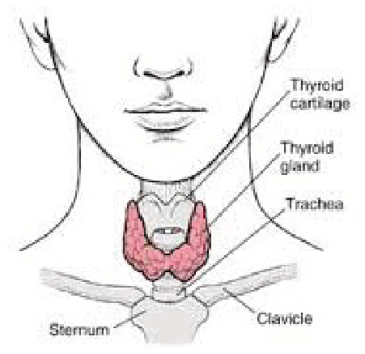
Beers MH, ed. The Merck Manual of Medical Information, Second Home Edition. Whitehouse Station, NJ: Merck & Co., Inc.; 2003:948. merck.com/mmhe/sec13/ch163/ch163a.html.Accessed March 29, 2013.
Hyperthyroidism
Hyperthyroidism, or an overabundance of thyroid hormone, has a stimulatory effect. Classical symptoms include weight loss, palpitations, anxiety, eye bulging, tremors, irritability, menstrual disturbances, fatigue, heat intolerance, and increased appetite. Patients often experience hair loss.
Hyperthyroidism is usually caused by a related autoimmune condition called Graves’ disease in which antibodies to the TSH receptor are present. Graves’ can sometimes evolve into Hashimoto’s and vice versa, and the two disorders appear to be closely related.
Hashimoto’s Thyroiditis
Hashimoto’s thyroiditis is an autoimmune condition that results in destruction of the thyroid gland. This damage eventually leads to inadequate thyroid hormone production, or hypothyroidism. As mentioned above, Hashimoto’s is the most common cause of hypothyroidism in the United States and accounts for 90 percent of the nation’s hypothyroidism cases.
Hashimoto’s thyroiditis is also known as chronic thyroiditis, lymphocytic thyroiditis, lymphadenoid goiter, and recently, autoimmune thyroiditis. This condition was first described in 1912 by a Japanese physician, Hakuro Hashimoto, who first called it struma lymphomatosa.
Hashimoto’s usually begins as a gradual enlargement of the thyroid gland, which is sometimes detectable by the patient on self-examination. It can be accompanied by hoarseness or breathing difficulty. Occasionally, patients may experience tenderness or pain.
When damage to the gland is just beginning, the body compensates and produces more hormone, thus keeping the hormone levels within “normal” ranges. The person may start noticing symptoms of hypothyroidism, however. Mild hypothyroidism may be noticed in some patients, while in others, thyrotoxicosis (too much thyroid hormone) can be present. This beginning stage is described as “subclinical” hypothyroidism, defined as an increased TSH accompanied by “normal” T4 and T3 levels.
Progressively, as more thyroid tissue is destroyed, the thyroid loses its ability to compensate and the person becomes deficient in thyroid hormone. Eventually, this results in the gland’s complete loss of ability to produce thyroid hormone (atrophic thyroiditis), considered the end stage of Hashimoto’s thyroiditis.
In Hashimoto’s, two types of self-reactive antibodies can be seen. More than 90 percent of people with Hashimoto’s have thyroid peroxidase antibodies (TPOAb), and about 80 percent of people with Hashimoto’s have thyroglobulin antibodies (TgAb).1,14
Prevalence
Hashimoto’s affects up to 10 percent of the population in the US, and prevalence increases with age. Hashimoto’s predominantly affects women—at a rate of seven women for every one man with Hashimoto’s. Hormonal fluctuation may contribute to the development of Hashimoto’s, and peak effects are seen around puberty, pregnancy, and menopauses. Up to 20 percent of women may have TPO antibodies indicative of Hashimoto’s. There seems to be a higher incidence of this condition in Caucasian and Japanese individuals as compared with individuals of African or Mexican descent.1,14
Thyroid Changes in Hashimoto’s
If we were to examine the thyroid gland of a Hashimoto’s patient under a microscope, we would observe thyroid cell destruction, a pooling of white blood cells, and scarring of thyroid tissue. The thyroid cells are slightly larger, while thyroglobulin—the usually present reservoir of thyroid hormones and raw materials for hormone production—is significantly shrunken.
Ultrasound of the thyroid usually shows an enlarged gland with normal texture and a characteristic picture with a low reflection of the ultrasound waves (low echogenicity), which means the tissue has become less solid and more rubbery. These changes are seen on the entire lobe or gland.14
Symptoms of Hashimoto’s
People with Hashimoto’s may experience both hypothyroid and hyperthyroid symptoms because as the thyroid cells are destroyed, stored hormones are released into the circulation, causing a toxic level of thyroid hormone in the body—also known as thyrotoxicosis or Hashitoxicosis.
Eventually, the stored thyroid hormones may become depleted. Due to thyroid cell damage, the person may no longer be able to produce sufficient hormones. At this time, hypothyroidism develops.
Complications
One quarter of patients experience physical symptoms such as chest pain or joint pain. Hypothyroidism also puts people at an increased risk of heart disease.
Hashimoto’s patients are three times more likely to develop thyroid cancer compared to people without the condition.
Pregnancy
Sadly, women with positive TPO antibodies have an increased risk of miscarriage, and women who have an underactive thyroid during pregnancy are at risk of delivering an intellectually disabled child.16,17,18
Thyroid screening is not a routine test performed until later in life, so many women don’t discover they have Hashimoto’s until they have experienced recurrent miscarriages.
Remission of Hashimoto’s with loss of goiter, hypothyroidism, and serum antibodies has been reported in pregnancy, with a relapse after delivery. Usually, the antibodies decrease during pregnancy. Pregnancy has also been identified as a trigger for Hashimoto’s and can cause a condition known as postpartum thyroiditis, which is self-limiting in 80 percent of cases but develops into Hashimoto’s in 20 percent of cases.
Risk Factors
There is a genetic predisposition to developing Hashimoto’s, and the condition tends to run in families. Thus, relatives of those with Hashimoto’s are at risk. Hashimoto’s thyroiditis can occur in two varieties: 1) an organ wasting form (atrophic) associated with HLA-DR3 gene inheritance and 2) enlarged thyroid (goiterous form) through HLA-DR5 inheritance. These genes are common in the Caucasian population.
Well-established environmental triggers for developing Hashimoto’s in those who are genetically predisposed include iodine intake, bacterial and viral infections, hormonal imbalances, toxins, and therapy with certain types of medications. Cigarette smoking, surprisingly, has been associated with a reduced risk of Hashimoto’s.
In people with Hashimoto’s, only 50 percent of their identical twins presented with thyroid antibodies, meaning genes alone are not the single defining factor and environmental triggers play a critical role.1
Co-Occurring Conditions
Hashimoto’s may be associated with other autoimmune diseases such as type 1 diabetes mellitus, multiple sclerosis, rheumatoid arthritis, celiac disease, lupus, Addison’s disease, pernicious anemia, and hypoparathyroidism. Polyglandular autoimmunity is a medical term used to describe when one person has two or more autoimmune conditions.1
Diagnosis
Tests for Hashimoto’s
Thyroid ultrasounds and blood tests are used to diagnose Hashimoto’s. Laboratory tests are available to check thyroid function and autoimmune thyroid markers. If we were to perform blood tests in advanced untreated Hashimoto’s, we would find an elevated TSH and low levels of T3 and T4. Thyroid antibodies are also found in most cases of Hashimoto’s.
Screening Test
TSH is used as a screening test for thyroid function, but this test does not always catch thyroid abnormalities. TSH does not become permanently elevated until the Hashimoto’s is advanced. Thus, people may have a normal TSH for years while experiencing unpleasant thyroid symptoms. They will present to their physicians with complaints of weight gain, fatigue, and other symptoms and will be told their thyroid tests are normal. TSH levels can fluctuate throughout the day, however, and the body often compensates by shifting energy away from metabolism and other body functions.
Untreated hypothyroidism eventually results in an abnormally elevated TSH. In contrast, untreated hyperthyroidism results in an abnormally low TSH. A person with Hashimoto’s may fluctuate between the two extremes and at time have “normal” readings.
This is because when the level of thyroid hormones is low, TSH is released to order the body to compensate and make more hormone.
When TSH is released, it signals the body to produce more hydrogen peroxide. Thyroid hormone production requires iodide from food to be oxidized into iodine, a molecule that can attach to tyrosine and make thyroid hormone. Hydrogen peroxide is required for this conversion. A reactive oxygen species, it can cause tissue damage when insufficient antioxidants are present. Glutathione peroxidase is the antioxidant responsible for neutralizing hydrogen peroxide. Selenium is a component of this antioxidant and is required for proper thyroid function.
Iodide (from food) + Hydrogren Peroxide —> Iodine
Most conventional physicians use the TSH screening test to determine whether a patient has a thyroid disorder, but it is often misleading since levels of circulating hormones may fluctuate at different times. Hashimoto’s may cause individuals to fluctuate between highs and lows.
When scientists first set the “normal” ranges of TSH for healthy individuals, they inadvertently included elderly patients and others with compromised thyroid function in the calculations, leading to an overly lax reference range. Thus people with underactive thyroid hormones were often told their thyroid tests were “normal” based on this skewed reference range.
In recent years, the National Academy of Clinical Biochemists indicated 95 percent of individuals without thyroid disease have TSH concentrations below 2.5 μIU/L, and a new normal reference range was defined by the American College of Clinical Endocrinologists to be between 0.3 and 3.0 μIU/ml.2
Unfortunately, most labs have not yet adjusted that range in the reports they provide to physicians, listing ranges as lax as 0.2–8.0 μIU/ml. Most physicians only look for values outside the “normal” reference range provided by the labs and may be unfamiliar with the new guidelines. Subsequently, many physicians miss identifying patients with an elevated TSH. This is one reason why patients should always ask their physicians for a copy of any lab results.
Functional medicine practitioners have further defined normal reference ranges as being between 1 and 2 μIU/ml for a healthy person not taking thyroid medications.
It’s important to remember that reference ranges may not be applicable to everyone. What is normal for one person may be abnormal for the next. Reference ranges take into account the average values of 95 percent of the population. Not everyone falls within the “normal” reference range. If you are in the 5 percent who doesn’t, you may experience symptoms of hypothyroidism or hyperthyroidism even though you have TSH values considered normal. All doctors are taught the old adage, “Treat the patient and not the lab tests,” but, sadly, few conventional doctors seem to follow this advice.
Even with all of the redefined normal ranges, TSH screening only catches the late stage of Hashimoto’s since the body is still able to compensate in the beginning stages of thyroid dysfunction.
Hormone Tests
T4 (thyroxine) and T3 (triiodothyronine) are the two main thyroid hormones. Known as a prohormone, T4 is 300 percent less biologically active than T3, the main biologically active thyroid hormone.
There are two ways to test the thyroid hormones. Total hormone levels measure all of the thyroid hormones in the body, but they may not paint an accurate picture of the situation. “Free” hormone levels measure the hormone available to do its job in the body. Thus, tests for free T4 and free T3 are recommended.
Some clinicians may only test for T4, but it is also important to test T3 as some individuals may not be properly converting T4 to the active T3. Some people may have a normal T4 but a low T3 level.
The reverse T3 (rT3) test measures how much of the free active T3 is able to bind at thyroid receptors. RT3 is produced in stressful situations and binds to thyroid receptors but turns them off instead of activating them.
Best Test for Hashimoto’s
In most cases of Hashimoto’s thyroiditis, blood tests reveal one or two types of anti-thyroid antibodies. Thyroid peroxidase antibodies (TPOAb) are the most common, but antibodies against thyroglobulin (TGAb) are often found as well. These antibodies may appear decades before a change in TSH is detected.
Thus, TPO antibody screening is always crucial in suspected thyroid disease.
Misdiagnosis
As many thyroid symptoms are nonspecific, they are often disregarded by the medical community during the initial stages. Patients are dismissed as having depression, stress, or anxiety. Thyroid patients are prescribed antidepressants or anti-anxiety medications without consideration of thyroid function.
Medical studies show up to one third of people who fail to improve on antidepressants report feeling better once started on Cytomel® (a T3 thyroid hormone).11 Some patients have even been hospitalized and misdiagnosed as having bipolar disorder or schizophrenia when they were actually suffering from thyroid imbalances.
Additionally, people with bipolar disorder as well as depressive and anxiety disorders were found to have a higher prevalence of anti-thyroid antibodies.7 To further complicate the issue, lithium—a medication used to treat bipolar disorder—can trigger Hashimoto’s.10
High concentration of TPO antibodies has been associated with distress, obsessive-compulsive symptoms, and anxiety.4 This is likely due to the increased amount of thyroid hormone being rushed into the bloodstream, causing a transient hyperthyroidism. Anyone who has experienced symptoms of hyperthyroidism can describe how agitating this feels. People with anxiety, depression, or other mood disorders should have their thyroid function checked, especially for TPO antibodies. Some individuals with lifelong psychiatric diagnoses have been able to recover after receiving proper thyroid care.9
Prognosis
According to most endocrinologists, the progression from euthyroid (normal thyroid hormone levels) to hypothyroidism is irreversible and ends with complete thyroid gland destruction. It has been reported, however, that thyroid function spontaneously returned to normal in 20 percent of patients.1,8
These individuals return to normal thyroid function even after thyroid hormone replacement is withdrawn.
Studies show once the autoimmune attack ceases, the damaged thyroid has the ability to regenerate. Thyroid ultrasounds show normal thyroid tissue that has regenerated, and the person no longer tests positive for thyroid antibodies.12
This regeneration is often missed in adult patients because they are assumed to have hypothyroidism for life, so antibody tests and ultrasounds are not usually repeated after the initial diagnosis.
In addition to ultrasound and TPO antibodies, a test can be performed by administering TRH (thyroid releasing hormone), which causes an increase in T3 and T4 if the thyroid has recovered. This test helps determine whether the person can be weaned off thyroid medications.8
While this information is readily available in the scientific literature, most physicians do not attempt to administer TRH in an effort to see if patients could be weaned off their thyroid medications.
Conventional medicine has yet to recognize the impact of lifestyle modifications that can slow down, halt, or reverse disease progression. These lifestyle interventions will be the focus of the rest of this book.
Chapter Summary
- Test thyroid function using TSH, free T3, free T4, and TPO antibodies.
- Remission is possible with return to normal thyroid function.
3. Restoring Thyroid Hormone Levels
“Every great journey begins with a single step.”
—Chinese proverb
Conventional medicine focuses on restoring normal thyroid function through the use of supplemental hormones. If we are to use the analogy of a cup with a hole in it leaking liquid to symbolize the depletion of thyroid hormones, conventional medicine does not consider the source of the leak (autoimmune destruction); it simply keeps adding more water to the cup.
While medication does not address the root cause, it is a crucial first step toward feeling better and reversing the negative effects of hypothyroidism on the body. Whether one should start replacement thyroid hormone is primarily determined by lab tests and secondarily the patient’s symptoms.
Traditionally, physicians did not prescribe thyroid hormones when someone was considered to have subclinical hypothyroidism (elevated TSH but normal to borderline low T4 levels), but more progressive endocrinologists and physicians now recognize the value of beginning thyroid hormone supplementation in subclinical hypothyroidism, especially in those experiencing symptoms of hypothyroidism.
Additionally, new guidelines also recommend starting supplemental thyroid hormone earlier in the game—even if T4 levels are still normal to borderline low. Recommendations are to start supplemental hormones in subclinical hypothyroidism when the TSH is above 10 μIU/ml (without symptoms) and when the TSH is between 3 and 10 μIU/ml if symptoms are present.10,11
Hormone supplementation in conventional medicine is considered lifelong, making Hashimoto’s a chronic condition dependent on the traditional medical system with a continued need for physician visits, lab monitoring, and daily medication with the potential of dose escalation as more thyroid tissue destruction occurs.
Lab tests to repeat thyroid function studies need to be performed four to eight weeks after starting the medication and after any dose changes. Once the dosage is stabilized, tests should be performed every six to twelve months or more frequently if the patient has thyroid symptoms.4
Which Thyroid Medication Is Best?
Thyroid hormones are known to have a very narrow therapeutic index. They are “Goldilocks” medications, in that they have to be dosed just right to ensure effectiveness and prevent adverse drug events. Thyroid hormones are dosed in micrograms—that is just 1/1000th of a milligram! When the dose is a teensy bit too high, we may experience symptoms of hyperthyroidism, and when the dose is a teensy bit too low, we can have symptoms of hypothyroidism!
Conventional physicians will usually prescribe Synthroid® or levothyroxine, a synthetic version of T4. Natural desiccated thyroid (NDT) medications, which may include Armour®, Nature-Throid®, WP Thyroid® and other animal organ derived products, are not usually recommended by conventional physicians because of past issues with quality control.
In the past, Armour® has had some discrepancies in the dosages betweenbatches, but this does not seem to be the case at present due to improved quality control. Nature-Throid®, another desiccated thyroid medication, has never been recalled for inconsistent T4 and T3 hormones.
Conventional treatment guidelines indicate there is no benefit from taking combination T3/T4 products and T4 products are superior. Most of these claims, however, are based on studies funded by pharmaceutical companies with a potential conflict of interest in promoting the use of their own products.10
Understanding thyroid physiology, I believe combination products may be advantageous for many patients with Hashimoto’s. Some Hashimoto’s patients are unable to properly and efficiently convert T4 to T3. For example, zinc is required to convert T4 to T3, and as you will come to learn in the Depletions & Digestion chapter, Hashimoto’s patients are often zinc-deficient.
Under stressful situations, T4 gets converted to reverse T3 instead of T3. Reverse T3 is an inactive molecule related to T3 but without any physiological activity—it is a dud that just takes up space! In cases where a lot of reverse T3 is produced, adding a combination product that contains T3 helps ensure that the right hormone is getting to the right receptors. Additionally, many patients report they feel better taking a combination T4/T3 product.
| Nutrient Depletions | Stress | Aging | Alcohol | Obesity |
| Chemotherapy | Cigarettes | Diabetes | Fasting | Soy |
| Medications | Goitrogens | Pesticides | Radiation | Surgery |
| Kidney and Liver Disease | Heavy Metals | Growth Hormone Deficiency | Low Progesterone | Iodine Excess |
The National Institutes of Health, a government agency (not funded by pharmaceutical grants), conducted a clinical trial to see if desiccated thyroid therapy is advantageous to T4 alone.8 The authors of the study concluded, “DTE (Desiccated Thyroid Extract) therapy did not result in a significant improvement in quality of life; however, DTE caused modest weight loss and nearly half (48.6 percent) of the study patients expressed preference for DTE over L-T4 (Levothyroxine). DTE therapy may be relevant for some hypothyroid patients.”13
Thyroid hormone therapy should be individualized with the patient in mind. Some people report feeling better on natural desiccated hormone and others on compounded medications, while others may feel better taking Tirosint® or another version of synthetic T4.
Some patients may have ethical objections to using animal-derived NDT products. Compounded T4/T3 products offer an alternative. These medications also provide the advantage of being made without fillers such as lactose or gluten, which are present in some thyroid medications and can be problematic for thyroid patients (as you will learn in the Gut chapter).
Compounded T4/T3 products, however, need to be prepared by a specially trained compounding pharmacist.These compounds are usually much more expensive and may need to be refrigerated to preserve activity.
Some proponents of natural thyroid medications claim the desiccated glands of animals are the best option as they also have trace amounts of T1 and T2, which may have undiscovered biological functions.
In contrast, some pharmacists, Dr. Alexander Haskell (author of Hope for Hashimoto’s) and Dr. Mark Starr (author of Hypothyroidism Type II) report that for some Hashimoto’s patients, natural thyroid formulations from animal thyroids such as Armour® may be perpetuating the autoimmune attack because they contain thyroglobulin and TPO. They only recommend compounded and synthetic thyroid medications for people with Hashimoto’s.6,7
If someone starts feeling worse after initially feeling better on desiccated thyroid or has an increase in TPO antibodies after starting desiccated thyroid, switching to a compounded T4/T3 medication may be helpful. Others report that desiccated thyroid products, especially when given to a suppressive level, will reduce thyroid antibodies. A suppressive dose essentially puts our own thyroid to sleep, and all of the required hormones are obtained from the medication.
Compounded T4/T3
Thyroid compounds are usually prepared in the same physiological ratio found in NDT. Physicians, however, can elect to change the amount of T3/T4 as the compounding pharmacists are literally making the medications from scratch.
The benefits of the T4/T3 compounds is they can be made devoid of the fillers not tolerated by many people with Hashimoto’s, and do not seem to perpetuate autoimmunity.
Most T4/T3 compounds are immediate-release versions like NDT products, but compounding pharmacists can also make sustained-release versions.
Some professionals recommend sustained-release formulations so the hormone is released continuously throughout the day. However, these types of formulations may not be absorbed properly by people with Hashimoto’s and gut issues.
The downsides of T4/T3 compounds is that specially trained compounding pharmacists must produce them and they take time to prepare.
Additionally, not all compounding pharmacies are equal, and a specialized process is required to prepare an accurate dose of compounded thyroid medications.
This is because compounded thyroid medications are dosed in 1/1000th of a milligram. There is a lot of room for error, and I always recommend working with pharmacies that use Professional Compounding Centers of America (PCCA) thyroid starters. PCCA pre-dilutes the thyroid hormones 1000 times, allowing for more precise dosing.
Thus, patients might have to travel out of their way to find a compounding pharmacy. We have a list of compounding pharmacies on the thyroidpharmacist.com website under the “Resources” tab.
Questions to ask your compounding pharmacist:
- What types of fillers are used?
- What is the source of the materials (we prefer PCCA source materials)?
- Is the compound slow-release or immediate-release?
Other Options
Nature-Throid®, WP Thyroid®, and Tirosint® are other hypoallergenic prescription medications. There are many options for thyroid hormone treatment. Individuals should work with an open-minded physician to find the thyroid medication that works best for them.
| Brand Name (Generic Name) | Description |
|---|---|
| Armour® Thyroid Nature-Throid® WP Thyroid® NP Thyroid® (Thyroid USP) | Desiccated pork thyroid gland T4/T3 combination Mimics the biological ratio of 80% T4 to 20% T3 with a T4:T3 ratio of 4:1 May also contain TPO and thyroglobulin, which can perpetuate the autoimmune attack in some |
| Proloid® (Thyroglobulin) | Partially purified pork thyroglobulin T4:T3 ratio of 2.5:1 |
| Synthroid®, Levothyroid®, Levoxyl®, Thyro-Tabs®, Unithroid® (Levothyroxine) | Synthetic T4 Variable absorption among products. Should not switch back and forth between brand/generics |
| Cytomel® (liothyronine) | Synthetic T3 |
| Liotrix® (Thyrolar) | Synthetic T4:T3 in 4:1 ratio (on long-term backorder at time of writing; see thyrolar.com for details) |
| Compounded Thyroid | Tailored dosage forms with unique ratio of T4/T3. Free of allergenic fillers and prepared by specialized compounding pharmacists. May be formulated as immediate-release or slow-release. Slow-release products may be more difficult to absorb. |
| Tirosint® | New liquid gelcap formulation of T4; contains only glycerin, gelatin, and water |
Goals of Medication Therapy
The goals of medication therapy are to relieve symptoms and get the TSH, free T4, and free T3 in the normal range. Most endocrinologists consider “normal” TSH to be simply within the reference range, but many patients report “feeling like sloths” with a “normal” TSH of 2.5 μIU/L! Some may need to increase the dose until the TSH is at or below 1 μIU/L.
Thyroid medications containing T3 (e.g., Armour®, Nature-Throid®, WP Thyroid®, compounded T3/ T4, Thyrolar®, and Cytomel®) can skew thyroid function test results. When testing thyroid functions, tests should be done before the daily dose of medication is taken. As these medications are generally taken in the morning, individuals should postpone their medication until after the blood test has been performed.
Dosing
Usually the patient is started on a low-dose thyroid medication, and the dose is gradually increased to normalize TSH, free T4, and free T3. This is to avoid shocking the body with a dramatic change and to determine the appropriate amount needed. After the initial starting dose, the TSH and free T4/T3 are measured again in four to six weeks to see if they have improved. If the lab ranges are still not at goal, the dose is increased and labs repeated in another four to six weeks.
Synthroid® (Levothyroxine): 1.7 mcg/kg daily; doses are increased by 25 mcg every four to six weeks.
Armour®, Compounded T3/T4: Start at 30 mg; increase by 15 mg every six weeks.
Nature-Throid®: Start at 32.5 mg, increase by 16.25 mg every six weeks.
Changing Between Thyroid Medications
While dose conversions from Armour® to compounded T3/T4 are 1:1, there may still be some discrepancies in the dose you receive, so carefully monitor your symptoms and repeat your labs four to six weeks after switching to make sure your body is adjusting well.
| Medication Name | Armour® Compounded T4/T3 | Nature-Throid®/ WP Thyroid | Cytomel® | Synthroid® (levothyroxine) |
|---|---|---|---|---|
| Equivalent Dose | ¼ grain (15 mg) | ¼ grain (16.25 mg) | 25 mcg | |
| Equivalent Dose | ½ grain (30 mg) | ½ grain (32.5 mg) | 12.5 mcg | 50 mcg (0.05 mg) |
| Equivalent Dose | 1 grain (60 mg) | 1 grain (65 mg) | 25 mcg | 100 mcg (0.1 mg) |
| Equivalent Dose | 1½ grains (90 mg) | 1½ grains (97.5 mg) | 37.5 mcg | 150 mcg (0.15 mg) |
| Equivalent Dose | 2 grains (120 mg) | 2 grains (130 mg) | 50 mcg | 200 mcg (0.2 mg) |
| Equivalent Dose | 3 grains (180 mg) | 3 grains (195 mg) | 75 mcg | 300 mcg (0.3 mg) |
Other Conventional Treatments
Steroids have been used to suppress the immune process, but antibodies and thyroid dysfunction returned after discontinuation. Chloroquine, an antimalarial drug also used for rheumatoid arthritis and cancer, has been shown to reduce anti-thyroid antibodies. Its use is not recommended because of toxic effects.
For cases in which the thyroid gland is extremely painful, surgery may be considered. This surgery removes the entire thyroid gland, and the person is put on lifelong thyroid replacement hormone.3,4
Are Medications Lifelong?
I’d like to start off by saying medications are a great tool in the arsenal available to overcome Hashimoto’s, and they are of tremendous benefit while we fix the issues contributing to our autoimmune thyroiditis.
Despite the 20 percent spontaneous recovery rate, most physicians tell their patients supplementation is lifelong. Perhaps it is easier and less expensive to have someone on pills for life instead of running tests and attempting to taper down a medication. In some cases, a person might become hyperthyroid, which necessitates a medication dose reduction. In other cases, the medication gets built into our physiology due to hormonal feedback, and internal hormone synthesis turns off because there is enough supplemental hormone circulating. If this occurs, a TRH (thyroid releasing hormone) test should be done to see if the thyroid function has recovered.
Lifestyle interventions can also help with reducing TPO antibodies, reversing hypothyroidism and Hashimoto’s, and preventing other diseases—and they make most people feel better. Some may be able to reduce and eliminate the need for thyroid medications when the autoimmune attack ceases and the thyroid gland is able to regenerate.
Medications Versus Lifestyle Interventions
For those already taking thyroid supplements, it is crucial never to stop the medication abruptly. Abrupt cessation can lead to severe hypothyroid symptoms and cause a rapid escalation of TSH, leading to more thyroid damage. Gradual tapering of the medication is necessary and should only be done under the supervision of a physician.
I know that some people refuse to take thyroid medications and feel taking thyroid medications is like giving up, but that is not the case! Think of medications as one tool in your toolbox for overcoming Hashimoto’s. We can use medications to help us feel better while we work everything else out.
Do not think of medications as a life sentence. In some cases, you may be able to get off them once you fix the “leaks” in your body that are contributing to the autoimmune destruction of the thyroid. If your TSH is elevated for a prolonged period of time, not taking thyroid medications can actually be harmful and may hinder your recovery.
If you have an elevated TSH or thyroid symptoms, you may want to talk to your doctor about thyroid medications. There is no need to suffer while you search for the root cause of your condition.
Thus for many people, optimizing thyroid medication may be the first step toward feeling well with Hashimoto’s.
Chapter Summary
- If you are experiencing thyroid symptoms and have a TSH above 3 mIU/L, discuss the use of thyroid medication with your doctor.
- Many individuals feel better on a combination T3/T4 medication such as compounded T3/T4 or natural desiccated thyroid.
- Thyroid medications should be dosed appropriately according to your symptoms and your optimal TSH.
- Retest thyroid antibodies after starting natural desiccated thyroid.
4. What Is an Autoimmune Condition?
“Autoimmune disease: because the only thing tough enough to kick my a** is me.”
—Unknown
In simple terms, autoimmunity means a person’s immune system mistakenly recognizes normally occurring physiological processes as foreign invaders and attacks itself. Hashimoto’s thyroiditis is the first autoimmune condition recognized in medicine. You may have heard hypothyroidism described as having a “sluggish” or “underactive” thyroid. This is thought to occur with advanced age, but that is not the case with the thyroid in autoimmune hypothyroidism. The thyroid is actually working overtime to produce adequate hormone while the immune system gradually destroys it. The problem is not with the thyroid’s performance but rather with the immune system’s.
The theory goes like this:
1) Thyroid cells are damaged by a trigger such as a toxin or an infection.
2) Dying thyroid cells send out a stress signal.
3) Immune cells rush in to “save” the thyroid from attackers.
4) Immune cells attack the thyroid instead.
5) More thyroid cell damage occurs.
6) Body runs out of resources to regenerate thyroid cells.
7) Thyroid is no longer able to produce enough hormone.
Perfect Storm
Autoimmunity isn’t caused by a single event but a series of events aligning precisely to create the perfect storm—or perfect circumstances—for developing autoimmunity.
Exciting advances in autoimmunity have recently been made by Italian-American researcher Alessio Fasano, MD. Dr. Fasano and his colleagues suggest the following three factors need to be present for autoimmunity to develop:
- Genetic predisposition
- Exposure to antigen (trigger)
- Intestinal permeability
Together, the intestinal permeability and triggers cause an immune system imbalance that results in the body no longer recognizing itself from a foreign invader.1,2
How Is Increased Intestinal Permeability Connected to Autoimmune Disorders?
Spanning the surface area of a tennis court, your intestinal tract has the largest concentration of immune cells and the same number of neurons as your spinal cord.
Researchers have found that in addition to digesting and absorbing nutrients, the intestine is also responsible for keeping potentially harmful substances from our environment out of our bodies. The intestinal wall, in particular, has recently been credited with enabling the body to distinguish itself from foreign antigens.
When the intestinal wall becomes permeable, the body loses its ability to recognize benign substances such as our own cells and the foods we eat, instead treating them as though they were foreign invaders such as bacteria and viruses.
Zonulin is a recently discovered human protein that reversibly increases intestinal permeability. This protein is measured in excessive amounts in individuals with autoimmune conditions such as rheumatoid arthritis, Hashimoto’s, multiple sclerosis, type 1 diabetes, and celiac disease (see the Gut chapter for more details).1,2
How Do Triggers Work?
Let’s use iodine as our sample trigger.
When iodine enters the cell, TPO—the enzyme that oxidizes iodide to the reactive iodine—is released to allow the iodine to attach to tyrosine residues in thyroglobulin to form thyroid hormones. (Refer to Chapter 2 for more details.)3
In normal thyroid cells, the antioxidant glutathione peroxidase neutralizes the hydrogen peroxide, preventing thyroid cell damage. This antioxidant is made from glutathione and selenium. Depletions of various substances, especially selenium and glutathione, have been recognized as triggers for Hashimoto’s.
The following mechanism explains why supplementing with iodide can cause an immune system flare-up:
- Iodide gets in the blood.
- Iodide gets oxidized to iodine by TPO.
- Oxygen-free radicals are formed during oxidation.
- In the absence of selenium, free radicals cause damage to the thyroid cells instead of being neutralized.
- Lymphocytes (white blood cells) infiltrate the thyroid tissue to repair the damage and produce inflammation of the thyroid.
- Inflammation causes further destruction of thyroid tissues.
- More white blood cells infiltrate the thyroid.
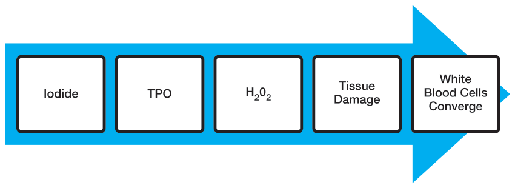
Our immune system evolved to protect us from harmful foreign invaders. As TPO expression results in oxidative damage, our immune system starts recognizing it as an enemy. Whenever the immune system identifies a foreign invader, it forms antibodies against the invader. In the case of Hashimoto’s, the target is the thyroid peroxidase enzyme (TPO).
Thyroid peroxidase antibodies (TPOAb) are formed in response to this thyroid injury. These antibodies activate the immune system, which leads to an all-out search and destroy mission on the enemy.
The immune system then launches an attack to try to clear the body of the invader; unfortunately, in this case, the immune cells target healthy thyroid tissue instead.
Hashimoto’s has been classified as a type IV hypersensitivity, which is called a delayed type hypersensitivity (“self-allergy”). Unlike other types of immune reactions, the damage to the thyroid tissue is not antibody-mediated; instead, the antibodies “mark” the thyroid cells, and then antigen-specific cytoxic T-lymphocytes (lymph cells) attack the targeted thyroid cells.5,6
Lymphocytes (also known as white blood cells) enter the thyroid and begin to destroy it, causing scarring, which leads to a decreased ability to produce thyroid hormones.
The production of TPO antibodies perpetuates the attack on the thyroid whenever TPO is expressed. These antibodies keep forming as long as TPO is around, and this eventually leads to so much scarring to the thyroid tissues that the thyroid can no longer produce adequate hormone. More than 90 percent of people with Hashimoto’s have thyroid peroxidase antibodies.6
Additionally, antibodies may also be formed to thyroglobulin (Tg), an intermediary protein in the thyroid hormone production pathway. Iodine attaches to tyrosine residues in thyroglobulin, forming a new molecule. In the presence of iodine, thyroglobulin becomes more visible to the immune system. It has even been suggested that excess iodine may create “mutant” thyroglobulin molecules that may be especially targeted by immune cells. Thyroglobulin also acts as a storage molecule for thyroid hormones, so iodine consumption may actually trigger a thyrotoxic episode of hyperthyroidism that can cause palpitations, anxiety, and agitation due to destruction of the storage protein and spillover of the stored thyroid hormones. About 80 percent of people with Hashimoto’s have thyroglobulin antibodies (TgAb).6
Collectively, all antibodies directed against thyroid processes are known as microsomal antibodies, but this term is also sometimes used to refer to TPOAb specifically when discussing different types of antibodies. Microsomal antibodies are classified as immunoglobulin G (IgG) types of antibodies, which are responsible for fighting infections as well as for delayed types of food sensitivities.
Initially, the production of self-reactive and autoantibodies occurs in the draining lymph nodes but may then move over to the thyroid.
In the case of Hashimoto’s, antibodies to thyroid peroxidase enzyme or thyroglobulin are produced. Most people with Hashimoto’s have an elevation of one or both of these antibodies, indicating an active immune system attack.
Antibodies are used as an indicator of autoimmune activity—the more antibodies, the more thyroid damage is occurring. Various labs use different ranges for antibodies. Generally, having TPO antibodies above 30 kU/L is consistent with having Hashimoto’s. Antibodies above 500 kU/L are considered aggressive, while antibodies of less than 100 kU/L are associated with a reduced risk of progressing to hypothyroidism.
Taking iodine with elevated TPO antibodies has been described as “pouring more gas on the fire,” as it flares up Hashimoto’s and causes an increase in antibodies. Many integrative Hashimoto’s professionals recommend avoiding or limiting iodine until the TPO antibodies are no longer elevated or are below 100 kU/L.
Reducing Autoimmunity
It was once believed that after the autoimmune process is activated, it becomes independent of continuous exposure to the environmental trigger, resulting in a self-sustaining and irreversible cycle.
However, examples of autoimmune recovery have discredited the “irreversible” aspect of this theory. It has been shown that continuous environmental triggers are necessary to perpetuate the process. This means the autoimmune process can be stopped and reversed when the triggers are eliminated. One example of this is celiac disease, an autoimmune condition in which gluten, an environmental trigger, has been identified. In most cases of classical celiac disease, all symptoms resolve when the environmental trigger (gluten) is removed.
Table 4: Thyroid Events Amsterdam (THEA) Score4
The THEA score is used to help estimate the risk of developing hypothyroidism within five years in people who have TPO antibodies and relatives of those with thyroid diseases. Note: Higher antibodies are associated with a greater risk of developing hypothyroidism.
| Characteristic | Hypothyroid Event |
|---|---|
| TSH, mIU/L <0.4 0.4–2.0 >2.0–4.0 >4.0–5.7 >5.7 | 0 0 3 6 9 |
| TPO Antibodies, kU/L ≤ 100 >100–1,000 >1,000–10,000 >10,000 | 0 3 6 9 |
| Family Background 2 Relatives with Graves’ 2 Relatives with Hashimoto’s | 0 3 |
| Maximum THEA Score | 21 |
| Score | Risk Category | Percent Hypothyroid Within Five Years |
|---|---|---|
| 0–7 | Low | 1.6% |
| 8–10 | Medium | 12.2% |
| 11–15 | High | 30.8% |
| 16–21 | Very High | 85.7% |
Adapted from Strieder TGA, Tijssen JGP, Wenzel BE, Endert E, Wiersinga WM. Prediction of progression to overt hypothyroidism or hyperthyroidism in female relatives of patients with autoimmune thyroid diseases using the Thyroid Events Amsterdam (THEA) score. Arch Intern Med. Aug 11–25, 2008;168(15).
Antibody Memory
IgG subclass antibodies have a half-life of twenty-one days, and they stick around on immune cells for two to three months. They need constant “reminders” in the form of an antigen to continue production. If the antigen is removed, the antibodies will go away as well. The time period required for them to completely forget about the antigen and disappear is nine to twelve months.5
The following things need to be in place for the antibodies to forget about the thyroid:
- The thyroid stops expressing TPO.
- The thyroid cells are not damaged and able to regenerate.
- There are no substances that look like TPO (glandulars, gluten, infections, or other triggers, depending on the person).
- The immune system is balanced.
- The autoimmune cells are confused by a decoy (optional).
Some of these requirements are quick and easy, while others take time to achieve.
The thyroid stops expressing TPO for two reasons. The first is thyroid destruction, which we do not want; the other is thyroid suppression. Thyroid suppression is induced by limiting iodine and taking a thyroid supplement to bring TSH to 1 mIU/L or so. This can take up to three months.
In the case of autoimmune conditions, traditional and alternative medicine practitioners may focus on rebalancing the immune system (steroids and immune-modulating drugs are used in traditional medicine, whereas herbs, supplements, or acupuncture are used in alternative medicine).
While this approach may be helpful for taming the immune system in the short term or overcoming autoimmune flares, it is often a temporary solution. If the underlying issue that led to the immune system imbalance is not addressed, the immune system may again become imbalanced after the medications, acupuncture, or herbs and supplements are stopped. Immune modulation treats only the symptoms and not the root cause.
As we cannot change genes, our approach to addressing the root cause of Hashimoto’s is threefold:
- Reducing triggers
- Eliminating intestinal permeability
- Providing the body with nutrients to regenerate
Eliminating and identifying triggers and toxins can take a few weeks to months. Providing the thyroid with the nutrition needed to help rebuild and detoxify generally takes three to six months.
Rebalancing the immune system by addressing the root cause of autoimmunity (intestinal permeability, gut dysbiosis, infections) may take one to three years, but in the meantime, we can modulate the immune system and throw our thyroid antibodies a decoy.
Thytrophin PMG: The Decoy
Thytrophin PMG is a supplement that can help neutralize the circulating antibodies to TPO and thyroglobulin. In Hashimoto’s, white blood cells are attracted to the thyroid as a result of a stress signal given off by dying thyroid cells.
Thytrophin PMG is a bovine thyroid extract of the stress signal, thus confusing the antibodies and white blood cells. Instead of attacking the thyroid tissues, the antibodies attach to the PMG extract. This gives the thyroid a break from attack, allowing it to regenerate. Unlike many glandular products, Thytrophin PMG does not contain TPO or thyroglobulin so does not induce an autoimmune reaction against the thyroid gland.7
This supplement is another tool that can be used to help recover thyroid function while working toward finding and treating the root cause of Hashimoto’s and associated triggers.
Antibody testing following the initiation of this supplement is recommended. Generally, you should be able to see a trend in antibody reduction within one month, with the full effect of the intervention becoming evident within three months.
Chapter Summary
- Hashimoto’s is an autoimmune condition in which antibodies are directed against the thyroid.
- The perfect storm of genes, triggers, and intestinal permeability must all be present to cause Hashimoto’s.
- Immune modulation is only a temporary solution.
- Taking anywhere from three months to three years, the approach to overcoming Hashimoto’s is threefold: 1) removing triggers, 2) reducing intestinal permeability, and 3) nourishing the thyroid.
- Thytrophin PMG can act as a decoy for thyroid antibodies while we work on fixing the root cause.
Part II: Finding Your Root Cause
5. Finding Your Root Cause
“Whether you think you can or can’t, you are right.”
—Henry Ford
I wrote this book to guide others with Hashimoto’s toward finding and treating the root cause of their own condition based on the research I did to overcome my own condition. I am a firm believer in patient empowerment and self-management, and what I love the most about being a health care professional is the opportunity to teach others how to take care of themselves and their loved ones.
While you may need to utilize the services of various health care professionals throughout your healing journey, the push to get better and keep asking questions has to come from you. After all, you know yourself better than anyone else.
Although some health care professionals are knowledgeable about treating Hashimoto’s, you will likely know more about your condition than most of them after reading this book! I hope this information will empower you to be at the center of your own care team.
Some medical professionals say it is impossible to return to normal thyroid function after Hashimoto’s, but that is not true. They just don’t know how to get there. People are recovering from Hashimoto’s every day. Some of them are recovering by accident, and some on purpose.
This book gives you the tools to find and treat the root cause of Hashimoto’s so you, too, can get better—on purpose!
What’s Really Going on in Hashimoto’s?
Hashimoto’s is a complicated condition with many layers that must be unraveled. Conventional medicine looks at each body system as a separate category and is only concerned with the thyroid’s ability to produce thyroid hormone, but Hashimoto’s is far more than just hypothyroidism.
Our thyroid is part of a complicated body system and does not live by itself in a vacuum.
Often, patients with Hashimoto’s present with acid reflux, nutrient deficiencies, anemia, increased intestinal permeability, food sensitivities, gum disorders, and hypoglycemia in addition to the “typical” hypothyroid symptoms discussed in Chapter 2.
The body becomes stuck in a chronic state of immune system overload, adrenal insufficiency, gut dysbiosis, impaired digestion, inflammation, and thyroid hormone release abnormalities.
These changes can lead to the symptoms of anxiety, depression, and chronic fatigue often seen with Hashimoto’s.
This cycle is interrelated and reinforces itself through a positive feedback loop, meaning the cycle is self-sustaining and continues to cause increasingly more symptoms until an external factor intervenes and breaks the cycle.
Unfortunately, simply adding thyroid supplement to the mix does not result in full recovery for most thyroid patients.
Additionally, supporting just the thyroid may weaken the adrenals and immune balance, which in turn perpetuates the vicious cycle. Each intervention must be counterbalanced to ensure we are not inadvertently causing imbalance in another part of the body.
The lifestyle interventions discussed in this book aim to dismantle the vicious cycle piece by piece.
We start with the simplest modifications—removing triggers—and follow with repairing the other broken systems to restore equilibrium, allowing the body to heal itself.
![Flowchart of the Hashimoto’s vicious cycle. Acid suppressants, antibiotics and hormones, carbs and sugars, skipped meals and stress lead to low stomach acid, reduced B12, abnormal gut flora, blood sugar spikes and increased cortisol. These feed impaired digestion, leaky gut, food intolerance, depleted steroids, acid reflux, nutrient deficiencies, toxins and triggers, inflammation, immune overlord, impaired ADME, more thyroid produced but stuck in limbo, anxiety, anemia, adrenal insufficiency, autoimmune destruction of the thyroid, and finally hypothyroidism.](images/figure-3.png)
Image by: Izabella Wentz, PharmD, FASCP
Hashimoto’s is a complex chain of events that reinforces itself through a feedback loop. This vicious cycle continues in the direction of its momentum until an external factor intervenes and breaks it.
How to Find Your Path
“Every strike brings me closer to a home run.”
—Babe Ruth
Healing from any chronic condition and moving toward better health is a journey. You may stumble before you succeed. I struggled for several years before finally finding what worked for me.
Don’t Give up, DIG AT IT!
How do you find the root cause of your thyroid condition? You have to DIG AT IT. Once you do, you will know which types of changes you need to implement to make yourself feel better.
The acronym DIG AT IT stands for:
Depletions, Digestion
Iodine, Inflammation, Infection, Immune Imbalance
Gut, Gluten
Adrenals, Alkaline Phosphatase
Triggers
Intolerances
Toxins
As you read each chapter dedicated to the above-mentioned headings, pay special attention to the quizzes and assessments to determine which types of risk factors you may have had for developing Hashimoto’s.
You will then create your own Health Timeline. This timeline should include an overall health history as far back as you can remember. Infections, periods of severe stress, the use of medications (especially antibiotics, antacids, and oral contraceptives), accidents, and exposure to toxins should be especially noted.
Underline events that may have contributed to your illness.
After you complete your timeline, you will be ready for the testing, treatment, and tracking phases of the book.
I provide a sample Health Timeline for your reference in the Appendix.
As you start to practice interventions, keep a journal of how various lifestyle choices impact your well-being. It may be easiest to keep a simple running tally with the following headings:
- Things that make me better
- Things that make me worse
This will enable you to tailor the healing plan to your own needs and individuality.
This book is divided by various body organs for the sake of keeping things organized and to avoid overwhelming the reader with too much physiology and biology at once, but it’s vital to keep the big picture in mind. The body is a complete system—we cannot isolate one body part without affecting another.
Chapter Summary
- DIG AT IT to find and treat the root cause of Hashimoto’s.
6. Digestion & Depletions
“Bad digestion is the root of all evil.”
—Hippocrates
We have learned that in the case of Hashimoto’s—as with all cases of autoimmune conditions, —the problem lies with the immune system and not the thyroid.
In most Hashimoto’s cases, the thyroid is actually working overtime to keep up thyroid hormone production, despite being attacked by the immune system.
Autoimmunity may be in part triggered by nutrient depletions, while nutrient depletions may also result from the increased thyroid cell turnover.
As a word of caution, most “thyroid support” formulas promoted by alternative medicine practitioners that promise to restore a “sluggish thyroid” do not correct an autoimmune thyroid condition and—depending on the active ingredients—may actually worsen the condition.
Some nutrients are essential to thyroid function, while others are required for proper immune system, liver, gut, and adrenal function, so a depletion may be compromising thyroid function directly or indirectly.
In contrast, an excess of other nutrients may be perpetuating an autoimmune thyroid.
Smart nutrient supplementation can be helpful in not only improving symptoms but also in reducing TPO antibodies and improving thyroid function.
The following lifestyle intervention topics will be discussed in further detail in this chapter: Causes of depletions, Impact of thyroid hormones on digestion, Addressing depletions, Selenium, N-acetyl cysteine (glutathione precursor).
Causes of Depletions
Why Do We Have Nutrient Depletions?
Many substances in our comfort-craving, health-compromising Western lifestyle can have a profound impact on our nutrient levels.
Conventional Versus Organic Farming
Conventional commercial farming practices reduce our nutrient content since vegetables and fruit absorb nutrients from the soil in which they are grown.
Conventional crops are grown with synthetic fertilizers and pesticides, and the same fields are repeatedly used, causing soils to become depleted. (If you live in the Midwest, you’ve likely driven past cornfields that have been in the same place for decades.)
To survive transport across the country, fruits and vegetables are picked before they are ripe. This halts the natural process of ripening, and the produce no longer acquires nutrients (albeit from an already-depleted soil).
In contrast, organic farmers rotate their crops, fertilize their soils with natural fertilizers such as compost, and rely on nature’s pesticides such as encouraging insect predators to make the farms their home. Organic farmers also pick vegetables when they are ripe. These vegetables have been found to be much richer in nutrients. One study discovered that some organic vegetables had almost 90 percent more nutrients as compared with their conventionally grown counterparts.
Food Processing
The way our food is processed also strips away many of the nutrients normally present. Let’s take wheat, for example. Wheat starts off as a wheat kernel made up of starch, nutrient-filled bran, and germ. The bran and germ are removed, leaving behind the starch (a.k.a. “flour”). This flour is then bleached to make it more aesthetically pleasing. A couple of synthetic B vitamins, iron, and folic acid are added in.
Found in bread, cereal, waffles, wraps, sandwiches, pasta, crackers, and most processed foods, processed wheat products are the foundation of the Standard American Diet (SAD) and yet are devoid of nutrients.
Consuming these products actually causes the body to lose nutrients instead of gain them!
If that wasn’t bad enough, wheat products also contain gluten, a protein toxic to many individuals. Gluten has been connected to numerous autoimmune conditions, especially Hashimoto’s.
The Folly of Convenience
Devoid of nutrients and full of empty calories, the conventional foods found in the Standard American Diet can cause us to become nutrient-deficient.
Additionally, high-carbohydrate diets, oral contraceptives, antibiotics, and acid-suppressing medications also shift the type of bacteria we have in our intestinal tracts.
The probiotic (good) bacteria in our intestinal tract are responsible for extracting vitamins from our foods as well as keeping peace within our guts. (Read more about this in the Immune Imbalance and Gut chapters.)
Medications and Depletions
| Drug Category | Nutrient Depletions |
|---|---|
| Gastric Acid Reducers Proton Pump Inhibitors (PPIs) Common names: pantoprazole, Aciphex®, Prilosec®, Nexium® H2 Receptor Antagonists Common names: famotidine, Pepcid® | Beneficial flora Beta carotene Boron Calcium Chromium Copper Digestive acids Folic acid Iron Phosphorus Selenium Thiamin Vitamin B12 Vitamin C Vitamin D Vitamin E Vitamin K Zinc |
Just about everyone knows someone with acid reflux. This condition is also common among those with Hashimoto’s.
Why? It’s largely thanks to the processed wheat products, pasteurized dairy products devoid of natural enzymes, and more junk, junk, and junk we shove in our mouths day in and day out. Our digestive systems are trying to tell us something: “Stop feeding me this junk and give me something real!”
What does our modern society do to our bodies instead? It gives them a pill to shut them up. Billions of dollars are spent on over-the-counter antacids and prescription acid-suppressing medications. In 2010, proton pump inhibitors (acid-suppressing medications such as Nexium®, Prilosec®, and Prevacid®) were the third-highest selling class of drug in the United States, accounting for $13.9 billion in annual sales.
As the name would imply, acid-suppressing medications suppress our stomach’s acid production. Stomach acid, however, is necessary for breaking down foods, especially proteins.
I consider acid reflux, in most cases, to be a sign that you are not feeding your body properly. Perhaps you are eating a food that is causing you intolerance (see the Intolerances chapter for more information).
The reality is most people with acid reflux have too little—not too much—acid. Vitamin B12 depletion is often responsible for inadequate acid production. Furthermore, suppressing stomach acid prevents us from extracting iron and vitamin B12 from foods, resulting in yet another vicious cycle and leading to other digestive problems, anemia, hair loss, and even neurological problems.
Practices in the use of proton pump inhibitors (PPIs) and other acid-suppressing medications have recently come under FDA scrutiny because of increased risks of bone fractures and questionable need.
Most people should not use proton pump inhibitors for extended periods of time. Of course, there may be legitimate reasons one might need to take a medication to suppress acid, such as in the treatment of a bleeding peptic ulcer in the hospital. The consensus, however, seems to be that PPIs are overused and overprescribed for GERD (gastroesophageal reflux disease), the most common reason for prescribing these medications. If you are willing to give up the convenience of taking a pill so you can “eat whatever you want” and are ready to explore the reason why you are actually experiencing these symptoms, your overall health will greatly improve.
Note for coming off PPIs: These medications cause an acid rebound if they are discontinued suddenly. A gradual tapering of the medication is recommended while you explore alternatives. For example, if you have been taking two tablets daily, go to one a day for one week, then every other day, and so on.
You can also make the transition to Pepcid® (famotidine), an over-the-counter medication as you begin to get off the PPI. Pepcid is a different kind of acid blocker that does not cause rebound. While it is preferred to the PPI, it is still not appropriate for long-term use for GERD. You should then taper off the Pepcid® after a week or two as you explore your diet.
Yogi’s ginger tea is helpful for acid reflux and can help in the transition process.
| Drug Category | Nutrient Depletions |
|---|---|
| Female hormones such as oral contraceptives or hormone replacement therapy Other names: birth control pills, estrogen/progesterone combination pills, estrogens, progesterone Common brand names: Yaz®, Mircette®, Ortho-Tri-Cyclen®, Premarin® | Beneficial flora DHEA Folate Magnesium Melatonin Riboflavin Selenium Thiamin Vitamin A Vitamin B5 (pantothenic acid) Vitamin B6/pyridoxine Vitamin B12 Vitamin C/ascorbic acid Zinc |
Oral contraceptives, or birth control pills, are a great convenience. One little pill a day stops ovulation. No more worries about getting pregnant. I have relied on birth control pills to help with heavy menstrual bleeding and skipping periods while on vacation. Birth control helped me pursue my career and passions in my twenties before I was ready to be a mother. But I wish I had known the risks associated with “the pill”—such as the changes in beneficial bacteria and the nutrient depletions that can cause so many health problems. It’s possible birth control pills are one of the reasons autoimmune conditions are more common in women than in men.
Additionally, I had never been taught about alternatives to birth control pills. I knew condoms had a pretty high failure rate for most typical users and, as far as natural family planning methods go, I knew the old joke, “What do you call people who practice the rhythm method?” “Parents.”
The rhythm method aside, there are reliable methods of natural family planning based on women’s reproductive cycles.
Please see the Triggers chapter for more information about birth control pills as triggers as well as reliable methods of natural family planning.
| Drug Category | Nutrient Depletions |
|---|---|
| Antibiotics Common names: penicillin, Cipro®, cephalexin, Z-pack®, many others | Beneficial flora B vitamins Calcium Magnesium Iron |
I want to preface this section by saying antibiotic medications are lifesavers and a tremendous advancement in modern medicine, and I would never tell someone with a serious acute condition such as a kidney infection, respiratory infection, or abscess to refuse antibiotics. That said, antibiotics are greatly overused and can have many negative health consequences.
Beneficial flora bacteria are primarily divided into two categories: gram-positive (many of the friendly species) and gram-negative (many of the ones that can become toxic in our bodies if too many are present).
Bacterial infections may be either gram-positive or gram-negative, and while some of the newer antibiotics may be more specific to one kind of bacteria, most antibiotics are “broad spectrum”—meaning they kill all kinds of bacteria. Most antibiotics do not know the difference between the bad bacteria causing your infection and the good bacteria helping you with digestion and vitamin extraction as well as keeping peace within your intestinal track.
This can lead to an unfair advantage to the opportunistic bacteria and fungi in our bodies, allowing them to take over while our good bacteria are destroyed. Antibiotics can actually kill off our beneficial flora—for example, our dairy-loving lactobacilli—and make us unable to digest dairy.
Since beneficial bacteria make up our immune system, antibiotic use is a suspected cause of increasing cases of allergies, chronic disease, autoimmune conditions, digestive issues, and even cancer.
Most antibiotics, when used for appropriate times in appropriate doses, should not be an issue for people who follow nutrient-dense diets full of beneficial bacteria.
However, overuse of antibiotics is a well-documented issue in the United States. Multiple coalitions exist to address overuse and evaluate appropriate use of antibiotics for bacterial infections.
For example, many people see their doctors because of cold or flu symptoms. These infections are usually caused by viral pathogens, but doctors still prescribe amoxicillin or another broad-spectrum antibiotic. These antibiotics do not help with the cold or flu as they do not work against viruses or fungi, only bacteria. Instead, the antibiotics negatively impact the beneficial bacteria.
Antibiotics are often prescribed for acne and continued for many years. Acne can be difficult for vulnerable, sensitive teenagers to cope with, and many teens report experiencing an increased self-esteem after improving acne, but there are alternatives to antibiotics. As we are now getting to understand that acne is related to bacteria and we can affect the bacterial presence by our food choices, people should not be surprised to learn that many cases of acne can be improved by simply adopting a nutrient-rich, junk-free diet.
I would advise parents and teens to try the dietary approach first. Good fats like avocado, green smoothies, and avoidance of allergenic foods like dairy and gluten may prevent the need for a prescription.
Thyroid Function and Nutrient Extraction
Hypothyroidism in itself will lead to poor extraction of minerals and vitamins from our food sources. Thyroid hormones determine our metabolism throughout the entire body. As such, the digestive tract is not spared, particularly the intestines. Lack of sufficient thyroid hormones makes nutrient extraction more difficult and less efficient and can in itself lead to nutrient deficiencies.
Insufficient thyroid hormone leads to low temperatures, which not only make us uncomfortable in breezy situations but can also have an impact on hormone synthesis and other important body processes such as digestion, hair growth, skin turnover and regeneration, and wound healing.
Achlorhydria, constipation, and incomplete digestion of fibrous plant materials have been associated with hypothyroidism.7
Most people with thyroid conditions and adrenal fatigue have been found to have either achlorhydria (no stomach acid) or hypochlorhydria (low stomach acid), where they do not produce enough hydrochloric acid (HCl), which is necessary to break down protein. The lack of adequate digestive acid leads to a depletion of amino acids, iron, zinc, and other nutrients obtained from protein. Symptoms include gas, heartburn, bloating, and heaviness in the stomach after eating a protein meal.
Liver function tests may be disturbed in up to 50 percent of people with hypothyroidism, leading to reduced output of bile, which helps us digest lipids. Improper lipid digestion may lead to a deficiency in fat-soluble vitamins such as A, D, E, and K. Notably, bile stones and gallstones are also more common in Hashimoto’s.
People with Hashimoto’s are also five times more likely to be diagnosed with celiac disease. Recently, gluten intolerance has been described as a spectrum, with only the most severe cases of damage being diagnosed with celiac disease.
Additionally, some people with Hashimoto’s may present with a celiac-like intolerance to milk proteins (whey and/or casein), egg proteins (ovalbumin), or soy proteins.
Many of these cases are undiagnosed, and when people unknowingly continue to eat foods they are sensitive to, they damage their intestines and rob themselves of vital nutrients. It may sound surprising, but even people who are overweight may be severely malnourished and nutrient-depleted.
Tests for food intolerances are available and will be discussed in the Food Intolerances and Testing chapters of this book.
Addressing Depletions
Low Stomach Acid
The use of digestive enzymes, probiotics, and supplemental acid may be needed to help your body digest protein. Betaine with pepsin is a supplement used to raise stomach acid levels and is available for purchase in capsule form.
Dose: Betaine with pepsin should be taken after a protein-rich meal, starting with one capsule per meal. The dose should be increased by one more capsule at each meal until symptoms of too much acid are felt (burping, burning, etc.). At that point, you will know that your dose is one capsule less than what resulted in symptoms.
Betaine with Pepsin Titration Example:
Meal No. 1: One capsule, no symptoms
Meal No. 2: Two capsules, no symptoms
Meal No. 3: Three capsules, no symptoms
Meal No. 4: Four capsules, felt slight burning in throat
Correct dose is: Three capsules per meal
Many people are amazed by how much more energy they have after they start taking digestive enzymes with their meals. I know I felt like a brand-new person after starting betaine with pepsin.
The digestive enzymes should stimulate your body’s own production of acid and help you extract nutrients from your food. After some time, you should be able to transition off the enzymes as your own body begins to produce enough digestive acid, as long as you don’t have any underlying infections that could be inhibiting the production of your stomach acid. Alternatively, lemon juice and apple cider vinegar can also help your body produce more digestive acid.
Nutrients Required for Proper Thyroid Function
Selenium, iron, vitamin A, vitamin E, B vitamins, potassium iodine, and zinc are all required for proper thyroid function. Other nutrients, although not directly involved in thyroid function, are also essential for proper immune system, gut, liver and adrenal function.
Most people who are diagnosed with Hashimoto’s will also present with low levels of vitamin B12, antioxidants selenium, vitamin E, and glutathione as well as zinc and ferritin (the iron storage protein).
B12
Low levels of B12 may lead to anemia, underdevelopment of villi, and impaired digestion. Found in animal proteins, vitamin B12 is released for absorption by the activity of hydrochloric acid and protease, a stomach enzyme. The low level of hydrochloric acid commonly found in Hashimoto’s patients puts them at risk for B12 deficiency. Intake of breads and cereals fortified with folic acid may mask this deficiency on standard lab tests.
Vitamin B12 is naturally found in animal products, including fish, meat, poultry, eggs, milk, and milk products. It is generally not present in plant foods, thus vegetarians and especially vegans are at a greater risk for deficiency.
Using a vitamin B12 supplement is essential for vegans and may be helpful for those with low stomach acid until the condition is corrected. Unlike food sources of B12 , the supplemental B12 is in a free form and doesn’t require stomach acid for absorption.
Options for B12 replacement include tablets, sublingual (under the tongue) liquids, and injections. The sublingual route offers advantages for those with absorption issues and is more convenient than injections.
Sublingual doses of 1–3 mg (1,000–3,000 mcg) of B12 daily for ten days, then once a week for four weeks, then monthly have been found effective in restoring B12 levels in those with deficiency.
Antioxidants
Antioxidants include vitamin C, vitamin E, beta carotene (vitamin A precursor), and the minerals selenium and manganese.
These substances act as free radical scavengers, protecting our bodies from the damage caused by reactive oxygen species that are created by oxidation reactions and damage to our cells. As discussed in the Autoimmune chapter, a lack of antioxidants may result in thyroid damage from hydrogen peroxide every time iodine is processed by the thyroid.
The Recommended Daily Allowance (RDA) for foods was established to guide the public on how much of each nutrient is needed to prevent overt disease. These numbers, however, were determined decades ago without the benefit of current research and without an adequate understanding of how nutrition affects our physiology. Unfortunately, these guidelines have somehow become our “ideals” for nutrient intake. Also unfortunately, the RDA for most antioxidants is too low to see the benefits.
For example, vitamin C becomes an antioxidant at doses above 600 mg, while the RDA is only 60 mg, one tenth of that. While 60 mg will prevent scurvy, it will not prevent free radical damage. Vitamin E is an antioxidant at a dose of 200–400 mg (RDA is 10 mg), and selenium should be taken at a dose of 200–400 mcg for those with Hashimoto’s (RDA is 70 mcg). Vitamins C and E can be found in many food sources, but supplementation may also be helpful.
Vitamin A, however, when taken as a supplement, can be toxic in excessive amounts and should only be acquired from food sources. Carrots, pumpkin, and sweet potatoes are the richest sources of beta carotene, the precursor of vitamin A. They won’t cause any harm, except for a potential yellowing of the skin known as carotenosis (seriously!). If that occurs, we will know we have enough vitamin A as the body has stopped converting beta carotene to vitamin A.
The extra beta carotene is stored in our fat cells until it is ready to be converted to vitamin A. The yellowing of the skin is reversible upon limiting our intake of foods rich in beta carotene. Yellowing of the skin is more common in people with hypothyroidism, who may have an impaired ability to convert the beta carotene due to lack of thyroid hormones. If your skin turns yellow, this is, of course, a sign to cut back on carrots, pumpkin, and sweet potatoes.
Selenium
In normal thyroid function, iodide from food sources triggers the production of hydrogen peroxide so the iodide can be converted to its usable iodine form. The reactive hydrogen peroxide causes oxidative damage that is neutralized by the antioxidant selenium, which is also a necessary building block in thyroid synthesis.
In the presence of excess iodide intake, however, more hydrogen peroxide will be produced, requiring more selenium for neutralization. Coupled with selenium deficiency, one can understand that excessive iodine intake can lead to dangerous levels of hydrogen peroxide production. When the reactive hydrogen peroxide causes oxidative damage and inflammation of the surrounding thyroid tissues, this inflammation triggers lymphocytes or white blood cells (WBCs) to converge and clean up.
As the WBCs are converging, small amounts of antibodies are formed to help mark the damaged cells that need to be cleaned up. Mouse models have been found to have spontaneously occurring low levels of circulating TPO antibodies, which I theorize serve a clean-up function. In instances of higher turnover of cells seen with excess oxidative damage due to iodine excess and selenium deficiency, more antibodies are produced and an immune system shift can be induced, resulting in the failure to distinguish self from non-self. This is how autoimmunity starts. Thus, selenium deficiency has also been recognized as a risk factor for Hashimoto’s.
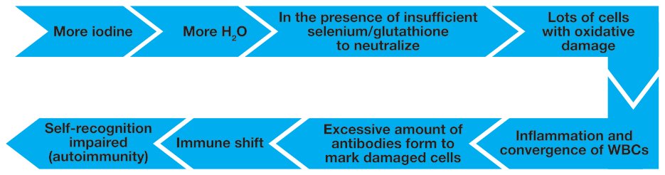
According to the National Institutes of Health, most cases of selenium deficiency are associated with severe gastrointestinal problems such as Crohn’s disease or surgical removal of the stomach. However, selenium deficiency may also occur in celiac disease and other inflammatory bowel disorders due to malabsorption from damage to the small intestine.
The co-occurrence of Hashimoto’s and celiac disease has been clearly established. I would even venture to say one does not need to have full-blown celiac to have impaired absorption of selenium.
Selenium plays a crucial role in thyroid function:
- Acting as catalyst to convert the inactive T4 to the biologically active T3
- Protecting thyroid cells from oxidative damage from hydrogen peroxide by forming selenoproteins
Three specific diseases have been associated with selenium deficiency:
- Keshan disease is found in selenium-deficient children and is associated with an enlarged and malfunctioning heart.
- Kashin-Beck disease, which causes bone malformation, is found when iodine and selenium are both deficient.
- Myxedematous Endemic Cretinism results in intellectual disability. Scar tissue is seen in place of the thyroid.
Note: Myexedema means mucin and edema. Mucin is a substance that accumulates in hypothyroidism.
Studies suggest supplemental selenium could alleviate the toxic effect of excessive iodine intake on the thyroid.
Selenium is a trace mineral incorporated into proteins to make antioxidants like glutathione peroxidase. Known as a selenoprotein, this type of protein prevents damage from hydrogen peroxide generated from the conversion of iodide to iodine by breaking down the hydrogen peroxide into water particles. This allows for the removal of the cells affected by oxidative damage, leads to the preservation of tissue integrity, and prevents the convergence of white blood cells.15
H2O2+ glutathione peroxidase H2O (water)
In the presence of excessive iodine, however, a relative selenium deficiency occurs. Since glutathione peroxidase is made of selenium, the enzyme activity will be compromised when selenium is depleted. According to Xu, et al., “Selenium supplements alleviate damage of TPO that results from iodine excess.” The scar tissue seen in the selenium-deficient children affected with myxedematous endemic cretinism further supports the notion that a lack of the antioxidant selenium leads to the destruction of thyroid tissue due to inability to neutralize hydrogen peroxide.
In a study performed with mice who developed autoimmune thyroiditis induced by iodine, this development was prevented when selenium was administered. Selenium reduced the TgAb titers and increased the number of circulating T regulatory cells that help the immune system recognize itself and prevent the lymphocytic (WBC) infiltration of thyroid cells present in autoimmune thyroiditis.
A study conducted in Africa showed two months of selenium supplementation restored glutathione peroxidase activity and improved thyroid function through increased conversion of T4 to the active T3.
A similar study found selenium intake protects against thyroid autoimmunity by acting as an antioxidant, and it also has an effect on HLA-DR gene expression, further preventing autoimmunity. Furthermore, ultrasounds of the thyroid following selenium supplementation showed reduced lesions in the thyroid gland.
The RDA for selenium has been defined as 55 mcg in the United States, and an upper limit of 400 mcg has been suggested. A study done in South Dakota did not find any signs of toxicity at levels as high as 724 mcg. However, changes in nail structure—a sign of toxicity—were reported with selenium intake of as little as 900 mcg per day in China.
Most reported toxicity cases have been associated with industrial accidents and manufacturing errors. Some symptoms of selenium toxicity that have been reported include GI disturbances, hair loss, changes in hair and nails, peripheral neuropathy, fatigue, irritability, garlic-smelling breath, and a jaundice-like yellow tint to the skin.
While it may be tempting to increase selenium intake by increasing consumption of selenium-rich foods such as Brazil nuts, selenium content varies widely for foods grown in different soils. While the Dakotas have selenium-rich soils, other areas such as Russia and China have deficient levels of selenium.
Again, importation of foods further complicates these issues. The amounts of selenium in a single Brazil nut have been reported to range tenfold depending on where the nut was grown. This means there could be anywhere from 55 mcg to 550 mcg per ounce of nuts. Additionally, absorption issues due to GI problems may limit the availability of selenium from food sources.
While the RDA of selenium may often be found in multivitamin/mineral combinations, the amount of selenium found in most multivitamins will be insufficient for TPOAb reduction. Studies testing the minimal dose of selenium for TPO antibody reduction established that a minimum of 200 mcg of selenium daily is required to reduce TPO antibodies. Even a 100 mcg dose did not produce a statistically significant TPO antibody reduction. The bioavailability of minerals is very delicate and can be greatly affected by food or the presence of other substances.
Multivitamin supplements also have so many different ingredients that the absorption of this important mineral may be reduced. I recommend taking the selenium on an empty stomach with vitamin E, which works in synergy with selenium, to ensure proper absorption.
Ferritin
Iron is necessary for cell growth, differentiation, and transporting oxygen throughout our bodies. Iron deficiency leads to limited oxygen delivery to cells, causing fatigue, difficulty concentrating, and reduced immune function. A deficiency in iron is one potential cause of anemia.
Your doctor may test for anemia by running a panel for red blood cells, hemoglobin, hematocrit, and iron levels, and all of them may come up normal. Yet you may still be anemic. If insufficient iron is available, the body may pull iron from less-important physiological processes (e.g., hair growth) to keep enough iron circulating in the blood.
Ferritin is the name given to your body’s iron reserve protein. Ferritin is required for transport of T3 to cell nuclei and utilization of the T3 hormone.
Ferritin deficiency is the primary cause of hair loss in premenopausal women, and it is often why women with Hashimoto’s continue to lose hair despite normal thyroid levels.
Ferritin hair loss presents as increased hair loss during shampooing and brushing as well as overall thinning of hair without specific pattern or bald spots. Rather, the woman may find her hair feels thinner all over and is less dense.
Ferritin levels can be measured and are a more accurate predictor of how much iron you have stored in your body and available for use. Ferritin should be checked in all women with Hashimoto’s and anyone experiencing hair loss.
In addition to poor intake of dietary iron-rich foods and lack of hydrochloric acid, pregnancy (due to increased need for iron) and heavy menstruation increase the risk of iron/ferritin deficiency. During each menstruation, a woman loses 10–15 mg of iron, while pregnancy may cause a loss of 600–1,000 mg of iron.
Because iron needs an acid presence to be absorbed, antacids and calcium supplements taken around mealtimes may reduce the absorption of iron from foods and supplements.
Those with hair loss who are taking PPIs or acid-suppressing medications should immediately get their ferritin levels checked..
Dietary factors can also impact iron levels. Tannins in tea and coffee can inhibit iron absorption and should be spaced out from iron-containing meals by an hour. Phytates found in nuts, legumes, and grains may also affect iron absorption, as do egg whites.
Normal ferritin levels for women are between 12 and 150 ng/ml. Ferritin levels of at least 40 ng/ml are required to stop hair loss, while levels of at least 70 ng/ml are needed for hair regrowth. The optimal ferritin level for thyroid function is between 90 and 110 ng/ml.
Iron is present in the heme and non-heme version in foods. Found primarily in animal products, heme is the better-absorbed form. The highest levels of iron are found in organ meats … yes, delicious liver. Beef, turkey, and chicken are the next best choices. (Sorry to all of my vegetarian friends.) In contrast, non-heme iron is found in nuts, beans, and spinach and is not usually absorbed as well.
To restore your iron levels, you can eat cooked liver twice per week or eat beef a few times per week. Vitamin C increases the absorption of iron, so taking a vitamin C tablet or eating vitamin-C–rich foods such as broccoli along with an iron-rich food is the best way to increase iron and ferritin levels. Creating an acidic environment by taking a betaine and pepsin supplement with meals can also help.
Most iron supplements are in the non-heme form and thus may not be absorbed as well. Many people also experience terrible stomachaches and constipation from the supplements. If choosing to take iron supplements, do so with much caution as they are one of the leading causes of overdose for children and adults. An iron overdose can be deadly, so always keep iron out of children’s reach. Consult your physician or pharmacist about a dose appropriate for you.
Zinc
Zinc is an essential element to our well-being. Acting as a catalyst in about 100 different enzyme reactions required by the body, zinc is involved in DNA synthesis, immune function, protein synthesis, and cell division. It is required for proper sense of taste and smell, detoxification, wound healing, and thyroid function. Because zinc is not stored in the body, daily intake is required to maintain sufficient levels.
One in four individuals in the general population may be zinc-deficient, and most people with hypothyroidism are. Zinc deficiency prevents the conversion of T4 into the active T3 version. This results in a slowed metabolism of proteins. Zinc is also needed to form TSH and may become depleted in those with hypothyroidism who are constantly producing more TSH.
Zinc deficiency has also been associated with increased intestinal permeability and susceptibility to infections as well as reduced detoxification of bacterial toxins.
Oysters have the highest concentration of zinc, but they are not something most people enjoy eating every day. Beef, liver, pork, lobster, and chicken are the next best sources as it is easier for the body to extract zinc from meat compared with non-meat sources. Thus, once again, vegetarians have an increased risk of zinc deficiency.
Absorption of zinc may be impaired by damage from intestinal disease such as celiac disease and other malabsorption syndromes. Phytates found in grains, legumes, nuts, and seeds can bind zinc and prevent its absorption when eaten alongside zinc-containing foods. Taking iron supplements in conjunction with meals may also prevent the absorption of zinc from food.
Zinc deficiency can show up on a liver function blood test as low alkaline phosphatase levels. Alkaline phosphatase will be discussed in further detail in an upcoming chapter.
To address deficiency, zinc supplementation may be utilized—with doses of no more than 30 mg a day. Zinc supplementation above 40 mg may cause a depletion in copper levels. If choosing to take zinc, you may also want to take a copper supplement. Usually 1.5–3 mg of copper should be sufficient. (General recommendations are to take 1 mg of copper for every 15 mg of zinc.) Caution: Zinc can cause depletion in copper and iron. In one study, 50 mg of zinc given over ten weeks impaired both iron and copper absorption.
Symptoms of copper deficiency include anemia not responsive to iron supplementation, trouble with walking and balance, fatigue, and lightheadedness.
Amino Acid Deficiency
Proteins are broken down into amino acids, the building blocks for our cells. People with Hashimoto’s may also be deficient in amino acids because of impaired protein digestion. Free-form amino acid supplements may be helpful, but supplementing with mega doses of amino acids may not always appropriate.
Tyrosine
Tyrosine is required for production of thyroid hormone and is often an ingredient found in “Natural Thyroid” supplements, along with iodine. The use of tyrosine is controversial in Hashimoto’s. Tyrosine may increase the production of thyroid hormones, but it may also increase adrenal hormone production, which may be helpful if a person is deficient in adrenal hormones but problematic if a person has overactive adrenals. Small amounts of tyrosine from food sources or elemental formulas might not cause problems, but I would recommend exercising caution with taking high-dose tyrosine supplements.
Glutamine
The amino acid glutamine is usually depleted in people with Hashimoto’s and chronic stress. This amino acid is essential to proper gut lining and immune function. (More in the Gut chapter.)
Testing for Depletions
Standard blood tests may not always reveal vitamin and mineral deficiencies until we are extremely depleted since the body will provide these nutrients to the blood as long as it can, pulling them away from less vital parts of our bodies such as hair. Hair tests may be more sensitive to changes in nutrient levels and may be ordered by patients themselves. Additionally, some labs specialize in micronutrient testing and can be ordered by physicians. (More information can be found in the Testing chapter.)
Genetic Causes of Nutrient Depletions
Some individuals with Hashimoto’s may have a gene variation that prevents them from properly activating folic acid. This gene variation is present in up to 55 percent of the European populations and appears more commonly in those with hypothyroidism.
The gene involved is the MTHFR (methylenetetrahydrofolate reductase) gene, and genetic testing is available to show whether someone has this gene variation. The MTHFR gene codes for the MTHFR enzyme, which converts the amino acid homocysteine to methionine, a building block for proteins.
Individuals with low activity of the MTHFR enzyme may present with elevated homocysteine levels, which have been associated with inflammation and heart disease as well as with a potentially impaired ability to detoxify.
Nutrient deficiencies in folate, B6, and B12 have been associated with elevated homocysteine.
Individuals with the MTHFR gene are often deficient in folate but have a difficult time processing the folic acid present in most cheap supplements and added to processed foods. Some professionals claim this type of folic acid may even cause a buildup in the body, leading to toxicity. Studies have shown that folic acid supplements increase cancer risk—one more reason to ditch processed foods and your multivitamin!
Folate is present in the activated form in real foods such as asparagus, spinach, and beef liver, but we may not get enough of it that way. B6 and B12 are mostly found in meats.
Betaine, also known as trimethylglycine, helps with metabolizing homocysteine. Betaine can be found in whole grains like quinoa (which some individuals may be unable to eat), beets, and spinach.
Individuals with the MTHFR gene variation and high homocysteine levels may benefit from an activated version of folate, B6, and B12 such as methylfolate (also known as L-5-MTHF folate), pyridoxyl-5-phosphate (P5P), and methylcobalamin, respectively.
Pure Encapsulations makes a supplement called Homocysteine Factors that contains all of the above-mentioned ingredients and may help reduce homocysteine levels.
Anti-Nutrients
We’ve discussed some examples of foods that contain anti-nutrients such as phytates, which bind vitamins and minerals and prevent our bodies from absorbing them. These foods can impact thyroid function through depletion of nutrients needed for optimal function.
Other foods can cause poor conversion to active thyroid hormone, even in people without autoimmune conditions or who have TSH levels in the normal reference range.
Goitrogens
Goitrogens, by definition, are substances that suppress the thyroid gland by interfering with thyroid hormone production. As a compensatory mechanism, the thyroid enlarges to counteract the reduced hormone production. This enlargement is known as a goiter.
You may have heard you should avoid goitrogenic foods if you have a thyroid condition. This is only partially true as all goitrogens are not created equally. Different goitrogenic substances are contained in various foods.
| Bamboo shoots | Mizuna |
| Bok choy | Mustard greens |
| Brassica genus veggies | Peaches |
| Broccoli | Peanuts |
| Broccolini | Pears |
| Brussels sprouts | Pine nuts |
| Cabbage | Radishes |
| Canola oil | Rapeseed |
| Cassava | Rapini |
| Cauliflower | Rutabagas |
| Choy sum | Soy |
| Collard greens | Spinach |
| Horseradish | Strawberries |
| Kale | Sweet potato |
| Kohlrabi | Tatsoi |
| Millet | Turnips |
Cruciferous Vegetables
Cruciferous vegetables such as cabbage, broccoli, and cauliflower contain glucosinolates, substances that block iodine uptake into the thyroid.
People with iodine-deficiency–induced hypothyroidism may find goitrogens cause further suppression of thyroid activity. However, most patients with Hashimoto’s do not have iodine deficiency, and the goitrogenic mechanism in these otherwise healthy vegetables is not of particular concern to Hashimoto’s.
That said, some people with subclinical hypothyroidism (when their thyroid is still producing its own thyroid hormone and TSH is slightly elevated) may find that eating a lot of goitrogens may suppress some of their own internal thyroid hormone production.
Eating too many cruciferous vegetable in the raw state can, in theory, cause symptoms of hypothyroidism in someone with otherwise well-controlled symptoms, but most people with Hashimoto’s should not see this happening.
Eating cruciferous vegetables (unless a person is otherwise sensitive to them) should not aggravate autoimmune thyroid conditions and may even be beneficial for most people with Hashimoto’s (glucosinolates found in raw crucifers have excellent detoxifying properties).
Those who have hypothyroidism due to iodine deficiency or experience hypothyroidism symptoms after eating too many can still enjoy crucifers as long as they are cooked or fermented.
Cruciferous vegetables are only goitrogenic when raw. Cooking or lightly steaming deactivates the glucosinolates, as does fermenting the vegetables (like in sauerkraut), thus diminishing the goitrogenic activity.
On the other hand, canola oil—a goitrogen found in processed foods— should be avoided by people with Hashimoto’s.
Soy
Soy is one particular goitrogen that is especially detrimental for Hashimoto’s patients. The isoflavones genistein, daidzein, and glycitein in soy reduce thyroid output by blocking activity of the TPO enzyme.
Soy has been linked with the development of autoimmune thyroid conditions, and children fed soy formula were almost three times more likely to develop anti-thyroid antibodies as compared with breast-fed children.
Studies of soy isoflavones in animals suggest possible adverse effects such as augmentation of reproductive organs, modulation of endocrine function, and anti-thyroid effects. Anti-thyroid effects may also be propagated by the increasing loss of circulating T4 from the blood via bile.
| Causes | Agents | Action |
|---|---|---|
| Millet, soy | Flavonoids | Impairs thyroperoxidase activity |
| Cassava, sweet potato, sorghum | Cyanogenic glucosides metabolized to thiocyanates | Inhibits iodine thyroidal uptake |
| Babassu coconut, mandioca | Flavonoids | Inhibits thyroperoxidase |
| Cruciferous vegetables: cabbage, cauliflower, broccoli, turnips, canola | Glucosinolates | Impairs iodine thyroidal uptake |
| Seaweed (kelp) | Iodine excess | Inhibits release of thyroidal hormones |
| Malnutrition | Vitamin A deficiency | Increases TSH stimulation |
| Iron deficiency | Iron deficiency | Reduces heme-dependent thyroperoxidase thyroidal activity |
| Selenium deficiency | Selenium deficiency | Accumulates peroxides and causes deiodinase deficiency; impairs thyroid hormone synthesis |
The goitrogens in soy are still present after cooking. Soy is also a common allergen. People with underactive thyroid function and Hashimoto’s should avoid soy completely. On a personal note, I have suffered from a “soy crash,” feeling drained and exhausted the day after eating soy.
Millet
A cereal crop unrelated to wheat, millet is often used in gluten-free bread and bakery products. Millet, however, contains isoflavones, which inhibit thyroid peroxidase and should be avoided by people with thyroid disorders.
Chapter Summary
- Digestion is impaired in Hashimoto’s, resulting in depletion of nutrients.
- Diet, medications, and lifestyle contribute to poor digestion.
- Check levels of vitamin B12, zinc, and ferritin.
- Replace with supplementation as indicated.
- Consider 200–400 mcg of selenium methionine daily.
- Consider taking betaine with pepsin with protein meals.
- Goitrogens are substances that can interfere with thyroid function though various mechanisms.
- Goitrogens in cruciferous vegetables should not be an issue for most people with Hashimoto’s and are deactivated by cooking and fermenting.
- Goitrogens in soy are still present after cooking, and soy should be avoided.
7. Iodine Controversy
“Poison is in everything, and no thing is without poison. The dosage makes it either a poison or a remedy.”
—Paracelsus (1493–1541)
The thyroid is sensitive to iodine levels and has been shown to adapt its physiology based on the available levels of iodine. The relationship between iodine intake and occurrence of thyroid disease has been described as having a U-shaped distribution—another Goldilocks supplement.
Researchers in Denmark found the effect of iodine on hypothyroidism seemed to be U-shaped as well, with BOTH insufficient and excessive dietary amounts causing hypothyroidism! Insufficient amounts were associated with goiters and non-autoimmune iodine-related hypothyroidism, and excessive amounts of iodine have been associated with increased rates of autoimmune thyroiditis.
A maximum daily threshold of 150 mcg is recommended.
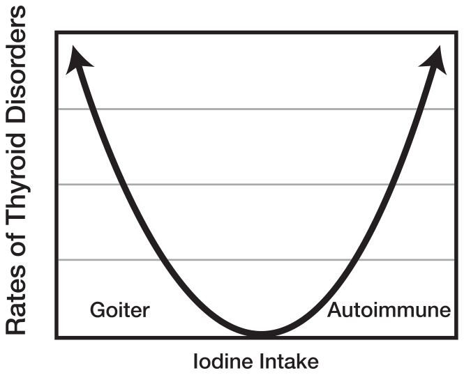
In cases of severe iodine deficiency, conditions such as hypothyroidism, goiter, and brain damage develop. Conversely, several studies show excessive iodine intake can lead to Hashimoto’s hypothyroidism, and iodine overconsumption is now recognized as an environmental trigger for Hashimoto’s.
Hashimoto’s was not recognized in the United States before the nationwide salt iodization program began in 1924. In many other countries, studies have shown rates of autoimmune thyroiditis increased drastically after salt iodization programs.
Changes have been observed in the incidence of thyroid disorders with very slight variations in iodine intake. In most cases of mild to moderate iodine deficiency, the thyroid compensates and limits its use of iodine for thyroid hormone production, keeping thyroid hormone production normal. To achieve this, however, the thyroid gland enlarges, producing a goiter.
A pattern of TSH levels dropping with advanced age is observed due to the chronic enlargement and increased thyroid hormone production. Thus, elderly persons in mild to moderate iodine-deficient conditions are more likely to develop hyperthyroidism.
In contrast, populations with high iodine intake have been observed to experience increasing TSH and rates of hypothyroidism as they age. It is hypothesized that this may be due to the thyroid gland compensating to adapt to high iodine levels. Caucasian populations seem to be especially susceptible.
As iodine levels increase, more cell death is seen in the thyroid. Hydrogen peroxide, a reactive oxygen species, is produced in the conversion of iodine to its usable state in the thyroid. The overabundance of hydrogen peroxide causes damage to thyroid cells. White blood cells (lymphocytes) come to “clean up” these dead thyroid cells.
Since thyroid peroxidase (TPO) is the enzyme involved in triggering hydrogen peroxide release, perhaps the TPO enzyme becomes recognized as an “invader” as it keeps causing damage to the surrounding tissues through the release of hydrogen peroxide. The more iodine consumed, the more there is to be converted, thus signaling more hydrogen peroxide, which causes more lymphocytes to accumulate in the thyroid.
Perhaps there is a threshold of thyroid tissue damage as a result of hydrogen peroxide released that causes the body to recognize this physiological process as a foreign invader.
Excess Iodine Problematic
Excess iodine causes the thyroid to temporarily decrease function to protect against hyperthyroidism (Wolff-Chaikoff effect), which is a protective mechanism. Hypothyroidism attributed to the Wolff-Chaikoff effect does not have an autoimmunity component.
Various studies found both autoimmune thyroiditis and non-autoimmune hypothyroidism can result from iodine excess.
Researchers in Iran were able to document the rates of thyroid peroxidase antibodies (TPOAb) and thyroglobulin antibodies (TgAb) before and after a national salt iodization program started in 1994. In 1983– 84, positive TPOAb and positive TgAb were found in 3.2 percent and 4 percent of the 465 adults selected for random sampling in Tehran.
This sampling was repeated with 1,426 adults in Tehran in 1999–2000, this time showing 12.5 percent positive for TPOAb and 16.8 percent positive for TgAb. The addition of iodine quadrupled the rate of Hashimoto’s within a six-year span!
Studies in Greece, China, Sri Lanka, and Italy reported similar increases in Hashimoto’s after the addition of iodine to salt.
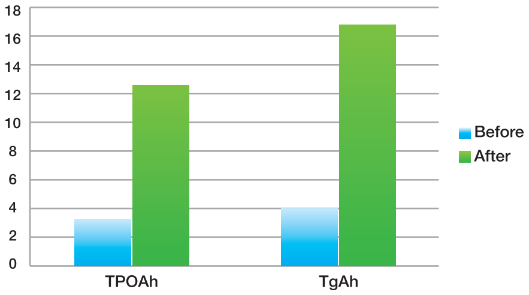
The More Iodine, the Higher the Rates of Hashimoto’s
Iodine seems to have a dose-responsive effect. A Slovenian study followed the rates of thyroid disorders after the amount of potassium iodide added to the Slovenian salt supply was increased from 10 mg/kg of salt to 25 mg/kg in 1999. This increase resulted in a significant change in the incidence of thyroid disorders. While there was a marked decline in the incidence of iodine deficiency hypothyroidism, the rates of Hashimoto’s more than doubled from the baseline after the increase.
Even Small Amounts of Iodine Can Worsen Hashimoto’s
In Germany, a low dose of potassium iodide (250 mcg), was given to forty people who tested positive for anti-thyroid (TPO) antibodies or had a thyroid ultrasound showing a hypoechogenic pattern consistent with Hashimoto’s. A group of forty-three subjects with similar characteristics served as a control group.
Nine patients from the iodine group developed thyroid abnormalities, compared with only one person from the control group. Of the nine patients in the iodine arm, seven developed subclinical hypothyroidism, one became hypothyroid, and another hyperthyroid.
Changes were also seen in TPO antibody levels as well as on the thyroid ultrasound. Three of the seven subclinical hypothyroid patients and the hyperthyroid patient regained normal thyroid function after iodine withdrawal.
Considering that iodine increases the rate of Hashimoto’s incidences— and even small doses of iodine can lead to the progression of thyroid abnormalities over a short period of time—it is no surprise that one in five women will have a thyroid dysfunction at some time in her life in the presence of iodized salt.
Also not surprising is the fact that today, 90–99 percent of hypothyroidism cases in the United States are due to Hashimoto’s, while hypothyroidism cases due to iodine deficiency are rarely reported.
But I Thought Iodine Was Necessary for Hormone Production?
It is. The thyroid gland needs approximately 52 mcg of iodine daily to produce thyroid hormones.
The United States RDA for iodine is 150 mcg for adults who are not pregnant, 220 mcg for pregnant women, 290 mcg for lactating women, and 90–120 mcg for children ages one to thirteen. An upper limit of iodine intake has been set for 1,100 mcg.
Most guidelines now state that the doses at which adverse events to iodine occur may vary and that people with autoimmune thyroid disease may experience adverse effects with iodine intakes considered safe for the general population.
The dosage of iodine found in multivitamins and prenatal vitamins (150– 220 mcg) is not likely to be an issue for most people with Hashimoto’s. The benefits of small doses of iodine likely outweigh the risks during pregnancy and lactation, but I would caution against using higher doses of iodine.
Study participants who took as little as 400 mcg of iodine a day developed subclinical hypothyroidism.
Iodine intake seems to have a narrow therapeutic index. Some studies even show having a slight deficiency is protective against developing Hashimoto’s.
How Much Iodine Am I Getting?
While the average American may consume between 6 and 10 grams of salt a day—largely due to processed foods—it is difficult to estimate the amount of iodine contained in the Standard American Diet due to uncertainty about whether the prepared food was made with iodized or non-iodized salt.
The FDA estimates that between 2003 and 2004, the average iodine intake in the United States ranged from 138 to 353 mcg. This data, however, does not factor in the iodine people obtain from the use of iodized salt.
Proponents of high-dose iodine diets and regimens often cite that Japan—a country with the highest iodine intake—averages 1,000–3,000 μg/day but has a lower incidence of chronic diseases. Yet incidence rates of Hashimoto’s in Japan and the US are reported to be similar. Interestingly, an association with one particular gene was found to contribute to the development of Hashimoto’s in Japanese, but not in Caucasian, subjects. So perhaps the Japanese are genetically better-adapted to high iodine intake than Caucasian populations are.
Test to Measure Iodine Status
More than 90 percent of dietary iodine is excreted in urine, thus dietary iodine intake can be measured through a urinary iodine test. Spot urine iodine measurements are a relatively easy tool to use. ZRT Lab (more information in the Lab Test chapter) allows people in most states to order their own spot urinary iodine tests.
Sources of Iodine
In addition to iodized salt, which is estimated to contain 47.5 mcg of iodine per gram of salt (or 285 mcg of iodine per teaspoon), other sources of iodine include seaweed (kelp, nori, kombu, wakame), seafood, dairy products (due to the use of iodine-sanitizing agents in the dairy industry as well as iodine-containing feed), grains, and eggs (due to the iodine content of the hens’ feed).
Plants may also contain iodine; the amount varies based on the iodine content of the soil or use of iodine-containing fertilizers. Areas close to the oceans generally have more iodine-rich soils as compared with inland and mountainous regions. Food importation makes calculating estimates challenging.
One source of iodine often missed is spirulina, the blue-green algae touted for its health benefits.
For a full listing of estimated iodine content of various foods, please refer to the assessment at the end of this chapter.
| Food | Approximate Micrograms (mcg) Per Serving | Percent DV* |
|---|---|---|
| Seaweed, whole/sheet, 1 g | 16 to 2,984 | 11% to 1,989% |
| Cod, baked, 3 ounces | 99 | 66% |
| Yogurt, plain, low-fat, 1 cup | 75 | 50% |
| Iodized salt, 1.5 g (approx. ¼ teaspoon) | 71 | 47% |
| Milk, reduced fat, 1 cup | 56 | 37% |
| Fish sticks, 3 ounces | 54 | 36% |
| Bread, white, enriched, 2 slices | 45 | 30% |
| Fruit cocktail in heavy syrup, canned, ½ cup | 42 | 28% |
| Shrimp, 3 ounces | 35 | 23% |
| Ice cream, chocolate, ½ cup | 30 | 20% |
| Macaroni, enriched, boiled, 1 cup | 27 | 18% |
| Egg, 1 large | 24 | 16% |
| Tuna, canned in oil, drained, 3 ounces | 17 | 11% |
| Corn, cream style, canned, ½ cup | 14 | 9% |
| Prunes, dried, 5 prunes | 13 | 9% |
| Cheese, cheddar, 1 ounce | 12 | 8% |
| Raisin Bran cereal, 1 cup | 11 | 7% |
| Lima beans, mature, boiled, ½ cup | 8 | 5% |
| Apple juice, 1 cup | 7 | 5% |
| Green peas, frozen, boiled, ½ cup | 3 | 2% |
| Banana, 1 medium | 3 | 2% |
Table from: http://ods.od.nih.gov/factsheets/Iodine-HealthProfessional/
In addition to dietary sources, iodine can also be found in medications like amiodarone (a recognized trigger for Hashimoto’s) and over-the-counter multivitamin supplements, prenatal vitamins, and, of course, iodine supplements.
Formulations that promise to “boost thyroid function” or “aid a sluggish thyroid” often contain high doses of iodine and should not be used by those with acute autoimmune hypothyroidism.
Processed foods such as cured meats, cakes, pies, instant mixes, garlic salts, artificial dyes (especially Red Dye No. 3), also contain iodine and should be avoided by those who wish to adhere to a low-iodine diet.
Iodine in the Standard American Diet
Let’s do the math, starting with a breakfast that is considered “healthy” by SAD (Standard American Diet) standards. (Note: Pun definitely intended!)
| Breakfast | Iodine |
|---|---|
| 1 cup milk | 56 mcg |
| Raisin Bran cereal | 11 mcg |
| Banana | 3 mcg |
| Lunch | |
| Yogurt | 75 mcg |
| Bread (2 pieces) | 90 mcg |
| Cheddar cheese | 12 mcg |
| Canned tuna | 17 mcg |
That’s 264 mcg of iodine before dinner…
What if you took your multivitamin?
A Centrum® multivitamin contains 150 mcg of iodine.
Now you are up to 414 mcg…
What about those of us who add salt to our food?
Every ¼ teaspoon of iodized salt adds 71 mcg … 485 mcg.
What about going out for sushi?
Combining the seaweed and fish can easily bring your intake to 1,000 mcg, if not more.
What if you wanted ice cream for dessert?
You get the picture. The Standard American Diet exceeds the threshold of safe iodine consumption for those with autoimmune thyroid conditions.
Controversy
Whether Hashimoto’s patients should avoid, take, or ignore iodine has been a controversial topic in the autoimmune thyroid community. Proponents of using high doses of iodine claim studies done in animals show inorganic iodines do not induce autoimmune thyroiditis unless combined with goitrogens. A review of the literature, however, produces many other studies showing the opposite to be true.3
In experimental mouse models of autoimmune thyroiditis, mice spontaneously developed low levels of antibodies to TPO, which I interpret to be a normal physiological “clean-up” state. When iodine is added to the water of mice, the prevalence and severity of autoimmune thyroiditis increases markedly. Excess iodine is actually used to stimulate autoimmune thyroiditis in animal models!
Additionally, one study done in Korea shows iodine restriction alone can recover hypothyroid Hashimoto’s patients to a euthyroid state within three months! This study was performed on ninety patients who were randomized to either continue ingesting the same amount of iodine or restrict their iodine intake to less than 100 mcg a day. An impressive 78 percent of people in the iodine restriction group regained normal thyroid function as manifested by a normal TSH value within three months.
Predicative factors of recovery were lower initial TSH as well as higher initial iodine excretion.
The authors report patients in the study group who did not recover normal TSH at the conclusion of the three-month trial did show a decreasing trend in TSH and predicted they, too, would become euthyroid if given more time.
Interestingly, 45.5 percent of the control group recovered normal function as well. This is a much higher rate than the 25 percent of people with Hashimoto’s who reportedly revert to normal thyroid function.
The authors were unsure whether some members of the control group decided to restrict iodine intake on their own or if other variables accounted for this high number. The authors recommended that iodine restriction should be a first-line measure for those with Hashimoto’s hypothyroidism—before thyroid supplemental medication is even started.
While this sounds like a compelling reason to throw away your box of iodized salt, a few things should be noted about this study:
- The TPO value was only measured at baseline and not at the three-month follow-up.
- Echogenic studies were not conducted to compare the baseline/three-month follow-up lesions in the thyroid.
- Sources of iodine were not examined to rule out possible cross-contaminating effects of halogens such as fluorine and bromine, which may be found in kelp, seaweed, and other iodine-rich foods traditionally eaten in Korea.
- Selenium levels were not assessed during the study.
Interaction of Halogens with Iodine
Our threshold for iodine consumption can be affected by halogens such as chlorine, bromine, and fluorine. The binding structures or the “business end” of these molecules look similar to the binding structure of iodine.
Storage proteins, enzymes, and transporters in our bodies that bind to micronutrients have a predefined limited capacity. An excess of other molecules with similar chemical structures may occupy all of the sites usually reserved for processing iodine. This is the basis of modern pharmacology and how most drug-to-drug interactions occur. When halogens occupy the designated iodine-binding sites, a change in absorption, distribution, metabolism, or excretion of iodine may occur, which can lead to toxicity—even at “normal” therapeutic amounts. (More information about halogens will be covered in the Toxins chapter.)
ASSESSMENT: How Much Iodine Are You Getting from Foods?
(Adapted from foodhealth.info/iodine)
| Foods HIGHEST in Iodine | Iodine (mcg) |
|---|---|
| Seaweed, whole or sheet | 160–29,840 |
| Salt, iodized | 1,855 |
| Cod liver, canned | 500 |
| Oil, cod liver | 400 |
| Sardine fillets in olive oil, canned, drained | 400 |
| Broth or bouillon, beef, dehydrated | 390 |
| Cod, Atlantic, raw | 360 |
| Pâté, fish, or shellfish | 310 |
| Haddock, steamed | 260 |
| Fish mousse | 250 |
| Haddock, breaded, fried | 250 |
| Haddock, smoked | 250 |
| Herring, smoked, in oil | 200 |
| Soup, seafood | 198 |
| Mullet, baked | 190 |
| Squid, fried | 173 |
| Cod, baked | 130 |
| Cod, salted, poached | 130 |
| Lobster, boiled | 130 |
| Mackerel, fried | 130 |
| Crustacean or mollusk (average) | 123 |
| Fish nugget, fried | 120 |
| Caviar | 117 |
| Whelk, cooked | 114 |
| Cod, steamed | 110 |
| Fish cake, frozen, raw | 110 |
| Mussel, boiled | 106 |
| Oyster, Pacific, raw | 101 |
| Crab, cooked | 100 |
| Mackerel, baked | 100 |
*Iodine content is per 100 grams of food weight
| Foods with HIGH Amounts of Iodine | Iodine (mcg) |
|---|---|
| Mackerel, smoked | 98 |
| Egg yolk, cooked | 89 |
| Milk, skim, powder | 85 |
| Sardine, in oil, canned, drained | 80 |
| Clam, cooked | 80 |
| Ling, raw | 80 |
| Milk, semi-skim, powder | 80 |
| Periwinkle | 80 |
| Milk, whole, powder | 71 |
| Whiting, steamed | 70 |
| Kebab, fish | 68 |
| Custard, English cream | 67 |
| Herring, grilled | 67 |
| Sardine, in tomato sauce, canned, drained | 67 |
| Smelt, raw | 67 |
| Chocolate mousse | 66 |
| Milk, semi-skim, flavored | 66 |
| Semolina pudding | 65 |
| Spiny lobster, cooked | 65 |
| Pilchard, in tomato sauce, canned | 64 |
| Fish, cooked (average) | 62 |
| Caviar substitute, lumpfish eggs | 60 |
| Crab, canned | 60 |
| Fish in sauce, frozen | 60 |
| Gnocchi, potato | 60 |
| Milk, skim, vitamin-fortified | 60 |
| Sea bass, raw | 60 |
| Soy yogurt, flavored | 60 |
| Tiramisu | 60 |
| Whiting, fried | 60 |
| Cereal bar, low-calorie | 53 |
*Iodine content is per 100 grams of food weight
| Foods with MODERATE Amounts of Iodine | Iodine (mcg) |
|---|---|
| Egg, poached | 52 |
| Egg, scrambled | 52 |
| Omelet, plain | 52 |
| Apple crumble | 50 |
| Cheese, Roquefort | 50 |
| Dark chocolate, 70% cocoa | 50 |
| Fruit charlotte from bakery | 50 |
| Salmon in puff pastry | 50 |
| Sauce, hollandaise | 50 |
| Sauce, pesto | 50 |
| Blue cheese, de Bresse | 48 |
| Cheese, Rouy | 48 |
| Herring, grilled | 67 |
| Sandwich on French bread, smoked salmon, butter | 46 |
| Anglerfish or monkfish, grilled | 45 |
| Crayfish, raw | 45 |
| Egg, fried, salted | 45 |
| Tuna, cooked | 45 |
| Omelet with herbs | 45 |
| Omelet, cheese | 44 |
| Salmon, farmed, raw | 44 |
| Scallop, Great Atlantic, with coral, raw | 43 |
| Cheese, Edam | 42 |
| Vol-au-vent with seafood | 42 |
| Scampi, fried | 41 |
| Herring, smoked | 40 |
| Omelet with bacon | 40 |
| Salmon, smoked | 40 |
| Soy yogurt with fruit | 40 |
| Trout, smoked | 40 |
| Tuna, raw | 40 |
| Mackerel, in tomato sauce, canned | 40 |
*Iodine content is per 100 grams of food weight
| Foods RICH in Iodine | Iodine (mcg) |
|---|---|
| Egg, hard-boiled | 39 |
| Egg, soft-boiled | 39 |
| Egg, whole, raw | 39 |
| Cheese, goat, Crottin | 39 |
| Herring, fried | 38 |
| Salmon, carpaccio | 38 |
| Beaufort cheese | 38 |
| Omelet with mushrooms | 37 |
| Cheese, cheddar | 37 |
| Cheese, Livarot | 37 |
| Shrimp or prawn, cooked | 37 |
| Ice cream in cone | 36 |
| Cheese, Pont l’Évêque | 35 |
| Chocolate powder, sweetened, enriched | 35 |
| Eggnog | 35 |
| Soup, cream of tomato | 35 |
*Iodine content is per 100 grams of food weight
Chapter Summary
- Iodine perpetuates the autoimmune attack.
- Check iodine levels.
- If iodine levels are normal, consider limiting iodine to <100 mcg a day for 3 months to see if you have an improvement in thyroid function and TPO.
- Requirements for iodine may be higher during pregnancy and lactation.
8. Inflammation
“Something, somewhere is causing inflammation in your body, which leads to an immune imbalance.”
—Dr. Izabella Wentz, PharmD, FASCP
Inflammation is present in most autoimmune conditions and can trigger adrenal fatigue as well as the autoimmune cascade. There may be a multitude of reasons for inflammation in the body, including infections, food intolerances, injuries, internal flora, and a pro-inflammatory environment created by an imbalanced omega-3 to omega-6 ratio. Thus, to restore balance, we need to be sure that we are promoting an anti-inflammatory environment in our bodies.
Our bodies require the essential omega-3 and omega-6 fats, and their ratio should be 1:1 for proper immune function. Omega-3 fatty acids reduce inflammation, while omega-6 fatty acids promote inflammation. Inflammation serves a protective role in our bodies, but in excess it can be problematic. Most Americans get too many omega-6 essential fatty acids and not enough omega-3 essential fatty acids.
Omega-6 acids are most often obtained from vegetable oils, nuts, and seeds. Vegetable oils include canola, corn, soybean, peanut, sunflower, safflower, cottonseed, grapeseed, margarine, and shortening.
These same oils are often found in processed foods such as salad dressing, store-bought condiments, mayonnaise, chips, artificial cheese, store-bought roasted nuts, cookies, crackers, snack foods, sauces, and almost everything in the middle aisles of the grocery store.
Recommended for years as a healthy and cheap alternative to saturated fats, vegetable oils and margarine have now been recognized to be dangerous to human health and should be eliminated from the diet.
Vegetable oils have high level of omega-6 acids, and eating them can cause an imbalance. Omega-6 acids can easily oxidize not only in body cells but also when exposed to heat or light. These oxidized fats can cause inflammation and mutation in cells while also increasing the risk of cancer.
Meanwhile, saturated fats like butter, lard, and animal fats have been getting a bad rap—yet these traditional foods are likely a better choice than the inflammatory vegetable oils.
A study conducted at the University of Western Ontario showed that people who eat more saturated fats in their diets have a lower risk of cancer than those with the least amount of saturated fats in the diet. (Bring on the lard!)
Another study concluded that eating polyunsaturated fats like those in vegetable oils may stimulate cancer, while saturated fats protect against cancer and reduce inflammation.
Vegetable oils and margarine were only introduced into our diets in the last century. Traditional natural oil preparation methods like pressing or separating (think olive oil) are not used to extract oils from vegetables like corn and soybeans. Instead, vegetable oils are manufactured in a factory, and the oil is chemically removed from crops and then altered. For example, canola oil is made from rapeseed, and a petroleum solvent is used to extract this oil. Many vegetable oils are made from genetically modified crops and contain large amounts of pesticides.
When diets high in polyunsaturated fats were tested on animals, it was concluded that they can cause problems with learning, are toxic to the liver, trigger immune system malfunction, slow mental and physical growth, cause chromosomal damage, and induce premature aging. In addition, diets high in polyunsaturated fats are responsible for increased rates of cancer, heart disease, and weight gain.
Omega-3
Promoting a healthier omega-3 to omega-6 ratio by eating more foods rich in omega-3 fatty acids while reducing omega-6 fatty acid intake may help restore immune balance.
Omega-3 acids are found primarily in fish, shellfish, and flaxseeds. Those who cannot eat adequate amounts of fish or are concerned about mercury content can take them in supplement form.
Omega-3 acid supplementation has been found to be helpful in a variety of autoimmune conditions. Doses of 1–4 grams are recommended when taking fish oil supplements.
The omega acid content of various meats depends on the type of diet the animals received. Grass-fed organic beef has fewer omega-6s compared with soybean- or corn-fed cattle.
Healthful Oils
The three oils recommended for people with Hashimoto’s are coconut oil, extra-virgin olive oil, and cod liver oil.
Coconut oil is a saturated fat made up of medium-chain fatty acids, which may be beneficial to people with underactive thyroids. Coconut oil can increase metabolism and promote weight loss when substituted for unsaturated fats, and it also functions as an antioxidant.
Which Foods Are High in Omega-6 Fatty Acids?
| >50% (Highest) | 20–50% (Higher) | 10–20% (High) |
|---|---|---|
| Grapeseed oil Corn oil Walnuts Cottonseed oil Soybean oil | Sesame oil Pepitas Margarine Pecans Peanut butter Pistachios | Chicken fat Almond Canola oil Flaxseed oil Cashews Duck fat Bacon grease Lard |
Foods with Low to Moderate Amounts of Omega-6 Fatty Acids
(percentages of total calories that come from omega-6)
| Lowest (<2%) | Low (2–5%) | Moderate (5–10%) |
|---|---|---|
| Coconut oil Ribs Milk Beef Macadamia nuts Chicken (no skin) Lamb Cheese Grits Beets Coconut milk Rice Salmon Yams Potatoes Seafood | Corn Sunflower oil Butter Beef Cream Cocoa butter Carrots Macadamia nuts Brown rice Flour | Olive oil Goose fat Avocado Olives Bacon Eggs Pork chops Popcorn Oats |
It may be beneficial for people with hypothyroidism to include coconut oil in their daily diet to increase energy and promote a healthy weight. Four tablespoons daily seems to be the optimal amount for adults. Coconut oil can replace butter in many delicious recipes, and you can even add it to tea in place of cream. It also has a moisturizing effect on the skin when taken internally. Supermodel Miranda Kerr credits her gorgeous skin and hair to consuming four tablespoons of coconut oil daily!
Because of medium-chain triglycerides, coconut oil is highly stable and does not produce trans fats when heated, making it the oil of choice for cooking and frying. Additionally, coconut oil has antiviral, antifungal, and antibacterial properties.
Since extra-virgin olive oil is high in monounsaturated fat and low in polyunsaturated fats, it is recommended for salad dressings and mayonnaise. It should not be used for cooking or frying because monounsaturated fat can oxidize in high temperatures.
Cod liver oil is a great source of omega-3 fatty acids and can be used as a dressing rather than for cooking.
Lab Tests for Inflammation
C-reactive protein and homocysteine are non-specific markers of inflammation and can be ordered as blood tests.
Chapter Summary
- Processed vegetable oils promote inflammation.
- Use coconut oil, extra-virgin olive oil, and cod liver oil.
- Consider taking a fish oil supplement.
9. Infections
“Sickness comes on horseback but departs on foot.”
—Dutch proverb
When working to identify the root cause, we must keep asking questions until we find the answer. We now know hypothyroidism occurs because of thyroid destruction, which itself occurs because of self-antibodies. So why does the immune system make self-antibodies?
Let’s explore the current autoimmune theories.
Classical autoimmune theories have proposed the role of pathogens in the development of autoimmune conditions.
We have established that immune cells may be attracted to the thyroid because of oxidative damage caused by iodine excess, but immune cells may also be called to the thyroid due to a viral/bacterial infection that either infects thyroid cells and needs to be cleared or looks similar to thyroid cells, causing “molecular mimicry.”
Molecular Mimicry
A leading autoimmune theory, molecular mimicry states that bacterial cells or other microbial “triggers” have a similar appearance to the cells that make up parts of our physiology or “self” antigens or to substances that evoke the production of antibodies.
When an infection occurs, these infectious cells are recognized as foreign. This is really great for getting rid of infections, but sometimes the immune system targets proteins in the infectious cells that resemble proteins in our own cells. This inadvertently causes a cross-reaction with our “self” antigens (i.e., our own cells). This case of mistaken identity is thought to trigger the start of autoimmunity.
One example is Streptococcus pyogenes. This is the bacteria that causes the common throat infection known as “strep throat.” In some cases, especially when the infection is not treated with antibiotics within two to three weeks, the immune system starts launching an attack against the Streptococcus bacteria.
Unfortunately, a component of the bacteria’s cell wall resembles that of human heart valves, and this results in the immune system mistakenly attacking human heart valves. Known as rheumatic fever, this reaction can be deadly and often necessitates heart valve transplants. Arnold Schwarzenegger is the most well-known person who has been affected by this condition, and he has had to have heart valve transplants as a result.
Bystander Effect
Another classical autoimmune theory, has been affected by suggests bacteria expose our “self” antigens to the immune system by damaging them during an infection. In this case, the “self” becomes guilty by association and hence a target for the immune system.
This theory suggests autoimmunity may result from an infection of the thyroid by a virus that is causing damage to thyroid cells. In many cases, the infections may be “silent,” without the person knowing they actually have an infection. This first infection kicks off the autoimmune process.
It is possible these types of infections start off as transient thyroid inflammation, as in silent thyroiditis, but under the right conditions turn into chronic cases of autoimmune thyroiditis like Hashimoto’s. We will explore these reasons in subsequent chapters.
Infections
Various pathogens have been suggested as playing a role in the development of Hashimoto’s, ranging from bacteria to viruses to fungi to parasites. Dr. Trevor Marshall, PhD, theorizes it is not merely one type of bacteria or virus that triggers the autoimmune process but a combination of pathogens present—sometimes compounded by a missing commensal species—that determines the type of autoimmune disease that develops.
Bug A + Bug B = Disease C
Bug D + Bug E - Bug F = Disease G
Dr. Marshall and colleagues have found various viral, bacterial, and fungal antigens present in the saliva of people with autoimmune conditions. These people do not show signs or symptoms of being infected, yet the agent is taking cover in their bodies.
Which Bacteria and Viruses Have Been Associated with Triggering Hashimoto’s?
A variety of bacterial infections have been implicated in triggering autoimmune thyroiditis, including Helicobacter pylori (the same bacteria that causes ulcers), Borrelia burgdorferi (associated with Lyme disease), and Yersinia enterocolitica.
Antibodies to Yersinia (indicating exposure) in people with Hashimoto’s were found fourteen times more often than in people without Hashimoto’s. Yersinia membranes contain a site that binds TSH, making it a prime suspect based on the molecular mimicry theory. Infection with this bacteria can induce antibodies against sites that recognize and stimulate TSH receptors—like TPO or thyroglobulin. People can contract a Yersinia enterocolitica infection from contaminated meat, poultry, dairy products, and seafood (especially oysters). In 2012, a consumer group found 67 percent of pork sold in the United States was contaminated with Yersinia.
Physicians can run blood tests, breath tests, and stool antigen tests for H. pylori. Testing for Lyme disease and associated co-infections including Borrelia is available as a blood test (I recommend IGeneX Lab) , while the presence of Yersinia can be tested in a comprehensive stool analysis or through blood tests that test for antibodies to the bacteria.
Additionally, some viruses—including the Coxsackie virus, hepatitis C virus, HTLV-1 (human T-lymphotropic Virus 1), enterovirus, rubella, mumps, parvovirus, and Epstein-Barr virus (the virus that causes mono)—have been implicated.
Antibodies indicating exposure to these viruses were more prevalent in Hashimoto’s patients than in healthy controls. Interestingly, the Epstein-Barr virus also causes antibodies to T3. This would show up as elevated T3 but as low free T3 on lab tests.
Dr. Brownstein reports that he finds underlying infections in many autoimmune illnesses. These underlying infections may be among the causes of the autoimmune condition. Many symptoms of the conditions improve or resolve on treatment of the infections.
Some organisms that have been identified by Dr. Brownstein in Hashimoto’s and other autoimmune conditions include: Borrelia burgdorferi, Brucella, Candida albicans, Chlamydia, Coxiella, fungi, hepatitis B, Mycobacterium tuberculosis, Mycoplasma, Neisseria, Parvovirus, Staphylococcus aureus, Streptococcus, and Treponema pallidum.
Researchers have identified Mycoplasma, Candida, and Epstein-Barr virus as the infections most commonly associated with Hashimoto’s.
Hijackers
Bacteria and viruses have a way of modulating our immune system for their own protection. They become “disguised” in our bodies, sending messages to the immune system that prevent the immune system from destroying them.
Thus, a pathogen may be “hiding out” in one of the target organs of an autoimmune attack, damaging the organ and causing inflammation. The immune system recognizes the inflammation and attacks the organ tissue of the organ instead.
Epstein-Barr is a virus that causes mononucleosis (commonly called “mono”) , a debilitating viral infection common among college students. It is also known as the “kissing disease” because individuals are exposed to the virus through the saliva of those who are infected.
Specific immune cells known as CD8+ T cells are required to fight off the Epstein-Barr virus, however, some individuals may have a low baseline level of these types of immune cells. Generally lower in women, CD8+ T cells decrease with age as well as in the presence of low vitamin D intake. When these fighter cells are low, the Epstein-Barr virus may take up residence in our organs (such as the thyroid) and essentially hijack the organ to help the virus hide and multiply.
Treating Infections
New autoimmune theories have established that once the antigen (trigger) is removed, the antibody production subsides and the innocent part of our bodies (in the case of Hashimoto’s the TPO enzyme) is no longer a target.
As iodine has been identified to be a trigger for Hashimoto’s, and iodine intake may lead to increased inflammation of the gland, people with Hashimoto’s may find a short-term reduction in iodine intake may help reduce inflammation in the thyroid gland. This prevents the expression of TPO, which is a “bystander” and gets attacked by the immune system every time it is released. Iodine restriction also prevents the iodination of thyroglobulin, making it less likely to become a target of the immune system. For others, adrenal dysfunction is a trigger, and adrenal stressors need to be eliminated to allow the body to heal.
In the case of infections, once the infection is removed, TPO should cease to be a trigger when the immune system recognizes the infection is gone. Thus, treating infections may help heal Hashimoto’s. In other cases, the infection may already be gone, but the immune system may need a reboot.
Antibiotics for Autoimmune Conditions
Studies of type 1 diabetes mellitus (DM) conducted on mouse models found the use of some antibiotics actually prevented the development of type 1 DM (the antibiotics studied were fusidic acid, Colistin™, Bactrim™, and doxycycline).
Numerous bacterial agents have also been implicated in triggering the development of Hashimoto’s. These agents include: Yersinia enterocolitica, Mycobacterium avium subspecies paratuberculosis (MAP), and H. pylori. MAP and H. pylori have also been implicated in Graves’ disease, an autoimmune thyroid condition that causes hyperthyroidism (an overactive thyroid). Interestingly, two medications used to treat Graves’ disease—thiourea and methimazole—have shown antibacterial activity against MAP.
Dr. Brownstein reports most cases of autoimmune thyroid disorders are caused by infectious agents and tests his patients for hidden infections. He uses pulsed antibiotics such as doxycycline in his treatment plan for autoimmune thyroid conditions when infections are recognized.
Some individuals have reported the normalization of thyroid peroxidase antibodies after taking the antibiotic doxycycline, which is effective against Yersinia enterocolitica as well as other gram-negative bacteria. Others with Hashimoto’s report feeling better after taking doxycycline as well as antiviral, anti-parasitic, or antifungal medications and herbs.
Work with your doctor to test for infections and use antibiotics judiciously as they can be incredibly dangerous when used incorrectly. A multitude of antibiotics is available, each targeting a different group of bacteria and each with its own set of side effects.
Blindly taking antibiotics without knowing the cause of your infection may end up inadvertently destroying your beneficial bacteria.
Always supplement with probiotics during courses of antibiotic therapy, but take them at different times throughout the day so the beneficial bacteria in the probiotics are not accidentally killed by the antibiotics. Work with your pharmacist to learn the half-life of your antibiotics and to find an optimal time for taking probiotics.
Parasites
Parasites such as worms, flukes, and protozoa have been found in people with Hashimoto’s, fibromyalgia, and other autoimmune conditions. Although we usually think of parasites as being more common in developing countries, they are found in Americans, Europeans, and Australians as well. Dr. Omar Amin, an expert in parasitology, estimates that one third of Americans have parasitic infections.
He recommends parasite testing for anyone suffering from increased intestinal permeability, poor digestion, allergies, fatigue, irritable bowel, gas, bloating, cramps, and other gastrointestinal symptoms.
Available parasite tests include blood tests (a specific parasite must be requested), fecal tests that look for eggs or parasites, fecal antigen tests that look for an immune reaction to some parasites, and endoscopy/colonoscopy, in which a tube is inserted into the intestines to examine the contents.
A comprehensive stool analysis is the most useful test for finding parasites, but oftentimes tests for specific parasites need to be requested as they are not included in the standard workup. The labs examine the stools for parasites and signs that they may be present (such as eggs).
There are limitations to the stool test as the parasites may not always be expelled in the stools tested. As such, a minimum of three stool tests is recommended by the Centers for Disease Control when parasites are suspected. Additionally, there are many different parasite species capable of infecting humans, but labs often only test for a few species.
A negative test result is not always definitive. Some individuals with autoimmune and other health concerns reported that while they tested negative for parasites, they expelled parasites following a parasite-cleansing protocol.
Furthermore, not all labs are created equally. Some may be better equipped to handle parasite testing. I’ve personally found the 401H Pathogen test from Biohealth Lab in Torrance, California, to be the most effective at recognizing parasitic infections and H. pylori.
Hashimoto’s is associated with immune system dysfunction, intestinal permeability, and nutrient depletion. Parasites can shift the immune system and cause intestinal permeability as well as depleting the body of nutrients. As all of these factors seem present in Hashimoto’s, it may be wise to investigate the role of parasitic infections as a potential root cause of Hashimoto’s.
Immune compromise, nutrient deficiencies, low stomach acid, and a lack of beneficial bacteria may make Hashimoto’s patients especially susceptible to parasites. Parasites can be picked up from overseas travel as well as from American soils, waters, meat, and pets.
Symptoms of parasitic infections include intermittent diarrhea and constipation, digestive issues, hemorrhoids, pain with bowel movements, mucous in the stools, gas, bloating, anal itching, and vitamin and mineral deficiencies. Some individuals report insomnia and intolerance to certain foods. Parasites can also live in our bodies without causing any symptoms.
Medications for parasites are available with a prescription, and those who have discovered a parasite through testing should work with their physicians to take the proper medication.
Natural remedies are available for parasites as well, and some individuals have found symptoms of their autoimmune conditions improve following natural parasite-cleanse products.
| Antiparasitic Herbs | |
|---|---|
|
|
Parasite Cleanse
Simple carbohydrates, refined foods, juices, dairy, and fruit can help parasites proliferate and should be avoided if parasites are suspected.
Substances reported to help with eliminating parasites include raw garlic, pumpkin seeds, pomegranates, beets, and carrots. Fiber may also help the body clear out worms. Papaya seeds and papaya extracts (papain) have been helpful in eliminating worms and keeping the intestine in a natural acidic state. Probiotics, zinc, and vitamin C have also been reported to help restore immune function.
Certain herbs can be used to get rid of parasites. They can be found in various mixtures and amounts in parasite-cleansing formulas. The herbs are not without side effects and should be used with caution, preferably under the supervision of a trained herbalist.
Chapter Summary
- Autoimmune conditions can be triggered by infections.
- Many types of infections have been implicated in Hashimoto’s.
- Test for parasitic, bacterial, viral, and fungal infections.
- People with Hashimoto’s are at higher risk for parasitic infections due to impaired digestion.
- Eliminate infections as needed.
10. Immune Imbalance
“Your present circumstances don’t determine where you can go; they merely determine where you start.”
—Nido Qubein
The Chicken or the Egg?
An alternative theory to pathogens causing autoimmunity is that autoimmunity impairs our ability to keep the pathogens under control, and thus people with autoimmune conditions may test positive for more pathogens than those without autoimmune conditions.
When considering targets for therapy, we always look at systems that are malfunctioning. Scientists examine immune system imbalance to identify potential opportunities to impact autoimmune conditions.
Immune System Overview
White blood cells (also known as leukocytes) are immune cells that help us defend against foreign invaders and infections. They are produced in the bone marrow and can develop into a few different types of cells, including lymphocytes (lymph cells).
Lymphocytes are further differentiated into B cells (these make antibodies that mark pathogens by binding to them to aid in their destruction); natural killer (NK) cells (these target infected or cancerous cells), and T cells. T cells are the main cell types implicated in host defense (fighting pathogenic invasions like our friends the CD8+ T cells) and autoimmunity, specifically the T helper (Th) cells.
When responding to threats, the immune system decides which types of cells should be produced. All Th cells start as naïve T-helper cells (Thp) and are produced in the bone marrow. They are further differentiated into three different cell types: 1) Th1 cells are produced in response to bacteria and viruses, 2) Th2 cells are summoned in response to parasites, and 3) Th17 cells are called in response to fungi. Additionally, the thymus produces T regulatory cells, which are responsible for suppressing the immune response and for self-tolerance.
Each T-cell type produces different interleukins (IL) that act as signaling molecules for various immune processes as well signaling the thymus to send reinforcements, thus stimulating more of their own production and suppressing the production of other cytokines (i.e., Th1 cytokines stimulate the production of Th1 cytokines and suppress Th2 cytokines, and vice versa). Under normal conditions, a balance of these types of cells is maintained; in autoimmune conditions, however, an imbalance occurs.
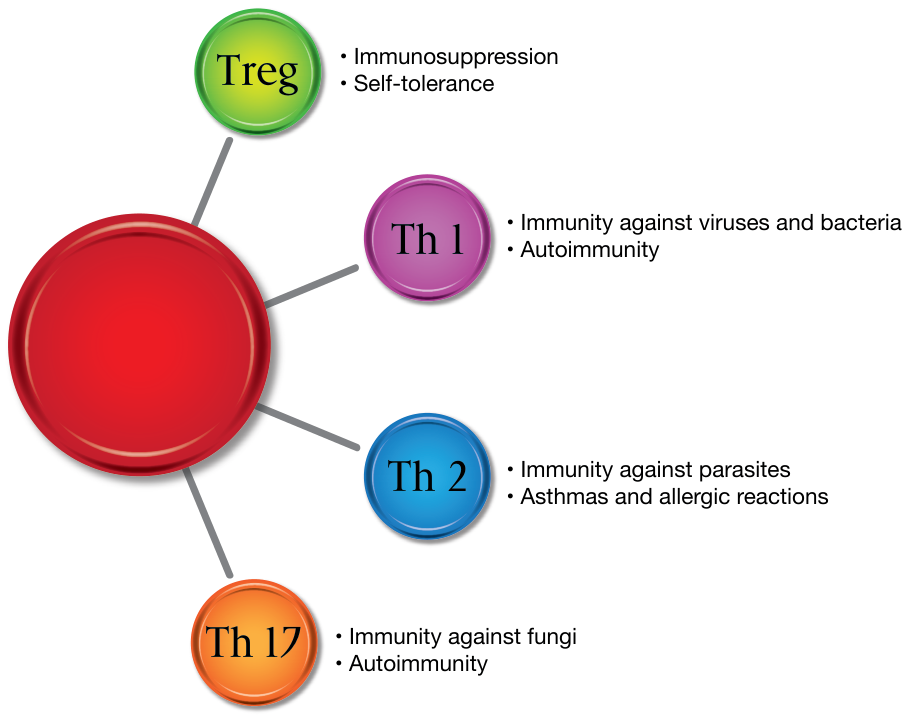
Adapted from Filén S, Lahesmaa R. GIMAP proteins in T-lymphocytes. Journal of Signal Transduction. 2010.Text in the figure: Treg; Immunosuppression; Self-tolerance; Th 1; Immunity against viruses and bacteria; Autoimmunity; Th 2; Immunity against parasites; Asthmas and allergic reactions; Th 17; Immunity against fungi; Autoimmunity
Th1
Th1 cells are part of the branch of the immune system known as cellular or cell-mediated immunity. Th1 cells act as our line of defense against intracellular pathogens, or pathogens that live and replicate inside of our cells, such as viruses and some types of bacteria.
This type of immune response is most effective at removing virus-infected cells, but it is also involved in responses to fungi, protozoans, cancers, and intracellular bacteria through lymphocytes. Cell-medicated immunity is associated with immune rejection of transplanted organs.
Cell-mediated immunity is an immune response that does not produce antibodies but instead activates different types of cells, including phagocytes, natural killer (NK) cells, and antigen-specific cytotoxic T-lymphocytes, which attack and kill virus-infected cells, cells with intracellular bacteria, and cancer cells. Inadequate Th1 response has been associated with chronic infections and cancer.
This arm of the immune system produces TNF alpha, interferon (INF) gamma, IL-2, and IL-12, which stimulate natural killer cells and cytotoxic cells and are pro-inflammatory. The Th1 immune response is associated with inflammation and delayed type hypersensitivity as well as IgG2 antibodies like the ones produced in Hashimoto’s. An increase in Th1 cells has been found in Hashimoto’s, with a prominent increase occurring in more severe cases.
Certain immune-modulating medications based on the naturally occurring Th1 substances—including interferon (used to treat hepatitis) and IL-2 (used to treat melanoma)—have been associated with Hashimoto’s thyroiditis development. These medications/cytokines suppress T regulatory cells and shift to the production of Th1 cells.
Th2 Cells
The Th2 pathway is known as humoral-mediated immunity. It is named this way because it involves extracellular substances, or the substances found outside of our cells, in body fluids (humorous).
This pathway becomes activated in the presence of parasites (such as worms), which invade the areas surrounding our cells. The cytokines produced by this pathway are IL-4, IL-5, IL-1, and IL-13. These cytokines suppress the production of the Th1 inflammatory cytokines and stimulate the production of B cells. The B cells are responsible for the production of antibodies to mark the invaders and direct the immune response.
An overactive Th2 system has been implicated in IgE-mediated allergic reactions such as the very annoying seasonal pollen allergies as well as the life-threatening anaphylactic reactions to bee stings, shellfish, and nuts.
Th17
Th17 cells have recently been implicated in autoimmune conditions.
These cells become activated in the presence of extracellular microbes, or microbes that live outside of our cells such as fungi and some bacteria.
These cells produce IL-17 and IL-23, which are pro-inflammatory cytokines active against Citrobacter, Klebsiella pneumonia, and Candida albicans pathogenic species and can initiate autoimmunity.
IL-17a is pro-inflammatory cytokine and causes direct toxicity to the cells it encounters. Th17 activation has been implicated in both Hashimoto’s and Graves’ disease.
T Regulatory Cells
Formerly known as suppressor T cells, T regulatory cells (Tregs) return the immune system to balance after an infection. They are produced in the thymus and have anti-inflammatory and immunosuppressive actions as well as promoting the immune tolerance of self. Tregs are associated with the immunosuppressive cytokines TGF-beta and IL-10. Tregs seem to have an inverse relationship with Th17 cells, meaning the more Th17 cells present, the fewer cells will be differentiated into Tregs. A reduction of Treg cells has been found in autoimmune conditions such as Hashimoto’s, while an increase has been found in conditions like cancer and chronic infections. These conditions trick the body into increasing Treg production so the cancer cells and pathogens can blend in, unnoticed by the immune system. Mouse models have shown that depletion of Tregs leads to hypothyroidism.
Immune Imbalance
Normally, the immune branches work together to overcome an infection. A healthy immune system is able to balance among each of these branches, rapidly shifting the balance to the types of cells needed most when battling an infection. It can also halt production of the fighter cells when they are no longer needed. An imbalance of any of these branches results in autoimmune conditions, or a lack of self-recognition.
Thus an immune “imbalance” has been proposed in most autoimmune conditions. For example, an increased number of Th1 cells has been associated with Hashimoto’s, while an increased number of Th2 cells has been associated with Graves’ disease and asthma.
However, this is not the case for all people affected, and some with Hashimoto’s may have an overabundance of Th2 cells or not have a clear predominating pathway.
An overabundance of inflammatory cytokines resulting from the Th1, Th2, or Th17 system—in relation to insufficient immune suppressive cytokines produced by Tregs—is usually associated with autoimmune conditions.
Stress, pregnancy, and hormonal imbalances may be associated with shifting the immune balance (more details on hormonal balance can be found in the Triggers chapter).
Insufficient adrenal hormones can also shift the body into Th1 dominance. Since our adrenal hormones become depleted during times of stress, it is not surprising that the development of autoimmunity has often been linked with periods of extreme or prolonged chronic stress. We will discuss the significance of the adrenals and stress in developing Hashimoto’s in the Adrenals chapter.
The Th2 branch of the immune system may also become overactive in the presence of insulin surges, which lead to increased B-cell production.
Many autoimmune conditions are associated with an over-representation of cells being differentiated into Th2 cells (antibody production). Women, who comprise 90 percent of those affected with autoimmune conditions, generally present a predominant Th2 cytokine profile. Hashimoto’s seems to be associated with a predominant Th1 cytokine differentiation.
In his book, Why Do I Still Have Thyroid Symptoms? When My Lab Tests Are Normal, Dr. Datis Kharrazian states that Hashimoto’s patients may be afflicted with either type of imbalance, but the majority present with a Th1 dominance.
| Cellular Immunity–Mediated (Th1) | Humoral Immunity–Mediated (Th2) |
|---|---|
| Hashimoto’s thyroiditis Multiple sclerosis Rheumatoid arthritis Crohn’s disease Type 1 diabetes Psoriasis Giant papillary conjunctivitis | Graves’ disease Asthma Lupus Seasonal allergies Ulcerative colitis |
Studies found Hashimoto’s patients have an increased number of Th1 cells producing interferon gamma, which promotes inflammation. They also have more IL-2, IL-12, and IL-18 (cytokines produced by the Th1 cells). Hashimoto’s patients also appear to have less Th2– produced IL-4, thought to be protective against autoimmune inflammatory disease.
| Cytokine | Hashimoto’s | Healthy Controls | Statistically Significant? |
|---|---|---|---|
| IL-2 | 12.16 ± 0.66 | 7.36 ± 0.45 | Yes |
| IFN-G | 7.6 ± 0.33 | 5.09 ± 0.27 | Yes |
| IL-12 | 3.57 ± 0.19 | 2.59 ± 0.23 | Yes |
| IL-18 | 27.52 ± 1.75 | 15.16 ± 1.62 | Yes |
Adapted from: Phenekos C, et. al. Th1 and Th2 serum cytokine profiles characterize patients with Hashimoto’s thyroiditis (Th1) and Graves’ disease (Th2). Neuroimmunomodulation. 2004;11(4):209–13.
Cells Found in Thyroids of Animal Models of Hashimoto’s
Th1 and Th17 were both found in the thyroid cells of mice with Hashimoto’s, and it is proposed that IL-17 cells are critical to the development of Hashimoto’s.
New research suggests Th17—rather than Th1—may be causing the damage involved in the pathogenesis of Hashimoto’s. This would explain why some Hashimoto’s patients present with a mix of Th1 and Th2 dominance as well as with no clearly defined dominance.
Immune-Modulating Substances
Some natural substances have been shown to prompt our immune system to produce more Th1 cells, including beta-glucan mushrooms, echinacea, and licorice root. These products are sometimes advertised as “immune boosters” or “immune stimulants.” Additionally, low-intensity exercises like walking, tai chi, and restorative yoga; the probiotic strain Lactobacillus plantarum: and Gyokuheifusan (an herbal formula in traditional Chinese medicine) have also been shown to support the production of Th1 type cells in clinical trials.
In contrast, substances like pine bark extract, curcumin from turmeric, green tea, and resveratrol have been shown to drive the production of Th2 type cells. High-intensity workouts of long duration have also been reported to increase the Th2 response.
When one arm of the immune system is overactive, balance may be restored by using substances that strengthen the underactive arm or weaken the overactive arm.
While many agree the Th1/Th2 ratio may be “imbalanced” in autoimmune conditions, blindly trying to manipulate the balance may be detrimental. We must understand which side of the scale is down to restore balance.
| Stimulate Th1 Cell Production | Stimulate Th2 Cell Production |
|---|---|
| Ashwaganda Astragalus Beta-glucan mushrooms and other immune-boosting mushrooms Chlorella and other algae products* Echinacea Estrogen Glutathione Gram-negative bacteria (endotoxin) Licorice root Melissa officinalis (lemon balm) Panax ginseng Polypodium leucotomos fern extract (Difur) Selenium Viruses Yoga, restorative exercise | Alcohol Anatabine Candida Cortisol excess Curcumin from turmeric DHEA Genistein Green tea extract Lycopene Parasites Pine bark extract Pycnogenol (natural ingredient in apples) Quercetin Resveratrol Soluble fiber Vigorous exercise White willow bark |
*Algae may contain high amounts of iodine, which may be problematic in Hashimoto’s.
Acupuncture
Acupuncture has been reported to balance the Th1/Th2 ratio and has been found helpful in a variety of conditions, including pain, infertility, endometriosis, and autoimmune conditions. Acupuncture is thought to cause physical responses in nerve cells, promoting the release of cytokines, which regulate the immune system. Recent studies have demonstrated that acupuncture can help rebalance Th1 disorders by promoting Th2 cytokines, and that it is helpful in type IV hypersensitivity reactions like Hashimoto’s. For those who are skeptical and who cite the placebo effect, it is worth noting that many of these studies were conducted on animals such as dogs, rats, and guinea pigs in addition to humans.
My own TPO antibodies fell from the 2,000 range to the mid-300s after receiving acupuncture and taking associated immune-balancing herbs prescribed by my acupuncturist. My antibodies remained low for over a year but started creeping up when I moved to a different state and stopped acupuncture treatments.
Cytokine Testing and Cytokine Ratios
Cytokine tests can be ordered to check which branch of the immune system is overactive.
You may be able to measure the cytokines at baseline and follow up with retesting after an intervention is made. As a word of caution, cytokine labs are considered “for research purposes only” and are not recognized as aiding or curing any disease, so they are not usually covered by insurance companies.
Through a blood test, the various cytokines expressed by the Th1 and Th2 branches are measured.
As an alternative, some practitioners recommend testing out one or more of the substances associated with strengthening either the Th1 or Th2 arm. The theory is that if someone takes a Th1–strengthening substance and feels better, this person likely has an overactive Th2 system, while those who feel worse likely have an overactive Th1 system and vice versa.
Symptoms to watch for include heart palpitations, anxiety, trembling, insomnia, irritability, and excessive sweating. These are signs of hyperthyroidism and occur when too much thyroid hormone is rapidly dumped into circulation as a result of increasing thyroid destruction.
While some may be able to perceive their condition getting better or worse after such a test, I feel many of us need an objective measure to define worsening or improvement of our condition, thus this type of test may not be the best option for all of us.
Some professionals propose taking a multitude of supplements to try to shift one’s Th1/Th2 balance. This may be helpful for some but not for all of those with Hashimoto’s.
Furthermore, taking supplements on a chronic basis to “dim” the immune response may be helpful in treating symptoms, but it does not get to the root cause of Hashimoto’s.
Additionally, as inflammatory Th17 cells—which suppress our immune-regulating Treg cells—have been found to be present in most cases of autoimmune conditions, researchers are now suggesting that immune modulation should be anti-inflammatory and aimed at increasing the production of T regulatory cells rather than on trying to manipulate the Th1/Th2 ratio. An increased amount of Tregs should rebalance the Th1/Th2 ratio through suppression and promotion of recognition and tolerance of self-antigens by down-regulating an overactive immune system.
Anti-Inflammatory Approach
In doing research for healing myself, I was surprised to learn smoking tobacco reduces the risk of Hashimoto’s. At first, this angered me because here I was a former smoker trying to be more healthy, and instead, I got stuck with an autoimmune condition!
Of course, starting to smoke again would be foolish because of the many other risks which greatly outweigh the benefits. I then began to wonder what it was about smoking that reduced the incidence of Hashimoto’s— until I came across a new supplement.
Anatabine
Anatabine is a naturally occurring alkaloid found in the nightshade plant family (e.g., tomato, tobacco, peppers). Anatabine has anti-inflammatory effects and reduces the expression of cytokines (IL-18, IL-1R2) associated with the development of Th1–mediated autoimmunity.
In 2012, John Hopkins researchers found anatabine reduced the incidence and severity of Hashimoto’s in mice.
The following year, a randomized, double-blind, and placebo-controlled study (this time in humans) followed a total of 146 patients with Hashimoto’s for three months. Seventy of those patients were treated with anatabine at a dose of 9–24 mg per day, while the rest were treated with a placebo.
The results showed a statistically significant reduction in thyroglobulin antibodies (TgAbs) at weeks four, eight, and twelve. TgAbs were reduced by an average of 46 points in the treatment group as compared with a 4-point reduction in the placebo group. Half the patients reduced their antibodies by at least 25 points, while 25 percent reduced their TG antibodies by at least 100 points.
All of the patients in the study were euthyroid, meaning their TSH, T4, and T3 were within normal range, either because they were taking levothyroxine or because they were in the early stages of Hashimoto’s. Anatabine did not affect the levels of TSH, T4, or T3, but the patients taking levothyroxine experienced a greater reduction in antibodies than patients who were not.
Dizziness, nausea, tingling, and headaches were some of the more common side effects.
Surprisingly, in contrast to case studies that showed a reduction in TPO antibodies, this particular study did not find a statistically significant reduction in TPO antibodies (meaning not everyone studied saw a benefit). The manufacturer, however, provided a few case studies of individuals who did see a reduction in TPO antibodies.
Here is one of the most compelling case studies:
One patient studied experienced an enormous drop in antibody levels after taking a dose of 0.12 mg/kg of anatabine daily for sixteen days. Her TPO antibodies reduced from 3,655 IU to 300 IU.
The authors of the study noted that TG antibodies are often the first antibodies to come down, followed by TPO antibodies. They thought perhaps more time was needed to see a statistically significant drop in TPO antibodies.
Doses of 0.12–0.267 mg/kg a day have been studied and found safe and effective in reducing thyroid antibodies. This dose would equate to about 5–12 mg daily for a 100-pound woman. Anatabine has a half-life of about eight hours and should be dosed six to eight hours apart to ensure a constant level in the body.
Anatabine should be started at a low dose of 1–2 mg a day and gradually increased to the target dose over a week. The onset of action should be seen within a couple of days to a few weeks. Early research suggests anatabine must be taken continuously to exert its affect on the immune system.
Side effects of headache, nausea, vomiting, and changes in liver function have been observed when doses were started too high.
I personally tried anatabine in 2012 for three months when I was in the middle of my root cause search, and it lowered my TPO antibodies by about 50 percent (I didn’t have any remaining TG antibodies at the time).
What I found particularly interesting is not everyone responds the same to anatabine. The researchers in the above study note that not all subjects had a drop in TG antibodies, and some had a greater drop than others did. Of course, this makes sense as not everyone has the same root cause.
This supplement may be a helpful tool in reducing inflammation and antibodies while searching for why the immune system is imbalanced.
Note: Some individuals with Hashimoto’s may have a nightshade sensitivity.
Update: In September 2014, anatabine was pulled from the market in response to an FDA warning letter. Anatabine was initially considered a dietary supplement by its manufacturer, Rock Creek Pharmaceuticals, but the FDA indicated anatabine should be studied as a drug before it could be marketed. According to the Rock Creek Pharmaceuticals website, “The Company has filed an Investigational New Drug (IND) application with the U.S. Food and Drug Administration, which is on clinical hold pending additional data for the Agency to review.”
Curcumin
Derived from the spice turmeric, curcumin has anti-inflammatory benefits that can be helpful in autoimmune conditions. Curcumin produces an anti-inflammatory effect by down-regulating Th1 cytokines (TNF-A, IL-1, IL-2, IL-6, IL-8, and IL-12).
Curcumin has been found to reduce joint inflammation in the Th1 autoimmune condition rheumatoid arthritis. Additionally, it seems to have therapeutic anti-inflammatory effects in a variety of gastrointestinal conditions. Curcumin improved Crohn’s disease (Th1), ulcerative colitis (Th2), and IBS.
Although some researchers suggest that the daily intake of curcumin in a typical Indian diet may be anti-inflammatory, the amount of curcumin present in spices may be insufficient to produce anti-inflammatory benefits for autoimmune conditions. Curcumin may be taken as a supplement, but by itself it is quickly excreted out of the body. It needs to be combined with piperine, an alkaloid found in pepper, to remain active for a longer time in the body.
Curcumin appears to be extremely safe, even at doses of up to 8 grams a day, but some individuals with Hashimoto’s (especially those with nightshade sensitivities) may have an intolerance to piperine and may be unable to use the supplement.
Increasing Regulatory T-Cells
Autoimmune conditions are also more likely to cluster in regions farther from equator. This is likely due to inadequate vitamin D levels. Vitamin D deficiency is associated with improper immune function, including a lack of both CD8+ T cells that kill off viruses like EBV and T regulatory cells that keep the immune system balanced.
In recent years, the role of vitamin D in the health of the human body has been strongly emphasized by researchers and the medical community alike. Serum vitamin D levels can be directly correlated with human life expectancy. Dr. William Grant, PhD, a vitamin D expert, has proposed that raising the serum vitamin D level would prevent 30 percent of cancer deaths per year.
Vitamin D affects about 3,000–30,000 genes in our bodies, and many diseases have been connected to vitamin D levels, including heart disease, depression, and autoimmune conditions.
Vitamin D is known for its role in balancing Th1 (cell-mediated) and Th2 (humoral) immune system responses by influencing T regulatory cells, which are responsible for control expression and differentiation of Th1 and Th2.
Vitamin D actively prevents the development of autoimmunity in animal models, and there is a strong connection between vitamin D deficiency and autoimmune thyroiditis.
In humans, serum levels of 1,25(OH) 2D3 were found to be significantly lower in autoimmune than non-autoimmune hyperthyroidism.
As skin cancer awareness and the use of sunscreen have become more widespread, people stopped getting the appropriate amount of vitamin D in the summertime. Those living in northern climates are especially at risk for vitamin D deficiency in the colder months.
Vitamin D deficiency is one of the most under-recognized deficiencies in our society. An estimated 85 percent of Americans may be deficient, and a study in Turkey found 92 percent of Hashimoto’s patients were deficient in vitamin D.
Studies are now suggesting much higher doses of vitamin D than the current RDA of 400 IU should be taken.
Testing for Vitamin D Deficiency
If you live in a northern climate and don’t spend time outside on a daily basis, you are at risk for vitamin D deficiency.
Vitamin D levels should be between 60 and 80 ng/L for optimal thyroid receptor and immune system function. Vitamin D levels should be checked at regular intervals, especially in the winter seasons. There are two available tests: 1,25 (OH)D and 25(OH)D. The test 25(OH)D— also called 25-hydroxyl vitamin D—is preferred.
Sources of vitamin D include cod liver oil, fish, fortified dairy and orange juice, eggs, and, most importantly, sunlight. As mentioned above, the farther we get from the equator, the higher our likelihood of developing an autoimmune condition.
We may be tempted to eat more foods with vitamin D in an effort to support our bodies with nutrition, however, the amount of vitamin D in foods may not be sufficient for everyone.
People with Graves’ disease, another autoimmune thyroid condition, have been found to have altered binding of vitamin D, while abnormalities in vitamin D receptor genes have been found in many other autoimmune conditions. These individuals have trouble converting supplemental vitamin D to its active form. Additionally, EBV and other pathogens can hijack the vitamin D receptor, rendering vitamin D supplements useless.
Your Prescription? A Beach Vacation!
The best ways to restore optimal vitamin D level are through sun exposure, safe tanning beds, and an oral vitamin D3 supplement. The richest sources of vitamin D from food come from wild salmon (800 IU/3.5 oz. of D3) and cod liver oil (700 IU per teaspoon).
What Can We Learn from Bacteria and Parasites?
Research found some types of bacteria actively manipulate regulatory T cells to foster their own survival in the host. Certain probiotic strains have been used in mouse models of autoimmune disease and have been found to increase T cell differentiation to produce more Tregs, which impacted disease outcomes (arthritis and asthma).
These beneficial bacterial strains included (L. casei, L. salivarius, Lacotobacillus rhamnosus, Bifidobacterium lactis, and L. reuteri). Another study was done with Lactobacillus plantarum, which was responsible for reducing the risk for anaphylactic-type of allergies by increasing Th1 response.
In addition to probiotics, which will be discussed in subsequent chapters, other ways of increasing T regulatory cells have been identified, including such activities as weightlifting and sunbathing in ultraviolet light as well as foods and supplements.
Certain substances have been reported to weaken the immune system and should be removed from our diets. These include processed foods, pro-inflammatory vegetable oils, white sugar, and alcohol.
Other conditions that weaken the immune system and require addressing include leaky gut, low hydrochloric acid, and poor digestion, which result in circulating immune complexes (CICs); low body temperature; exposure to heavy metals and environmental pollutants; tobacco smoke; and the presence of viral, bacterial, or fungal pathogens.
Lifestyle factors such as a sedentary lifestyle, negative attitudes, chronic stress, insomnia, and rapid muscle building (with heavy weightlifting or anabolic steroids) have also been shown to weaken the immune system and should be modified to ensure healthy immune function.
In contrast, the following immune-strengthening substances have been identified: garlic extract (also has antimicrobial function), vitamin E (an antioxidant), ginkgo biloba (through reduction of excess cortisol production), colostrum, DHEA (an adrenal hormone), olive oil, coconut oil, the herb neem, vitamin A, cod liver oil, L-glutamine, probiotics, low-dose naltrexone (LDN), and omega-3 fatty acids.
Adequate hydration, exercise, meditation, a positive outlook, forgiveness, letting go of resentments, and long-term goals are also beneficial not just to our overall well-being but also to immune function.
Low-Dose Naltrexone
Low-dose naltrexone (LDN) has been reported to enhance immune function by increasing our endogenous adrenaline production, reducing inflammatory cytokines, promoting DNA synthesis, and slowing down motility in the GI tract to facilitate healing. LDN increases the number of T regulatory cytokines IL-1 and TGF-b, leading to a reduction of Th17, the promoter of autoimmunity.
Naltrexone is an FDA-approved medication used for opioid withdrawal at a dose of 50 mg daily. Only low doses of 1.5–4.5 mg a day, however, have been found to tweak the immune system. This treatment has shown promise in improving cases of autoimmune disease, including Crohn’s, MS, and Hashimoto’s as well as other immune-system–related conditions such as cancer and HIV/AIDS.
Dedicated to sharing research on LDN, lowdosenaltrexone.org is full of testimonials about ulcers, tumors, and lesions disappearing within months of initiating LDN.
The website authors caution users with Hashimoto’s taking supplemental thyroid hormone to start low (1.5 mg a night) and watch for emerging signs of hyperthyroidism that may result from rapid improvement of the condition.
This medication is only available as a prescription and can be compounded into lower doses by special professional compounding pharmacies (or a resourceful person with a mortar and pestle and precise measuring tools). Luckily, even without insurance coverage, this medication is available in generic form and is affordable.
I tried low-dose naltrexone but found it made me irritable after a few nights of taking it. This was before I started working on my diet, however, and I have since heard anecdotal evidence of LDN working best when used in combination with a leaky gut diet.
Chapter Summary
- An immune system imbalance is present in Hashimoto’s, which results in more inflammation.
- Vitamin D deficiency is connected to autoimmunity. Measure levels of vitamin D.
- Increase vitamin D via beach vacationing, tanning, or vitamin D supplement/food to get vitamin D levels between 60 and 80 ng/ml.
- Anatabine is a supplement that has been shown to reduce TPO antibodies by preventing the inflammatory immune system from responding.
- Curcumin with piperine has shown promise in reducing inflammatory autoimmune responses and gut inflammation.
- Low-dose naltrexone is a prescription medication that modulates the immune system to reduce the autoimmune attack.
- Immune-modulating substances may be helpful in slowing down or halting thyroid cell destruction while we work to identify and eliminate triggers and fix intestinal permeability.
11. The Gut
“All disease begins in the gut.”
—Hippocrates
So the big question is … how do we restore our health and our immune system? It seems all roads lead back to Rome!
While various pathogens have been found to be associated with Hashimoto’s, researchers are unable to establish a definite causal link between any specific pathogens and Hashimoto’s. This means not everyone with these infections—even if they have the genetic susceptibility—develops Hashimoto’s. Additionally, not everyone with Hashimoto’s has these infections. Other potential triggers that have been identified in Hashimoto’s include iodine, stress, toxins, and our internal microbial flora.
In addition to genetic susceptibility and triggers, a third piece of the puzzle must be present for Hashimoto’s to develop.
This common link is present in all autoimmune conditions and gets closer to the root cause of the development of autoimmunity: increased intestinal permeability—a.k.a. “leaky gut.”
So what does the gut have to do with the immune system and autoimmunity? Everything! It is the intestinal lining that prevents autoimmunity!
Researchers have found that in addition to digesting and absorbing nutrients and maintaining a water and electrolyte balance, the intestine is also responsible for helping the immune system recognize foreign invaders from self-antigens, thus facilitating the control of pathogens and preventing autoimmune reactions.
Intestinal Wall
A layer of epithelial cells covers the entire intestine and has the important role of keeping a protective mucosal barrier between the dirty environment inside our intestines (partially digested food, pollens, feces, dead cells, and bacteria) and the rest of the body, where those substances could do potential harm.
This layer is formed by intercellular tight junctions analogous to the thread fibers that make up a piece of cloth. These threads, however, are not static, and their proximity to one another (“tightness”) can be affected by various factors.
What Exactly Is Leaky Gut?
Leaky gut is an abnormally increased permeability of the small intestine. In leaky gut syndrome, the intestinal tight junctions become looser, allowing substances that normally would not gain systemic access to get into the circulation.
Once substances like food, bacteria, and self-antigens get past the intestinal barrier into the circulation, the immune system recognizes them as foreign substances, which leads to inflammation in the body and gut, further increasing permeability and triggering food sensitivities and autoimmunity.
What Causes Leaky Gut?
Dr. Fasano has identified that in the presence of leaky gut, we secrete excess zonulin, a protein that modulates the permeability between the tight junctions. An excess of this protein has been found in every autoimmune condition, including Hashimoto’s!
A variety of factors has been implicated in causing an excess release of this protein, including gliadin (gluten); food intolerances; psychological stress; unsaturated fats; nonsteroidal anti-inflammatory drugs (NSAIDs) like Advil™ and Aleve™; alcohol; pathogenic bacteria; intestinal parasites; and an overgrowth of bacteria from the large intestine (colon) into the small intestine, known as small intestinal bacterial overgrowth (or SIBO). The increased permeability is thought to be a defensive mechanism for clearing bacteria and toxins from the small intestine.
Intestinal permeability may also increase in response to various foods and supplements as well as surgery, trauma, and inflammation.
AGES (advanced glycosylation end products) generated from high-temperature cooking of fatty foods may also promote inflammation and can potentially increase intestinal permeability.
Intestinal Tight Junctions
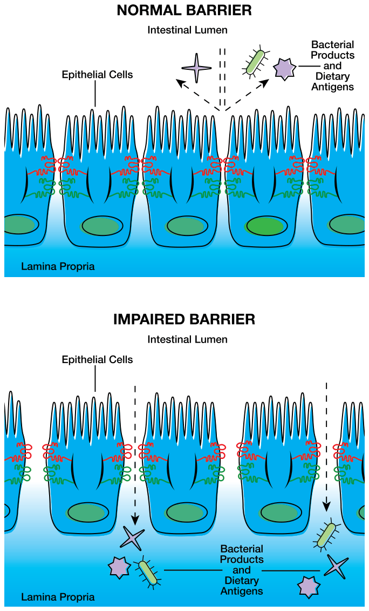
Figure adapted from Suzuki T, Hara H. Role of flavonoids in intestinal tight junction regulation. The Journal of Nutritional Biochemistry. 2011;22:Fig 1. Reprinted with permission from Elsevier.
Testing for Intestinal Permeability
Testing for intestinal permeability is fairly simple and noninvasive through the Mannitol-Lactulose Intestinal Permeability Test.
The patient drinks a premeasured amount of two sugars: lactulose and mannitol. The degree of intestinal permeability or malabsorption is reflected in the levels of the two sugars recovered in a urine sample collected over the next six hours.
Mannitol, a monosaccharide, should be well-absorbed by the intestinal barrier. In contrast, lactulose, a disaccharide, is normally not absorbed unless the intestinal barrier is compromised.
The test measures the ratio of lactulose to mannitol in the urine. An elevated ratio means excessive lactulose was absorbed, indicating leaky gut syndrome.
Tests can be repeated to gauge progress with leaky gut treatment.
Pillars of Optimal Gut Function
To fix our immune system, we must restore optimal gut function. The pillars of optimal gut function are digestion, elimination, microflora balance, and gut integrity.
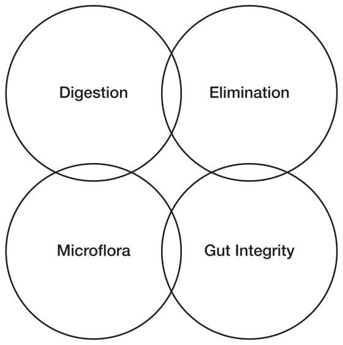
Gut Quiz: Do You Have Symptoms of Impaired Gut Function?
Many people with Hashimoto’s and other autoimmune conditions do not immediately associate poor gut function with their immune status. Some may not realize they are experiencing symptoms until they eliminate foods (see the Intolerances chapter).
- I have a bloated or full feeling, belching, burning, or flatulence right after meals.
- I have chronic yeast or fungal infections.
- I feel nauseated after taking supplements.
- I feel fatigued after eating.
- I have heartburn.
- I regularly use antacids.
- I have chronic abdominal pains.
- I have diarrhea.
- I have mucous in my bowel movements.
- I have constipation (going less than once or twice a day).
- I have greasy, large, poorly formed, or foul-smelling stools.
- I find food that is not fully digested in my stool.
- I have food allergies, intolerance, or reactions.
- I have an intolerance to carbohydrates (eating bread or other sugars causes bloating).
- I have anal itching.
- I have bleeding gums or gingivitis.
- I have geographic tongue (map-like rash on tongue indicating food allergy or yeast overgrowth).
- I have sores on the tongue.
- I have canker sores.
- I crave sweets and bread.
Adapted from Hyman, M. The UltraMind Solution: Companion Guide. Hyman Enterprises; 2009.
Gut Bacteria at the Root Cause of Autoimmunity?
When the intestinal lining becomes compromised, gut bacteria that would not otherwise cross the intestinal barrier enter the circulation and cause inflammation. It is also gut bacteria that damage the intestinal lining!
Your gut is home to 100 trillion bacteria, yeasts, and other microbes. You actually have ten times more microbial cells than your own cells. Emerging research shows the microbial balance in our intestines determines our digestion, immune system balance, emotions, and overall health status!
Bacterial Universe
Trillions of bacteria live in our intestines in an ever-evolving universe. In fact, the intestinal tract of most adults has anywhere from 300 to 500 unique bacterial species, many of which have not yet been identified.
Of those species, about thirty to forty species are the predominant type and account for 99 percent of the total population. Every individual’s bacterial universe has been suggested to be unique, like a fingerprint. As these bacteria are excreted in the feces, predominant species can be measured in the stools.
The number and types of bacteria also vary throughout the intestinal tract. Under normal conditions, the small intestine (the upper part of the GI tract) hosts only a few species of bacteria and has a low number of microorganisms as compared with the colon, which has the greatest number of microorganisms.
Role of Bacteria in the Gut
Our unique resident bacteria support the development of our immune system and determine the type of immune response that should be initiated.
We have all heard of the normal flora—also known as “friendly,” “commensal,” or “beneficial” bacteria—that live in our bodies in a cooperative environment that benefits both their human hosts and the bacteria themselves.
These bacteria utilize the resources provided by the body (e.g., foods and a comfortable environment for reproduction) and in return provide us with benefits. They help us with the breakdown of undigested or indigestible foods such as polysaccharides; synthesis of micronutrients and short-chain fatty acids; and absorption of trace elements.
The bacteria feed on fiber—poorly digested by all humans—by fermenting it. During the fermentation process, short-chain fatty acids, lactate, succinate, ethanol, hydrogen, and carbon dioxide gases are produced.
These beneficial bacteria attach to the intestinal tissue and colonize the gastrointestinal tract. They compete with pathogenic bacteria for intestinal attachment and nutrients, producing substances that kill foreign bacteria and organisms.
This type of arrangement is called a symbiotic relationship and is one in whichboth the host and bacteria thrive.
Having plenty of these good bacteria helps us metabolize complex carbohydrates, maintain a proper intestinal barrier, and suppress intestinal inflammation.
The best-known beneficial bacteria are from the Lactobacillus and Bifidobacterium species and are classified as gram-positive bacteria by microbiologists.
Opportunistic Bacteria
Our intestines are also home to other types of bacteria known as opportunistic pathogens. They behave well when everything is balanced but can be naughty when the opportunity arises. These bacteria may become potential pathogens when we are vulnerable, such as in situations of a compromised immune system, impaired digestion, intestinal permeability, depletion of Lactobacillus or Bifidobacterium, and even when we experience psychological stress.
Some of the bacteria in each person’s GI tract can be pathogenic when the mucous barrier is compromised.
Dr. Michael Maes is a psychiatrist and pioneer who specializes in treating chronic fatigue syndrome (CFS). He has detected increased intestinal permeability in the chronic fatigue patients in his clinic.
Dr. Maes and colleagues have found that in the presence of leaky gut, certain gram-negative enterobacteria that normally reside in human intestines move through the intestinal wall into the circulation in patients with chronic fatigue syndrome and depression.
IgM and IgA antibodies to bacteria normally present in the gut can be detected in the serum when the bacteria cross the intestinal wall into the bloodstream or lymphatic system (bacterial translocation), where they are recognized and attacked by white blood cells.
Through the use of antibody serum tests, Dr. Maes has measured an increased response to endotoxin, a substance released by the gram-negative bacteria in his patients with CFS and depression. He has been able to correlate the patients’ symptoms with the levels of IgA and IgM response to endotoxin, thus showing higher responses to the bacteria translated to more debilitating symptoms of chronic fatigue and depression.
When they gain access to the bloodstream or lymphatic system, the bacteria may act as superantigens or may induce autoimmunity through molecular mimicry.
Dysbiosis
Gram-negative enterobacteria are part of the normal flora but become pathogenic under the right circumstances, leading to autoimmunity.
Different bacterial species present may produce their own unique byproducts. For example, methanogenic bacteria produce methane gas (not thought to be harmful unless present in excessive amounts, which can cause constipation and IBS) during fermentation, while sulfate-reducing bacteria produce a harmful hydrogen sulfide gas, which can damage the colonic epithelium.
These gram-negative bacteria are normally present in small amounts in the human intestine, but some individuals may have too many of them and not enough of the beneficial gram-positive bacteria. This produces an imbalance in bacterial gut flora known as gut dysbiosis.
When they predominate, the gram-negative bacteria can attach to the intestinal wall and hijack the intestinal barrier, allowing themselves to cross into the bloodstream and lymphatic system.
Proteus Bacteria
When there is depletion of beneficial bacteria coupled with poor stomach acid and inadequate protein digestion, the Proteus species of gram-negative bacteria can overgrow and attach to the intestinal lining. This bacterium damages the cells in the intestinal lining with the toxins it releases when it feeds on partially digested foods by fermenting them. This causes inflammation, leading to an immune system imbalance.
Proteus bacteria do not ferment dairy but instead ferment fructose and undigested meat. Fermenting meat and protein leads to the release of a sulfate gas that damages the intestinal wall. Bad news for those around you: this gas has a rotten-egg smell.
The bacteria are then able to cross into circulation and are implicated in autoimmunity. The proteins in the cell walls of these bacteria resemble different parts of our self-antigens, thus leading to molecular mimicry. The Proteus bacteria contain lipopolysaccharide (LPS), a type of endotoxin, in their bacterial cell wall. LPS is released during bacterial death or replication, causing inflammation. As a result, LPS becomes a trigger for the immune system.
Proteus bacterium also liquefies casein, causing it to leak through the intestinal walls and resulting in an immune reaction to casein. Proteus species bacteria have been implicated in causing rheumatoid arthritis through molecular mimicry as their cell walls look similar to our internal tissues.
Candida
Candida albicans, while not a bacterium, is an opportunistic yeast that is normally present in our intestines but that can become infectious or pathogenic when there is a depletion of beneficial bacteria, nutrients, or a compromised immune system. A history of antibiotics, steroids, pregnancy, recurrent vaginal yeast infections, birth control pills, and a diet rich in simple carbohydrates increases the risk of Candida overgrowth, which is present in many people with Hashimoto’s.
Candida loves starchy foods, sugar, and alcohol. If you, too, share this common love with Candida, you may inadvertently end up with excess Candida growth in your intestines.
The symptoms of a Candida infection can mimic many of the symptoms of hypothyroidism, including feeling spacy, having cold extremities, and lethargy.
Candida can be controlled by diet, probiotics, supplements, and antifungal herbs and medications.
It is generally recommended to starve the fungus through the Candida diet, which includes cutting out simple carbohydrates in addition to nuts, seeds, grains, corn, mushrooms, potatoes, fruit, dairy, and alcohol. Ketogenic diets may continue to feed the Candida. (See Diet chapter.)
Candida exists in two forms: the normal yeast spheres and an elongated pathogenic hyphae form. Responsible for intestinal permeability, the hyphae form allows Candida to penetrate into the mucosal lining.
Several supplements have been shown to either prevent conversion to the hyphae form or convert it back to its yeast form, rendering it no longer pathogenic. These include biotin, thymol (from thyme), carvacrol (from oregano), eugenol (from cloves), caprylic, and undecylenic acid.
Biotin may be especially beneficial for Hashimoto’s patients as it is helpful with adrenal function and hair loss. I recommend 5,000 mcg daily.
While many cases of Candida can be controlled with diet and supplements, some may require the use of antifungal herbs and even antifungal medications like nystatin and fluconazole.
Many books have been written on the subject of overcoming Candida. I recommend The Body Ecology Diet by gut health pioneer Donna Gates. It is a wonderful resource for those who would like additional information.
What Determines the Bacterial Balance?
When we are born, our gut is sterile, and we receive most of our bacteria from our mothers. The use of medications, the infections we have had, the types of foods we eat, and psychological or physiological stress can promote the proliferation of one type of bacteria while causing another species’ populations to diminish.
Medications
Prescriptions and over-the-counter medications that reduce acidity in the small intestine can lead to an overgrowth of bad bacteria. Examples include acid suppressants such as Tums™, Alka-Seltzer™, Pepcid™, and Prilosec™.
Antibiotics can wipe out our normal “protective” flora, allowing pathogenic bacteria to take over. This is because antibiotics often have a “broad spectrum” of activity, which means they are not guided by “GPS” to kill only the pathogenic bacteria but also kill beneficial bacteria as a side effect.
The hospital-acquired C. diff colitis infection is an example of an antibiotic-induced imbalance of bacterial flora in which the patient experiences repeated bouts of painful and severe diarrhea due to overgrowth of the Clostridium difficile bacteria following the use of a broad-spectrum antibiotic to treat a different condition. C. diff is life-threatening if not treated appropriately.
A more common and less severe example is vaginal yeast infections following the use of antibiotics for throat or urinary tract infections.
Other medications such as oral contraceptives produce a change in our intestinal pH, which leads to an abundance of certain bacterial strains and scarcity of others.
Stress
Researchers have found that stressful conditions can increase the number of pathogenic bacteria present in the gut. Stressful situations cause a release of the neurochemicals epinephrine (Epi) and norepinephrine (NE)—our fight-or-flight chemicals—respectively known as adrenaline and noradrenaline, which can spill into the intestines.
Stressful emotions such as anger and fear trigger NE, leading to increased growth of E. coli, Yersinia enterocolitica, and Pseudomonas aeruginosa. Additionally, under stressful conditions, E. coli releases a substance that is essentially a “growth hormone” for other gram-negative bacterial species, letting other potentially pathogenic bacteria know it is their time to “multiply and attack.”
These stressful situations create a favorable environment for the often pathogenic gram-negative bacteria and one that is less favorable to the survival of beneficial bacteria such as the Lactobacillus species.
Numerous studies and case reports have found that exacerbation of intestinal disorders tends to occur after a stressful period, and we now understand the types of bacteria that reproduce during stressful times may be associated with this outcome.
Diet
Changes in diet, even small ones, can have an impact on the type of bacteria that thrive. A 15-gram-a-day diet addition of oligofructose or inulin (fructose-based dietary fibers) leads to the bacteria Bifidobacterium becoming the predominant bacterial species in the feces of individuals studied. Prior to the addition of inulin, Bacteroides, Clostridia, and Fusobacteria were the predominant species present.
According to Elaine Gotschall, the author of Breaking the Vicious Cycle, a diet rich in refined carbohydrates can lead to a compromised GI flora. Anecdotal evidence shows that people who become affected with intestinal disorders are more likely to eat a diet high in simple carbohydrates compared with those who were unaffected.
What Happens When the Normal Flora Becomes Imbalanced?
In this shift toward the proliferation of unfriendly bacterial species, the excessive fermentation byproducts these bacteria produce lead to damage of the intestinal tract, harming the delicate microvilli containing the brush border enzymes responsible for digestion. In some cases, the intestinal walls may produce more mucous as a protective mechanism from the damage. The excess mucous then coats the brush border enzymes and forms a barrier between the food and enzymes necessary to digest it.
In other cases, it has been reported that the mucous border may diminish, exposing the intestinal wall to damage. When bacteria become imbalanced, the overgrowth of pathogenic bacteria leads to damage of the endothelial lining since pathogenic bacteria produce their own enzymes that break down the protective mucous coating of the intestinal lining as well as degrading the pancreatic and brush border enzymes.
The first enzyme affected is lactase (used to break down the lactose sugar found in milk). It is also the last enzyme to regenerate once the bacterial world is stabilized. Interestingly, statistics claim 70 percent of people are deficient in this enzyme, which leads me to wonder whether lactose-intolerant people are also suffering from a gut microflora imbalance.
While certain carbohydrates such as monosaccharaides (single sugars) can be absorbed by the body to provide nutrition without needing to be digested, disaccharides (double sugars) and polysaccharides (multiple sugars) cannot be digested or absorbed without the activity of brush border enzymes, which cleave them into the absorbable monosaccharide components.
These undigested carbohydrates remain in the intestinal tract and are utilized as “lunch” for the bacterial universe. The pathogenic bacteria ferment the carbohydrates, leading to flatulence, gas, bloating, and further intestinal damage, creating the vicious cycle described by Elaine Gottschall.
Without proper digestion and the aid of beneficial bacteria, a person may become malnourished or have vitamin/mineral deficiencies despite adequate intake.
B12 deficiency may result from this malabsorption, which further contributes to the vicious cycle as B12 is required for the growth and proper function of villi. Other nutrients important to thyroid health (such as selenium, zinc, and omega-3 fatty acids) may also become depleted.
Testing
Stool tests are available to check microbial balance. These tests can tell us whether there is a lack of beneficial bacteria or an overabundance of pathogenic organisms such as potentially pathogenic gram-negative species or Candida.
These same tests can be used to check for Yersinia enterocolitica.
I recommend the GI Effects Profile from Metametrix/Genova Diagnostics, which also checks for digestion/absorption, gut immunology, metabolic parameters, and parasites as well as the mixture of intestinal flora. This test helps determine microbial balance by quantifying the amounts of beneficial and pathogenic bacteria.
To determine if you have gut infections that may be contributing to intestinal permeability, I also recommend the 401H GI Pathogen Screen with H. pylori Antigen stool test from BioHealth Lab.
The 401H test is the best option for parasite testing. It does not, however, measure beneficial bacteria.
These tests can be helpful in determining your course of action. I found that although I had plenty of Bifidobacteria, I had zero lactobacilli! I also had an overgrowth of E. coli and Proteus vulgaris. Additionally, I was found to have three different gut infections!
Small-Intestinal Bacterial Overgrowth
Small Intestine
The small intestine has millions of tiny mucosal fingerlike projections called villi that line the intestinal wall. Made from epithelial cells, these villi are covered with the even smaller microvilli that make up the brush border cells (“the fuzzy fringe”). These cells contain brush border enzymes that digest carbohydrates, proteins, and fats (amylase, lactase, maltase, and sucrose). The space between the epithelial cells is called a tight junction. Under normal conditions, food is transported into the small intestine, where it is further worked on by brush border enzymes.
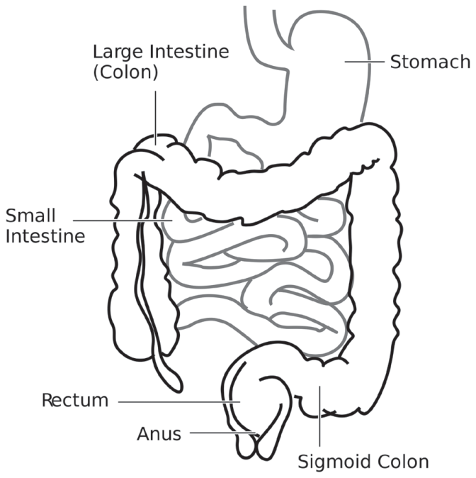
Diagram of the Human Intestine. Drawn by Duncan Lock and released into the public domain. commons.wikimedia.org/wiki/File:Intestine-diagram.svg. Accessed March 29, 2013.
Large Intestine
The large intestine is also known as the colon. Resident bacteria of the colon depend on the host to feed them, especially with carbohydrates that were not digested/absorbed into the small intestine such as starches, polysaccharides, fiber, sugars, and oligosaccharides. The colon bacteria ferment undigested foods, mucous, sloughed epithelial cells, and pancreatic enzymes for energy to help themselves grow and multiply.
Bacteria from the colon may also creep into the small intestine, where they can cause an overgrowth. Small intestinal bacterial overgrowth (SIBO) has been associated with a variety of gastrointestinal conditions such as Crohn’s disease and IBS. It is also a potential cause of increased intestinal permeability.
Generally, the small intestine is supposed to have fewer bacteria than the colon, but in some cases (following food poisoning, for example), more bacteria may get into the small intestine. Hydrogen breath tests are available to test for overgrowth of bacteria in the small intestine.
Food and Intestinal Permeability
When people have a leaky gut, the food is never properly digested. Instead, food particles can cross the intestinal barrier and get into the circulation. Just like the bacteria, these substances—once in our circulation—are recognized as “invaders” by our immune system, and the immune system launches a white blood cell (WBC) attack. This leads to the development of food intolerances, which can be measured as IgG antibodies to these foods, similar to the antibodies formed to the endotoxins produced by bacteria.
Somehow either the bacteria or the foods are cross-linked with thyroid peroxidase (bystander effect), and the immune system begins to develop IgG antibodies to TPO. As time goes on, the foods and bacteria act as environmental triggers that perpetuate the IgG antibodies. (More about this in the Food Intolerances chapter.)
The Gluten Autoimmune Connection
Certain proteins may induce an immune system response. The most well-described is the gluten intolerance seen in celiac disease. Gluten is a protein found in wheat that causes intestinal damage, destroying the intestine’s ability to absorb nutrients in people with gluten intolerance. Researchers are now finding gluten intolerance may exist on a spectrum, with many people being intolerant but not testing positive when receiving the screening tests.
The other issue with some of the screening tests is they measure your body’s intestinal IgA response to gluten. In some advanced cases, the intestines may be so damaged the IgA is too depleted to create an immune response. In that situation, the person will test negative for gluten intolerance. A biopsy of the intestines (a much more expensive and invasive procedure unlikely to be done without a positive screen result) would show the intestines were severely damaged, however.
The best test for gluten intolerance—or any other food intolerance—is removing it from your diet for a few weeks followed by a challenge in which you reintroduce the suspected food.
If you have Hashimoto’s, you likely have some degree of gluten intolerance and need to remove gluten from your diet. Some people may have the same type of reaction to casein and whey in dairy products. Others may have a reaction to the protein found in eggs or soy.
I tested borderline for gluten intolerance but positive for dairy protein intolerance. I felt much better after taking both out of my diet, and this became an essential key to my recovery. A follow-up challenge with both foods confirmed my sensitivity.
Although celiac disease is five to fifteen times more common in people with Hashimoto’s than in the general population, non-celiac gluten intolerance is also a factor in many autoimmune conditions. Gluten also has a direct influence on intestinal permeability, even in the absence of celiac disease.
Symptom improvement in many autoimmune conditions has been reported after the initiation of a gluten-free diet. Length of gluten exposure is positively associated with the development of autoimmune conditions. This means the longer you eat gluten, the more likely you are to develop an autoimmune condition! Some researchers have found that three to six months on a gluten-free diet can eliminate organ-specific antibodies, such as those to the thyroid seen in Hashimoto’s. Some individuals have reported their TPO antibodies disappeared after getting rid of gluten—without any other lifestyle changes. Thus, a three- to six-month gluten-free trial should be undertaken by everyone with an autoimmune condition.
When Did the “Staff of Life” Become So Toxic?
The rates of celiac disease, autoimmune conditions, and gluten intolerance are increasing in many countries, including the United States and Europe.
Traditional bread preparation techniques involve using a “sourdough” fermentation process, which breaks down the gluten protein. This requires putting a special type of yeast in the flour. It takes about three days before the bread is ready to be baked.
Conventional bread preparation techniques don’t bother with this process, and most wheat products in breads, cereals, and processed foods contain gluten.
Small studies show breads prepared from wheat in a traditional sourdough process appear safe for people with celiac disease. Another study showed the types of beneficial bacteria produced in the fermentation of breads might actually promote healing for those with celiac disease.
Healing Intestinal Permeability
To heal autoimmune conditions, we need to reduce intestinal permeability. This is achieved by removing offending agents and rebalancing depletions that are preventing our bodies from working optimally. We must also eliminate the habits and stressors causing those depletions.
Taking antibiotics to target the gram-negative bacteria may be helpful in some cases, but it does not always solve the root cause of the problem and further compromises the bacterial balance in our intestines.
Dr. Maes found that in combination with a leaky gut diet, antioxidants like glutamine, n-acetyl cysteine, and zinc can help “tighten” the intestinal tight junctions within a year.
Additional antioxidants were also utilized: L-carnitine, coenzyme Q10, taurine, lipoic acid (in cases of L-carnitine or coenzyme Q10 deficiency), gamma oryzanol, curcumin, and quercetin (in the case of systemic or intracellular inflammation). These were administered along with a “leaky gut diet,” which was described as gluten-free, dairy-free, and low-carb.
According to Dr. Maes, “natural anti-inflammatory and anti-oxidative substances may improve the integrity of the gut barriers by reducing gut-derived inflammation and tightening the opened tight junction barrier.”
Glutamine
Glutamine is the best-studied substance for healing intestinal permeability. A deficiency in glutamine is also known to cause increased intestinal permeability in mouse models and malnourished children.
Glutamine supplementation has been found to reduce the damage and leaky gut associated with the use of NSAIDs. It also lessened gut permeability in patients who had undergone abdominal surgery.
New epithelium in the GI is produced in three to six days, and glutamine can help repair the GI lining in collaboration with other amino acids such as leucine and arginine. Glutamine needs to be taken orally to be effective.
Glutamine dosed daily at 0.5 grams/kg ideal* body weight for two months was shown to reduce intestinal permeability in subjects with Crohn’s disease. Dr. Maes used a more conservative dose of 7 grams a day.
*To calculate your ideal body weight (IBW), use the following formula:
Males: IBW = 50 kg + 2.3 kg for each inch over 5 feet
Females: IBW = 45.5 kg + 2.3 kg for each inch over 5 feet
Zinc
Zinc supplementation has also been shown to tighten leaky gut in other conditions such as Crohn’s disease. Maes, et al. found zinc levels were lower in those with chronic fatigue syndrome. Other studies show zinc can be lowered by the presence of increased levels of pro-inflammatory cytokines such as IL-6. Low zinc has also been associated with hypothyroidism. The dose used by Dr. Maes was 30 mg a day.
N-Acetyl Cysteine (NAC)
Hashimoto’s patients are deficient in the antioxidant glutathione. It helps prevent free radical damage to the thyroid but isn’t well-absorbed if taken orally. N-acetyl cysteine (NAC) is a precursor to glutathione and can be taken orally. NAC has been used for healing intestinal permeability. Be aware it can cause stomach upset if taken on an empty stomach and thus should be taken with food. Dr. Maes used a dose of 1.8 grams a day with chronic fatigue patients.
Rebalancing the Bacterial Flora
Most people with Hashimoto’s have imbalanced bacterial flora. This seems to be the root cause of many autoimmune conditions, contributing to intestinal permeability and increased autoimmunity.
Thus the strategy to overcome autoimmune conditions is to rebalance the bacterial flora, which can lead to a normalization of intestinal permeability. When our bacterial flora is not balanced, this contributes to the autoimmune condition through continuous antigen stimulation.
Rebalancing the bacterial flora can be done through medications, diets, and probiotic and digestive enzyme supplementation.
Diets
- A two-week elemental diet in which an easily digestible liquid formula is consumed in place of food has been shown to reduce small-intestinal bacterial overgrowth. The liquid diet may be a drawback, however, for those with high blood glucose or those who are underweight.
- The specific carbohydrate diet and GAPS diet limit the consumption of fermentable carbohydrates, which will slowly rebalance the flora.
- Daily consumption of lacto-fermented foods such as sauerkraut and kimchi—which contain beneficial bacteria—will, over time, displace the pathogenic bacteria.
Refer to the Diet chapter for more information.
Probiotics
Probiotics are used to rebalance the normal flora. Just as with fermented foods, the beneficial bacteria in probiotics should help displace the pathogenic bacteria.
When beginning probiotics and fermented foods, it is recommended to start small and gradually increase the dosage until a die-off reaction is felt.
A die-off reaction—also known as a Jarisch-Herxheimer reaction or sometimes just Herxheimer or “Herx”—occurs when the dying pathogenic bacteria release endotoxins at a quicker rate than the body can clear them (read more about bacterial toxins in the Alkaline Phosphatase chapter).
If die-off is too severe, the dose may be reduced a bit, but it should resolve within three to five days while the probiotic dose is continued.
Symptoms of die-off include lethargy, difficulty concentrating, craving sweets, diarrhea, rash, irritability, gas, bloating, headache, nausea, vomiting, congestion, and increased autoimmune symptoms.
If the die-off is severe, the probiotic dose may need to be reduced to prevent more autoimmune damage. Otherwise, immune modulation may be attempted to desensitize the body from the toxic effects (see the Immune Balance chapter).
Consider the following when choosing a probiotic:
- Multiple strains of beneficial bacteria (not just L. acidophilus)
- Concentration of active bacteria expressed as CFUs (colony forming units). These should be in the billion range per capsule.
| Examples of Beneficial Bacteria Species (Probiotics) | |
|---|---|
| Bacillus subtilis Bifidobacterium bifidum Bifidobacterium breve Bifidobacterium infantis Bifidobacterium longum Lactobacillus acidophilus Lactobacillus brevis Lactobacillus bulgaricus Lactobacillus casei | Lactobacillus delbrueckii Lactobacillus DDS-1 Lactobacillus helveticus Lactobacillus lactis Lactobacillus plantarum Lactobacillus reuteri Lactobacillus rhamnosus Lactobacillus salivarius Streptococcus thermophilus |
The downside of diet, probiotics, and supplements is they can take six months to two years to change the bacterial flora. In the meantime, the autoimmune process may still be propagating. Thyroid medications, elemental diet, and immune modulation (see Chapter 15) are crutches we can use to help us along the way during our healing journey.
Prebiotics
Fiber is poorly digested by all humans and usually serves as food for our gut bacteria. You may have heard about prebiotic fibers like inulin and fructooligosaccharides (FOS), which are used alongside probiotics to feed the good bacteria and encourage them to grow. Unfortunately, in the presence of gut dysbiosis, this wonderful food gets eaten by the bad guys instead. This is why I do not recommend prebiotics in the case of dysbiosis. Additionally, while fiber is a healthy component of a balanced diet, in some cases, fiber may need to be restricted altogether for a period of time to heal dysbiosis. Fiber-limiting diets such as the FODMAPS and low-residue diet are further discussed in the Diet chapter.
Saccharomyces Boulardii
IgA levels can be increased by taking the beneficial yeast Saccharomyces boulardii, which helps clean up the intestines. S. boulardii does not take up residence in the intestines, but it does a lot of great work while passing through. S. boulardii can also help with clearing out yeasts, pathogenic bacteria, and parasites.
Digestive Enzymes
Pathogenic bacteria feed on foods we do not digest properly. This becomes especially problematic with sulfate-reducing bacteria, which ferment protein to form a toxic gas that damages our intestinal lining. Since most people with Hashimoto’s are low in hydrochloric acid and subsequently have poor protein metabolism, adding a digestive enzyme will help us break down foods properly. This way, we get the nutrients from the foods we eat while starving the pathogenic bacteria.
Medications
Antibiotics. According to Dr. Allison Siebecker—who has created a website (siboinfo.com) dedicated to sharing information about small-intestinal bacterial overgrowth—the antibiotics metronidazole, rifaximin (Xifaxan™), and neomycin have been used to treat small-intestinal bacterial overgrowth because of their ability to stay in the intestines, which prevents them from causing systemic adverse events.
Larazotide. While alternative medicine practitioners have been suggesting a link between leaky gut and autoimmune conditions for years, traditional medicine finally started to take notice after the discovery of zonulin, a potential drug target.
Autoimmune processes can be arrested by modifying the interaction between gene expression and environmental triggers through re-establishing the intestinal barrier function. This is supported in both animal models and recent clinical trials, providing a new approach to treating and preventing autoimmune diseases.
The zonulin blocker AT-1001 (larazotide) has shown promise in preventing reactions to gluten in patients with celiac disease. This type of drug has great marketing potential as its effect on blocking zonulin is likely temporary, leading the patient to require the drug on an ongoing basis. If larazotide is an effective zonulin blocker, it will probably become the next blockbuster drug, generating billions of dollars in profits for the pharmaceutical industry through chronic disease management of autoimmune conditions.
At the time of writing this book, larazotide was available in limited clinical trials for refractory celiac disease.
Luckily, we don’t have to wait until this drug gets FDA approval as there are already permanent lifestyle approaches available to heal intestinal permeability.
Perfect Storm for Type 1 Diabetes
Type 1 diabetes, also known as insulin-dependent diabetes mellitus (IDDM), is analogous to Hashimoto’s. Both conditions start with circulating autoantibodies. In IDDM, the antibodies are to the beta cells in the pancreas, while in Hashimoto’s the antibodies are to thyroid peroxidase (TPO).
Over time, these antibodies start destroying their target, leading to a loss of production of the necessary hormone—insulin in the case of IDDM and thyroid hormone in the case of Hashimoto’s.
Lymphocytic infiltration of the target organ occurs in both autoimmune conditions, whereby white blood cells accumulate in the beta cells and thyroid tissue in IDDM and Hashimoto’s respectively.
In the case of IDDM, increased intestinal permeability has been identified as being present before the onset of beta cell destruction.
A trio of factors has been suggested to form the perfect storm in type 1 diabetes pathogenesis: 1) abnormal microbial flora, 2) leaky intestinal mucosal barrier, and 3) an altered immune system in the intestinal cells.
The role of microbiota has been established in the type 1 diabetes (but not type 2 diabetes) disease model as well. Certain kinds of bacteria have been associated with autoimmune disease incidence, while other bacteria types protect against it.
Interestingly, when fecal matter from mice whose flora protected them from diabetes was transplanted into mice who previously lacked the protective bacteria in their guts, they, too, became less likely to develop diabetes.
Recently, dairy and gluten consumption has been implicated in the development of type 1 diabetes. Studies were conducted in which hydrolyzed casein (a type of rapidly absorbing partially digested milk protein that bypasses the stomach and is absorbed by the small intestine) was given instead of cow’s milk to children genetically susceptible to developing IDDM. These children were less likely to develop IDDM by 40 percent as compared with children who had been given cow’s milk.
Children with diabetes were found to have intestinal immune activation— even if they did not have the HLA DQ2 gene associated with celiac disease.
Avoidance of gluten did not eliminate the intestinal immune activation, although immune reaction was found when exposed to gluten and dairy. This leads us to believe intestinal permeability causes an altered response to food and microflora-derived antigens. In other words, the increased intestinal permeability comes first, followed by an altered response to foods.
Chapter Summary
- Increased intestinal permeability must be present to develop an autoimmune condition.
- The bacterial universe in our guts controls the immune system.
- Bacterial overgrowth/imbalance, gluten, alcohol, food intolerances, and other factors cause intestinal permeability.
- Removing gluten from the diet is recommended for everyone with an autoimmune condition.
- Pathogenic bacteria can damage our intestinal lining.
- Leaky gut diet, medications, supplements, probiotics, and fermented foods can be helpful in restoring bacterial balance and intestinal permeability.
- Rebalancing the bacterial makeup through diet and introducing more gram-positive bacteria may help reduce inflammation and autoimmunity.
12. Alkaline Phosphatase
“The best and most efficient pharmacy is within your own system.”
—Robert C. Peale
In the previous chapter, we learned the commensal bacteria in our bodies create toxins and may be implicated in autoimmunity. Alkaline phosphatase deficiency is another piece of the puzzle that results in autoimmunity.
What Is Endotoxin?
Also known as lipopolysaccharide (LPS), endotoxin is a component of the cell walls of gram-negative bacteria. Gram-negative bacteria are present in varied amounts in the intestines of animals and humans, with variability between 7 and 50 percent of the total bacterial species.5 These bacteria can either be pathogenic and cause serious illnesses, or they may live in balance with our normal flora and be considered “opportunistic.” Opportunistic bacteria behave well when surrounded by gram-positive beneficial bacteria, but they may misbehave when not enough gram-positive bacteria exist to keep them in line.
Endotoxin from gram-negative bacteria can promote inflammation through the stimulation of Th1 pro-inflammatory cytokines (TNFa) in the intestine as well as in the rest of the body, especially in those with intestinal permeability. LPS in the circulation can cause inflammation and even septic shock if present in large amounts.
Pro-inflammatory cytokines are seen with many autoimmune conditions, including Hashimoto’s, type 1 diabetes, inflammatory bowel disease, and celiac disease. Endotoxin is thus being considered a promoter of autoimmune conditions.
Alkaline Phosphatase
Alkaline phosphatase (AP) is an enzyme found in our bodies that works to take away phosphate groups from a variety of molecules. One of the roles of AP is to detoxify LPS from gram-negative bacteria. AP removes phosphorous from the cell wall of the bacteria and thus detoxifies the endotoxin. AP enzymes are anti-inflammatory and have evolved to help us tolerate our resident microbes by making us less reactive to them.
Crohn’s disease and colitis are thought to be caused by an abnormal immune response to gram-negative resident bacteria in the intestine. Antibiotics effective against gram-negative bacteria are prescribed for treatment of these conditions, which have also been associated with reduced levels of alkaline phosphatase. Researchers found giving rats oral alkaline phosphatase enzymes resulted in a reduction of inflammation.
Having sufficient alkaline phosphatase helps prevent an immune response to our gut bacteria. When we are low in alkaline phosphatase, the body is unable to detoxify the bacteria present in our ecosystem, and thus we may experience inflammatory reactions.
Lab Testing
Standard liver function panels include a test for alkaline phosphatase. If you have had a liver function panel, you have likely had your alkaline phosphatase measured.
Elevated levels of alkaline phosphatase may be found in cases of infection, liver damage, or other serious conditions. In contrast, low levels of AP are rare in general practice, so your physician may not have known what to do with them. Multiple physicians told me not to worry about my low alkaline phosphatase levels since they only considered high levels of alkaline phosphatase relevant. Had I not seen my own lab results, I would have never searched for an answer and made this connection.
Usually associated with malnutrition (nutrient deficiencies), low alkaline phosphatase levels are commonly found with hypothyroidism and Hashimoto’s. Thyroid hormones induce the production of more alkaline phosphatase.
Intestinal damage due to gluten and other intolerances; low stomach acid; and other conditions commonly present in Hashimoto’s put people at risk for malnutrition because of poor protein assimilation.
For example, studies found that people with untreated celiac disease— and thus a high degree of intestinal damage that affects their ability to absorb nutrients from food—have reduced AP activity in the intestinal mucosa as compared with people who have normal intestinal function. Alkaline phosphatase activity correlated with the degree of damage, meaning this one test could show just how damaged the intestines were. In people with celiac disease, the enzyme activity began to normalize after the initiation of a gluten-free diet and once the intestinal lining began to heal and absorb nutrients again.
Nutrient deficiencies associated with low alkaline phosphatase include vitamins B6, B12, C, and K; folic acid; calcium; phosphorous (this deficiency is usually due to a genetic condition detected at birth); zinc; and protein.
Fasting, fat-free diets, low-protein diets, and unsaturated fats also reduce AP, while saturated fats, short-chain fatty acids (e.g., butyrate), and medium-chain triglycerides (e.g., coconut oil) increase AP.
The amino acids L-cysteine and L-phenylalanine (found in artificial sweeteners) are potent inhibitors of AP. Additionally, phytates found in legumes and grains reduce AP enzyme activity, as does guar gum, a common food additive.
Excessive soda consumption may be associated with reducing AP levels. Sodas also have high phosphatase amounts and are known for leaching calcium from our bones.
In contrast, fermented foods and gram-positive probiotics such as Lactobacillus casei stimulate alkaline phosphatase activity, as do saturated fats, fiber, and carbohydrates.6
Smoking, which has been found to be protective against developing Hashimoto’s, increases alkaline phosphatase.7
Various blood types may be associated with AP levels. Individuals with Type O blood seem to secrete the most AP, while those with Type A blood secrete the least.8
Alkaline phosphatase works best in a more alkaline environment. Note: While the stomach should be slightly acidic, the rest of the body should be slightly alkaline for optimal body function.4
Increasing Alkaline Phosphatase Activity
Restoring depletions is required for increasing low alkaline phosphatase. People with Hashimoto’s, even if overweight, usually experience nutrient deficiencies because they are not extracting nutrients from their foods correctly.
Increasing the right foods is the first obvious step, but we must also ensure our bodies are properly absorbing nutrients from our foods.
If your alkaline phosphatase is low, gluten or another type of intolerance is likely causing inflammation in your intestines. In addition, you are probably not digesting proteins correctly and potentially have low stomach acid.
Reducing the amount of gram-negative bacteria may also help relieve inflammation. Thus, taking a probiotic supplement and fermented foods rich in gram-positive bacteria will help establish a better balance by reducing the amount of gram-negative bacteria.
Short-chain fatty acids such as butyrate—derived from butter or fermentation of dietary fiber in the gut—may also help increase AP. Butyrate is also available as a supplement for those who cannot tolerate dairy.
Ginger and piperine (from black pepper) have also been found to increase intestinal alkaline phosphates activity.
Minimize AP Inhibitors
Potential ways to minimize AP inhibitors include a grain-free/legume-free diet such as the Paleo, GAPS, or SCD Diet. You may also soak and cook grains and legumes to reduce phytates as recommended in the Body Ecology Diet.
Reducing the intake of processed foods, soda, and diet soda containing artificial sweeteners and phosphorous is also recommended.
Create an Alkaline Environment in the Body
Since alkaline phosphatase works best in an alkaline body environment, increasing alkalizing foods may help make the enzyme more efficient.
Green juices are a great and delicious way to alkalize. They are absorbed well and do not feed the pathogenic bacteria, and just about everyone can tolerate them (more about juicing and alkalizing foods in the Toxins chapter).
Chapter Summary
- Endotoxin is a toxic substance produced by gram-negative bacteria that live in our intestines.
- Alkaline phosphatase is an enzyme that detoxifies endotoxins.
- People with hypothyroidism usually have low alkaline phosphatase.
- Increasing alkaline phosphatase may help neutralize endotoxins from gram-negative bacteria.
13. Adrenals
“The part can never be well unless the whole is well.”
—Plato
Hypothalamic Pituitary Adrenal Axis and Hashimoto’s
The hypothalamus is our command center for hormones. It sends messages to the pituitary to control organs such as the liver, thyroid, adrenals, mammary glands, and ovaries. This is why adrenal fatigue and hypothyroidism often go hand in hand.
The hypothalamic-pituitary-adrenal (HPA) axis is an intricate system of direct and indirect feedback mechanisms that regulate the body’s reaction to stress. The HPA axis plays a significant role in regulating the immune system, digestion, energy usage, mood, and sexuality. It is controlled by hormones, which are altered when the body experiences stress.
Treating hypothyroidism without treating a dysfunctional HPA axis is one of the biggest reasons people continue to feel exhausted, despite receiving treatment with thyroid hormones. Patients may initially report feeling more energetic, but this is usually followed by feeling increasingly worse until they are back to where they were before starting thyroid medications. They will go back to their physicians to check blood work and will be told that everything is normal.
The patient begins to feel crazy … but that’s when another layer of what is broken in Hashimoto’s unravels. Many symptoms of hypothyroidism actually overlap with symptoms of underactive adrenals, but physicians don’t routinely check adrenal function in those with Hashimoto’s.
Symptoms of poor adrenal function may include the following: feeling overwhelmed, feeling tired despite adequate sleep, difficulty getting up in the morning on most days, craving for salty foods (a.k.a. “I-just-ate-a-whole-bag-of-chips” syndrome), increased effort required for everyday activities, low blood pressure, feeling faint when getting up quickly, mental fog, alternating diarrhea/constipation, low blood sugar, decreased sex drive, decreased ability to handle stress, slowed healing, mild depression, less enjoyment in life, feeling worse after skipping meals, increased PMS, poor concentration, impaired ability to make decisions, reduced productivity, poor memory … do any of these sound familiar?
The Adrenals
The adrenal glands are almond-sized organs that sit on top of each kidney. Each gland has two separate zones. The inner zone, or medulla, secretes the hormones epinephrine (Epi, also known as adrenaline); norepinephrine (NE); and a small amount of dopamine in response to immediate stress signaled by the central nervous system.
The outer zone of the adrenal gland is known as the cortex. The cortex secretes three types of hormones: glucocorticoids, mineralocorticoids, and androgens. These hormones are made from cholesterol and are essential to everyday life in varied amounts throughout the day.
Glucocorticoids
The main glucocorticoid, cortisol is stimulated by the release of adrenocorticotropin hormone (ACTH) from the pituitary gland. The primary functions of cortisol are to help regulate blood sugar levels, increase body fat, defend the body against infections, and help the body adapt to stress. Cortisol also helps the body convert food into energy and has anti-inflammatory properties.
Mineralocorticoids
Aldosterone is the main mineralocorticoid. It helps regulate blood volume, blood pressure, and the body’s sodium and potassium levels.
Androgens
Dehydroepiandrosterone (DHEA) and testosterone are androgen hormones present in both men and women. Women produce DHEA and testosterone in both the adrenals and ovaries.
DHEA has been touted as the “youth” hormone; its production peaks around age twenty and decreases over time. By age forty, our bodies make about half the amount of DHEA as they did in our twenties; by age sixty-five, 10–20 percent; and by age eighty, that drops to less than 5 percent of the amount produced at age twenty. DHEA increases production of insulin-like growth factor-1 (IGF-1), which is a signal for human growth hormone, a powerful anti-aging hormone. DHEA enhances the body’s ability to fight off infections, and higher levels have been associated with reduced self-antigens. DHEA protects the body from the effects of cortisol and the stress that triggers its production.
The adrenal glands are responsible for manufacturing hormones from cholesterol known as steroids. Cholesterol becomes converted into pregnenolone, which is the precursor for DHEA, estrogen, testosterone, progesterone, aldosterone, and cortisol.
The adrenal cortex secretes varied amounts of hormones throughout the day in a rhythmic pattern, with the highest amounts in the morning and the lowest at night. When the adrenal glands are not putting out sufficient amounts of hormones or the rhythm becomes disturbed, adrenal dysfunction develops.
Stress and Adrenal Function
Stress is linked to most chronic illnesses. We already discussed what happens to the bacterial universe when we are feeling angry, fearful, or sad. However, stress affects other parts of the body as well, contributing to the development of autoimmune diseases.
Under normal conditions, the body creates an adaptive stress response via the HPA axis and sympathetic nervous system (SNS). Let’s explore what happens to the HPA axis when we are stressed.
Immediate Stress Response
The hypothalamus is our stress sensor in the brain. Once stress is perceived, the hypothalamus sets off a hormone cascade that leads to the activation of our fight-or-flight response (via the sympathetic nervous system). The adrenals are our stress response glands and release stress hormones.
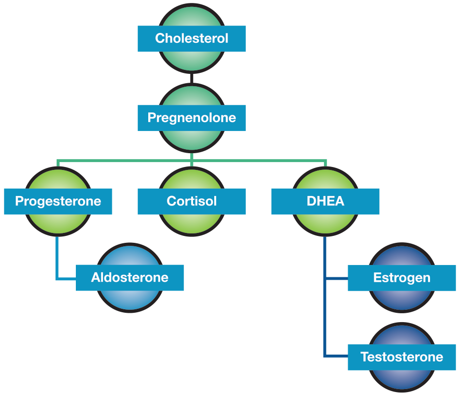
Chronic Stress
During stressful situations, the body shifts hormone production away from the progesterone/aldosterone pathway and away from the DHEA/estrogen/testosterone pathways to focus on producing cortisol. This mechanism is known as “pregnenolone steal,” where the body takes the pregnenolone normally reserved for DHEA and progesterone and puts it towards cortisol production. This is a protective way of conserving resources to help us survive stressful fight-or-flight situations like car crashes, being chased by bears, and the like.
This “reserve fuel function” is a brilliant design or evolution of the human body and is vital when we are fighting or running for our lives. However, a near-death experience is not always necessary to turn on the fight-or-flight response. Our stress response can turn on in non–life-threatening situations we find stressful like running late, being stuck in traffic, or delivering a presentation at work. This can then turn into a chronic activation of the stress response.
Your body works extra hard to keep producing more cortisol, even stopping the production of other hormones normally produced by the adrenals such as progesterone, DHEA, and testosterone. The precursor for all of these hormones and cortisol is pregnenolone. Your body will start “stealing” the pregnenolone that would normally be reserved for progesterone and DHEA production to keep up the supply of cortisol.
Chronic stress leads to three distinct stages of adrenal fatigue. In the initial stage—known as the High Cortisol Stage—the HPA is over-responsive. At this time, the total cortisol is high, and DHEA is borderline, low, or normal. Left unchanged, this stage can progress into the second stage, the Cortisol Dominant State, where DHEA is either low or borderline, and cortisol levels are normal. As this continues, the adrenals eventually become exhausted and start to burn out, progressing to the third stage—the Low Cortisol Stage. In this stage, the DHEA is either low or borderline low, and the total cortisol is low.
Putting hormone production on hold for prolonged periods of time can be quite problematic.
In beginning stages of chronic stress, blood pressure may be normal if the body adequately compensates, or it may become elevated if the body is unable to rebalance the hormonal response. In the advanced stages of adrenal fatigue, aldosterone production becomes depleted and levels of sodium and water drop, resulting in low blood pressure.
The person may also feel faint upon standing.
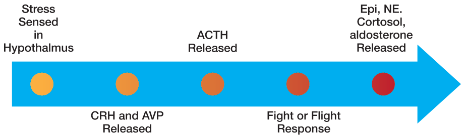
- The hypothalamus senses stress and releases the corticotropin-releasing hormone (CRH) and arginine vasopressin (AVP) hormone.
- These hormones trigger production of the adrenocorticotropic hormone (ACTH), which activates the fight-or-flight response.
- This triggers the release of norepinephrine and epinephrine from the adrenal medulla, signaling the adrenal cortex to produce cortisol and aldosterone.
- Epinephrine constricts our blood vessels and increases blood pressure to make sure our brain is receiving enough blood and oxygen to deal with the “impending danger.”
- Cortisol acts as an anti-inflammatory hormone, preventing damage from the inflammation of other substances released during stress. It has the important job of maintaining and preserving fuel to keep us going in the case of a crisis that requires energy, which it does by increasing levels of glucose through stimulating production of new glucose from the liver and causing insulin resistance. Insulin resistance helps us keep more glucose around and therefore keeps us fueled up with energy.
- The main task of aldosterone is to regulate how much fluid is stored in our bodies. Fluid volume in turn also has an effect on blood pressure. The more aldosterone we have, the more sodium and water we retain, and thus aldosterone helps keep blood pressure up.
People may become dehydrated and start craving salty foods (hello, potato chips). The level of potassium may actually become relatively higher, causing an imbalance, thus foods containing high potassium may make the person feel worse. Simply drinking more fluids results in further dilution of the sodium and exacerbates the dehydration.
Chronic stress leads to a reduction in DHEA and progesterone. These hormones are often abnormally low in individuals suffering from autoimmune diseases like inflammatory bowel disease, rheumatoid arthritis, CFS, and fibromyalgia.
Additionally, seasonal depression, post-traumatic stress disorder, hypothyroidism, asthma, and eczema have all been linked to HPA axis malfunction.
Low progesterone can lead to menstrual irregularities, infertility, uterine fibroids, fibrocystic breasts, and a shift in immune function. Progesterone regulates GABA, our “relaxation hormone,” and a deficiency in GABA can lead to anxiety, insomnia, and rumination (excessive worrying about the past).
DHEA has been touted as an anti-aging hormone and has been correlated with reversing the classic stress-induced physiological response. To make enough cortisol in stressful situations, ACTH drives elevated levels and depletes DHEA production to adapt. Without enough DHEA, the body is unable to produce sufficient testosterone, which can affect the sex drive.
While DHEA levels drop with age, various diseases—including autoimmune conditions, cancers, diabetes, heart disease, dementia, and chronic fatigue— have been associated with low DHEA. When DHEA levels are down, our immune system becomes more sensitive to pathogens and free radicals.
If secreted in excess, cortisol injures the body’s tissues. The main role of cortisol is to keep the body fueled up during a stressful time. Cortisol shifts the body into a tissue-breakdown phase (catabolic) instead of a tissue-repair phase (anabolic). Under normal conditions, there is a balance between catabolic and anabolic phases. An anabolic steroid, DHEA helps with tissue repair, counterbalancing the effects of cortisol. However, DHEA becomes depleted during the chronic stress response.
Chronic cortisol release can result in the depletion of many nutrients affecting our physiology. Cortisol releases amino acids from the muscles to help create more glucose. One of these amino acids is glutamine, which is crucial for the maintenance of the gut lining integrity and has been found to be depleted in people with leaky gut. Excessive cortisol output also causes a reduction in secretory IgA (SIgA). SIgA is secreted in various mucosal surfaces and helps with viral and toxin neutralization and stopping bacterial colonization.
Cortisol also inhibits vitamin D activity, preventing calcium absorption. This leads to the breakdown—instead of building—of bones. Cortisol also impedes detoxification due to inhibition of liver function.
In addition, prolonged cortisol can cause many issues, including more secretion of pro-inflammatory cytokines, poor wound healing, easy bruising, infertility, central obesity, and mood and memory disorders due to increased turnover of neurotransmitters.
When cortisol runs out and the rest of the body is depleted, a sickness response occurs in which fatigue, impaired cognition, sleep disturbances, anorexia, and depressed mood can occur. As cortisol has anti-inflammatory and immune-suppressive effects, the person may become more susceptible to allergies and inflammation.
Low cortisol results in a lack of suppression of sympathetic tone and catecholamines, making us more sensitive to the effects of epinephrine. We may experience anxiety, an increased sense of smell, and a heart rate that is elevated or on the higher end of normal (this should be noted as a symptom of HPA dysfunction in people with Hashimoto’s as hypothyroidism is associated with a slower heart rate).
The level of cortisol controls thyroid hormone production. Often, hypothyroid symptoms such as fatigue and low body temperature are due to an adrenal maladaptation.
What Is Stress?
Four types of stress turn on our fight-or-flight response:
- Mental/emotional stress
- Sleep disorders
- Metabolic/glycemic dysregulation
- Chronic inflammation
Mental Stress
Feelings such as grief, guilt, fear, anxiety, excitement, and embarrassment can be classified as stress. This stress is based on our perception, not on the nature of the individual stress. For example, public speaking may cause mental stress for someone with social anxiety, but another person who enjoys speaking in front of others may perceive the experience as pleasurable. Situations that are new, unpredictable, threaten the ego, or cause us to feel a loss of control are perceived as stressful.
Glycemic Burden
Researchers in Poland have found that up to 50 percent of patients with Hashimoto’s have an impaired tolerance to carbohydrates. This means that after consuming carbohydrate-rich foods, their blood sugar levels spike, causing a substantial insulin release. The role of insulin is to clear blood sugar out of our cells, so a large insulin release is followed by a rapid blood sugar drop (hypoglycemia).
Symptoms of hypoglycemia are unpleasant and may include irritability, fainting, lightheadedness, and tremors. Hypoglycemia necessitates the release of cortisol to help maintain the glucose supply to the brain and counteracts insulin, causing insulin resistance (this is also linked to the type 2 diabetes epidemic).
Sleep Disorders
Sleep deprivation is used to suppress the HPA axis in lab animals and is the fastest way to get into adrenal fatigue. Insomnia, sleep apnea, and shift work can all cause sleep deprivation. Sleep is the reset button for the HPA axis. When we sleep, the body releases human growth hormone and repairs itself. Make sure to get at least eight hours of sleep each night and be tested for sleep apnea if you snore. Sleep apnea can be a potential root cause of Hashimoto’s and adrenal fatigue.
Inflammation
Chronic inflammation may result from joint pain, obesity, toxic burden, GI tract inflammation, irritable bowel disorder, pathogens in the GI tract, or food allergies. These conditions signal cortisol for its anti-inflammatory effect.
HPA Dysfunction and Autoimmunity
Some researchers believe HPA axis dysfunction and prolonged cortisol elevation may be the cause, rather than the consequence, of autoimmune diseases. A natural steroid, cortisol suppresses cellular immunity (Th1), preventing tissue damage from excessive inflammation.
Low cortisol allows for up-regulation of cellular immunity (Th1 dominance), resulting in increased production of pro-inflammatory cytokines TNF-A, IL-6, and IL-12. During Th1 dominance, the Th2 branch (humoral immunity) is suppressed. This may lead to the person becoming more susceptible to parasites, allergens, bacteria, and toxins. Th1 dominance is often seen in autoimmune conditions.
Thus, the immune system may get thrown out of balance in times of excess cortisol production as well as when cortisol is depleted. Pregnant women’s cortisol was measured at week thirty-six of gestation. Those with low cortisol levels were more likely to develop postpartum thyroiditis.
The hormone DHEA also has effects on the immune system, increasing Th1 and decreasing Th2 cell production.
Stress, along with nutritional deficiencies and intestinal permeability, may be at the root cause of Hashimoto’s and may perpetuate the disease progression.
If your score is >10, you probably have some degree of adrenal dysfunction.
If your score is >20, it is highly probably you have adrenal dysfunction.
If your score is >30, it is nearly certain you have adrenal dysfunction.
Blood Pressure Test
People with adrenal fatigue often have low blood pressure or a drop in blood pressure after standing up from a lying or sitting position (orthostatic hypotension).
If your blood pressure is below 120/80, this may mean your adrenals are underactive or you are dehydrated.
Orthostatic Hypotension: While lying down or sitting, relax and deep-breathe for at least five minutes. Then measure your blood pressure and stand up and measure it again. Normally, you would see a rise in blood pressure. If you see a drop in blood pressure, you may be dehydrated or have underactive adrenals. Symptoms include dizziness or lightheadedness when standing up from a sitting or lying position.
Pupil Contraction
People with low adrenal function often have difficulty contracting their pupils. Usually, our pupils dilate (enlarge) in the dark and contract (shrink) in the light.
You can try the following test with a flashlight: Stand in your bathroom with the lights out for a few minutes, allowing your eyes to adjust. Shine the flashlight across your eye, keeping it perpendicular to your face (do not shine the light directly into your eyes). Watch how your pupils react.
Normally, the pupils get smaller and stay that way. If they get smaller, then bounce back and forth only to become slightly bigger again, this may be a sign of poor adrenal function. Symptoms include light sensitivity, difficulty seeing in bright lights, and having to wear sunglasses.
Unstable Temperatures
If you are keeping track of your basal temperatures, low and unstable morning temperatures may indicate adrenal insufficiency.
Hormone Testing
Adrenal hormones can be measured through blood or saliva testing. Saliva testing—which measures the “free” or available hormones of cortisol throughout the day as well as levels of DHEA, progesterone, and estrogen—is often used to detect adrenal fatigue. Blood tests may also be utilized to test for hormone deficiencies, but they do not always detect adrenal fatigue as they don’t register changes until 90 percent of the adrenal cortex has been destroyed.
Thyroid Function and the Adrenals
Excess cortisol inhibits the peripheral conversion of T4 to T3, the active thyroid hormone. At the same time, it promotes the production of reverse T3 (rT3), an inactive thyroid molecule that still has three iodine molecules—but in the wrong spaces (see Figure 12).
This molecule is able to bind the receptor sites T3 normally occupies, but it does not have the ability to unlock these receptors, thus obstructing the necessary reactions from taking place.
At the same time, cortisol blocks the release of TSH, preventing the production of more thyroid hormones. A lab test may indicate our TSH is “normal” and even our T3 and T4 are normal, but we will still experience thyroid symptoms if this occurs.
Most physicians don’t test for reverse T3, but it is readily available and can be easily added to a thyroid blood panel test.
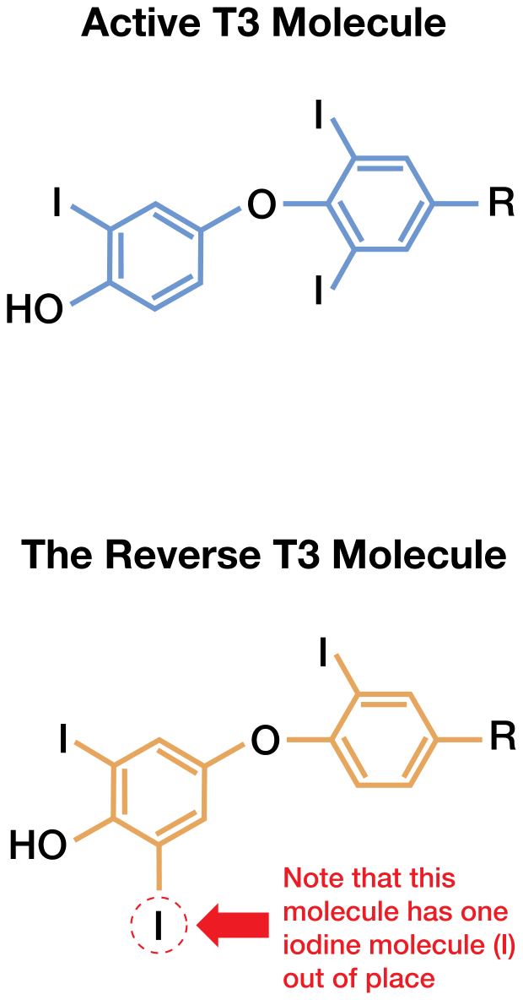
Thyroid Supplements
Once thyroid activity increases (such as with thyroid supplements or lifestyle interventions), additional stress is placed on the adrenals, resulting in a worsening of symptoms. This can make most people feel they are suffering a huge setback, despite making gains. When attempting to improve thyroid function, adrenals should always be considered in conjunction with restoring nutritional deficiencies.
Addison’s Disease
Known as Addison’s disease, full-blown adrenal insufficiency is usually not diagnosed until someone is going through an adrenal crisis (an emergency situation). Addison’s disease used to be historically associated with tuberculosis and other types of infections that destroy the adrenal glands. Today, autoimmunity is the leading cause of Addison’s, responsible for 70–90 percent of cases. Just as anti-thyroid antibodies are found in Hashimoto’s patients, corresponding anti-adrenal antibodies are found in people with Addison’s disease. The most common antibody is formed to one of the adrenal enzymes, 21-hydroxylase; up to 86 percent of patients with autoimmune adrenal insufficiency will test positive for these antibodies.
Symptoms of full-blown Addison’s include weakness, fatigue, loss of appetite, weight loss, darkening of the skin, nausea, vomiting, low blood pressure with orthostatic hypotension (dizziness when standing), muscle and joint pain, salt cravings, decreased hair growth in underarms and pubic area, and diminished sex drive in women. These symptoms are similar to those of adrenal fatigue but are more severe in most cases, sometimes requiring hospitalization. Physicians screen for adrenal fatigue by checking to see if there is an elevation of ACTH or measuring blood levels of cortisol or DHEA. Adrenal insufficiency becomes clinically manifest only after at least 90 percent of the adrenal cortex has been destroyed.
Subclinical Addison’s
People with Hashimoto’s and other autoimmune conditions are more likely to develop Addison’s.
Co-occurring Addison’s and Hashimoto’s is known as Schmidt’s disease, and any person with Hashimoto’s who has anti-adrenal antibodies should be considered to have both conditions.
People with anti-adrenal antibodies go on to develop adrenal insufficiency at a rate of 19 percent a year. Some people with the antibodies were followed for more than thirty-five years and never developed full-blown adrenal insufficiency. The concentration of autoantibodies correlates strongly with the degree of adrenal dysfunction. Most physicians, however, don’t typically screen patients with Hashimoto’s for anti-adrenal antibodies. This is very disappointing as a person’s adrenals could be breaking down without anyone realizing it.
Addison’s is not usually diagnosed until a significant amount of the adrenal glands has been destroyed by autoimmune damage, but many Hashimoto’s patients actually present with adrenal insufficiency symptoms, which are often mistaken for symptoms of hypothyroidism.
While conventional medicine does not recognize “adrenal fatigue” as a diagnosis, I would like to propose that perhaps some individuals with Hashimoto’s who have symptoms of adrenal fatigue may actually have subclinical Addison’s, in which the adrenals are in the process of being destroyed but the hormonal changes are not significant enough to be detectable on blood tests—or the body may still be compensating.
As TSH is a measure of thyroid activity, so ACTH elevation signals adrenal distress. Cortisol is the active hormone of the adrenals, just as free T3 is of the thyroid. You can have, however, normal TSH and free T3 levels and still experience hypothyroid symptoms. Accordingly, we would recommend a TPO antibody test. Just the same, it can be helpful to request a 21-hydroxylase autoantibody test despite normal ACTH and blood cortisol levels.
It is unclear whether the cause of adrenal insufficiency or subclinical Addison’s is due to depletion, down-regulation, or autoimmune origin, but it is evident adrenal and thyroid function have an impact on one another.
Treatment of HPA Dysfunction
Recovery from HPA dysfunction may take three months to two years. Treatment goals should focus on correcting the deficiencies caused by excessive cortisol production and removing HPA stressors. The use of adaptogens and glandular extracts may be helpful. In some cases, hormonal or pharmacological treatment may need to be used.
- Correcting deficiencies: cholesterol, cofactors, B vitamins, and salt
- Supplementing hormone production: adaptogens, glandulars, and hormones
- Removal of stressors: This step is the hardest but the most important.
Adrenal Depletions
Dehydration
Because many people with adrenal fatigue may have suboptimal sodium retention and hydration due to low aldosterone levels, people may become dehydrated and start craving salty foods such as potato chips. The level of potassium may actually become higher, so foods containing high potassium could make the person feel worse. Drinking more fluids will result in further dilution of the sodium.
Liberal use of non-iodized sea salt is recommended. Drinking filtered water with one teaspoon of non-iodized sea salt may also help. Homemade chicken broths with plenty of sea salt are a healthy and tasty way to rehydrate.
Cholesterol
Adrenal hormones are made from cholesterol. Adequate cholesterol is important to have in your diet. Egg yolks and meat are the richest sources of dietary cholesterol that can be eaten by people with autoimmune thyroid conditions.
Nutrient Depletion
Vitamin C and B vitamins become depleted during high cortisol production. Pantothenic acid and biotin deficiency in particular have been linked to decreased adrenal function in animals and humans. Potassium, zinc, iron, and copper also become depleted with excessive cortisol production.
People with adrenal dysfunction need to supplement the following:
- Vitamin C
- Niacin
- Pantothenic acid
- Folic acid
- Biotin
- Potassium
- Zinc
- Iron
- Copper
- Magnesium
While some may wish to obtain these supplements from natural whole-food sources due to gut issues, people with Hashimoto’s usually have an impaired ability to extract vitamins and minerals from food. I recommend taking a supplement in the beginning and continuing until gut function is restored.
Supplements are not created equally, and many multivitamin tablets have questionable absorption profiles. I don’t like recommending one-a-day– type vitamins because they don’t consider how the vitamins interact with one another. For example, vitamin C taken with iron improves the absorption of iron, while iron taken with zinc decreases the absorption of zinc. Thus, providing just the RDA of zinc when only 50 percent of it will be absorbed is not effective in overcoming a severe zinc deficiency. Some vitamins and minerals need to be taken with food to promote absorption, others on an empty stomach.
Supporting Hormone Production
Adaptogenic Herbs
Adaptogenic herbs comprise many natural herb products that supplement the body’s ability to deal with stressors. In the 1940s, Dr. Nikolai Lazarev defined adaptogen as “an agent that raises the body’s ability to resist stress by countering undesired stressors, whether physical, chemical, emotional, or biological.”
Most adaptogens have been used for thousands of years in Eastern medical practices such as Ayurveda and traditional Chinese medicine (TCM).
A variety of herbs can be used as adaptogens and can be formulated by herbalists for specific patients based on the symptoms.
To be considered an adaptogen, an herb must possess several qualities. First, it must be nontoxic to the patient at normal doses. Second, the herb should help the entire body cope with stress. Third, it should help the body to return to “normal,” regardless of how stress is currently affecting the person’s functioning. In other words, an adaptogenic herb needs to be able to both tone down overactive systems and boost underactive systems in the body. Adaptogens are thought to normalize the hypothalamic-pituitary-adrenal (HPA) axis.
Adaptogenic herbs include ashwagandha, astragalus, reishi mushroom, dang shen, eleuthero, ginseng, jiaogulan, licorice, maca, schizandra, spikenard, and suma. These are examples of herbs that may increase the body’s ability to resist stress, and they have been helpful in relieving adrenal dysfunction when used in combination with vitamins and minerals.
Licorice root extract prevents the breakdown of cortisol into inactive cortisone. Keeping cortisol around longer prevents the body from stealing pregnenolone from the production of other hormones and may help combat adrenal insufficiency. It may also be beneficial for those with low cortisol and low blood pressure. Licorice root extract should not be used by those with water retention or high blood pressure.
Adrenal-supporting supplements usually have a mix of adaptogenic herbs, and some may also contain vitamins or glandular extracts.
Supplemental Hormones
A variety of hormones and adrenal-supporting substances may be used based on the cortisol saliva test results and adrenal insufficiency stage. Although most of these hormones are available over the counter at health food stores, they are certainly not benign and should be used under the supervision of a trained professional with extreme caution. Not everyone will need all of these supplements.
One person may do fine with only glandular extracts, another may need to add DHEA, and yet a third may not need hormonal supplements at all. The approach should be highly individualized. It is especially important to start low and increase slowly with these supplements. People should start one supplement at a time at the lowest dose and then increase every few days to reach the target dose. After the first supplement has been tolerated for a week, another may be added. The doses provided here are for reference purposes and may not be appropriate for all persons and stages.
Many hormones, including cortisol and thyroid hormone, are controlled by a feedback loop system that shuts off production when levels get high. Not so with DHEA and pregnenolone—your body will keep right on making these hormones in the same amounts as before you began supplementation. In other words, taking DHEA and pregnenolone supplements will not suppress your body’s production of these hormones or cause adrenal atrophy.
Glandular Adrenal Extracts
Adrenal extracts have been used medicinally since 1931. Similar to Armour® thyroid (derived from pig thyroid glands), adrenal extracts from pig, sheep, or cow adrenal glands are made into tablet and capsule form for human ingestion. Commercially available adrenal extracts are made from the whole gland (whole or total adrenal extracts) or the outer part of the gland (adrenal cortex extracts). Adrenal extracts are usually taken one to three times daily.
These extracts are not FDA-regulated, and not all are created equally. The whole-gland adrenal extracts contain norepinephrine and epinephrine, which can cause anxiety, palpitations, and panic attacks in Hashimoto’s patients who already have too much epinephrine without enough cortisol to balance it out. Adrenal cortex extracts may be preferred for those already feeling on edge.
Adrenal extracts can cause HPA axis suppression and atrophy. This means they can turn off production of the body’s own steroid (adrenal) hormones as well as potentially thyroid hormones by pituitary feedback loop inhibition. Thus, the pituitary may stop sending messages to the adrenals and thyroid to produce more hormones. This may result in central hypothyroidism, which is an abnormally low TSH (in hyperthyroidism levels) coupled with low levels of both free T3 and T4. The person who initially feels better with adrenal glandular extract only to crash a few weeks to months later with symptoms of hypothyroidism and a “normal” or “low” TSH should be suspected of HPA axis suppression.
In this case, the adrenal glandulars need to be tapered down slowly at about a 10–20 percent reduction in dose every four days to one week. Rapid withdrawal may cause symptoms like pain, low blood pressure, extreme fatigue, nausea, and a rebound effect of the thyroid condition.
HPA suppression is more likely to occur at prolonged doses higher than the normal physiological output of adrenal hormones, especially if dosed at bedtime. Since the pituitary usually releases TSH to stimulate thyroid production at night, adrenal extracts should never be taken at bedtime.
Remember, even though they are natural, glandulars are still steroids and should be taken only under the supervision of a trained health care professional.
Pregnenolone
Pregnenolone is the precursor to many of the hormones produced by the adrenal cortex and often gets “stolen” to produce more cortisol. Pregnenolone supplements may be given to those who are low in progesterone, aldosterone, or DHEA. They should be used with extreme caution by those with who have elevated and normal levels of aldosterone or are currently experiencing fluid retention, swelling, or bloating. Unlike some of the other hormones, aldosterone production doesn’t turn off when there is too much of it, so pregnenolone may lead to aldosterone excess, which can cause fluid retention and extremity pain due to nerve compression. Any signs of fluid retention or pain warrant stopping the supplement. The fluid retention should resolve after the pregnenolone is stopped. The pain may persist for many weeks, requiring adequate rest and rehabilitation.
Progesterone
If hormone tests show low progesterone and the woman is experiencing cycle irregularities, infertility, or similar types of concerns, progesterone supplements may be employed. Again, since excess progesterone can turn into aldosterone, the same precautions pertaining to fluid retention should be exercised.
DHEA
DHEA supplementation increases stress tolerance, lowers the cortisol/DHEA ratio, and protects against cortisol-induced cellular damage. DHEA supplementation has been found to extend the lifespan of animals and has shown promise in treating a variety of conditions, including adrenal insufficiency.
Unlike pregnenolone, DHEA does not turn into aldosterone, so it will not cause fluid retention—but it may get converted into testosterone.
DHEA stimulates hair follicles and oil glands, so it may cause acne or facial hair growth in women. (Teenage acne has recently been connected to a DHEA rise that takes place near puberty.)
Additionally, some people may become more irritable and perhaps even more aggressive due to the testosterone conversion. These side effects should go away with dose reduction or discontinuation.
An active metabolite of DHEA, 7-Keto cannot be converted into testosterone, so some professionals prefer to use the 7-Keto version of DHEA to minimize side effects.
While yam extracts containing diosgenin are touted as natural sources of DHEA this form of DHEA is not bioavailable to humans. We cannot convert diosgenin from yams to active DHEA in our bodies.
DHEA levels should be tested prior to supplementing. Testing is covered by most insurance companies if ordered by a physician.
The recommended daily dose range is 10–50 mg for women and 25– 100 mg for men. (Women need less DHEA than men.) Starting low and slowly increasing should always be your approach, however. Some professionals give women even less DHEA—as low as 2–5 mg a day.
DHEA should be supplemented until the levels reach those of a 30-year-old of the same gender: 200 and 300 micrograms per deciliter of blood for women and 300 and 400 micrograms per deciliter of blood for men.
Topical Magnesium Therapy
According to Dr. Norm Shelley, MD, PhD, using topical magnesium oil can increase DHEA levels in as few as four to five weeks without having to take an oral DHEA supplement. Many of us are deficient in magnesium, and oral supplementation is not always a reliable way to increase levels. Using magnesium may be inappropriate for those with impaired kidney function, but for others, it can offer a more natural way to increase the body’s DHEA production. The magnesium oil is not technically an oil but a solution. Using 2–4 oz. in a bath or a twenty- to thirty-minute foot soak is recommended to restore intracellular magnesium levels. Epsom salt baths have also been found to increase magnesium levels.
Conventional Treatment for Addison’s Disease
Addison’s disease is diagnosed by measuring morning levels of cortisol via a blood test. If the cortisol level is low, this confirms Addison’s. Conventional treatment for Addison’s is supplementing with hormones, including prescription steroid hormones like prednisone, cortisone, and hydrocortisone. The over-the-counter DHEA supplement may also be used to treat Addison’s.
Blood tests for Addison’s are not positive until 90 percent of the adrenals are destroyed. Some people may have as much as 70 percent of their adrenal cortex destroyed but still come out “normal” on cortisol blood tests.
Some physicians may prescribe the steroid hormones used in Addison’s for people with adrenal insufficiency.
Removing Stressors
“Give me the strength to change what I can, the patience to accept what I cannot, and the wisdom to know the difference.” —Reinhold Niebuhr
We have all heard “stress is bad for your health,” but it is one of those vague statements people rarely take to heart.
Stress can take emotional forms—such as being in an unstable romantic relationship, being a high-strung person with high expectations of yourself and others, being overbooked, multitasking, or having a job you don’t enjoy. Examples of physical stress include working long hours, extreme sports, and insufficient sleep.
Although this recommendation does not require the purchase of special supplements or medications, removing stressors is often the hardest step for most people. Few of us are at liberty to quit our stressful jobs, send our teenagers off to boarding school, or purchase an airplane to forgo traffic. But we can choose how the stressors affect us. After all, it is our perception—not the stressors themselves—that determines how the HPA reacts to them.
Above all, stress is about perception. What do you perceive as stressful in your life? Write down a list of things you find stressful and note whether these stressors are things you should or could get rid of—or if you need to re-evaluate your approach to how you perceive them.
Try to avoid these stressors: pushing yourself past the point of being tired, caffeine, sugar, alcohol, flour, staying up past 11 p.m., being hard on yourself, and feeling sorry for yourself.
My daily plan includes enjoying a relaxing activity like taking a hot bath, going on a long walk, listening to soothing music, meditating, and attending a yoga class. See the chapter on Finding Your Root Cause for more on creating your own list.
Adequate Rest
Sleep is not only regenerative but crucial to adrenal recovery. Aim to go to bed by 10 p.m. every night and sleep for at least eight hours. Sleeping until 8 or 9 a.m. whenever possible may also help with the recovery process. Good bedside hygiene should be practiced. A completely dark room with all electronic devices switched off will maximize melatonin production. The use of stimulants such as coffee, caffeinated beverages, and even TV and the computer may need to be limited.
The artificial light that comes from television and computers can trick our retinas into thinking it is light outside, thus halting the production of melatonin, a hormone that promotes restful sleep. Shutting off televisions, computers, and other devices three hours before going to sleep is recommended.
People who wake up in the middle of the night and are unable to sleep may benefit from a small dose of melatonin or magnesium at bedtime.
Exercise
Mild to moderate exercise helps with recovery from adrenal insufficiency. Exercise calms the mind, reduces stress, and increases blood flow, leading to better oxygenation and detoxification throughout the body while also helping to normalize hormone levels. In addition, exercise helps stabilize blood sugar imbalances, and people may find they are less likely to have blood sugar spikes when eating carbohydrates right after exercise.
For those currently sedentary, setting a goal of walking 20 minutes a week or going to one weekly yoga class would be a great start, gradually increasing to three times a week.
Extreme exercise such as training for a marathon or triathlon may be too demanding for someone undergoing adrenal fatigue. Such activities may need to be postponed until after recovery.
Stimulants
Coffee, alcohol, and tea (except herbal tea) may need to be avoided. Caffeine stimulates ACTH, which in turn stimulates the adrenals and cortisol production.
Blood Sugar Imbalances
Balancing blood sugar levels should be a priority for anyone hoping to overcome autoimmune thyroiditis and adrenal fatigue.
Insulin is released to lower our blood sugar levels. We have learned that many people with Hashimoto’s have an impaired tolerance to carbohydrates. Their blood sugar goes up too high too quickly after eating carbohydrates. This leads to a rapid, sometimes excessive release of insulin. These insulin surges can cause low blood sugar (reactive hypoglycemia), which can lead to unpleasant symptoms such as nervousness, lightheadedness, anxiety, and fatigue.
Reactive hypoglycemia is a stressor for the adrenals.
Cortisol is released when the adrenals become stressed, and excess release of cortisol can also produce an overactive Th2 immune system. If this pattern of excessively high and then low blood sugar keeps occurring, we may develop insulin resistance. Insulin resistance leads to type 2 diabetes, another American epidemic.
What Puts Us at Risk for Having a Blood Sugar Imbalance?
Unfortunately, the Standard American Diet (SAD) is perfectly designed to produce an epidemic of people with diabetes and autoimmune conditions.
Living a fast-paced lifestyle that includes skipping breakfast; having “liquid” lunches; consuming a high-carbohydrate, low-fat diet; and consuming excessive sugar is the norm. It’s not our fault.
Unfortunately, there is a lack of education on the topic of nutritious eating. This essential should be taught alongside history, math, and English from an early age. Instead, Americans rely on commercials and marketing to tell them what is healthy and what is not. For example, Subway subs, Yoplait yogurt, and Gatorade are marketed as healthy and nutritious, even though they are full of sugar!
During pharmacy school, we learned about nutrient requirements in our first-year Biochemistry course. I was shocked to learn carbohydrates were not a required nutrient, whereas fat was required for normal cell function! Based on my previous nutritional knowledge gathered from store displays, the USDA Food Pyramid, and Subway commercials, I was led to believe carbohydrates were the most important dietary component and that fats needed to be avoided entirely.
I am sure I was not the only person misled by the “low- fat” labeling of foods and the prominent placement of carbohydrates at the base of the food pyramid. Fortunately, the new USDA MyPlate no longer encourages people to eat the equivalent of one loaf of bread on a daily basis. However, we still have a long way to go.
This is evident in the number of people seen with diabetes, obesity, and chronic disease in the United States. Our fat-phobic society has been on a fat-free craze, without realizing excess fat does not turn into fat (rather, it turns into an unpleasant case of diarrhea), while excess carbohydrates are stored as … fat!
Every system is perfectly designed to achieve the results it gets. Thus, our society is designed to produce an epidemic of people suffering from diabetes, obesity, and chronic diseases. Perhaps we need to redefine our recommendations to produce better results.
What Is the Glycemic Index?
The glycemic index is a measure of how quickly food becomes assimilated into our bodies. You can also think of it as our “burn” rate—in other words, how quickly we burn the fuel we receive from these foods.
Carbohydrates have a very fast burn rate. They quickly become assimilated into our bodies, which causes a rapid spike in blood sugar. After eating carbohydrates, we become hungry again after less than an hour.
Fat and protein have a slower burn rate. They become assimilated into our bodies more slowly and and don’t raise blood sugar levels as quickly. They also keep us full longer. Assuming sufficient calories are eaten to make one feel full, a person will become hungry two to three hours after eating protein and four hours after eating fat.
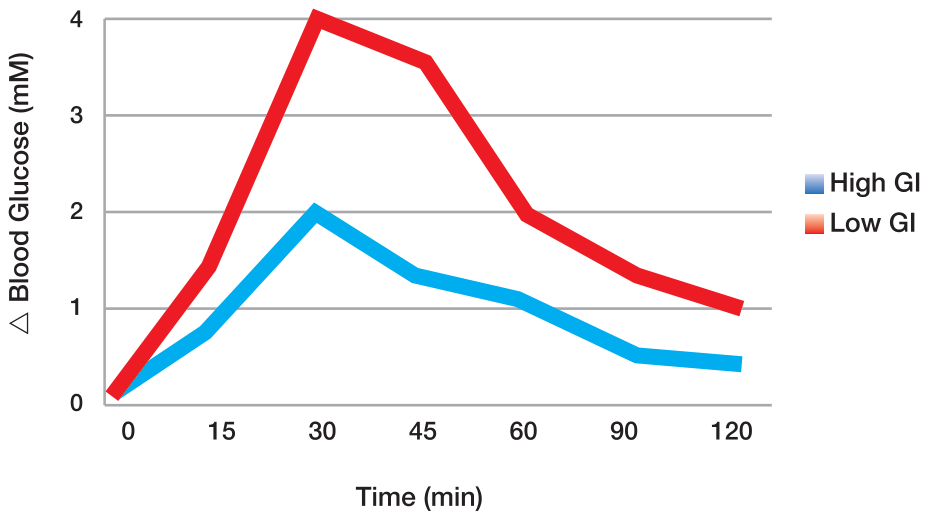
Achieving Blood Sugar Balance
While treating advanced cases of glucose metabolism dysregulation such as diabetes is beyond the scope of this book, healthy eating that promotes a stable blood sugar is a necessary component of preventing and treating both diabetes and hypothyroidism.
Eating a low glycemic index diet helps us feel full longer; improves cholesterol levels, blood sugar levels, cognitive performance, and energy; and reduces acne. It also decreases your risk of developing diabetes, heart disease, and some cancers while promoting weight loss for those who are overweight. Many people have also found their moods improve after balancing their blood sugar.
The following quick reference chart can make balancing your blood sugar much easier.
| Type of Food | Until You Are Hungry Again |
|---|---|
| Protein | 2–3 hours |
| Fat | 4 hours |
| Carbohydrate | 45 minutes–1 hour |
Glycemic Index
The glycemic index of foods can be referenced at glycemicindex.com. Foods with a glycemic index of less than 55 are considered to have a low glycemic index. These include most non-starchy vegetables, meats, nuts, seeds, and some whole grains. Fruits with less fructose (“sour” fruit such as grapefruit, lemons, limes, and cranberries) also have a low glycemic index (for a guide on fruit, please see the Fructose section in the Diet chapter of this book).
Foods with a glycemic index above 55 are considered high glycemic index foods and include processed grains, sugar, starchy vegetables like potatoes, and sweet fruit like watermelon.
People with blood sugar issues are advised to limit foods with a glycemic index over 55 or to combine the foods with a source of fat or protein, which slows down the ability of the food to increase blood sugar. Starchy carbohydrates that are converted quickly into glucose (e.g., pasta, bread, potato, white rice, and banana) should be limited. Soda drinks should be completely avoided.
Fruits are a great source of vitamins and nutrients. However, in the initial phase of balancing blood sugar, one should abstain from eating high glycemic index fruits unless they are in combination with protein and/or fat. Low glycemic index fruit options should be eaten in preference.
Combining carbohydrates with protein can slow down the glycemic impact of the carbohydrates. A ratio of no larger than two servings of carbohydrate to one serving of protein should be consumed. For example, if you are having 4 grams of steak, you should have a maximum of 8 grams of potatoes.
Flaxseed and copper can help with balancing blood sugar.
Snacks
Some healthy snacks to consider include nuts, seeds, boiled eggs, homemade jerky, and protein shakes.
Note: You may find you are intolerant to some of these when you do the elimination diet, so do not invest in Costco-sized jugs just yet.
Rethink Your Breakfast
| Typical SAD Breakfast | Happy Breakfast |
|---|---|
| Orange juice | Eggs and bacon |
| Bagel with cream cheese | Herbal tea with stevia |
| Coffee with sugar | Grapefruit |
Hashimoto’s Carbohydrate Metabolism Abnormalities
Some people with Hashimoto’s may be unable to tolerate any fruit or starchy vegetables, especially at first. Up to 50 percent of people with Hashimoto’s were found to have abnormalities in carbohydrate metabolism.
After carbohydrate consumption, blood sugar levels increase, which triggers insulin release to normalize blood sugar levels. Reactive hypoglycemia is an excessive release of insulin within four hours of eating carbohydrates, which leads to low blood sugar levels.
Symptoms of low blood sugar may include mental fog, blurry vision, sleeping difficulties, palpitations, fatigue, dizziness, sweating, headaches, depression, irritability, anxiety, sweet cravings, stuffy nose, panic attacks, numb/cold extremities, confusion, nausea, and hunger.
Low blood sugar levels are defined as <50 mg/dL, but some people may experience symptoms of low blood sugar at even higher levels. (Normal fasting ranges of blood sugar vary between 70 and 100 mg/dL.)
Adrenergic Postprandial Syndrome
When our blood sugar gets too low, a counter-regulatory response from our autonomic adrenergic system occurs. Epinephrine and glucagon are released to counteract the low blood sugar when blood sugar drops below 50 mg/dL. In people with adrenergic postprandial syndrome, epinephrine and glucagon may be released at higher blood sugar levels. These individuals experience the same unpleasant symptoms of hypoglycemia due to the epinephrine, but their actual blood sugar levels may come out normal.
Nighttime Symptoms
A hypoglycemic state can occur in the middle of the night. People may experience night sweats, nightmares, and anxiety, or the person may have no symptoms at all. This hypoglycemia causes the adrenals to create more cortisol to raise the blood sugar back to normal, and cortisol winds up depleted by morning, leading to difficulty waking up. Drinking tea with coconut oil at bedtime may be helpful.
Treatment
The treatment for reactive hypoglycemia and postprandial syndrome consists of a low-carbohydrate diet with frequent smaller meals. Small meals should be added in mid-morning and afternoon, when blood sugar starts to decline.
A no-carbohydrate/low-carbohydrate diet was made popular by Dr. Robert Atkins. In this type of diet, the body relies on fats instead of carbohydrates for energy. Breaking down fats keeps glucose levels much more stable as compared with the carbohydrate breakdown process, and it creates ketones.
Known as “ketogenic diets,” Atkins and similar diets may help combat reactive hypoglycemia, and they have also proven helpful in other conditions ranging from mood disorders to epilepsy. Ketogenic diets generally limit carbohydrates from fruit, grains, and starches to fewer than 15 grams a day. Instead, they focus on meats, eggs, fats, and vegetables. Liberal amounts of coconut oil are also used with ketogenic diets. Coconut oil can be added to tea and sipped between meals. The classic ketogenic diet contains a 4:1 ratio by weight of fat to combined protein and carbohydrates.
As a caution, fasting diets and ultra-low carb diets may appear helpful for healing in the short-term but may be inappropriate for those with thyroid issues, especially over a prolonged period.
Fasting and insufficient carbohydrates can trigger the release of reverse T3, leading to those pesky hypothyroid symptoms in light of “normal” lab values.
Perhaps reverse T3 induces a “hibernation” state that once helped us survive long winters as cavemen and women by preserving our metabolic function when we couldn’t drive down to the market and only had limited amounts of food available.
Most people report feeling energetic after starting a ketogenic diet, which may last from days to months, or even years for some. However, others— especially athletes and active individuals—may lose the energetic feeling and start to feel exhausted.
This is a sign that your body may need more carbohydrates. It does not mean, however, you should go back to eating pizza and soda three times a day! Keeping in mind blood sugar balancing rules, you can begin to add fruit, and if your gut healing is complete, incorporation of safe whole grains (e.g., quinoa, buckwheat, wild/brown rice) may be beneficial as you continue to nourish your body with organic meats, fats, and vegetables.
Caution for Vegans/Vegetarians
Recovering from adrenal fatigue and hypothyroidism when following a vegetarian diet is challenging since vegetarian diets are often carbohydrate-heavy.
Vegetarian protein sources such as legumes (beans), dairy, grains, soy, and some seeds may be incompatible with trying to heal a leaky gut, which is almost always present with Hashimoto’s. Pea protein is an alternative that may be easier to digest and is less likely to cause food sensitivities (I like the NOW Foods brand).
Eggs, some seeds, and nuts would be the preferred sources of protein for vegetarians, but some people with Hashimoto’s may be intolerant to those as well, especially in the early stages of a healing diet.
Maintaining a vegan diet is even more challenging. Nuts and seeds would be the go-to source of protein, but many find them difficult to digest at the beginning of their thyroid healing journeys.
Chapter Summary
- Adrenal dysfunction is closely related to thyroid dysfunction.
- Chronic stress leads to adrenal dysfunction, which results in hormone and nutrient depletion.
- DHEA is often low in autoimmune conditions.
- Addison’s is full-blown adrenal failure and is often caused by an autoimmune condition.
- Inflammation and blood sugar imbalances contribute to adrenal dysfunction.
- Eating fat and protein with every meal and limiting carbohydrates helps stabilize blood sugar and improve adrenal function.
- Vitamins (especially vitamin C), adaptogens, and PMG can be used to help recover adrenal function.
- Glandulars and hormones can also be used but are associated with risks.
14. Triggers
“Healing is a matter of time, but it is sometimes also a matter of opportunity.”
—Hippocrates
A variety of environmental triggers has been implicated in causing the development of Hashimoto’s. We have already discussed how nutrient depletions, iodine excess, infections, adrenal dysfunction, and toxins can cause the initial thyroid inflammation that sets off a vicious cycle when the immune system is imbalanced. The immune system becomes imbalanced in the presence of increased intestinal permeability, which seems to be the common thread between most autoimmune conditions.
Additional triggers that may contribute to Hashimoto’s are hormonal imbalances, periodontitis, and viral triggers.
Hormone Imbalances
Pregnancy
Pregnancy stimulates a shift from Th1 to Th2 dominance. This may explain why certain autoimmune conditions go into remission during pregnancy and why others are triggered by pregnancy.
As environmental/seasonal allergies are associated with Th2 dominance, this explains why many women report having increased allergies to pollens and other environmental allergies during pregnancy.
T regulatory cells also increase during pregnancy to keep the immune system from attacking the developing fetus.
TPO and Tg antibodies decrease in pregnant women, reaching their lowest levels during the third trimester. There is, however, a rapid decrease in Tregs postpartum, resulting in a rebound of antibodies following delivery. Additionally, TPOAb have been observed to increase six weeks postpartum, reaching previous levels at twelve weeks and maximum levels twenty weeks post-delivery.
Pregnancy has also been identified as a trigger for autoimmune destruction of the thyroid. Some women have a transient postpartum autoimmune thyroid after giving birth; 80 percent of those women spontaneously regain normal thyroid function, but 20 percent go on to develop Hashimoto’s.
During pregnancy, fetal thyroid cells can get into maternal thyroid cells. In some cases, these fetal cells can be found in the maternal thyroid for many years after the baby is born. There is a new theory that if the fetal cells persist after birth, this causes a graft-versus-host response. Since the immune system is no longer suppressed by pregnancy Tregs, it begins to recognize the fetal cells as foreign. This theory is still hypothetical, however, and has not been confirmed.
An alternate, more likely possibility is that nutrient depletions that occur during pregnancy trigger thyroid inflammation. It is widely known that nutrient requirements increase during pregnancy, and pregnant women are advised to take prenatal vitamins. Women with TPO antibodies who supplemented 200 mcg selenium during pregnancy were found to have lower TPO antibodies during pregnancy and after giving birth as compared with those who did not take selenium.
Additionally, only 28.6 percent of the selenium group developed postpartum thyroiditis as compared with 48.6 percent of the group that did not take selenium.
Ultrasound monitoring showed the thyroid appearance remained stable in the selenium group, while the group that did not take selenium showed thyroid tissue destruction on ultrasound.
Ideally, women should try to uncover their triggers before becoming pregnant, although this is not always realistic. Immune modulation is contraindicated during pregnancy, but adequate nutrition and perhaps selenium supplementation may improve outcomes. Thyroid hormone requirements also go up during pregnancy, thus close monitoring of thyroid function is recommended for those with Hashimoto’s.
Oral Contraceptives
In addition to pregnancy, oral contraceptives (which produce a sort of “pseudo-pregnancy” due to the mix of hormones taken) stimulate a shift from Th1 to Th2. Similar changes in immune function may appear after stopping or starting oral contraceptives. As discussed in the Depletions chapter, oral contraceptives may cause depletions in our own endogenous hormones as well as in vitamins, minerals, and beneficial bacteria.
But what are the alternatives for women who do not want to get pregnant? I had been using birth control pills for many years and knew I was not ready to get pregnant, but I also knew I had to kick the birth control habit. Condoms have a 14 to 15 percent failure rate. That can be too big of a risk to take. I’m not too crazy about implants or any of the IUDs, either.
I then learned about the Fertility Awareness Method.
This method utilizes knowledge of the female reproductive cycle to predict the days a woman will be fertile and the days she isn’t. There are only six days a woman can get pregnant within every cycle.
With a typical menstrual cycle lasting twenty-eight days (count day one as the first day of the menstrual period), on average, women ovulate somewhere in the middle. But not every woman has a twenty-eight-day cycle. Also, not every woman with a twenty-eight-day cycle ovulates right smack in the middle of the cycle. And many women may ovulate at different times each month, depending on lifestyle factors.
Fertilization can occur five days before ovulation or on the day of ovulation. Thus at the beginning and end of a menstrual cycle, a woman is typically infertile. She is fertile for six days somewhere in the middle after she ovulates.
A thermal shift in basal temperatures, cervical position, and cervical fluids help determine ovulation.
Our temperatures go up by 0.4–0.6 degrees Fahrenheit after ovulation, and this thermal shift can be measured by using a highly sensitive basal thermometer right after waking up. The temperatures, along with the other fertility signs, are recorded daily in a fertility chart to help the woman analyze where she is in the fertility cycle.
As a bonus, measuring basal temperatures can help with measuring progress in Hashimoto’s treatment. Pre-ovulatory temperatures (usually the first ten to fifteen days of the cycle) indicate how well the thyroid and adrenals are performing.
A pre-ovulatory temperature is normally between 97.0 and 97.7 degrees Fahrenheit. Temperatures that are consistently lower than 97.3 degrees F may signal an underactive thyroid, while temps consistently above 97.7 degrees F may signal an overactive thyroid. Also, temperatures that are low but inconsistent or all over the place may signal adrenal insufficiency. You can document your interventions on the same fertility chart where you document the daily temperatures and fertility signs.
I highly recommend the book Taking Charge of Your Fertility, which gives an amazingly descriptive and thorough overview of the Fertility Awareness Method for pregnancy prevention and achievement. After reading this book cover to cover, I have purchased a copy for all of my girlfriends!
While the Fertility Awareness Method can be very effective, I was still worried about doing it on my own. This method can fail in 25 percent of “typical” users, and I was afraid that I would fall into that category with my busy lifestyle.
That’s when I found the Lady-Comp fertility monitor! This mini-computer/alarm system comes with an ultra-sensitive thermometer. It learns your body’s normal temperatures and performs the analysis for you, letting you know which days you are fertile with easy-to-read displays (red light=fertile; yellow light=learning; green light=infertile). If you are super-nerdy like me, you can still make your own charts.
I have been using the Lady-Comp for over a year now, and it has been a really amazing tool that has taught me a great deal about my body. It has been an eye-opener watching my temperatures change as well as noticing that all of a sudden my husband smelled really, really good after a jog around the time of my ovulation, which is usually day seventeen or eighteen for me, not fourteen as some would lead you to believe.
According to the manufacturer, “Lady-Comp is programmed with all natural family planning research data, it contains a database of more than 900,000 cycles and uses bio-mathematical forecasting calculations as well as the very latest computer techniques. It is a personal fertility monitor, which learns and adjusts to your individual cycle regardless of irregularities or cycle length. Several clinical studies confirm its 99.3 percent accuracy.”
While this mini-computer is costly, fertility monitors are covered under Flex Spending and Health Spending accounts. Good to know for those who “use it or lose it” at the end of the year or want to plan for next year. It is also a one-time purchase. One month of brand-name birth control pills can cost upwards of $100, so the monitor pays for itself within a few months! (I included this last sentence for those of you who have husbands who work in finance, like mine does.)
This monitor can also be used to plan a future pregnancy when the time is right!
Of course, if the benefits of oral contraceptives outweigh the risks, such as for certain serious medical conditions, a woman may need to continue taking the pill. In that case, supplementing with probiotics, magnesium, zinc, minerals, B vitamins, and vitamin C is strongly recommended.
Female Sex Hormones
Estrogen
Estrogen has been found to perpetuate inflammatory and autoimmune disease, while progesterone deficiency and estrogen fluctuations can worsen the autoimmune attack.
Estrogen appears to enhance Th1 activity, whereas androgens (DHEA, testosterone) and progesterone suppress Th1. A certain estrogen metabolite, known as 16a-hydroxyestrone (16a-OHE), has been implicated in proliferating autoimmune disease and has been found in excess in those with autoimmunity.
Progesterone
Progesterone deficiency can surge into Th1 dominance. This explains why the peak onset of Hashimoto’s occurs during menopause, when the body’s progesterone drops, or after pregnancy, when a rapid drop in progesterone occurs after the delivery.
Hormonal imbalances help explain why women are affected by autoimmune conditions more often than men. Other substances, such as hormones in non-organic meats, endocrine-disrupting chemicals found in personal care products, and estrogenic activity of soy products, can induce estrogen dominance and thus worsen or perpetuate autoimmunity.
Increasing fiber intake may also help eliminate excess circulating hormones.
Oftentimes, cutting out gluten, stabilizing blood sugar, getting proper nutrition, stopping birth control pills, and rebalancing the adrenals can rebalance estrogen and progesterone.
In other cases, more advanced strategies may need to be employed, such as additional lifestyle interventions, targeted supplements, or bio-identical hormones.
Many of the adrenal tests may be helpful in uncovering abnormalities in female hormones as well.
For a comprehensive book on lifestyle modifications, supplements, and medications that can help rebalance female sex hormones, I highly recommend The Hormone Cure by Dr. Sara Gottfried.
Periodontitis
Periodontitis is an inflammation of the gums that can lead to receding gums, loose teeth, and eventually tooth loss. Periodontitis is often found in Hashimoto’s patients and can be worsened by fluoride, the very substance added to our waters and toothpastes to prevent tooth decay.
The mechanism is as follows:
- Plaque builds up on the teeth from bacteria in the mouth.
- Bacteria triggers an autoimmune response from the body, resulting in gum inflammation.
Symptoms
- Bleeding gums
- Puffy gums
- Receding gums
- Plaque buildup on teeth
- Loose teeth
- Bad breath
This bacterial imbalance in the mouth has been suggested as a contributor to rheumatoid arthritis and Hashimoto’s. Periodontitis has also been shown to increase IL-6, a Th1 inflammatory marker in the body.
Changing our diet from a carbohydrate-based diet and starting fermented foods and probiotics will be helpful in rebalancing the bacteria, reducing the gram-negative bacteria, and increasing the gram-positive bacteria in both the mouth and the intestines.
Dr. Weston A. Price was a dentist who studied the effects of diet on dentition. He found that those who ate traditional diets had far better teeth and excellent health (no heart disease, autoimmune conditions, or obesity) as compared with counterparts who had similar genetic backgrounds but who ate Western diets.
Gram-negative bacteria adhere to teeth, making it difficult to remove them with saliva and brushing. Eating alkalizing and fermented foods, performing oil pulling, and drinking cranberry juice may help displace bacteria from your teeth.
Oil pulling is an old Ayurvedic remedy that involves swishing around one tablespoon of sesame oil in the mouth and between the teeth. This is done first thing in the morning for five to twenty minutes, until the oil turns white. In theory, this method helps break down the bacteria’s “homes,” usually made of microcapsules of oil. While water cannot penetrate those microcapsules, sesame oil can, and it mixes readily with the bacteria, becoming white in color. After five to twenty minutes, the oil is spat out along with the toxins in it. Other oils have also been suggested, but sesame oil is the most commonly used.
Cranberry juice has been found to have anti-adhesion properties and is able to dissolve the protective coats that store the bacteria as well.
Doxycycline is an antibiotic used for periodontitis. Interestingly, this same antibiotic has been reported to eliminate TPO antibodies for some, and it may be an option to consider in someone with both Hashimoto’s and periodontitis.
Chronic Viral Infections
Western Lifestyle and Autoimmune Conditions
The “old friends” hypothesis proposes that Treg cells do not develop correctly because they are not exposed to parasites and other benign organisms that have coexisted with humans and coevolved with us to “teach” our immune system how to respond to threats.
In our modern-day world, where we receive vaccines, use antibacterial soaps, and take antibiotics, we are exposed to far fewer forms of bacteria, viruses, and parasites. This, of course, has many benefits, especially in the case of becoming affected with serious infections. It appears, however, that we may also be missing out on exposure to organisms that may perhaps have had a beneficial effect on our immune system.
Autoimmune conditions and allergies are rare in developing countries plagued by parasites. This has led to another autoimmune theory known as the hygiene hypothesis. According to this theory, our immune system becomes “bored” as a result of not having enough parasites to attack, so it instead acts out against benign subjects like pollen and our own cells.
This theory is further supported by the suppression of certain autoimmune flares through the introduction of helminth (tapeworm) therapy. While I am not proposing that anyone give themselves a parasite in order to suppress their autoimmune condition, we need to consider the effects that certain substances can have in either promotion or suppression of autoimmunity.
Researchers found helminths can regulate various cytokines and downregulate inflammation, which is associated with the development of autoimmune conditions.
The timing of infection may also matter as well. For example, children in developing countries usually contract the Epstein-Barr virus when they are under the age of ten. This usually results in an asymptomatic infection, meaning it does not cause any symptoms. In contrast, in developed countries, where individuals are not usually exposed to the virus until they are in high school or college, the infection is symptomatic in 50 percent of the older kids affected. This is because by the time we reach college age, CD8+ T cells (the ones that fight EBV) have declined by threefold as compared with the number of cells we had in childhood.
Overcoming Chronic Viral Infections
Some infections, like Yersinia, may be easily treated with antibiotics. Candida can be treated with an anti-Candida diet and antifungal herbs or medications. Parasites can be treated with anti-parasitic medications and/or herbs.
As a virus, Epstein-Barr is more challenging to treat with Western medicine. Current antiviral medications do not impact Epstein-Barr in its latent form.
Viruses invade healthy host cells. As the viruses multiply inside our cells, the cells burst, allowing the virus to infect additional cells. Thus, viruses are known as “intracellular” pathogens. A Th1 response should be initiated in response to a virus, but some viruses trick our immune system.
Herpes viruses like EBV survive in our bodies by making proteins that suppress the Th1 response. These proteins are similar to naturally occurring cytokines, and the body may not recognize that they are coming from the virus. The immune system does not make a strong enough Th1 response, and the virus becomes concealed in the body, leading to a hidden chronic viral infection and increasing the virus’s chances of survival.
Many of us have been exposed to viral infections and thus have many dormant viruses residing in our bodies. These viruses may live in harmony with the rest of the microbes, or they may become problematic.
Treating autoimmunity may be another approach to take when we are unable to go after individual infections.
A proposed approach would be to first normalize immune function through healing intestinal permeability, gut ecology, and supporting adrenal health, which strengthens the immune system and helps the body keep the opportunistic viruses, bacteria, fungi, and parasites under control instead of attacking them one at a time.
Animal fat, broths, soups, and stews support the body’s ability to suppress the viruses. Monolaurin/lauric acid, one of the components of coconut oil, has been found to be active against the Epstein-Barr virus. Replication of many viruses, including Epstein-Barr, is inhibited by glycyrrhizic acid, an active component of licorice root. Quercetin, co-enzyme Q10, n-acetyl cysteine, and glutathione were also reported to help fight chronic fatigue syndrome because of their antiviral properties.
Taking the amino acid lysine at 4–6 grams a day can help support the immune system in controlling viral pathogens.
In contrast, Th2 and potentially Treg-stimulating substances may allow the virus to become more active. Eating citrus fruits, nuts, chocolate, coffee, and too many fresh fruits may allow the viruses to proliferate.
In many cases, viral infections learn to live in harmony with the rest of our bodies once the gut and adrenal function have been optimized. If Hashimoto’s persists after gut and adrenal function has been restored and if all other triggers have been eliminated, the next step should be to test for viral infections.
Another hypothetical approach may be strengthening the Th1 branch as this strengthens the virus-killing immune response. As this has the potential to worsen autoimmunity, however, it may be akin to cutting off your nose to spite your face!
Marshall Protocol
The Marshall Protocol, developed by Trevor Marshall, PhD, is a multiyear treatment for autoimmune conditions of the Th1 variety. It includes pulsed doses of antibiotics; high doses of the blood pressure medication Benicar®; and avoidance of vitamin D, sunlight, and soy for a period of one to five years.
Our immune system depends on vitamin D for proper immune system function. Dr. Marshall proposes that only endogenous vitamin D (1,25- dihydroxyvitamin-D)—the kind produced by our bodies from cholesterol—is effective at modulating the immune system and that vitamin D from the sun and supplements can be detrimental. According to Dr. Marshall’s theory, supplemental vitamin D and its metabolites cause the immune system to function improperly. Additionally, pathogenic organisms can “hijack” the vitamin D receptor in our bodies, shutting down our vitamin D production.
A vitamin D receptor agonist, Benicar® reactivates the vitamin D receptor to produce endogenous vitamin D that correctly modulates the immune system. Measuring vitamin D levels before starting the program determines whether the person will benefit from the Marshall Protocol.
In 2008, it was reported that out of a cohort of twenty-four Hashimoto’s patients undergoing the Marshall Protocol, seven of the nine patients improved in their first year of treatment, while two showed intermediate improvement. Three of five patients improved during the second year, and six out of the ten beyond their second year improved. Two patients did not improve in their second year of treatment, while a third did not improve beyond two years. The researchers were not certain whether these were treatment failures or the patients needed longer treatment.
This approach may be useful for people whose autoimmune conditions are triggered by a viral infection.
However, I have many concerns regarding this treatment for Hashimoto’s patients, who often have adrenal fatigue and gut issues.
- Adrenal fatigue results in low blood pressure, which can be worsened to dangerous levels with Benicar®, a medication used to reduce blood pressure.
- More antibiotics can cause further gut dysbiosis.
- People experience months to years of unpleasant die-off reactions.
- The protocol was originally designed for sarcoidosis, a different autoimmune condition with a unique profile.
- The published results are questionable, citing “improvement” as an indicator instead of presenting hard data like “TPO antibodies decreased,” “TSH normalized,” “symptom resolution,” and other standard measurements of Hashimoto’s.
I have not personally tried this protocol because of my conviction that an ancestral lifestyle focused on nutrient-dense foods and stress avoidance as well as plenty of sunlight is most complementary to our genes and should be used as part of a comprehensive plan to overcome most autoimmune conditions.
While the Marshall Protocol may seem like an interesting option for those with a viral Hashimoto’s trigger who have not had an optimal response to the lifestyle modifications discussed in this book or prefer to take medications and avoid sunlight instead of changing their diet, the results are not all that promising. The protocol itself can be dangerous and must be conducted under the supervision of a trained clinician.
In addition to the triggers discussed in this book, there may be additional triggers that have not yet been identified. Perhaps you will discover you have a unique trigger.
Chapter Summary
- Hormonal imbalances may trigger Hashimoto’s.
- Selenium supplementation during pregnancy is helpful in preventing the occurrence of post-partum thyroiditis.
- Natural family planning methods can help women kick the birth control habit.
- Female sex hormones can contribute to immune imbalance but should normalize with proper care.
- Oil pulling, cranberry juice, and doxycycline may be helpful for reducing detrimental bacteria in the mouth.
- Chronic viral infections hide out in our bodies in the dormant state.
- Strengthening the immune system may help overcome Hashimoto’s if it is triggered by chronic dormant infection.
- The Marshall Protocol is an alternative protocol for Th1-dominant autoimmune conditions but may be dangerous.
15. Intolerances
“One man’s meat is another man’s poison.”
—Lucretius (Roman philosopher and poet)
A food intolerance is different from a food allergy. Although both types of reactions are mediated by the immune system, completely different mechanisms are involved.
IgE Food Reaction
Classified as a type I hypersensitivity, a food allergy is mediated by immunoglobulin E (IgE) and manifests as hives and difficulty breathing. It is considered an immediate type of reaction. IgE allergies are also associated with allergies to medications like penicillin; bee stings; nuts; and shellfish as well as those pesky seasonal allergies we have to pollen and ragweed. The most accurate test for these types of allergies is a skin test in which an allergist scratches the surface of the skin with the allergen and observes for rashes to see if the person is reactive to the substance. Blood tests are also available but are less sensitive. This type of allergy is often called a “true allergy” by medical professionals.
This terminology is a misnomer, however, and suggests only IgE allergies exist and that reactions mediated by different parts of the immune system are nonexistent. Challenge any medical professional to review their Immunology course notes, and they will find there are additional types of hypersensitivities just as “true” and “real” as IgE anaphylactic reactions. The two relevant hypersensitivities are mediated by immunoglobulins A and G, IgA and IgG respectively.
For lack of better terminology, IgA and IgG hypersensitivities have been labeled as “food intolerance” or “food sensitivity,” but they are much different in their mechanism and propensity to cause harm in the body.
IgA Food Reactions (Celiac-Like)
IgA food intolerance is the more severe reaction and works primarily in the intestines. Occurring in genetically predisposed individuals, it is an abnormal response of the intestines to certain foods. These intolerances may manifest early in childhood or later in life.
IgA food intolerance results in irritation and inflammation of the intestinal tract every time that particular food is consumed. This damages the intestines, causing an eventual inability to absorb nutrients, and can increase the risk of autoimmune diseases and cancer as well as accelerating aging through increased intestinal permeability.
IgA food intolerances may be asymptomatic, or they may present with the following symptoms: diarrhea, loose stools, constipation, acid reflux, malabsorption of nutrients from foods, and increased intestinal permeability.
They may cause IBS, gas, nausea, skin rashes (including eczema), acne, respiratory conditions such as asthma, nasal congestion, headache, irritability, and vitamin or mineral deficiencies.
The most well-known IgA food reaction has been called celiac disease and is an intolerance to gluten, the protein found in wheat. However, dairy protein, egg, and soy protein IgA intolerances are also extremely common in those with Hashimoto’s. These IgA food intolerances do not have a specific name and are often confused with less severe food absorption syndromes.
For example, when I told my well-educated pharmacist friend I had a dairy intolerance, she said, “Oh, I’m lactose-intolerant, too. Can’t you just take Lactaid®?”
Of course, lactose intolerance and dairy protein intolerance are two completely different things. Lactose is a milk sugar, and the ability to digest lactose depends on having the lactase enzyme or intestinal bacteria that digest the milk sugar. Lactose intolerance can cause bloating, diarrhea, and other symptoms but does not cause intestinal tissue inflammation or damage.
A more accurate description of an IgA food reaction may be Protein-Mediated Autoimmune Intestinal Inflammatory Reaction (PAIR).
| Food | Reactive Proteins |
|---|---|
| Wheat, rye, barley | Gluten |
| Dairy | Casein, whey (alpha and beta lactoalbumins) |
| Eggs | Ovo-albumin |
| Soy | Glycinins A5 and B3 |
People with Hashimoto’s may have one or multiple PAIR intolerances but be clueless as to the affect of these substances on their well-being. This is because the reactions are not always immediate, and as we continue eating these foods over time, the body’s response to them dulls. Eliminating the foods for a period of time followed by a re-challenge unmasks the response. Lifelong avoidance of PAIRs may be necessary for most people, but some have been able to reintroduce these foods after following programs like the GAPS or SCD diet for one to two years.
Lab testing for PAIR intolerances is performed through a blood or saliva IgA test. IgA is a type of antibody secreted in the intestines. The four most common PAIRs are to gluten, dairy, eggs, and soy. Many physicians are unaware of these types of tests and instead order IgE tests, which do not show an intestinal reaction.
Some professionals believe removing food intolerances, especially eggs, dairy, soy, and gluten, leads to the reversal of the autoimmune condition by helping to heal intestinal permeability.
In many cases, eliminating these foods does work. There have been many reported cases of the disappearance of TPO antibodies after three to six months on a gluten-free diet. Other individuals have reported the reversal of autoimmune thyroiditis by removing dairy from the diet. Others removed eggs, soy, or all four PAIRs to reverse their autoimmune condition.
IgG Food Reactions
In the presence of increased intestinal permeability, food particles enter the blood through the “loosened” tight junctions, and the body develops IgG antibodies to these foods. These are the same kind of antibodies formed to thyroid tissues. As intestinal permeability is always present in autoimmune conditions, most people with Hashimoto’s have multiple IgG food reactions, often to the foods they eat most frequently.
Reactive foods seem to perpetuate the autoimmune thyroid reaction. The presence of IgG4 subtype antibodies (the antibody types related to food sensitivities) seems to correlate with the amount of thyroid damage.
Leaky gut was observed in 50 percent of patients with food intolerance. Furthermore, food intolerances increase intestinal permeability, thus creating a vicious, self-perpetuating cycle. Studies show withdrawal of foods causing intolerance for six months does not reverse leaky gut. While removing trigger foods is an important first step, it won’t completely solve the problem since food intolerances seem to develop as a result of leaky gut, which the intolerances perpetuate but do not cause.
IgG intolerances are also known as delayed type intolerances and may take up to a few days to manifest. These intolerances may cause systemic inflammation and perpetuate intestinal permeability. Although IgG food intolerances haven’t been studied as well as other types of food reactions, research suggests they may be associated with a multitude of symptoms, including gastrointestinal disturbances, migraine headaches, drowsiness, and discomfort.
Some professionals believe these intolerances are specifically associated with intestinal permeability and any food eaten excessively will trigger an IgG reaction in the presence of intestinal permeability. Instead of removing these foods completely, they recommend removing them for a short period (three to six months) and then rotating them every four to seven days while working on healing intestinal permeability. Once the intestinal permeability resolves, so should the IgG reactions.
In my experience, IgG tests may help pinpoint foods that may be causing additional reactions, which may need to be removed or rotated short-term.
Unfortunately for most, removing IgG food intolerances may only be a temporary fix if intestinal permeability is not addressed. You might remove the foods that were positive on IgG antibody tests, only to find a month later you have become sensitive to other foods.
Dr. Natasha Campbell-McBride, creator of the GAPS diet, cautions that the intestines of those with Hashimoto’s are like sieves and they often present with multiple IgG reactions. She explains that intestinal permeability causes the food intolerances and eliminating the offending foods will only help temporarily. If leaky gut is not addressed, the person will develop new intolerances, usually to the foods eaten most commonly.
Thus, leaky gut is the root of the problem, not the food intolerance. Dr. Campbell-McBride advises focusing on healing intestinal permeability to resolve IgG type intolerances.
In severe cases of intestinal permeability, a rotation diet may need to be started for remaining foods to prevent new reactions to these foods. Foods are rotated in every four to seven days and are never eaten two days in a row.
IgG tests are available as panels of 100–200 foods and may be helpful in identifying additional intolerances that can perpetuate the immune system response. These tests are somewhat controversial, however, and may give false negatives to some reactive foods.
Other Foods Associated with Autoimmunity
Accounting for 90 percent of food reactions, the most common food antigens are milk, eggs, peanuts, tree nuts (e.g., almonds, cashews, walnuts), fish, shellfish, soy, and wheat.
Nightshades (e.g., tomatoes, potatoes, peppers, and eggplant), beef, citrus, corn, and pork may also be problematic.
As we have already discussed, PAIRs are a factor that may be present in most cases of autoimmunity, especially in Hashimoto’s.
Gluten is the most well-researched PAIR, and it seems to cause an increase in intestinal permeability in everyone, not just those with a genetic susceptibility to gluten sensitivity. In some, removal of gluten leads to intestinal healing within three months; in others, it may take up to two years. Other foods may cross-react with gluten and cause a similar immune response as well as intestinal permeability. These include dairy products, chocolate, yeast, oats, and coffee.
When people cut gluten out of their diet, they often rely more heavily on gluten-free grains like quinoa, rice, and amaranth, which may be problematic if they continue to have intestinal permeability as these can be more difficult to digest. Grains require brush border enzymes for digestion, and the brush borders may be severely impaired in advanced cases of PAIRs. Grains and other starchy foods—including sesame, buckwheat, sorghum, millet, hemp, amaranth, quinoa, tapioca, teff, corn, rice, and potatoes—may need to be removed until the gut has healed.
IgA and IgG tests offer a helpful guide on where to start. For example, I never I never would have guessed I had a reaction to dairy (IgA), pineapple (IgG), peach (IgG), or watermelon (IgG). However, these tests are not affordable for everyone. Additionally, while labs are available to test for the four most common PAIRs, they may show false negatives, and people may have a PAIRs reaction to foods not available as IgA tests. Thus, some professionals still recommend following an elimination diet, even if the test results for PAIRs and IgG intolerances are negative.
Other professionals do not use lab tests at all and simply have their patients follow an elimination diet, considered the gold standard for identifying food intolerances.
Elimination Diets
In contrast to other diets that simply exclude common problematic foods, an elimination diet is undertaken to determine an individual’s specific food intolerances.
When we eat foods our bodies are sensitive to on a daily basis, it becomes difficult to connect the foods with the symptoms we are experiencing. For example, people who have a dairy sensitivity but continue to eat dairy multiple times a day may feel tired; have joint pain; and suffer congestion, bloating, and acid reflux daily but are unable to pinpoint dairy as triggering the symptoms.
This is because every time we eat this food, the body’s ability to protect itself from the antigenic food becomes depleted, and the reactions become less specific and more chronic. If the food continues to be eaten, the body becomes sensitive to more and more things.
Once the sensitizing food is eliminated for a few days to a few weeks, the person should generally feel better and experience less bloating and reflux as well as normal bowel movements and increased energy.
When the person is re-exposed to the food, the body produces a stronger, more specific reaction, allowing recognition of which food is problematic.
Gastrointestinal symptoms that may occur after exposure to a sensitizing food include diarrhea, bloating, acid reflux, burning, gas, and cramping. Respiratory, muscular, and skin symptoms may be seen as well. Please consult the Common Food Sensitivity Symptoms chart for some of the symptoms experienced.
| System | Symptoms |
|---|---|
| Respiratory | Postnasal drip, congestion, cough, asthma symptoms |
| Gastrointestinal | Constipation, diarrhea, cramping, bloating, nausea, gas, acid reflux, burning, burping |
| Cardiovascular | Increased pulse, palpitations |
| Skin | Acne, eczema, itchiness |
| Muscular | Joint aches, pain, swelling, tingling, numbness |
| Mental | Headache, dizziness, brain fog, anxiety, depression, fatigue, insomnia |
There are a few different ways elimination diets can be conducted. We will discuss a basic elimination diet as well as an advanced elimination diet.
Basic Elimination Diet
A basic elimination diet removes the most antigenic foods for three weeks while allowing most gluten-free grains (except corn).
A diet clean of reactive foods should be followed for three weeks and should at least remove the top eight antigenic foods: gluten, dairy, soy, eggs, corn, nuts, shellfish, and preservatives as well as possibly nightshades, caffeine, alcohol, legumes, citrus fruits, fructose, grains, and tubers such as potatoes.
After three weeks, foods are introduced one by one, every three days, to help unmask hidden food reactions.
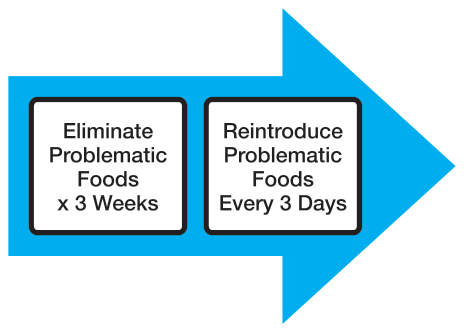
| Breakfast | Buckwheat and banana |
| Lunch | Quinoa, chicken breast, and avocado salad |
| Dinner | Salmon, rice and beans, steamed carrots, zucchini, broccoli |
| Snack | Pumpkin seeds and apple |
Reintroduction Schedule
- Nuts
- Corn
- Egg
- Soy
- Dairy
- Gluten
Sample Food Introduction Journal
| Date | Food Introduced | My Symptoms |
|---|---|---|
| 3/1 | Dairy | Joint pain, tingling, stomach pain |
| 3/4 | Eggs | Gas, bloating |
Advanced Elimination Diet
An advanced elimination diet that combines food elimination with healing may be more appropriate for Hashimoto’s patients who have multiple food intolerances and more gastrointestinal symptoms or who continue to suffer symptoms after following a basic elimination diet.
I developed this diet after cutting out all tested food intolerances (including gluten, dairy, and soy) for one year, only to begin experiencing bloating and new food intolerances (almonds, eggs, bananas).
It may be best to do the more extreme version of the elimination diet rather than leaving things in and being sorry later.
The three-week elimination diet can be done by combining an elemental diet with a healing phase, similar to the one recommended by the GAPS diet.
New foods should be introduced every three days, starting with ones that are well-cooked and the easiest to digest.
We begin with bone and meat broths with well-cooked meats and vegetables that are puréed, gradually introducing more solid foods while we continue the healing broths.
The diet can be jumpstarted with an elemental diet for one to seven days, which allows the digestive system and intestines to rest and regenerate.
This diet is akin to a “baby food diet,” one you might use to introduce new foods to a baby. This is because, like babies’ intestines, the intestines of many Hashimoto’s patients are permeable.
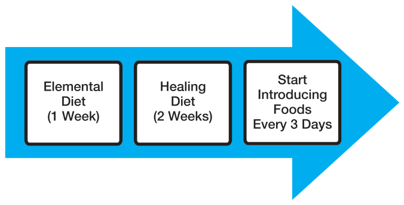
In addition to excluding detrimental foods, we include healing foods to help the body regenerate.
Foods Recommended for Autoimmune Thyroid Healing
- Bone and meat broths
- Gelatin
- Protein
- Liver
- Meat
- Saturated fat
- Fermented foods
- Probiotics
- Vegetable juices (fiber removed)
- Well-cooked vegetables, puréed vegetables
Sample Introduction Diet (Days One to Three)
| Breakfast | Chicken stock, chicken meat, puréed zucchini |
| Lunch | Chicken stock, chicken meat, puréed carrots |
| Dinner | Chicken stock, chicken meat, puréed zucchini |
| Snack | Chicken stock, chicken meat, puréed carrots |
Introduction Schedule
Fiber is limited in the first two to four weeks, allowing for the intestinal lining to heal. Potentially reactive foods are introduced every three days, starting with eggs, which are introduced after three weeks and continued if there is no reaction.
Grains, dairy, beans, and legumes are excluded for the first ninety days. The goal of this diet is to heal the intestinal lining, allowing the body to have fewer food reactions, so if a particular food is not tolerated at first, the healing diet is continued and the food is reattempted in one month.
For more guidance and proposed meal plans, recipes, and food journals for the Advanced Healing/Elimination Diet, go to thyroidpharmacist.com/guide.
Supplements
Protein molecules are the most difficult to digest of all foods. Their digestion is a multi-step process, starting with the stomach and the gastric enzyme pepsin (discussed in the Digestion & Depletions chapter).
Proteins are further broken down by proteolytic enzymes secreted by the pancreas. The pancreas releases enzyme precursors that must be activated by enterokinase, an enzyme secreted by the small intestine to finish the final step of protein digestion—conversion of proteins into free amino acids. Due to SIBO and other issues affecting the small intestine, these enzymes do not become activated in many individuals with Hashimoto’s.
Proteolytic enzyme supplements (sometimes called “systemic enzymes”) provide the activated enzymes (protease blends, trypsin, chymotrypsin, elastase, carboxypeptidase) and should be taken between meals to help break down circulating immune complexes formed by poorly digested proteins. They may be helpful in reducing TPO antibodies.
Chapter Summary
- Food intolerances are distinct from food allergies and are mediated by different parts of the immune system (IgG, IgA).
- Due to increased intestinal permeability, people with Hashimoto’s also have food intolerances.
- Food intolerances exacerbate autoimmunity by perpetuating intestinal permeability and possibly cross-reacting with thyroid antibodies.
- The most common antigenic substances are dairy, eggs, gluten, and soy.
- Testing for food intolerances is available.
- Elimination diets are the most helpful in finding foods that are problematic for each individual.
- Consider proteolytic enzymes to help reduce circulating immune complexes.
16. Toxins
“The best way to detoxify is to stop putting toxic things into the body and depend upon its own mechanisms.”
—Andrew Weil, MD
We are bombarded by toxins in our environment every day, from the air we breathe to the water we drink to the food we consume to the products we use. Some of us may be unable to detoxify our bodies, leading to a perpetuation of autoimmunity.
In 2006, the Centers for Disease Control reported average Americans have 116 out of 148 synthetic compounds in their bodies—that includes dioxins, polycyclic hydrocarbons, and organochloride pesticides. This is especially significant for those who want to get pregnant. The average umbilical cord contains 217 neurotoxins, 208 of which are known to cause birth defects.
We now have more than 80,000 different chemicals. Many of them have not been evaluated for human safety, yet we encounter them daily. There are too many to discuss in this book, but more information can be found on ewg.org, the consumer website of the Environmental Working Group, a US environmental health research and advocacy organization. We will discuss a few well-known chemicals that are prevalent in everyday life and may be detrimental to people with Hashimoto’s.
Endocrine Disruptors in Your Home
Endocrine disruptors are chemicals that interfere with our hormones. Some of these chemicals may affect thyroid activity; some mimic estrogen; while others may cause cancerous tumors, birth defects, and developmental disabilities.
Halogens
The halogens bromide, chloride, and fluoride compete with iodine for the receptor binding sites in the thyroid, but instead of activating the receptors, they build up in thyroid tissue and cause thyroid cell death and inflammation. Studies have shown that individuals exposed to a variety of halogen-containing substances had a higher incidence of thyroid antibodies.
These substances were studied in the industrial world, where exposed workers showed a trend in increased incidences of Hashimoto’s. Unfortunately, they are commonly found in consumer products as well.
Fluoride
Starting in 1945, most American communities began adding fluoride to drinking water in an effort to prevent tooth decay. While various studies show fluoride reduces the incidence of dental cavities and tooth decay, fluoride is an endocrine disruptor. Studies confirm fluoride is directly toxic to thyroid cells and causes thyroid cell death, suppressing thyroid activity.
In fact, fluoride was actually used to treat hyperthyroidism up until the 1950s, prior to the development of other thyroid-suppressing medications. Fluoride is effective as a thyroid suppressor at doses of 0.9 to 4.2 mg per day for hyperthyroidism. Most adults in fluoridated communities are ingesting between 1.6 and 6.6 mg of fluoride per day from water, inadvertently suppressing their thyroid function.
Studies from China, India, and Russia show reduced T3 and increased TSH levels in those exposed to fluoride in the workplace or through drinking water. Whenever TSH increases, more TPO is released, leading to the production of hydrogen peroxide (H2O2). In the absence of sufficient selenium and glutathione, hydrogen peroxide damages the thyroid cells. This triggers a stress response from the cells, leading to an accumulation of white blood cells and resultant inflammation. In those with increased intestinal permeability, this inflammation becomes permanent, and thyroid antibodies develop.
Another Government-Induced Disease?
A dentist, Dr. Weston A. Price traveled around the world photographing the teeth of various cultures. He found those who ate a traditional diet had perfect arches and no cavities. In contrast, those who adapted a “modern” diet containing flour, sugar, and processed vegetable fats began to have improper jaw development, resulting in crowding teeth as well as tooth decay.
Fluoridation partially began as a collaborative effort between dental associations, the US government, and sugar lobbyists who wanted to find a solution that would allow people to have fewer cavities while continuing to consume the same amount of sugar.
Getting proper nutrition in the diet should be emphasized and should eliminate the need for fluoride.
Just like other halogens, fluoride may act as a trigger in inducing thyroid cell death and inflammation, leading to the development of thyroiditis/autoimmune thyroiditis.
The United States is one of the only countries that adds fluoride to its water system. Almost all (97 percent) European countries have rejected water fluoridation due to the toxicity associated with it. Austria, France, Germany, Spain, and Switzerland, however, do allow the addition of fluoride to salt.
Some people have reported improvement in thyroid symptoms and thyroid function tests after removing fluoride from their lifestyle.
Common sources of fluoride:
- Supplements (check labels)
- Bottled beverages
- Toothpaste
- Black tea
- Red tea
- Canned food items
- Black/red rock salt
- Chewing tobacco
- Medications
Tea
While boiling water removes many toxins and impurities, it concentrates fluoride. Freezing water, on the other hand, does not affect the concentration of fluoride.
Fluoride is also found in tea, especially red and black teas. Tea leaves accumulate fluoride from the soil and pollution. The longer they stay on the tea tree, the heavier the fluoride content. An article published in the journal Food and Chemical Toxicology stated that there is up to 4.5, 1.8, and 0.5 mg/L of fluoride in black, green, and white teas respectively when brewed for five minutes. Chamomile and herbal teas contain 0.13 mg/L.
Filters
Fluoride can be removed by the following methods; distilling the water, installing a reverse-osmosis filtration system, or adding activated alumina defluoridation filters. Most other filters do not remove fluoride. Exchanging black and red tea for white or herbal tea may help reduce our fluoride exposure as well.
Substances containing two other halogens—chlorine and bromine— have also been found to induce autoimmune thyroiditis.
Bromide
Studies show bromide-containing substances—polybrominated diphenylethers (PBDEs)—are connected to an increased incidence of Hashimoto’s. Bromide is found in baked goods, plastics, soft drinks, and tea as well as in our mattresses, which now contain brominated flame retardants. This is a “safety feature” instituted by the US government to prevent mattresses from rapidly bursting into flames from cigarettes if someone falls asleep while smoking in bed. Great help for the minority who like to smoke in bed but not so much for health-conscious people who do not smoke.
PBDEs are also frequently found in furniture foam and plastics used in computers, appliances, and electronic products. Over time, PBDEs can leach from these products into the environment.
Chlorine
Chlorine-containing polychlorinated biphenyls (PCBs) have been shown to be toxic to thyroid cells and to promote the onset of Hashimoto’s thyroiditis. Studies show PCBs increase TSH, thyroid autoantibodies, and thyroid size. In addition to industrial products, chlorine is found in water systems, pools, cleaning products, and plastics. It is also found in the crop pesticide organochlorine, which accelerates thyroid hormone elimination and can play a role in autoimmunity.
Xenoestrogens
Xenoestrogens are endocrine-disrupting chemicals that mimic the effects of estrogen and include soy, BPA, phthalates, and parabens. The continued use and accumulation of these substances may lead to estrogen dominance and can have a profound impact on the immune system and adrenal and thyroid function as well as causing birth defects, infertility, and cancers.
Soy isoflavones are found in many processed foods as well as some supplements. Always be sure to read your food and vitamin packaging. Better yet, avoid all processed food like the plague!
BPA (bisphenol-A) is found in plastics such as containers, baby formula cans, and even in the coating of store register receipts. It has been linked to cancers as well as reproductive and developmental disorders. BPA also antagonizes T3 receptors, essentially shutting them down. You should look for “BPA-free” plastic products. The best option is to avoid cooking or storing your food in plastics.
Phthalates are found in many detergents, laundry products, and washable items. In addition, they are present in cosmetics, plastics, moisturizers, soaps, house paint, and perfumes. Implicated in cancers, endocrine disruption, diabetes, and obesity, phthalates may be listed on product packaging (e.g., diethyl phthalate), or they may be disguised under the word “fragrance.” Check the ingredient list of your beauty products and only use those that do not contain dibutyl phthalate (DBP). Avoid using personal care products, detergents, and cleansers that contain “fragrance” in the ingredient list as this usually denotes phthalate ester (DEP).
Triclosan is found in antibacterial soaps, deodorants, hairsprays, and toothpastes. The structure of triclosan resembles the structure of thyroid hormones and has been associated with altered levels of thyroid hormone in animals. Avoid the use of “antibacterial” products. They are not necessary in the home. If you must use an antimicrobial product for work or disinfecting purposes, choose an alcohol hand rub or rinse product that does not list triclosan or “fragrance” in the ingredients.
Used as antimicrobial agents, parabens are found in body washes, shampoos, and lotions. They have been implicated in breast cancers and associated with causing skin reactions. Look for the ending “paraben” (as in methylparaben) in your personal care products. Choose products that do not list parabens in the ingredients.
Better Living Through Chemistry?
Much controversy has come from the advertisements we watch on television and see in magazine ads that make us think we are inadequate, unattractive, dirty, and flawed. Teenage girls are especially susceptible, and glossy magazines with pictures of airbrushed models have been blamed for eating disorders and self-esteem issues in young women.
Examining an average American woman’s bathroom, you will likely find close to 100 personal care products, including nail polish, lotion, shampoo, makeup remover, eyeliner, face masks, hairspray, and perfume … the list goes on and on. These products are full of chemicals that have not undergone safety studies to verify their nontoxicity to humans. Most cosmetic chemists only test the chemicals on themselves to see if the products make them more aesthetically appealing. Conducting laboratory tests to assess blood levels and changes in organ or immune system function—or any other available medical tests, for that matter—are not a practice followed by the cosmetic industry.
| Agent | Example of Sources | Mode of Action | Human Studies |
|---|---|---|---|
| PCBs* | Coolants and lubricants | Thyroid receptor agonist/antagonist, can alter levels of T4 and TSH | Increase in TSH, thyroid volume, thyroid antibodies |
| Organochlorine pesticides | Pesticide on crops | Accelerate metabolism of T4 | No human studies |
| PBDEs* | Flame retardants | Bind to thyroid receptors, displacing T4 from binding proteins | Increase in Hashimoto’s |
| BPA | Plastic bottles | Antagonizes thyroid receptors | No human studies |
| Perchlorate, thiocyanate | Rocket fuel, fertilizer, smoking | Inhibits iodine uptake | No human studies |
| Triclosan | Antibacterial soaps | Reduces serum T4 | No human studies |
| Isoflavones* | Soy products | Inhibits TPO activity | Potential increase in Hashimoto’s |
Adapted from Eschler DC, Hasham A, Tomer Y. Cutting edge: the etiology of autoimmune thyroid diseases. Clin Rev Allergy Immunol. Oct 2011:41(2):190–197.
*Human studies associated this as a trigger or accelerator in the development of Hashimoto’s.
You may think only the things you eat matter, but the skin is another excellent delivery system for chemicals. In fact, many topical patches and creams are used to administer pharmaceuticals and hormones directly into the bloodstream (think the Ortho Evra® birth control patch).
When products are swallowed, the liver usually works to make them less toxic before they enter the circulation. This is known as first pass-effect, and only a small percentage of the original product may wind up in the circulation system. By contrast, products applied to the skin bypass the liver and go directly into the circulation, potentially producing systemic effects until they arrive at the liver and are eliminated. Dr. Nicholas Perricone, the well-known anti-aging dermatologist, reports that many facial creams, lotions, and serums marketed to women actually contain estrogens.
Men generally use fewer personal care products, so perhaps women’s routine use of endocrine-disrupting products is partly responsible for the disproportionate female predominance of thyroid and autoimmune conditions. The use of lipstick, in particular, has been connected to the development of lupus, an autoimmune condition.
What to Do?
Go on a makeup, perfume, and body wash holiday! You can also choose products that are more natural in their origins. One rule to follow: if you wouldn’t eat it, don’t put it on your body. The EWG website hosts the Skin Deep® Cosmetics Database featuring thousands of personal care products, each with its own safety rating based on dozens of toxicity and regulatory databases.
Once you realize the TV commercials, magazines, and Internet ads are programming you to consume more without taking your health, happiness, or well-being into account, you will think twice about what you put in your home, in your body, and on your skin.
What’s Hiding in Your Bathroom?
Avoid the following ingredients in your personal care products/cosmetics:
| Type of Product | Ingredients to Avoid |
|---|---|
| Bar soap | Triclocarban |
| Liquid soap | Triclosan |
| Moisturizers, lotions | Retinyl palmitate, retinol |
| Toothpaste | Triclosan |
| Lip glosses and lipsticks | Retinyl palmitate, retinol |
| Shampoo and conditioner | Fragrance, PEG, ceteareth, polyethylene, parabens (e.g., propyl paraben), DMDM hydantoin |
| Nails | Formaldehyde, formalin, toluene, dibutyl phthalate |
| Sunscreen | Retinyl palmitate, oxybenzenone |
Other Toxic Chemicals
Other toxins that may not have a specific effect on thyroid function but can burden the body’s ability to detoxify and heal itself include dioxins, which are found in bleached paper products. Tampons are especially problematic as they can be absorbed through the vaginal membranes into circulation. Chemicals used in dry cleaning are extremely toxic and have been associated with an increased risk of cancer.
Also, conventional cleaning supplies used to clean our bathrooms, kitchens, and floors are full of toxic chemicals. You can make your own cleaning supplies or purchase ones made from natural ingredients. The EWG also has a database of safer, cleaner alternatives (ewg.org/guides/cleaners).
Nontoxic Alternatives for Cleaning
- Baking soda: makes water soft, increases cleaning capacity of soap, good for scrubbing
- Borax: cleans and removes odors, excellent disinfectant
- Soap from plants: nontoxic and biodegradable; available as liquid, flakes, and bars; the best are without synthetic additives, flavors, and colors
- Vinegar: cleans grease and limestone residue
- Citric acid and lemon: removes grease and limestone residue and also refreshes
- Natural essential oils: natural extracts and essential oils enhance antibacterial and antiviral properties of cleaning products; antibacterial options include camphor, cardamom, citronella, cypress, eucalyptus, ginger, juniper, lavender, lime, lemongrass, orange, lemon, pine, rosemary, sage, sandalwood, tea tree, and thyme; antiviral oils comprise cinnamon, eucalyptus, lavender, lemon, oregano, sandalwood, and tea tree
Mom’s Cleaning Recipes
Toxins in Our Foods
Herbicides and pesticides are used in conventional farming to deter pests and increase yields. Chronic exposure to the corn herbicide Atrazine has been linked to obesity and mitochondrial dysfunction, leading to weight gain and insulin resistance. This herbicide has also been found in our water systems. Most of our corn is grown in the Midwest, and there is an overlap between where the herbicide is used and where obesity is prevalent.
Eating Organic Foods
According to the Environmental Workgroup, a nonprofit consumer protection agency, some nonorganic produce may be especially contaminated with pesticides. Many of these foods are heavily sprayed with pesticides to the point that workers have to wear gas masks.
| 2015 Dirty Dozen: Foods with HIGHEST Pesticide Residues | 2015 Clean Fifteen: Foods with LOWEST Pesticide Residues |
|---|---|
| Apples Peaches Nectarines Strawberries Grapes Celery Spinach Sweet bell peppers Cucumbers Cherry tomatoes Snap peas Potatoes **Hot peppers and non-organic kale also contained a high amount of pesticides | Avocados Sweet Corn Pineapples Cabbage Sweet peas frozen Onions Asparagus Mangos Papayas Kiwi Eggplant Grapefruit Cantaloupe Cauliflower Sweet potatoes |
Heavy Metals
Heavy metals may also interfere with thyroid function. Mercury fillings in particular have been found problematic in those with Hashimoto’s. As mercury is a metal that vaporizes when heated, the heat generated from the friction of chewing causes it to be released into circulation. In those who are sensitive to mercury, removal of mercury fillings (by a specialized holistic dentist) has been associated with a reduction in TPO antibodies.
Additional sources of mercury are found in fish. Tuna contains a lot of mercury and should be avoided, while anchovies, salmon, flounder, and whitefish may be enjoyed up to twice a week.
Other metals can also leach into our bodies. The most common, aluminum is present in antiperspirants and some cooking pans. Scratched nonstick pans are a source of leaks. Stainless steel cookware is recommended instead.
| Highest Mercury: AVOID eating | High Mercury: Eat no more than three 6-oz. servings a month | Lower Mercury: Eat no more than six 6-oz. servings a month | Lowest Mercury: Enjoy two 6-oz. servings a week |
|---|---|---|---|
| Marlin Orange roughy Tilefish Swordfish Shark Mackerel (king) Tuna (bigeye, ahi) | Sea bass (Chilean) Bluefish Grouper Mackerel (Spanish, Gulf) Tuna (canned, white albacore) Tuna (yellowfin) | Bass (striped, black) Carp Cod (Alaskan) Croaker (White Pacific) Halibut (Pacific and Atlantic) Jacksmelt (silverside) Lobster Mahi-Mahi Monkfish Perch (freshwater) Sablefish Skate Snapper Sea Trout (Weakfish) Tuna (canned, chunk light) Tuna (Skipjack) | Anchovies Butterfish Catfish Clam Crab (domestic) Crawfish/ crayfish Croaker Flounder Haddock Hake Herring Mackerel (North Atlantic, chub) Mullet Oysters Perch (ocean) Plaice Salmon Sardines Scallops Shad (American) Shrimp Sole Squid (calamari) Tilapia Trout (freshwater) Whitefish Whiting |
Adapted from americanpregnancy.org/pregnancyhealth/fishmercury.htm.
Body’s Detoxification System
We have an innate detoxification system that can help us clear toxins from foods, chemicals, and other exposures.
However, when the body cannot keep up with the elimination of toxins because of compromised digestion, toxins accumulate in our cells and the fluid around the cells (extracellular fluid).
Our cells take in nutrients and oxygen from the blood, perform their functions, and give off waste products. The waste products are expelled from the cells into the extracellular matrix, where they undergo an exchange with the bloodstream for the entering nutrients. The blood transports these wastes to the liver to be detoxified and then to the organs of elimination— intestine, kidneys, lungs, and skin—for final disposal. When our organs are burdened with excessive wastes, they show signs of their stress.
Skin: Rashes, pimples, or offensive body odor.
Kidneys: Frequent, painful, or urgent urination or dark or offensive-smelling urine.
Liver: Gas, diarrhea, and constipation; green, mucous stools; or right-sided chest pain.
Lungs: Congestion, coughing, or wheezing.
Each person may show different signs of stress, depending on their particular weakness and the toxins to which they are exposed.
Liver
The liver is our main detoxification organ, and proper liver function is necessary for converting T4 to the active T3 hormone. In addition, the liver filters blood, stores glucose for energy, breaks down steroid hormones, and produces and secretes bile, which is necessary for fat digestion. The liver also gets rid of toxins we encounter. Liver function may be impaired in those with Hashimoto’s.
The elimination of toxins by the liver is done through a two-step enzymatic process.
Phase I
During Phase I, a family of enzymes known as cytochrome P450 enzymes (CYP450) metabolizes fat-soluble toxins into intermediary substances.
Foods, drugs, toxins, and other substances undergo processes such as oxidation, reduction, hydrolysis, hydration, and dehalogenation to prepare them to attach to detoxifying nutrients during Phase II. These intermediates are often more toxic than the original substances ingested.
The required nutrients in Phase I are B vitamins (B2, B3, B6, B12, folic acid, glutathione, and flavonoids).
Phase II
In Phase II, the intermediaries undergo conjugation, sulfation, glucuronidation, glutathione conjugation, acetylation, amino acid conjugation, and methylation reactions, which detoxify them and make them water-soluble so they can be excreted in stool or urine.
The required nutrients in Phase II are folic acid, magnesium, glutathione, B5, B12, and vitamin C as well as the amino acids methionine, cysteine, glycine, taurine, glutamine, and choline.
Due to low HCL levels, gluten intolerance, and other absorption issues present in Hashimoto’s, the body does not properly absorb nutrients required for detoxification pathways (see the Depletions chapter for details).
Since the body is constantly bombarded with toxins in the form of undigested foods, pesticides, medications, exhaust fumes, and so on, this results in a “backlog” or “liver congestion” in which the toxins build up, get back into the blood, and may wind up stored in our fat.
Acid-Alkaline Food Balance
Creating a more alkaline environment in the body may help with the detoxification process and can improve alkaline phosphatase function. While this initially seems to contradict the previous recommendation to increase stomach acidity, it does not. Keeping the stomach acidic and the rest of the body alkaline is the key to optimal health and can be achieved through diet and digestive enzymes.
The alkaline and acidic properties of foods are confusing, mostly because people use the same terminology to describe the taste of the food as well as to discuss whether the body needs to produce more acid or alkaline enzymes to digest the food.
A food such as a tomato, for example, may be considered an acidic food to those who eat it, but it requires alkaline enzymes to digest it, thus leaving a net alkaline residue in the body.
In contrast, milk doesn’t taste acidic, but it requires acidic enzymes to be digested.
Foods that are high in protein but low in potassium are generally going to be acidic. This includes most meats, dairy, some nuts, and cereals/grains that are poor in potassium. Additionally, most processed foods are considered acidic as well.
In contrast, foods rich in potassium but low in protein, such as fruits and vegetables, require an alkaline environment for digestion.
Eating too many animal products and starches without the correct balance from alkaline vegetables and fruit may create a net acidic residue in the body but will not help make the stomach more acidic. Additionally, taking digestive enzymes to acidify the stomach (which needs to be acidic) will not affect the acid/base ratio of the rest of the body.
Protein-based acidic foods are important for building up the body, while alkaline foods are utilized to detoxify our bodies. Both types of foods are required for proper health.
A ratio of 20 percent acidic foods to 80 percent alkaline foods has been suggested for a proper acid/alkaline balance. Since we are all different, this ratio may not be appropriate for everyone, and different ratios may be used depending on whether our bodies need more building or cleansing.
Not all acidic foods are equal. Organic eggs (if someone is not sensitive to them), meat, and animal fat are nutritious, while foods such as refined flour, sugar, and processed vegetable oils are detrimental and should be avoided or limited. While nutritious acidic foods are required for proper body function, they should be limited when attempting to detoxify/cleanse the body.
Additionally, not all alkaline foods are created equally when it comes to cleansing. Raw fruits and vegetables are more alkaline than their cooked counterparts. Almonds and cashews are generally considered to be more alkaline, but not everyone may be able to tolerate them. Raw fruits, vegetables, herbs, and spices have the most potent detoxifying effects.
Cleansing should be performed once or twice a year for a period of one to two weeks, but long-term diets that rely on alkaline foods at the exclusion of nutritious acid foods are not recommended for Hashimoto’s.
| Acidic Foods | Alkaline Foods |
|---|---|
| Meat, fish, and poultry Dairy Eggs Processed foods Fats Sugar Flour Fried foods | Fruits Vegetables Greens Most nuts Seeds Beans Potatoes Gluten-free grains |
What Is a Detoxification Protocol?
Detoxification is a broad term used to describe a variety of different methods that can help cleanse the body’s internal system and organs.
Detoxification protocols may include nutritional supplementation, herbal medicines, raw vegetarian diets, fasting, juicing, probiotics, hydrotherapy, sauna, colonic irrigation, and exercise.
Detoxification addressed four different types of toxins: heavy metals, chemical toxins, microbial compounds, and byproducts from protein metabolism.
Why Detoxify?
Detoxification protocols cleanse the body of buildup accumulated as a result of our dietary habits, toxic environment, and overburdened detoxification system. Proponents of detoxification report clearer skin, reduced symptoms of many conditions, improved vitamin and mineral absorption, and better bowel function.
Autoimmune Detox
Detoxification is an important part of re-establishing healthy thyroid function. Our main detoxification organ, the liver may become “congested” from the countless toxic substances we are exposed to on a daily basis.
Avoiding alcohol, caffeine, pesticides, and chemicals is a great way to kick start the detoxification process. However, sometimes additional intervention may be required.
Detox Methods
I researched a variety of detox methods as I wanted to develop a detox program that fits the needs of those with Hashimoto’s.
Fasting is a great way to detox but may exacerbate adrenal fatigue.
Fiber and vegetables rich in sulfur also support liver detoxification, as do raw fruits and vegetables. However, I knew that raw fruits and vegetables are not an option for those with impaired digestion. Additionally, fiber can be aggravating to many Hashimoto’s patients due to small-intestinal bacterial overgrowth.
Generally, detox diets eliminate animal proteins and rely on nuts and seeds for protein, but these may also be difficult to digest for some with Hashimoto’s.
In evaluating liver detoxing products, I found that most were powders designed to be made into shakes and taken as meal replacements.
Unfortunately, most of the products contain rice, soy, or dairy as a source of protein, which may be problematic to people who have Hashimoto’s and associated PAIRs and food sensitivities. Most of these products also contain insoluble fiber, which can be fermented by the pathogenic bacteria and perpetuate autoimmunity.
I scratched my head for months until someone recommended the movie Fat, Sick, and Nearly Dead. For those who have not seen the movie, it’s a documentary about a man who is able to put his autoimmune condition (chronic urticaria) into remission by following a sixty-day juice fast.
A juicer machine is used to extract liquid from fruits and vegetables. The liquid is easy to absorb by the body and only contains vitamins, minerals, and enzymes as well as some soluble fiber that binds toxins, while the insoluble fiber is left behind. We get most of the benefits of raw fruits and vegetables without putting the extra stress of digestion on the body, allowing our bodies to rest and regenerate.
Adapted from Natural Standard Database.
Although the man in the documentary transitioned to a vegan diet after the juice fast, we know vegan, raw, and fasting diets are not optimal for those with Hashimoto’s. This is because people with Hashimoto’s are depleted in many of the nutrients typically obtained from animal sources (e.g., zinc, ferritin iron, selenium, and fatty acids). We also know animal proteins are the hardest to digest and are often not digested properly by those with Hashimoto’s due to low hydrochloric acid.
Therefore, taking a one-day to two-week break from animal protein and giving the body an opportunity to rest from digestion can be regenerative for the gut and liver. Soups and broths can give the bowels a rest, helping to restore the intestinal lining, but they may not provide all the required micronutrients often found in fresh fruits and vegetables, which are necessary for detoxification.
That’s When the Juice and Soup Fast Was Born
This fast fits with the Hashimoto’s protocol and elimination diet, while at the same time addressing depletions due to Hashimoto’s absorption issues.
The fast begins with two to three days of homemade broth mixed to a purée consistency with well-cooked, low-residue vegetables such as carrots, zucchini, and pumpkin. The vegetables should be prepared with ample fatty acids like coconut oil, duck fat, lard, and cod liver oil. A tablespoon of coconut oil is added to each soup.
Juices are introduced after three days for those without diarrhea. Those experiencing diarrhea may need to be pushed out by a few weeks. Juices should be taken on an empty stomach, before the soups. Drinking purified water and herbal teas can be both soothing and relaxing. It is also important to start a probiotic regimen at this time. The juice fast is a low-residue diet and will likely cause die-off of bacteria in the small intestine.
After a few days of ingesting both the juice and soup, you can transition off the soups into a full juice cleanse, lasting anywhere between one and seven days. Afterward, the soups are added back in, and we transition to introducing meats and other more difficult-to-digest foods. Alternately, smoothies of well-puréed raw vegetables can be used in place of the juices.
Fruit should be limited to low-fructose fruits like granny smith apples, lemons, limes, and tomatoes and should be mixed with vegetable juices. Goitrogenic raw vegetables should be limited.
Some ideas for juicing vegetables include carrots, celery, cucumber, zucchini, and leafy greens. Small amounts of apple may be added to sweeten the juices, but avoid using too many fruits due to their high sugar content. Lemons also mix well with juices.
You may also wish to add small amounts of ginger root, onion, or turmeric root to the juice.
Note: When consuming liquid foods such as soups, juice, and smoothies, try to make a habit of “chewing” them. This action generates salivary enzymes, helping to prepare the pancreas for digestion.
Toxin Binders
Lemon Juice
Lemon juice has cleansing properties and helps detoxify the liver. It can be taken in the morning on an empty stomach mixed with a half-cup of purified water or vegetable juice.
Fiber
Fiber helps bind the toxins and eliminates them through stool. Fiber found in fresh fruit and vegetables such as inulin, FOS, and psyllium husk are healthful fibers that may aid with binding toxins. However, they may be too abrasive for those with increased intestinal permeability and may aggravate small-intestinal bacterial overgrowth.
Bentonite Clay
Bentonite clay also has strong cleansing and absorptive properties when taken internally. It is gentler for those with gastrointestinal issues and has been helpful for people with irritable bowel syndrome.
The clay is not absorbed by the body or fermented by the intestinal bacteria. It actually attracts and binds toxins such as viruses, parasites, heavy metals, pesticides, and chemicals as it passes through the intestinal tract. The toxin-filled clay is expelled in bowel movements.
In addition to being taken internally, clay can be used in baths and facials to help detoxify the body through skin pores.
The clay should not be taken during pregnancy and should be spaced out from medications by at least two hours as it is likely to bind the medication as well. Bentonite clay is available in liquid or powder form. The liquid may taste better.
Detox Supplements
The required nutrients for Phase I and II liver detoxification include B vitamins (B2, B3, B5, B6, B12), folic acid, glutathione, flavonoids, magnesium, vitamin C, and the amino acids methionine, cysteine, glycine, taurine, and glutamine.
N-Acetyl Cysteine
N-acetyl cysteine, which turns into glutathione, not only helps reduce TPO antibodies by neutralizing hydrogen peroxide, but it also helps heal intestinal permeability and aids with detoxification. Doses of 1.8 grams (1,800 mg) are usually recommended.
Amino Acids
Amino acids are necessary for rebuilding and healing the body. Although proteins are our major source of amino acids, protein breakdown is burdensome to the body and takes away from healing and cleansing. Pure amino acids require no work on the part of the body and are easily absorbable. Unfortunately, they taste disgusting. Prolonged juice fasts that exclude proteins may result in protein deficiency, and supplementing with pure amino acids mixed with cranberry juice and stevia or taken in supplement form may help support the body in its rebuilding efforts.
Herbs
A variety of herbs has been reported to be helpful with cleansing, and many commercial “liver detox support” products may have one or more of the following ingredients, sometimes in combination with the vitamins and supplements listed above.
| Artichoke | Barberry | Boldo | Fringetree |
| Dandelion | Alfalfa | Beet | Lecithin |
| Milk Thistle | Licorice | Capsicum | Cellulose |
| Schisandra | Turmeric | Phosphatidylcholine | |
Chlorella/Spirulina
Chlorella and spirulina are sometimes recommended as detox supplements, but they may have immune-stimulating properties that can induce or exacerbate autoimmune conditions through the upregulation of TNF-A (the Th1 branch). This same reaction has also been reported with echinacea. There have been a few cases of new onset autoimmune conditions following the use of these supplements!
Activities to Support Detox
In addition to diet and supplements, a variety of activities may also help with the detox process, including Epsom salt baths, enemas, colon cleansing, massage therapy, and oil pulling.
Skin
The skin is a major elimination organ for toxins. Sweating especially helps eliminate toxins. Low sweat production is a symptom of hypothyroidism (although not one many people complain about!). As people with hypothyroidism usually have a lower body temperature, they often need to make themselves sweat. This can be done by exercise, the use of saunas, hot baths, or my favorite, hot yoga. Brushing the skin may also be helpful with eliminating toxins.
Colon
Elimination of toxins also occurs through the gastrointestinal tract. When we are detoxifying, the toxins may not always clear out efficiently from our bowel, and we may become backed up. Enemas and colon cleanses may help with toxin elimination, especially for those who are more on the constipated side.
Cleansing the colon supports detoxification and stimulates the liver to dump bile. It is especially important for those not having regular bowel movements.
The use of enemas and colonics may aid in increasing waste elimination and reducing the unpleasant symptoms associated with detoxing that occur because the body is not clearing toxins quickly enough.
Enemas can be performed at home, while colonics are administered by specially trained colon hydrotherapists who use sterilized equipment to introduce fluid into the colon to irrigate it.
Lymphatic System
The lymph system is also responsible for transporting toxins around the body and facilitating their elimination. Increasing lymphatic flow consists of lifestyle modifications almost everyone enjoys, including bouncing on a trampoline (or mini-trampoline), massages, and inversion exercises such as my favorite yoga pose, the Shoulder Stand. Woohoo!
Massage Therapy
A wonderfully relaxing detoxification tool, massage therapy helps with tissue cleansing. Massage induces the release of toxins from tissues and facilitates their elimination. It turns the extracellular matrix from a jelly-like substance into a more liquid state, allowing for easier elimination.
Remember to drink plenty of pure water before and after a massage to further enhance your elimination and replenish your body’s supply of water.
Halogen Detox
Halogens are more likely to accumulate in the case of iodine deficiency. However, we know that iodine itself acts as a trigger for Hashimoto’s and can perpetuate the autoimmune attack.
It may be helpful to reduce iodine intake while we work toward eliminating thyroid antibodies. Once the antibodies have been eliminated, we can start reintroducing iodine to facilitate thyroid hormone production.
Some physicians report “halogen detox” may occur when reintroducing iodine, which presents as acne, palpitations, and other detox symptoms.
Once thyroid antibodies are in remission, we may be able to start supplementing with iodide, but very gradually.
Chapter Summary
- Toxins are found in foods and personal products.
- Mercury and halogens like fluoride, bromide, and chloride have been associated with Hashimoto’s and thyroid dysfunction.
- The liver is our main detoxification organ.
- Cleansing allows the body to rest and get rid of toxins.
Part III: How to Heal
17. Getting Better
“Every day in every way, I am getting better and better.”
—Émile Coué
One thing to remember about overcoming Hashimoto’s is it takes years to develop the perfect storm to produce Hashimoto’s thyroiditis. In the same way, healing won’t happen overnight.
Healing Hashimoto’s is a marathon, not a sprint, and the life changes you make will gradually lead to a healthier, more balanced you.
It is important to do our best to keep a positive outlook and avoid negative feelings. Our negative emotions wreak havoc on gut and adrenal function—two of the main promoters of autoimmunity!
Earlier, we discussed the three approaches to Hashimoto’s: eliminating triggers, restoring depletions, and restoring gut function.
Eliminating triggers. Triggers can take time to discover and eliminate. A trigger for one person may not be a trigger for another.
This book is based on current research but may be missing other triggers and factors contributing to Hashimoto’s. Eliminating triggers like infections, iodine, gluten, food intolerances, fluoride, and other toxins may take a few days to a few months.
Depletions: Building up your levels of vitamins and nutrients may take several months to a year.
Gut function: Bacterial overgrowth, Candida overgrowth, gut dysbiosis, and adrenal dysfunction may take six months to two years to stabilize.
In the meantime, thyroid hormone supplementation, immune modulation, and throwing the immune system a decoy are available options for preventing further thyroid damage.
So now you have all of this information, and your head is probably spinning. How can you use all of this knowledge to get better? I recommend you start by creating your health timeline. This will help you identify your potential triggers.
Next, you can either write out a problem list of all the things you are undergoing or use the journals, quizzes, and tracking tools at thyroidpharmacist.com/guide to track your progress.
This will help you determine which types of tests and interventions may be helpful to implement.
The approach to healing is fourfold: diet, supplements, lifestyle changes, and medications when indicated.
You Are Unique
Bio-individuality is the concept that everyone is biologically unique—or to put it plainly, we’re all different. Thus it is possible some strategies that work for one person may make another person worse. It is important to pay careful attention and keep track of your own progress in your healing journey.
How Will You Know a Change Is an Improvement?
Journaling, testing, and tracking your symptoms will help you determine if your healing journey is heading in the right direction.
Balancing Measures
As you may notice, many of the supplements that can be helpful for adrenals (astragalus, DHEA, licorice root) and thyroid (selenium, glutathione) may actually increase the Th1 branch, perpetuating immune imbalance.
Perhaps an immune imbalance depletes these nutrients, causing thyroid and adrenal dysfunction, and once the nutrients are depleted, the overactive branch gets burned out. By supporting the thyroid and adrenals, we may end up inadvertently supporting the overactive arm as well.
Candida and fungal infections shift the immune system toward producing more Th2 cells. Viruses and gram-negative bacteria produce more Th1 cells. Getting rid of a Candida or parasitic infection may shift the immune system to Th1 if there is a chronic viral infection or gram-negative bacteria are present.
It is important to keep this balance in mind while attempting to restore one part of the system without worsening another part. If antibodies worsen or new symptoms develop suggestive of a Th1 dominance, it may be helpful to start some Th2-stimulating substances to help restore the balance.
Autoimmune Flare, Intolerance, or Healing Crisis?
A die-off reaction (a.k.a. Jarisch-Herxheimer reaction, Herxheimer, or “Herx”) is a reaction that occurs when the dying pathogenic organisms release toxins at a faster rate than the body can clear them.
This type of reaction can occur with changes in diet such as eliminating sugars, starches, or fiber (sometimes referred to as starving the pathogenic organisms) as well as with increasing fermented foods containing beneficial bacteria, which displace pathogenic organisms through competition. It can also occur after starting probiotics, digestive enzymes, and antimicrobials.
Symptoms of die-off may include lethargy, difficulty concentrating, craving sweets, diarrhea, rash, irritability, gas, bloating, headache, nausea, vomiting, increased autoimmune symptoms, and congestion.
These symptoms usually resolve within a few days but have been reported to last for many weeks in some extreme cases. When the symptoms occur in response to the above-mentioned interventions, they are generally associated with a healing crisis. Pushing through or doing colon cleansing, skin brushing, detox baths, and taking liver support supplements, anatabine, or curcumin may be helpful in managing these symptoms.
Intolerances are associated with some of the same symptoms, but they occur in the absence of these interventions and in response to foods. When these symptoms occur after ingesting any of the substances mentioned in the Intolerances chapter, they should be especially suspect.
An autoimmune flare can result when the wrong type of immune-balancing intervention is used or when balance is restored in one part of the system but not another. Please see the Naranjo Causality Scale in the Supplements chapter for a guide on how to determine the likely intervention that is causing an adverse event. The suspected interventions should be stopped. Autoimmune flares should be treated with acupuncture or counterbalancing supplements.
Challenges of Lifestyle Interventions
Lifestyle interventions for Hashimoto’s and autoimmune conditions are still in their infancy. This research is not yet well-known and accepted by the traditional medical system or broader society.
Friends and family and even your physicians may be skeptical when you tell them you are no longer going to follow the Standard American Diet in an effort to overcome your autoimmune condition. You may be overwhelmed by the notion of changing so many routines and cutting out your favorite foods.
I know lifestyle changes are challenging. It is certainly easier to take a pill on a daily basis rather than follow diets, reduce stress, and exercise. However, please consider the following statistic.
Fifty million people in the United States have an autoimmune condition. That is a whopping 20 percent of our population!
Every system is perfectly designed to get the results it gets.
Thus, our society, medical system, and diet are perfectly designed to produce 50 million people with autoimmunity. It’s up to you to decide whether you want to be like everyone else and get stuck with the same results or try a different approach to your health.
Getting Help
Unfortunately, most traditionally trained medical professionals believe Synthroid® and the TSH are all there is to managing Hashimoto’s. While these professionals can get you on the right track with the diagnosis and sometimes with the medication component of the condition, they may not be very helpful with lifestyle interventions such as diet and supplements.
Nonetheless, you should see your physician at least on a quarterly basis to have your thyroid medication and function monitored. Your physician will help you determine whether your thyroid has recovered to the point of being able to reduce the thyroid medication or if you need to increase your dose of medication.
In addition, I highly recommend working with a professional who is well-versed in nutrition and functional medicine.
Consider making one or more of the following professionals part of your health care team:
- Chiropractors. Chiropractors have an exceptional understanding of human physiology, and many pursue advanced education in nutrition and functional medicine.
- Naturopaths. Naturopaths focus on restoring the body’s innate ability to heal, often through nutritional means. Many are trained in a similar, “root-cause” approach that is the most beneficial to autoimmune disease.
- Compounding or Integrative Pharmacists. Many of these pharmacists pursue advanced nutrition training, especially in the realms of hormone balancing and nutritional healing. They can often order lab tests and recommend outside the box interventions.
- Acupuncturists. Acupuncture is an ancient healing art that can help balance the immune system.
- Nutritionists/Diet Coaches. Holistic nutrition professionals can help design a healing diet appropriate for your needs.
Please go to thyroidpharmacist.com/clinicians for a listing of professionals familiar with the root cause approach. If you are unable to find a practitioner in your area, I also provide phone consultations for a limited number of clients.
Healing Hashimoto’s Summary
My approach for overcoming Hashimoto’s is pretty simple.
First, we remove the things that may be irritating your thyroid and causing it to send out a stress signal.
Iodine, fluoride, and toxins can cause thyroid inflammation as a result of oxidative damage, triggering the thyroid to send out a stress response, which is then picked up by the immune system.
Gluten and food intolerances promote intestinal permeability, rendering our immune system unable to recognize our own cells. Poorly digested food feeds the bad bacteria, making them stronger.
Stress weakens the thyroid through its actions on the adrenals and can help negative bacteria proliferate.
Second, we repair the intestinal permeability through a leaky gut diet, broths, and glutamine. Protomorphogens are used as an optional decoy for thyroid and adrenal glands and can help rebuild the organs.
Third, we replace any identified depletions to help the body strengthen and jump back on the cycle of wellness. This includes thyroid hormone!
Fourth, we reinoculate, giving the body enough beneficial bacteria to displace the pathogenic bacteria. Probiotics and raw lacto-fermented foods are used.
Lastly, we rebalance the adrenals, immune system, and our detoxification capabilities. The adrenals respond well to adaptogens.
The immune system can be balanced with anatabine and curcumin supplements. Green juices, smoothies, and vegetables are used to make the body more alkaline, which optimizes the function of the alkaline phosphatase enzyme so it can detoxify endotoxin from pathogenic bacteria more efficiently.
The complete approach to healing Hashimoto’s can be summarized through the Five R Approach to Healing, an approach used by functional medicine practitioners that I have tailored to specifically fit Hashimoto’s patients.
The Five R Approach to Healing Hashimoto’s
18. Diet for Hashimoto’s
“He who takes medicine and neglects to diet wastes the skill of his doctors.”
—Chinese proverb
What Is the Right Diet for Healing Hashimoto’s?
This question is complicated, and unfortunately, nutrition is the only science in which multiple answers can be both correct and wrong. In other words, there is more than one way to skin a cat, and one man’s medicine may be another man’s poison.
As we know, the three factors for thyroid autoimmunity are 1) genes, 2) triggers, and 3) intestinal permeability. While we can’t change genes, we can change their expression by removing triggers and correcting intestinal permeability. For some, it may be as easy as eliminating excess iodine intake and cutting out gluten (a major cause of increased intestinal permeability).
Others may require a significant lifestyle change, including diets and interventions aimed at removing parasitic, fungal, bacterial, and viral infections; avoiding environmental triggers; trading offending foods for healing foods; balancing blood sugar; and practicing stress reduction.
We are all different, and although we may share the same condition, unique interventions are required for each of us to heal.
Multiple diets have been reported to reverse Hashimoto’s and other autoimmune conditions. Such diets include a gluten-free diet, iodine-free diet, Feingold diet, Specific Carbohydrate Diet (SCD), GAPS diet, Paleo diet, autoimmune Paleo diet, soy-free diet, dairy-free diet, low-FODMAPs Diet, the Body Ecology diet, and elemental diet.
The connecting thread behind these diverse diets is they all remove reactive foods. Most of the diets include animal proteins, are more nutrient-dense than the Standard American Diet, and remove processed foods. Many of the diets recommend healing foods like fermented foods and gelatins.
While vegan and vegetarian diets have been reported to be extremely helpful with autoimmune and chronic conditions, I have not been able to find reports of people recovering from Hashimoto’s by following a vegan diet. Even devout vegans who are nutritionally conscious still struggle with low body temperatures, hypothyroidism, and Hashimoto’s.
Many former vegans have reported improved symptoms of Hashimoto’s following transitioning to a Paleo diet. Based on this, I believe animal proteins may play an important role in building back the health of people with Hashimoto’s.
That said, while meats and fats are important for healing, eating them exclusively produces an acidic environment in the body, hindering healing. Thus, the diet should be balanced with plenty of nutrient-rich vegetables (suggested ratio is 20 percent meat/80 percent veggies).
Vegan and raw vegan diets can be extremely helpful for cleansing and detoxifying, especially for those with persistent protein digestion issues. A vegan diet can be followed for a few days to a few weeks and may help the body detoxify. B12 and iron or ferritin supplements should be utilized at this time to prevent deficiencies.
Another approach may be to follow a “semi-vegan” diet, or the “Morning Vegan” approach, in which one eats primarily vegan foods (nuts, seeds, veggies) for breakfast and lunch but consumes a meat-based meal for dinner.
Which of These Is Right for Me?
While it’s hard to predict who will do well with which approach, generally those with a history of gastrointestinal issues (IBS, GERD, stomachaches, food intolerances); antibiotic and oral contraceptive use; and high-carbohydrate diets will require more time and lifestyle changes for healing.
Variables such as being underweight/normal weight or a younger age at the onset of symptoms (under thirty) may mean more comprehensive and complex approaches must be followed.
The Perfect Diet?
Intestinal permeability may be caused by small-intestinal bacterial overgrowth, dysbiosis, Candida, parasites, or food reactions—or, in many cases, a vicious cycle of all of the above.
Many individualized factors should be taken into account when designing a diet for overcoming Hashimoto’s, including individual food reactions, the compositions of one’s intestinal flora, blood sugar abnormalities, depletions, infections, and the person’s ability to digest and absorb nutrients from foods.
Working with a nutritionist or coach specially trained in thyroid/autoimmune diets may be extremely helpful in developing an individualized healing diet.
The principles of a healing dietary protocol are as follows. The dietary protocol should:
- Take the person’s individuality into account
- Remove triggering foods
- Add healing foods
- Replenish nutrients
The following diets are intended for healing but may not necessarily need to be followed indefinitely. For some, components of otherwise healthful diets such as fruit and fiber might need to be temporarily limited to help with healing.
Considerations for Individualizing the Dietary Approach
The limitation of the FODMAPs and Paleo diets is they do not take into account the individuality of each person. One person may do just fine with dairy, while another may react terribly to it. These diets should thus be used as a guide for developing a personalized approach to overcoming an autoimmune thyroid disorder.
The SCD, GAPS, and Body Ecology diets are programs focus on healing and sealing the intestinal lining by first removing offending agents and then adding back nutritious foods and probiotics, allowing our digestion to catch up.
The programs start with an Introduction Phase. Think of the introduction phase as a “baby food phase” as these types of “introduction” diets are also fed to babies, who have increased intestinal permeability.
The diets start with easy-to-digest broths, soups, and purées. They advance to well-cooked meats and vegetables, cooked fruits, fruit juices, and eventually raw fruits and vegetables, introducing one new food every four days or so. The GAPS diet starts off like “low-residue diets,” low in indigestible fiber to starve the pathogenic bacteria.
Even with the use of diet and probiotics, changes in bacterial flora happen gradually, and it may take up to two years for the beneficial bacteria to replace the pathogenic bacteria. The GAPS and SCD diets need to be continued for one year after the last symptoms before new foods are introduced.
Your body’s ability to digest and assimilate nutrients from foods needs to be considered. Some people may require digestive enzymes.
In advanced cases, the bacterial flora may be so affected that even fiber in the diet may need to be discontinued for a short period of time as it feeds the pathogenic bacterial flora (FODMAPs, low-residue, GAPS approach, elemental diet).
Small-intestinal bacterial overgrowth (SIBO) may be the cause of a shifted autoimmune response and thus may be responsible for Hashimoto’s and food intolerances.
The GAPS Diet, SCD Diet, elemental diet, FODMAPs Diet, Body Ecology Diet, and the new trendy new Paleo diet are examples of diets that can be helpful for overcoming small intestinal bacterial overgrowth by “starving” out the pathogens and reintroducing beneficial bacteria. Fiber and fruit both can contribute to small intestinal bacterial overgrowth and may also need to be limited.
It is likely the leaky gut has led to the development of IgG/IgA intolerances to multiple foods. A “baby food” diet may need to be introduced to help prevent further irritation of the intestinal tight junctions in conjunction with healing foods and supplements. In this case, the person starts by eating the foods that are the easiest to digest, progressing to those that are harder to digest. In the meantime, supplementation with vitamins and minerals is also recommended as the body is likely not absorbing them (elimination/introduction diet).
Those with protein malabsorption/low stomach acid may benefit from a temporary break from proteins (animal proteins are the hardest to digest) such as in a juice cleanse, elemental diet, or other type of cleanse. Digestive enzymes should also be used with all protein foods.
An overview of the most helpful dietary approaches is listed as follows, starting with the diets requiring the greatest lifestyle changes to those requiring the fewest.
Elemental Diet
An elemental diet is a liquid diet that is free of non-digestible substances such as fiber, complex carbohydrates, and protein structures. It contains our essential macronutrients in a state that requires little to no digestion and results in complete absorption.
A low-residue diet, the elemental diet is composed of free amino acids and fat in liquid form. Amino acids, glucose, fat, and vitamin/mineral supplements are utilized instead of food.
The elemental diet has been traditionally used for rehabilitation of severely malnourished individuals, bowel inflammation, and diarrhea.
This diet results in reduced secretion of pancreatic and gastric juices, giving the stomach and pancreas a rest from activity and allowing for healing and reduction of inflammation to take place.
As the diet has little residue, it results in slower movement of the GI tract, which speeds up healing.
Additionally, free-form amino acids allow for the body’s own protein to be spared, helping the rest of the body heal quicker.
An elemental diet may be extremely beneficial in kick-starting the process of the thyroid-healing diet. This diet causes a rapid shift in bacterial flora within one to two weeks. As an extremely low-residue diet, it requires no digestion and does not provide any food to the pathogenic bacteria, thus starving them.
Clinical trials have shown this diet is effective in reducing SIBO within two weeks in people with IBS, resulting in a substantial improvement of symptoms.
The drawbacks of the diet are that amino acids are expensive and taste pretty disgusting if not properly prepared. People report feeling nauseated after drinking the solution, and aspiration has resulted when people lie down too quickly following ingestion.
Commercially available formulas (e.g., Vivanox®) contain a lot of artificial ingredients people with Hashimoto’s may not tolerate. They also include loads of carbohydrates, which can cause high blood sugar and harm adrenal function. Additionally, many of the elemental formulas have added iodine.
Some critics of the elemental diets also noticed that symptoms sometimes return after a period of time ranging from months to years. I think this is likely because people go back to their junk food diets too soon. However, if an elemental diet is followed by a grain-free FODMAPS diet, SCD Diet, or similar diet, this could result in permanent remission.
A homemade elemental diet is available in the Companion Guide to the book, which you can download at thyroidpharmacist.com/guide. As this diet requires the purchase of expensive amino acids, however, it can be quite pricey.
Monosaccharide Diets
Monosaccharide diets have a well-established track record for healing digestive issues through the exclusion of disaccharide and polysaccharide carbohydrates over a prolonged period of time.
As sugar molecules, carbohydrates are classified by the number of molecules of sugar bound together. Monosaccharides consist of a single sugar molecule and are readily absorbed by the small intestine to provide nutrition for the body. Disaccharides comprise two sugar molecules bound together, while polysaccharides have multiple sugar molecules bound together.
Polysaccharides and disaccharides are too big to be absorbed by the small intestine and must be broken down into monosaccharaides to be absorbed into the body.
Carbohydrate Types
Monosaccharide (single sugar molecules)
- Glucose
- Fructose
- Galactose
- Found in fruit, vegetables, honey
- Do not require further breaking down by brush border enzymes to be absorbed
Disaccharides (two sugar molecules bound together)
- Lactose
- Sucrose
- Maltose
- Isomaltose
- Found in dairy (lactose) and table sugar (sucrose), from splitting polysaccharides (maltose and isomaltose)
- Need to be split by brush border enzymes to be absorbed
Polysaccharides (multiple sugar molecules bound together)
- Amylose
- Amylopectin
- Found in potatoes, rice, wheat, and corn
- Need to be split by brush border enzymes to be absorbed
Specific Carbohydrate Diet (SCD)
The oldest and most well-known monosaccharide diet is the Specific Carbohydrate Diet (SCD). It was originally designed in the 1920s by a physician named Sydney Haas. This diet was used for overcoming celiac disease but fell out of favor once gluten was identified as a trigger. The diet re-emerged after Elaine Gottschall, MS—a biochemist and mother of a child who was helped by this diet—published a book titled Breaking the Vicious Cycle.
Gottschall proposed adapting a Specific Carbohydrate Diet, which removes starchy carbohydrates like those found in beans, potatoes, and most grains.
People with digestive difficulties have a compromised gut flora. The theory behind the diet is that under normal conditions, sucrose and other multiple-sugar molecules are broken down by brush border enzymes into the single sugars glucose and fructose, but this does not happen when the flora is compromised. Instead, the villi are so damaged the molecules do not get broken down. Since the body can only absorb single sugars, the molecule is not absorbed and becomes food for pathogenic gut flora, resulting in gas, toxicity, and more pathogenic bacteria, thus creating a “vicious cycle,” as the title of the book proposes.
The SCD excludes polysaccharides/disaccharides (starches) for about a year and recommends the use of homemade lactose-free yogurt. After this diet is followed for at least one year, the villi regenerate and the person regains digestive function, eventually being able to tolerate foods forbidden on the diet.
The diet kicks off with an introduction diet that starts with easy-to-digest foods and progresses to more difficult textures over time.
SCD Legal Foods: meat, nuts, most vegetables, fermented foods, seeds, eggs, properly soaked beans, most fruit.
SCD Illegal Foods: sugar, starches, cornstarch, baking powder, chocolate, pectin, potato, maple syrup, molasses, rice, wheat, and all grains (corn, rice, etc.).
A full list of SCD legal and illegal foods can be viewed on the website breakingtheviciouscycle.info.
The SCD is purported to be effective for people with IBS, Crohn’s, celiac disease, and other digestive issues. A modified version of the diet has been adapted to treat behavioral disorders and autoimmune conditions and is known as the GAPS (Gut and Psychology Syndrome) diet.
GAPS Diet
The Gut and Psychology Syndrome (GAPS) diet by Dr. Natasha Campbell-McBride evolved from the Specific Carbohydrate Diet. Dr. Campbell-McBride modified the diet to help her own son.
The GAPS diet starts with a healing phase, which focuses on “healing and sealing” the intestinal lining by removing all irritating foods and providing building blocks for cell repair, including amino acids, minerals, fats, and fat-soluble vitamins. Fermented foods and probiotics are also started at a low dose and increased over the course of the dietary program.
The healing phase includes homemade broths, soups, animal fat, well-cooked meats, and puréed well-cooked vegetables (zucchini, carrots, pumpkin), while difficult-to-digest foods such as grains, dairy, fiber, beans, nuts, and raw fruits and vegetables are removed.
This healing phase continues until all gastrointestinal symptoms have resolved. Although Dr. Campbell-McBride does not provide a specific guideline for how long to follow this phase since individual results may vary, a good period to allow the healing of the intestines may be two to six weeks.
Following this healing phase, foods are gradually added back in during an introduction phase, starting with foods that are the easiest to digest. Dr. Campbell-McBride reports the healing time may vary and that some people need to stay in the introduction phase for as long as seven months until they are able to tolerate all of the foods on the full GAPS diet. The full GAPS diet, which is very similar to the Paleo and SCD diets, is continued for one to two years before introducing other foods.
Dr. Campbell-McBride reports that skipping the healing phase or introducing foods too soon may result in difficulty healing and continued food reactions.
GAPS healing phase:
- Stews, soups, fermented foods, bone broth, gelatin
- Meats: all organic (preferred) well-cooked meats allowed
- Vegetables: only low-fiber, well-cooked, puréed
GAPS introduction diet:
Gradual introduction of foods, starting with the easiest to digest.
- Well-cooked vegetables and meats with soft consistency
- Soft vegetables and fruits such as avocados and bananas
- Softly cooked eggs
- Nut breads
- Nut butters, soaked nuts
- Raw fruit, vegetables
Paleo Diet
The full SCD and GAPS diets are similar to the popular Paleo diet, which has been gaining attention in mainstream American culture. The theory behind the whole-food, low-carbohydrate Paleo diet is that the digestive systems of humans have not had sufficient time to adapt to agriculture, let alone processed foods.
The Paleo diet consists of foods thought to be eaten during the Paleolithic Era by hunter-gatherer tribes and includes nuts, seeds, meats, eggs, vegetables, and fruit. The diet excludes all processed foods as well as grains. Eggs, dairy, and sweet potatoes are controversial in the Paleo community.
Included: Meat, eggs, nuts, seeds, vegetables, fruit
One can find many delicious Paleo recipes, and a Paleo cookbook is even available at Costco! Most Hashimoto’s individuals, however, need to gradually introduce many of the healthful Paleo foods—much like the approach described in the GAPS diet or SCD—rather than diving directly into the full diet. Rich in fiber, the Paleo diet can be too difficult to digest for many with Hashimoto’s. Perhaps that’s why some call Paleo the “big brother” of SCD.
Autoimmune Gut Repair Diet
Dr. Kharrazian, author of Why Do I Still Have Thyroid Symptoms? When My Lab Tests Are Normal, has recommended a diet similar to the SCD or GAPS diet for healing Hashimoto’s.
On his website thyroidbook.com/blog/autoimmune-gut-repair-diet, Dr. Kharrazian recommends an Autoimmune Gut Repair Diet that should be adhered to for one to sixty days, followed by reintroduction of foods. The diet consists of the guidelines below.
| Foods Included | Foods Avoided |
|---|---|
| Most organic vegetables Fermented foods Most organic meats Low-glycemic organic fruits Coconut Noodles: brown shirataki yam noodles Herbs and spices | Gluten Dairy Eggs Soy Fungi (mushrooms) Alcohol Beans and legumes Nightshades Sugars (including honey and agave) Canned foods, processed foods, coffee High glycemic index foods Grains (including buckwheat and rice) Nuts and seeds |
Pathogen-Targeted Diets
FODMAPs
The FODMAPs approach is a dietary intervention gaining attention among dietitians and the mainstream medical community for its potential efficacy in treating irritable bowel syndrome (IBS). Used to describe the types of carbohydrates that may be fermentable by gut bacteria, FODMAPs is an acronym for Fermentable, Oligo-, Di-, and Mono-saccharides and Polyols.
IBS is associated with microflora alterations and malabsorption, and FODMAP carbohydrates only induce symptoms in patients to the degree they malabsorb them. Not all FODMAPs are symptom triggers for all patients—only those that are malabsorbed are likely to play a role.
FODMAPs found in onions, beans, and garlic are always malabsorbed and cause gas production in all individuals, even healthy ones. People with pathogenic bacteria, however, experience additional symptoms due to the toxic byproducts produced.
Reducing the intake of FODMAPs has been a proposed approach that improves IBS symptoms in about 75 percent of those who follow this diet.
IBS has been linked to an abnormal gut flora, and the food we eat can cause a multiplication of the flora. FODMAPs attempts to starve the pathogenic flora by avoiding foods fermented by pathogens. Antibiotics and elemental diets are also used for eliminating pathogenic flora.
Unlike the SCD, FODMAPs allows potatoes, gluten-free grains, and sugar. It excludes fruit containing an excess of fructose and polyols, fruit juices, honey, some vegetables (e.g., avocado, eggplant, and onion due to their fructan content), and mushrooms. More information on this type of approach can be found at ibsgroup.org/brochures/fodmap-intolerances.pdf.
| Fructose | Lactose | Fructans | Galactans | Polyols |
|---|---|---|---|---|
| Apples Mangoes Pears Fruit in juice Watermelon Fructose HFCS Dried fruit Fruit juice Honey Corn syrup | Milk Ice cream Yogurt Cheese | Artichokes Asparagus Beetroot Broccoli Brussels sprouts Cabbage Eggplant Fennel Garlic Leeks Okra Onions Wheat Breads Cookies Pasta Chicory Inulin | Beans Chickpeas Kidney beans Lentils Soybeans | Apples Apricots Avocados Blackberries Cherries Peaches Pears Plums Prunes Watermelon Cauliflower Green bell peppers Mushrooms Corn Sorbitol Mannitol Xylitol |
The FODMAPs diet allows some fruits but advises against eating too many of them. Bananas, blueberries, boysenberries, cranberries, grapes, grapefruit, honeydew melon, kiwi, lemon, lime, orange, raspberry, and strawberries are allowed.
Vegetables included on FODMAPs are carrots, celery, endives, ginger, green beans, lettuce, olives, parsnips, potatoes, pumpkin, red bell peppers, spinach, squash, sweet potatoes, tomatoes, turnips, and zucchini as well as most herbs.
Gluten-free cereals and grains such as rice, oats, polenta, quinoa, psyllium, sorghum, tapioca, and arrowroot are allowed.
Most dairy products are not permitted unless they are lactose-free.
Sweeteners such as sugar and maple syrup are allowed but not in large quantities.
Candida Diet
Candida diets are gluten-, dairy-, and sugar-free as well as low-fructose approaches aimed at combating overgrowth of the opportunistic fungus Candida albicans. This fungus may be present in the bodies of those with Hashimoto’s.
While traditional medicine may find systemic Candida infections controversial, there is evidence that the opportunistic fungus Candida may be overflowing in some people’s guts, especially those who are immunocompromised.
Body Ecology Diet
The Body Ecology Diet is a specific type of anti-Candida diet that may be especially helpful for those with Hashimoto’s.
While the GAPS diet and SCD are grain-free and include liberal amounts of nuts, fruit, and fruit juices, the Body Ecology Diet includes some well-soaked, easy-to-digest grains and limits fruit and nuts to starve off the pathogenic yeast and bacteria. Additionally, the Body Ecology Diet focuses on foods that create an alkaline environment, allowing alkaline phosphatase to work better to detoxify gram-negative bacteria.
Problems with Fructose
According to researchers from the University of California, San Francisco, in the article “The Toxic Truth about Sugar,” published in the February 1, 2012, issue of the journal Nature, sugar should be considered a controlled substance just like alcohol and tobacco.
The authors go even further and suggest that sugary foods should be taxed and sales for kids under seventeen years old should be restricted. All of these precautions should be undertaken to make sugar less available and encourage healthful food choices.
Authors Lusting, Schmidt, and Brinds explain that sugar is not just “empty calories” as some claim, but that an excess of sugar is responsible for many diseases in our society. In the last fifty years, sugar intake has tripled, and it is likely responsible for the global pandemic of obesity, altered metabolism, and high blood pressure. It contributes to an increased death rate from diabetes, heart disease, myocardial infarction, high blood pressure, dyslipidemia, obesity, and cancer. Sugar also promotes inflammation and depletes nutrients.
Research shows sugar can activate reward pathways in the brain, just like alcohol, morphine, or heroin do.
I personally experienced withdrawal symptoms of headaches, irritability, and lethargy for about two weeks after kicking my sugar habit cold turkey.
According to the American Heart Association, the average American adult consumes twnty-two teaspoons of sugar daily, while the average teenager consumes thirty-four teaspoons a day.
This adds up to 156 pounds of sugar per year for the average American, According to the US Department of Agriculture.
While sugars occur in natural foods such as fruits and grains, most of the sugars consumed in the United States come from processed foods.
Metabolism of Sugar
A study conducted by nutrition researcher and principal investigator Peter J. Havel, PhD, of the University of California at Davis showed that fructose and glucose are metabolized in different ways by the body.
Table sugar, or sucrose, is a disaccharide and contains 50 percent glucose and 50 percent fructose. Also a disaccharide, high-fructose corn syrup is used in a variety of foods ranging from soft drinks to cereals. It contains 55 percent fructose and 45 percent glucose.
A simple sugar (monosaccharide), glucose is a product of photosynthesis and the primary source of energy in every cell of the body. Only 20 percent of glucose is metabolized in the liver, while 80 percent is used by other organs. Excess glucose is converted into glycogen and stored in the liver or muscle to be converted into glucose when the body needs energy.
When blood glucose levels increase, the pancreas releases insulin to help glucose get into each cell to be used as energy.
Fructose
Fructose is another monosaccharide, and its natural sources are fruits, vegetables, sugarcane, and honey. It can exist in foods as a free fructose or combined with glucose as sucrose. The liver metabolizes 100 percent of fructose.
According to Dr. Lusting, fructose is a “chronic, dose dependent liver toxin.” In contrast to glucose, extra fructose is stored as fat when we eat too much of it. Researchers claim excess fructose consumption can lead to liver toxicity similar to the kind seen with alcoholic liver disease.
In one study, obese men and women who drank either glucose- or fructose-sweetened beverages as 25 percent of their calories were followed over a period of ten weeks. Both groups gained weight during the trial, but the fat distribution was different. Those in the fructose group added fat in the belly, while the glucose group gained fat under the skin (subcutaneous).
Belly fat has been linked to a high risk of heart disease and diabetes. Besides that, the fructose group also had higher cholesterol and LDL (“bad cholesterol,”) and more often had insulin resistance in comparison to the glucose group.
Many Hashimoto’s patients have greatly benefited from limiting fructose and implementing a low-carbohydrate or no-carbohydrate diet. Excess fructose can be taxing on the liver, feed pathogenic bacteria and yeasts, and drive up blood sugar.
As fruit are generally not restricted in the SCD and GAPS diets, I continued eating liberal amounts of fruit after starting my diet and hit a plateau with my healing progress. Since Proteus bacteria ferment fructose, I was providing them with ample food, despite cutting out so many things and being ultra-strict on the SCD. Limiting fructose was a major breakthrough for me and helped me overcome blood sugar imbalances, gut dysbiosis, and anxiety.
How Much Fructose Is Too Much?
Dr. Mercola, a well-known integrative physician, advises that fructose consumption should be limited to 25 mg daily for most people. For those with a high risk of or who are already suffering from a health condition, it would be wise to lower fructose intake to 10–15 mg daily.
How Much Fructose Are You Getting from Your Diet?
| Food | Serving Size | Fructose (Grams) |
|---|---|---|
| Lime | 1 medium | 0 |
| Lemon | 1 medium | 0.6 |
| Cranberries | 1 cup | 0.7 |
| Passion fruit | 1 medium | 0.9 |
| Prune | 1 medium | 1.2 |
| Guavas | 2 medium | 2.2 |
| Date | 1 medium | 2.6 |
| Cantaloupe | ⅛ medium melon | 2.8 |
| Raspberries | 1 cup | 3.0 |
| Clementine | 1 medium | 3.4 |
| Kiwi | 1 medium | 3.4 |
| Blackberries | 1 cup | 3.5 |
| Star fruit | 1 medium | 3.6 |
| Cherries (spur) | 1 cup | 4.0 |
| Cherries (sweet) | 10 | 3.8 |
| Strawberries | 1 cup | 3.8 |
| Pineapple | 1 slice | 4.0 |
| Honey | 1 teaspoon | 4.0 |
| Grapefruit | ½ medium | 4.3 |
| Boysenberries | 1 cup | 4.6 |
| Tangerine | 1 medium | 4.8 |
| Nectarine | 1 medium | 5.4 |
| Peach | 1 medium | 5.9 |
| Orange | 1 medium | 6.1 |
| Papaya | ½ medium | 6.3 |
| Honeydew | ⅛ medium melon | 6.7 |
| Banana | 1 medium | 7.1 |
| Blueberries | 1 cup | 7.4 |
How Much Fructose Are You Getting from Your Diet?
(Continued)
| Food | Serving Size | Fructose (Grams) |
|---|---|---|
| Date (Medjool) | 1 medium | 7.7 |
| Apple | 1 medium | 9.5 |
| Persimmon | 1 medium | 10.6 |
| Watermelon | 1/16 medium melon | 11.3 |
| Pear | 1 medium | 11.8 |
| Raisins | ¼ cup | 12.3 |
| Grapes | 1 cup | 12.4 |
| Mango | ½ medium | 16.2 |
| Apricots, dried | 1 cup | 16.4 |
| Figs, dried | 1 cup | 23 |
Adapted from Mercola.com.
Natural sweeteners such as agave and honey also contain fructose, so their consumption needs to be limited. Dr. Mercola recommends stevia or glucose (sold as dextrose) as alternative sweeteners.
While table sugar should not be consumed by anyone who wants to be healthy, those who suspect they may be struggling with a bacterial or Candida overgrowth also need to limit the amount of fructose (from fruit and honey), nuts, and baked products for six to twelve weeks to starve the pathogen.
Low-Residue Fiber Diet
The low-residue fiber diet focuses on easy-to-digest foods that slow down bowel transit time. This diet is used for diverticulitis, Crohn’s disease, ulcerative colitis, and bowel inflammation.
Low-residue foods include meats that are well-cooked and soft as well as most vegetables, which are eaten well-cooked, with only a few being raw.
Juices without pulp are allowed. Any fruits and vegetables with seeds should be avoided (e.g., berries and tomatoes). Popcorn should be avoided as well.
| Raw Veggies | Cooked/Juiced Veggies | Fruits | Protein | Fats |
|---|---|---|---|---|
| Lettuce Cucumbers Onions Zucchini | Yellow squash Spinach Pumpkin Eggplant Potatoes Green beans Wax beans Asparagus Beets Carrots | Applesauce Fruit juices (no pulp) Ripe bananas Cantaloupe Melon Papaya Peaches Plums | Cooked meat Eggs Meats should be tender and soft, not chewy | Butter Oils Smooth sauces |
The basic low-residue fiber diet also allows bread and dairy products, which are not recommended for people with Hashimoto’s. Deli meats, crunchy nut butters, nuts, beans, tofu, and peas are not allowed, nor are spicy foods, chunky relishes, and chocolate. Total fiber intake should be limited to 10–15 grams a day.
Trigger-Removing Diets
Diets that aim to remove triggers often help reverse autoimmune conditions—but only as long as they are followed.
Dairy-free, soy-free, gluten-free, egg-free, iodine-free, nightshade- free, and other avoidance diets have been reported to aid in healing Hashimoto’s. Some may improve after going gluten-free, others benefit from eliminating dairy, and others need to eliminate a multitude of foods.
The best practice is to follow an elimination diet to identify triggering foods instead of blindly embarking on one of these diets.
For most, these diets may just be a remission and not a cure, unless they are combined with nourishing foods and probiotics that fix the intestinal permeability.
What to Put In
When we think about diets, we generally think about what we need to remove. The other key of a healing diet, however, is what we add. It’s easy to get caught up in removing suspected foods while still having deficiencies in beneficial bacteria and nutrients that prevent the thyroid and intestines (which house the immune system) from healing.
Dietary programs focused only on what to avoid are not as successful as those that consider what to add to restore optimal function.
A diet for healing Hashimoto’s needs to include bone and meat broths, gelatin, protein, saturated fats, and fermented foods to help rebuild the intestinal lining. Meat, liver, and vegetable juices are used to help replenish depletions.
Fermented foods such as lacto-fermented cabbage, coconut kefir (fermented coconut water), and vegetables should be at the center of this diet.
The diet should be balanced with enough vegetables to provide a healing alkaline environment.
If you were to pick just one intervention to try from this entire book, I would recommend starting to incorporate traditionally prepared fermented vegetables into your diet. Fermented vegetables are the best way to get to the root cause of unbalanced intestinal flora.
Before we had refrigerators, people relied on traditional food preparations such as fermenting vegetables to keep them edible. Most traditional cultures ate fermented vegetables for the majority of the year. These vegetables were full of beneficial lactobacilli bacteria, which have coevolved in a symbiotic fashion to keep us healthy. Dr. Mercola suggests that fermented cabbage may contain as much as 1 trillion colony forming units (CFUs) of beneficial microbes per serving, compared with the 10 billion CFUs per usual capsule of expensive high-dose expensive probiotics.
Fermented vegetables are prepared by chopping the vegetables, sprinkling them with sea salt, and sometimes adding water or culture starters. The vegetables are then placed in jars or other containers that can be sealed to keep air out for one to two weeks. The beneficial bacteria normally present on vegetables ferment the vegetables and create a characteristic sour taste. After the fermentation process is completed, the beneficial bacteria start dying off within one to two weeks. Refrigeration slows down the fermentation process and keeps the beneficial bacteria alive. Thus if you’d like to get the full benefit of fermented foods, make sure that they are stored in the refrigerator to preserve beneficial bacteria.
Fermented vegetables are not the same as the grocery store sauerkraut that contains vinegar and has been pasteurized to kill any beneficial microflora. Wild Fermentation by Sandor Katz and The Body Ecology Diet by Donna Gates are excellent books with recipes for fermented vegetables.
You may be able to buy raw, live fermented vegetables from farmers, health food stores, and co-ops. I order my fermented vegetables online from Thirty Acre Farm.
Fermented coconut meat and coconut water are also delicious options. Tula’s CocoKefir makes a delicious coconut yogurt and coconut water kefir.
I highly recommend the book Digestive Wellness by Dr. Liz Lipski for more guidance on healing diets.
Recommendations
The most comprehensive dietary approach would be as follows:
- Elemental diet for one to two weeks, followed by
- Low-residue, low-FODMAP, gut-healing diet (GAPS Healing/Intro) for one to four weeks
- Introduction diet, adding one well-cooked SCD/GAPS legal food every four days and observing for symptoms
- Modified full Paleo/SCD/GAPS: one to two years
- Introduction of low-allergenic grains
The Elemental phase is a primarily liquid diet, with the addition of vitamin, mineral, and probiotic supplementation. This type of diet can cause weight loss and thus may be inappropriate for those who are underweight.
The second phase introduces soups with puréed low-residue vegetables, well-cooked meats, juices (mostly from vegetables), gelatin, fermented coconut water, and probiotics.
The third phase starts introducing more solid foods and may utilize digestive enzymes with proteins.
General Recommendations for Gut-Healing Diet
Start with well-cooked foods that are the easiest to digest: soups; boiled, cooked, and puréed vegetables; and meats. Once those are tolerated, you can add some raw puréed vegetables (I like to use the Vitamix). Then add foods with easy-to-digest textures such as avocados. Continue in this fashion, moving forward with peeled raw fruits and vegetables and eventually advancing to eating raw vegetables with the peel.
All foods should be well-cooked and ideally rotated every few days. Wait until diarrhea and flatulence stop before moving to the next level. One suggestion is to move up each level weekly, with the understanding that sometimes progression may take more or less time, depending on your needs.
While eating raw foods is beneficial for most people, those with leaky gut may need to avoid eating whole raw foods until the gut is well-healed. Cooking vegetables makes them easier to digest, as does puréeing them.
While fiber is touted as a health food, it is difficult to digest. Humans do not produce cellulase, the enzyme used to break down fiber, and depend on good bacteria to break down the fiber in our foods. This can be problematic in those with dysbiosis or SIBO as the fiber may end up getting fermented by the pathogenic or overgrown bacteria, causing side effects and immune imbalances.
Transitioning off the Diets
With the exception of the Body Ecology, GAPS, Paleo, and SCD, most of the diets discussed in this section are healing diets and not meant to be continued long-term. Once you stay on the diet for three months to two years, you may be able to make the transition to a less-restrictive diet.
From an evolutionary perspective, I am a big believer in diets based on traditionally prepared fermented foods such as the one promoted by the Weston A. Price Foundation and the Body Ecology Diet. Monosaccharide diets like GAPS, Paleo, and SCD are also helpful as long as they are balanced with enough veggies. My great-grandmother Bacia Kasia, who lived on a farm in Poland and traditionally prepared all of her own foods for most of her life, was vibrant and fully capable until she died peacefully in her late nineties. A good rule of thumb may be if your great-grandmother wouldn’t eat it, you probably shouldn’t eat it, either. For those who come from more industrialized countries, you may need to go even further back than your great-grandmother!
For recipes and other healing resources, download the Companion Guide at thyroidpharmacist.com/guide.
Chapter Summary
- A personalized elimination diet should be used to determine individual intolerances.
- Modified monosaccharide diets help heal the gut.
- Elemental diet is helpful for intestinal bacterial overgrowth.
- Inclusion of animal protein, bone broths, fats, and fermented foods can be helpful for healing.
- Fermented vegetables are the most important food to include— I repeat, fermented vegetables are the most important!
19. Supplements
“In order to change, we must be sick and tired of being sick and tired.”
—Unknown
In addition to diet, supplements may aid in your healing journey, especially if your digestion is severely impaired, which prevents you from extracting sufficient nutrients from food. You may be able to discontinue most supplements once your digestion is fixed and you have adopted a well-balanced diet.
“Start Low and Go Slow”
Supplements should be started at a low dose, one at a time. Vitamins and herbs are certainly not without risks, even if they are “naturally derived.” (Remember, arsenic is also a natural substance!)
You want to make sure to start a low dose of one supplement one at a time, rather than starting the full dose of six different supplements at once. For example, you may add selenium at 200 mcg and see how you tolerate it for a few days before you decide to increase it to 400 mcg. Once you’ve found that you tolerate the 400 mcg dose for a few days, you can add a second supplement.
This approach increases the likelihood of catching adverse events before they get too far, and it will help you pinpoint the substance causing the adverse event without having to stop all of your other supplements and delay progress.
As a clinical pharmacist, one tool I like is the Naranjo Causality Scale. This tool helps determine whether a particular substance caused an adverse event. See the modified Causality Scale on the next page.
| Yes | No | Don’t Know | |
|---|---|---|---|
| Are there previous reports on this reaction? | +1 | 0 | 0 |
| Did the event occur after the suspected substance was administered? | +2 | -1 | 0 |
| Did the reaction improve after the substance was stopped or a countering substance given? | +1 | 0 | 0 |
| Did the reaction reappear when the substance was re-given? | +2 | -1 | 0 |
| Are there alternative causes that could have caused this reaction? | -1 | +2 | 0 |
| Did the reaction occur after accidental exposure? | +1 | -1 | 0 |
| Was the reaction more severe when the dose was increased or less severe when the dose was decreased? | +1 | 0 | 0 |
| Did you have a similar reaction to a similar intervention before? | +1 | 0 | 0 |
| Was this confirmed by objective evidence (lab result, blood pressure)? | +1 | 0 | 0 |
Key: >8=definite, 4–7=probable, 1–3=possible, 0=doubtful
Adapted from the Naranjo Causality Scale. 1981.
Not All Supplements Are Created Equally!
Vitamin and supplement companies are not required to adhere to the same strict rules as medications in their manufacturing and labeling requirements. This leads to some supplements not having the ingredients stated on their labels or having them in doses that are either too high or too low. In some cases, they may contain substances are not even listed on the label. Additionally, many of the excipients used in drug store brands can cause hypersensitivity reactions as well as preventing the proper absorption of the supplement.
Reports of toxicity from poorly regulated supplements pop up every so often, and many brands are simply not worth spending your money on or risking your health over.
Formulations Matter
Various formulations exist for mineral supplements. For example, zinc is available as zinc oxide, zinc citrate, zinc gluconate, and zinc picolinate. The picolinate formulation is the most bioavailable for zinc and chromium supplements. Taking zinc with food (after a meal) and with vitamin C increases its absorption as well.
The same is true of ferritin, which should also be taken after meals with vitamin C.
I have researched and tried a variety of brands, and the following are the brands I recommend and use personally.
Country Life: Gluten-, dairy-, soy-, corn-, yeast-, and sugar-free brand sold at Whole Foods. I use selenium (L-selenomethionine 200–400 mcg), biotin 5,000 mcg, and vitamin D3 5,000 IU by this manufacturer.
Ortho-Molecular Products: Professional-only brand that is mostly hypoallergenic. This is one of the few brands that carries alcohol-free licorice drops, which I use most mornings when my adrenals need a boost.
Standard Process: This whole food nutrition company only sells to health care professionals. Although its products are not certified gluten- or dairy-free as the facility uses wheat germ to derive other products, I have used Drenatrophin PMG and Thytrophin PMG without any cross-reactivity concerns. Most of the supplements made by Standard Process are from whole food sources, which I believe have the best bioavailability. The company is still working toward making the products gluten-, dairy-, and soy-free.
Rock Creek Pharmaceuticals: Anatabine lozenges available as Anatabloc®. These supplements can be bought over the counter, but their manufacturing process and clinical research are pharmaceutical-grade. I recommend unflavored lozenges for those who may be sensitive to the original minty formulation. The company is currently working on additional hypoallergenic products. Update: Anatabine is not available at the time of this writing.
Pure Encapsulations: The majority of products I use are from this company as all of the supplements are pure and hypoallergenic. They also contain no gluten, dairy, or other excipients that may cause sensitivity or impair absorption. Pure Encapsulations has extremely tight quality controls, and each product undergoes an extensive product testing program involving verification of label claims, potency, and purity by third-party laboratories.
Pure Encapsulations sells their products only to health care professionals, so patients usually have to purchase the products through their health care providers. The company, however, has allowed me to set up an e-store as a convenience for my readers, and the products I recommend and use can be viewed and purchased at thyroidpharmacist.com.
I use betaine with pepsin, n-acetyl cysteine, L-glutamine, B12, Daily Stress Formula (adrenal adaptogens), zinc picolinate, and curcumin with piperine exclusively from this company. Pure Encapsulations also makes amino acids, evening primrose oil, digestive enzymes, cod liver oil, and many other high-quality products. When I go out to dinner, I use their Gluten and Dairy Digest product in case of accidental exposures. (I have been sorry too many times after waiters were surprised gluten was found in flour and bread: “Here’s your gluten-free meal with a big piece of bread on top!”) This product minimizes but does not eliminate my reaction to gluten and dairy.
Probiotics
As a pharmacologist, I always advise people to “start low and go slow” when beginning supplements. This is especially true with probiotics as they can cause significant die-off symptoms. This can cause further inflammation and autoimmune damage from endotoxins being released from the dying pathogenic flora as they are displaced by the beneficial bacteria in probiotics. Since people with Hashimoto’s usually have low levels of alkaline phosphatase to begin with, we are unable to keep up with the daily endotoxin release from the normal life cycle of pathogenic bacteria, let alone the massive amounts released when bacteria start dying off at a fast rate.
That said, most probiotics in health food stores have maintenance doses of beneficial bacteria—doses that are too low to heal and make an impact on intestinal flora. A super-expensive high-potency probiotic may contain 10 billion CFUs per capsule, while the minimal therapeutic dose for changing the gut flora is 60 billion CFUs.
For adults, I advise starting with a 10 billion CFU dose and increasing every few days until die-off is seen.
I have tried a variety of different probiotics, and some were a waste of money. To significantly change gut flora, I recommend only two probiotic companies.
Pure Encapsulations makes a high-quality line of multistrain probiotics with 10 billion CFUs (Probiotic-5) as well as a 50-billion CFU dose (Probiotic 50B). These are a good start but may be insufficient, depending on the degree of gut dysbiosis. In severe cases if dysbiosis, the 50 -billion dose may not be enough.
VSL#3 is a therapeutic-dose, multiple-strain, pharmaceutical-grade probiotic from Sigma-Tau Pharmaceuticals, which has been studied in the context of improving bacterial flora and disease outcomes in ulcerative colitis and IBS. VSL#3 contains 450 billion CFUs per dose. You would need to take forty-five capsules of the brand sold in health food stores to equal one dose of VSL#3! (At $50 for sixty capsules, you would be spending $150 every four days!)
Sometimes we may even need to supplement in the trillions of CFUs. This makes sense as the gut is home to 100 trillion bacteria, yeasts, and other microbes. For a properly functioning immune system, we need a balance of approximately 85 percent beneficial to 15 percent of potentially pathogenic bacteria.
The human intestines have been found to host between 7 and 50 percent of gram-negative bacteria. It is unclear how many CFUs of beneficial bacteria it takes to displace one CFU of pathogenic bacteria. Providing one trillion CFUs of beneficial bacteria seems like a lot, however, it may pale in comparison with the 16–50 trillion pathogenic bacteria that may be present in gut dysbiosis.
Probiotic supplements do not seem to take up residence in our intestines permanently and are described as transitional, meaning they do not grow in the intestines. VSL#3 strains, for example, live up to three weeks in the intestines before reinforcements—in the form of additional probiotics—need to be sent in.
Caution: Many probiotics use gluten, dairy, or soy in their manufacturing process.
Beneficial bacterial species found on raw lacto-fermented vegetables reportedly contain trillions of CFUs per dose. Although not technically supplements, they really are the superstars for overcoming dysbiosis and should be included in the healing plan above all else.
How to Get the Most Healing from Your Supplements
As a pharmacist and patient myself, I know adherence to a medication/supplement regimen is very difficult. Adherence studies have found that even when we know how to treat a condition perfectly well, in many cases when a product is recommended by a health care professional, it does not help the patient for a variety of reasons—most of them having to do with the lack of information the patient received.
- The patient never gets the product.
- The patient gets the wrong product, wrong dose, or wrong type of medication or supplement.
- The patient gets the correct product but uses it incorrectly.
- The patient gets the product and knows how to use it but forgets to take it and uses the product only sporadically.
There is an old pharmacist’s joke about a man who goes to the doctor and says the suppositories the doctor prescribed are not working for his constipation. Puzzled, the doctor asks, “How have you been using them?” The patient replies, “Well, I swallow them, of course—what else would you do with them?”
You can spend hundreds of dollars on really great products, but if you don’t use them correctly (or at all), you might as well be throwing your money away!
Some medications and supplements cannot be absorbed in combination with other supplements or when food is present. Others absorb better with food or other supplements. Still others may need to be taken at different times of the day due to their propensity to cause tiredness or alertness.
Thyroid hormones in particular have a lot of restrictions. They need be taken on an empty stomach, thirty minutes prior to meals, and at least four hours apart from iron, calcium, and magnesium (which can lower the absorption of the hormone).
During the transition period, you may take multiple supplements. Sometimes, it’s challenging to keep them all straight. I highly recommend purchasing a pill planner. The stackable pill planners are my favorite as they can be thrown in my purse or pocket when I need to take supplements to work or on the road.
Attaching the supplements to a habit you already have (like brushing your teeth or making tea) may help, too. Pill reminders can be sent to your smartphone using free apps courtesy of pharmaceutical companies (see mymedschedule.com).
Supplement Guide
Note: These statements have not been evaluated by the Food and Drug Administration. The products discussed are not intended to diagnose, treat, cure, or prevent any disease.
| Name | Rationale | Side Effects | Notes |
|---|---|---|---|
| Adrenal Adaptogens (Daily Stress Formula) | Help support adrenal function | Multiple formulations exist; cross-check ingredients for sensitivities | |
| Anatabine | Alkaloid found in tobacco; helps detoxify LPS, reduces inflammation | May impact liver function tests; should monitor *Caution with nightshade sensitivity | Take three to four times a day |
| B12 | Proper development of villi, protein digestions, many others | Bright yellow urine | Sublingual B12 may be better absorbed, especially with GI issues |
| Betaine with Pepsin | Helps digest proteins | Burning in throat; not to be used with ulcers! | Take with meals containing protein |
| Chromium | Required nutrient for thyroid function | May cause drowsiness | |
| Curcumin | Reduces inflammation | Look for absorbable formulations | |
| Vitamin D 5,000 IU | Reduces inflammation, autoimmune symptoms | Ideally, you should get it from the sun, but supplements can be a secondary option; can measure levels | |
| Vitamin E 400 IU | Antioxidant, works synergistically with selenium, improves skin | Can have blood-thinning effects | |
| Ferritin (Opti-Ferin-C) | Iron deficiency, low ferritin levels, hair loss | May cause constipation | Wait at least 4 hours between thyroid medications; should be taken after meals; vitamin C (which aids with acid production) helps promote absorption *Caution with overdose |
| Glutamine | Helps repair intestinal lining | Agitation | Discontinue if experiencing agitation |
| N-Acetyl Cysteine | Helps restore gut lining; antioxidant; liver function; helps eliminate pathogenic bacteria | Stomach pain if taken on empty stomach | Take with food! |
| Licorice | Antiviral properties; helps stretch cortisol levels in cases of adrenal fatigue | May increase blood pressure; avoid if already have high blood pressure | |
| Magnesium | Helps restore DHEA levels | Diarrhea, sleepiness | Depleted by fluoride; most people show deficiency |
| Omega-3 or Cod Liver Oil | Reduces inflammation; improves skin condition | Can have blood-thinning effects | Look for formulations free of mercury |
| Probiotics or VSL#3 | Lactobacillus deficiency; LB creates enzymes that aid digestion and absorption, help improve immune function, and help balance out pathogenic flora | Nausea, vomiting, die-off reaction | Probiotic levels can be measured by stool tests (CDSA, GI Effects) |
| Proteolytic enzymes | Reduce circulating immune complexes of proteins that may become antigenic | Take between meals | |
| Saccharomyces boulardii | Increases SIgA; helps clear out pathogenic bacteria from the body | Combine with other probiotics; dosages higher than stated on package may need to be taken | |
| Selenium 200 mcg | Antioxidant; reduces TPO antibodies; helps convert T4 to T3 Will not be absorbed properly from multivitamin or Brazil nuts | Toxicity reported at excessive doses, garlic smell sign of excessive dose | Make sure to rule out iodine deficiency; can make hypothyroidism worse if selenium is given in overt iodine deficiency Take on an empty stomach along with vitamin E |
| Thytrophin PMG | Reduces antibodies; helps rebuild thyroid | Dosage of up to 9 tablets daily; recheck antibodies after starting | |
| Zinc | Required for T4 to T3 conversion Deficiency due to impaired absorption with Hashimoto’s, celiac; seen as low alkaline phosphatase on CBC | May cause copper deficiency in doses >30 mg/day | Liquid deficiency test: swish around mouth Picolinate version is absorbed best. Take with vitamin C and food. |
20. Testing
“The scientific method consists of the following steps … ask a question, do your research, construct a hypothesis, test your hypothesis, analyze your data, and draw a conclusion.”
—Dr. Izabella Wentz, PharmD, FASCP
Lab testing; keeping track of your symptoms and basal temperatures; and journaling will help you determine the problems you are having and how to address them.
Testing can help determine whether your interventions are working and the appropriate course of action.
Thyroid Panel Testing
Testing TSH, free T3, and free T4 will indicate whether your dosage of medication needs to be adjusted.
Testing TPO antibodies every one to three months may be helpful in determining progress from interventions.
Food Intolerance Testing
A variety of labs offer food intolerance testing. I have heard mixed impressions from practitioners regarding these tests. The one that has been extremely reliable in my experience is the 96 and 184 panel food intolerance test offered by Alletess Medical Laboratory.
Gut Function Testing
Our stool reveals a lot about the state of the gut. One of the most comprehensive and advanced tests is called GI Effects Profile. This test uses DNA analysis to test the bacteria present in the gut. It shows the balance of beneficial bacteria, parasites, inflammation markers, digestions, absorption, and sensitivity to botanicals and pharmaceuticals.
To determine if you have gut infections that may be contributing to intestinal permeability, I also recommend the 401H GI Pathogen Screen with H. pylori Antigen stool test from BioHealth Lab.
Adrenal Testing
Performed by collecting saliva throughout the day, adrenal testing can help identify the stage of adrenal fatigue. These tests also show if there is a deficiency in secretory IgA.
Nutrient Testing
Testing for nutrient depletions can be done through basic blood testing by ordering specific nutrients such as ferritin, B12, and vitamin D. Hair testing may also reveal nutrient deficiencies and heavy metal levels. SpectraCell labs offer an advanced mineral testing option.
Genetic Testing and Nutrient Extraction
Testing for the MTHFR gene variation can be done though a blood test to see if the person has the standard or mutated copies of the MTHFR gene. Testing homocysteine levels is also recommended for people with this gene variation.
Tests at a Glance
The tests in bold are highly recommended. Many of these tests can be ordered by your primary care physician or specialist and are covered by most insurance plans. Optional tests are listed in plain print and may be helpful for some but not required for all.
Thyroid Function Tests
- TSH
- TPO antibodies
- Thyroglobulin antibodies
- Free T4
- Free T3
- Reverse T3
Depletions
- Alkaline phosphatase
- B12
- CBC with differential
- Ferritin
- Digestive enzyme challenge
- SpectraCell mineral testing
- Mineral hair analysis
- MTHFR gene
- Homocysteine
Immune Function
- Vitamin D levels
- Th1/Th2 ratio
- Th1/Th2 stimulant challenge
Infection
- Antibodies to viruses, bacteria, parasites
- Comprehensive Stool Test (include Yersinia)
Gut Function
- Hydrogen breath test for SIBO
- GI Effects stool test from Metametrix/Genova
- 401H GI Pathogen Screen with H. pylori Antigen
- Lactulose-Mannitol test for intestinal permeability
Adrenal Function
- Fasting blood glucose
- Adrenal saliva profile
- Adrenal antibodies
Triggers
- My timeline
- Iodine intake assessment
- Iodine urine test
Intolerances
- Elimination diet
- IgA food intolerance screen
- IgG food sensitivity panel
Toxins
- Liver function tests
- Assessment
- Mineral hair analysis
Work with your practitioner to order the appropriate lab tests to help guide your treatment plan.
Always request a copy of your test results so you have an opportunity to see what’s going on and do your own research.
Patient Self-Order Lab Testing Companies
If you are unable to find a practitioner who will perform the necessary lab tests for you, some companies provide direct-to-consumer lab testing. I have successfully used the following companies:
Note: These companies do not require a physician’s order to perform lab testing.
DirectLabs (directlabs.com/thyroidrx/OrderTests/). DirectLabs offers most of the tests I recommend in this book, including thyroid tests, gut function tests, nutrient deficiency tests, adrenal tests, and tests for chronic viral infections.
My Med Lab (mymedlab.com). Provides a variety of tests, including the Alletess food sensitivity test. (https://thyroidrx.mymedlab.com/food-allergy/96-food-allergy-igg-alletess).
ZRT Labs (zrtlab.com). Allows patients to order their own labs. All blood tests are done through noninvasive saliva, urine, or blood spot testing. Available tests include TSH, free T3, TPO antibodies, and urinary iodine.
My Labs for Life (mylabsforlife.com). Offers access to a variety of blood tests, including alkaline phosphatase, TPO antibodies, celiac panel, PCB exposure, reverse T3, selenium, CBC, MTHFR gene variation, and food sensitivity panel. Patients can order their own lab tests and are sent to LabCorp locations for blood draws.
Additional Information About Testing
For a printable comprehensive testing guide, please go to thyroidpharmacist.com/guide.
Part IV: Appendix
Appendix: My Timeline
- START: Age three, April 29, 1986: Chernobyl disaster in Ukraine (lived near Ukraine border, received iodine).
- 1994: Began menses, mother concerned about my thyroid because I was very thin and had an enlarged thyroid gland; she took me to endocrinologist in Poland while on vacation. Tests showed I was “euthyroid” (had normal thyroid levels).
- 1996–2000: High school, energetic (busy bee), only required six to eight hours of sleep, never took naps. Honor roll, extracurricular activities, part-time job, rarely sick except for bronchitis freshman year. Started smoking five cigarettes a day, still very thin, took GNC Weight Gainer every few months to help with weight maintenance.
- 2000: Started college, University of Illinois; recurrent strep throat infections treated with antibiotics. Started oral contraceptives for severe menstrual cramps.
- April–May(?) 2001: Poor energy, sore throat, and swollen lymph nodes. Diagnosed with strep throat by university clinic right before finals. Went on to sleep sixteen-plus hours a day with depressed mood, inability to make decisions, decreased concentration. Later diagnosed with mononucleosis (EBV) after complaining of swollen lymph node on left side of neck with occasional sharp stabbing pains. Never fully recovered from the increased sleep requirement, needing ten-plus hours of sleep; ability to concentrate decreased. Was down to 92 pounds (received flu shot for first time that year as well).
- 2002–03: Woke up with severe, explosive diarrhea with cramping after eating ramen noodles containing soy the night before. This pattern repeated for less than a year, almost daily (three times per week) usually after eating. Led to needing to carry a sh*t kit at all times (Imodium, Pepto Bismol, baby wipes). Diagnosed with IBS, later asked pharmacist if it could be intolerance to Ensure or morning shakes, and she advised to avoid “soy lecithin.” Diarrhea frequency reduced after avoiding soy-lecithin–containing products but still occasionally occurred (once a week to once a month).
- September 2005: Treated with antibiotics, antifungals for infections.
- March 2006: Graduated pharmacy school, got engaged, was preparing to move out of state. Started to experience severe anxiety. Lots of changes that made me feel stressed out. Decided to stop drinking Red Bull, with some improvement.
- August 2006: Moved to Phoenix, Arizona, living for the first time on my own, away from everyone I knew. I noticed my hair was really tangled, difficult to brush. Blamed the water.
- 2006: Feeling tired but happy, had physical to determine cause of being tired. Everything was “normal.”
- 2006: Received antibiotics for acne.
- 2007: Read The Abs Diet and started drinking whey protein shakes in preparation for wedding.
- January 2008: Contracted severe infection with cough and chest pain that didn’t respond to over-the-counter cough meds, got prescription for Phenergan with codeine, diagnosed as viral.
- Sometime in 2008: Had recurrent infection, treated with metronidazole, clindamycin, and doxycycline.
- March 2008: Despite resolution of infection, cough persisted, uncontrollable, with tearing eyes, petechiae on neck, sometimes to the point of vomiting. Woke up in middle of night choking, would cough when talking to people, when eating. Tried all OTC cough medications, antihistamines, etc. Returned to clinic, diagnosed with allergies/postnasal drip. Did not feel I had allergies. Suspected asthma because mother’s and aunt’s asthma developed in their twenties and thirties. Tried Singulair in addition to other meds, with limited help.
- July 2008: Decided to find better PCP for chronic cough. Doctor ran chest X-ray (came out negative); allergy panel, etc. TSH was slightly elevated at 4.5 (MD said thyroid was normal). MD blamed chronic cough on allergies. He recommended air purifier.
- August 2008: Saw allergist based on allergy panel (tested positive for dogs). She suspected GERD and referred to GI specialist for barium swallow. Also diagnosed allergies. Ran thyroid antibodies test=2,000+. TSH and FT4 were “normal,” according to old reference ranges. She informed me I’m at risk for Hashimoto’s but did not explain relevance.
- September 2008: GI diagnosed reflux, silent because no symptoms. Took allergy (Singulair) and reflux medication (PPI), despite having no symptoms of either besides the chronic cough until December 2008. Cough continued with new onset of reflux symptoms (burping, burning, chest pain).
- January 2009: Decided to discontinue PPI and allergy meds. Started self on Pepcid and removed beans, tomato juice, lemons, and oranges from diet. Symptoms improved 80 percent, however, still had occasional coughing outbursts. Used Mylanta for occasional symptom relief. Felt like gag reflex was oversensitive.
- March 2009: Started having sharp stabbing pain in ears, also coughed whenever put Q-tip in left ear (bizarre); wondered if tonsilloliths contributed to gag reflex and coughing. Saw ear, nose, and throat specialist who wanted to remove tonsils but had no clue about stabbing ear pain.
- June 2009: Traveled to Poland and Germany. Had delicious food and, unfortunately, got food poisoning multiple times a day. Also had hives, lip itching, allergies, and reflux.
- July–August 2009: Started noticing hair loss, diffuse, much more hair in tub, fell out every time I ran hand through hair, washed it, and touched it (probably have 60–70 percent less hair now)!
- September 2009: Visit with PCP for annual checkup: TSH=7.95, (normal T4). Diagnosis: Hashimoto’s thyroiditis, subclinical hypothyroidism, suspected mitral valve prolapse, murmur. Referred to cardiologist, endocrinologist.
Part V: References
Chapter 1
- Gärtner R, Gasnier BC, Dietrich JW, Krebs B, Angstwurm MW. Selenium supplementation in patients with autoimmune thyroiditis decreases thyroid peroxidase antibodies concentrations. J Clin Endocrinol Metab. Apr 2002;87(4):1687–1691.
- Mcdermott MT, Ridgway C: Subclinical hypothyroidism is mild thyroid failure and should be treated. J Clin Endocrinol Met. 2001;86(10):4585–4590.
- Sategna-Guidetti C, Volta U, Ciacci C, Usai P, Carlino A, De Franceschi L, Camera A, Pelli A, Brossa C. Prevalence of thyroid disorders in untreated adult celiac disease patients and effect of gluten withdrawal: an Italian multicenter study. Am J Gastroenterol. Mar 2001;96(3):751–757.
- http://www.thyroid-info.com/topdrs/california2.htm. Accessed May 1, 2013.
Chapter 2
- Davies TF, Ross DS. Pathogenesis of Hashimoto’s thyroiditis (chronic autoimmune thyroiditis). UpToDate.
- 2012 Clinical practice guidelines for hypothyroidism in adults. http://aace.metapress.com/content/b67v7mk73g3233n2/fulltext.pdf.
- Ahad F, Ganie SA. Iodine, iodine metabolism, and iodine deficiency disorders revisited. Indian J Endocrinol Metab. Jan–Mar 2010;14(1):13–17.
- Müssig K, Künle A, Säuberlich AL, Weinert C, Ethofer T, Saur R, Klein R, Häring HU, Klingberg S, Gallwitz B, Leyhe T. Thyroid peroxidase antibody positivity is associated with symptomatic distress in patients with Hashimoto’s thyroiditis. Brain Behav Immun. May 2012;26(4):559–563. doi: 10.1016/j.bbi.2012.01.006. Epub Jan 21, 2012.
- Neck check card. http://healingdeva.com/NeckCheckCard.pdf. Accessed February 22, 2013.
- Beers MH, ed. The Merck Manual of Medical Information: Second Home Edition. Whitehouse Station, NJ: Merck & Co., Inc.; 2003: 948. http://www.merck.com/mmhe/sec13/ch163/ch163a.html. Accessed March 29, 2013.
- Carta MG, Loviselli A, Hardoy MC, Massa S, Cadeddu M, Sardu C, Carpiniello B, Dell’Osso L, Mariotti S. The link between thyroid autoimmunity (antithyroid peroxidase autoantibodies) with anxiety and mood disorders in the community: a field of interest for public health in the future. BMC Psychiatry. Aug 18, 2004;4:25.
- Takasu N, et al. Test for recovery from hypothyroidism during thyroxine therapy in Hashimoto’s thyroiditis. Lancet. Nov 3, 1990;336:1084–1086.
- Cooper R, Lerer B. The use of thyroid hormones in the treatment of depression. Harefuah. Aug 2010;149(8):529–534, 550, 549.
- Barbesino G. Drugs affecting thyroid function. Thyroid. 2010 Jul;20(7):763–770.
- Gaynes BM, et. al. The STAR*D study: Treating depression in the real world. Cleveland Clinic Journal of Medicine. Jan 2008;75(1):57–66.
- Nanan R, Wall JR. Remission of Hashimoto’s thyroiditis in a twelve-year-old girl with thyroid changes documented by ultrasonography. Thyroid. 2010;20(10).
- What is thyroiditis? American Thyroid Association. http://thyroid.org/what-is-thyroiditis/. Accessed May 1, 2013.
- Akamizu T, Amino N, De Groot L. Chapter 8-Hashimoto’s thyroiditis. www.thyroidmanager.org. Accessed April 1, 2012.
- Ross DS. Thyroid Hormone Synthesis and Physiology. UpToDate; 2013.
- Klein RZ, Sargent JD, Larsen PR, Waisbren SE, Haddow JE, Mitchell ML. Relation of severity of maternal hypothyroidism to cognitive development of offspring. J Med Screen. 2001;8(1):18–20.
- Sarkar, D. Recurrent pregnancy loss in patients with thyroid dysfunction. Indian J Endocrinol Metab. Dec 2012;16(Suppl 2).
- Khalid AS, Joyce C, O’Donoghue K. Prevalence of subclinical and undiagnosed overt hypothyroidism in a pregnancy loss clinic. Ir Med J. Apr 2013;106(4):107–110.
Chapter 3
- www.tirosint.com. Accessed February 22, 2013.
- www.thyrolar.com. Accessed January 20, 2013.
- Ito S, Tamura T, Nishikawa M. Effects of desiccated thyroid, prednisolone and chloroquine on goiter and antibody titer in chronic thyroiditis. Metabolism. 1968;17:317.
- Jonklaas J, Talbert RL. Chapter 84. Thyroid Disorders. In: Talbert RL, DiPiro JT, Matzke GR, Posey LM, Wells BG, Yee GC, eds. Pharmacotherapy: A Pathophysiologic Approach. 8th ed. New York: McGraw-Hill; 2011.
- Takasu N, Komiya I, Asawa T, Nagasawa Y, Yamada T. Test for recovery from hypothyroidism during thyroxine therapy in Hashimoto’s thyroiditis. Lancet. Nov 3, 1990;336(8723):1084–1086.
- Haskell ND. Hope for Hashimoto’s, Advancing Medical Care Inc.; 2011.
- http://www.21centurymed.com/?page_id=474. Accessed May 1, 2013.
- http://www.clinicaltrials.gov/ct2/results?term=NCT01739972& Search=Search.
- Brownstein D. Overcoming Thyroid Disorders. 2nd edition. Medical Alternatives Press. 2008.
- 2012 Clinical Practice Guidelines for Hypothyroidism in Adults. http://aace.metapress.com/content/b67v7mk73g3233n2/fulltext.pdf.
- Mcdermott MT, Ridgway C: Subclinical hypothyroidism is mild thyroid failure and should be treated. J Clin Endocrinol Metab. 2001;86(10):4585–4590.
- http://www.npthyroid.com.
- Hoang TD, et al. Desiccated thyroid extract compared with levothyroxine in the treatment of hypothyroidism: a randomized, double-blind, crossover study. J Clin Endocrinol Metab. May 2013;98(5):1982–1990.
Chapter 4
- Fasano A. Leaky gut and autoimmune disease. Clin Rev Allergy Immunol. Feb 2012;42(1):71–78.
- Fasano A. Zonulin and its regulation of intestinal barrier function: the biological door to inflammation, autoimmunity, and cancer. Physiol Rev. Jan 2011;91:151–175.
- Ahad F, Ganie SA. Iodine metabolism and iodine deficiency disorders revisited. Indian J Endocrinol Metab. Jan–Mar 2010;14(1):13–17.
- Strieder TGA, Tijssen JGP, Wenzel BE, Endert E, Wiersinga WM. Prediction of progression to overt hypothyroidism or hyperthyroidism in female relatives of patients with autoimmune thyroid diseases using the Thyroid Events Amsterdam (THEA) Score. Arch Intern Med. Aug 11–25, 2008;168(15).
- Suen RM, Gordon S. A critical review of IgG immunoglobulins and food allergy-implications in systemic health. Us BioTek Laboratories, 2003.
- Davies TF, Ross DS. Pathogenesis of Hashimoto’s thyroiditis (chronic autoimmune thyroiditis). UpToDate.
- https://www.standardprocess.com/Products/Standard-Process/Thytrophin-PMG. Accessed May 1, 2013.
Chapter 5
- Nanan R, Wall JR. Remission of Hashimoto’s thyroiditis in a twelve-year-old girl with thyroid changes documented by ultrasonography. Thyroid. 2010;20(10).
Chapter 6
- Cohen S. Drug Muggers. Rodale; 2011.
- Nutrient depletions in Natural Standard: the authority on integrative medicine [Internet database]. Cambridge (MA): Natural Standard; 2012 [cited 5 December 2012]. http://www.naturalstandard.com. Subscription required to view.
- Shrader SP, Diaz VA. Chapter 88. Contraception. In: Talbert RL, DiPiro JT, Matzke GR, Posey LM, Wells BG, Yee GC, eds. Pharmacotherapy: A Pathophysiologic Approach. 8th ed. New York: McGraw-Hill; 2011. http://0-www.accesspharmacy.com. millennium.midwestern.edu/content.aspx?aID=7993297. Accessed May 4, 2013.
- Daher R, Yazbeck T, Bou Jaoude J, Abboud B. Consequences of dysthyroidism on the digestive tract and viscera. World J Gastroenterol. 2009;15(23):2834–2838. http://www.wjgnet.com/1007-9327/15/2834.asp.
- Wada L, King JC. Effect of low zinc intakes on basal metabolic rate, thyroid hormones and protein utilization in adult men. J Nutr. 1986;116:1045–53.
- Sategna-Guidetti C, Volta U, Ciacci C, Usai P, Carlino A, De Franceschi L, Camera A, Pelli A, Brossa C. Prevalence of thyroid disorders in untreated adult celiac disease patients and effect of gluten withdrawal: an Italian multicenter study. Am J Gastroenterol. Mar 2001;96(3):751–7.
- Dietary supplement fact sheet: selenium. National Institutes of Health. Office of Dietary Supplements. http://ods.od.nih.gov/factsheets/Selenium-HealthProfessional/. Accessed August 1, 2012.
- FAO Document Repository: Selenium. http://www.fao.org/docrep/004/Y2809E/y2809e0l.htm. Accessed August 1, 2012.
- Longnecker MP, Taylor PR, Levander OA, Howe M, Veillon C, McAdam PA, Patterson KY, Holden JM, Stampfer MJ, Morris JS, et al. Selenium in diet, blood, and toenails in relation to human health in a seleniferous area. Am J Clin Nutr. May 1991;53(5):1288–1294.
- Balazs C, Kaczur V. Effect of Selenium on HLA-DR Expression of Thyrocytes. Autoimmune Dis. 2012;2012:374635(PMCID: PMC3286896).
- Haskell, ND. Hope for Hashimoto’s. Advancing Medical Care Inc.; 2011.
- Gärtner R, Gasnier BC, Dietrich JW, Krebs B, Angstwurm MW. Selenium supplementation in patients with autoimmune thyroiditis decreases thyroid peroxidase antibodies concentrations. J Clin Endocrinol Metab. Apr 2002;87(4):1687–1691.
- Fan AM, Kizer KW: Selenium: nutritional, toxicologic, and clinical aspects. West J Med. Aug 1990;153:160–167.
- Negro, R. Selenium and thyroid autoimmunity. Biologics. Jun 2008;2(2):265–273(PMC2721352).
- Xu J, Liu XL, Yang XF, Guo HL, Zhao LN, Sun XF. Supplemental selenium alleviates the toxic effects of excessive iodine on thyroid. Biol Trace Elem Res. Jun 2011;141(1–3):110–118. Epub Jun 2, 2010.
- Contempre B, Dumont JE, Ngo B, Thilly CH, Diplock AT, Vanderpas J. Effect of selenium supplementation in hypothyroid subjects of an iodine and selenium deficient area: the possible danger of indiscriminate supplementation of iodine-deficient subjects with selenium. J Clin Endocrinol Metab. Jul 1991;73(1):213–215.
- Chang JC, Gutenmann WH, Reid CM, Lisk DJ, Selenium content of Brazil nuts from two geographic locations in Brazil. Chemosphere. Feb 1995;30(4):801–802.
- Tolonen M, Taipale M, Viander B, Pihlava JM, Korhonen H, Ryhänen EL. Plant-derived biomolecules in fermented cabbage. J Agric Food Chem. Nov 6, 2002;50(23):6798–6803.
- Fort, P. Breast and soy-formula feedings in early infancy and the prevalence of autoimmune thyroid disease in children. Journal of the American College of Nutrition. Apr 1990;9(2):164(0731–5724).
- Medeiros-Neto, Geraldo. Approach to and treatment of goiters. The Medical Clinics of North America. Mar 2012;96(2):351(0025–7125).
- Doerge DR, Chang HC. Inactivation of thyroid peroxidase by soy isoflavones, in vitro and in vivo. J Chromatogr B Analyt Technol Biomed Life Sci. 2002;777:269–279.
Chapter 7
- Iodine. Inchem. http://www.inchem.org/documents/jecfa/jecmono/v024je11.htm. Accessed Aug 1, 2012.
- Iodine content of foods. http://foodhealth.info/iodine/. Accessed August 1, 2012.
- Abraham, G.E, MD, Facts about iodine and autoimmune thyroiditis. The Original Internist. Jun 2008;15(2):75–76.
- Dietary supplement fact sheet: iodine. National Institutes of Health. Office of Dietary Supplements. http://ods.od.nih.gov/factsheets/Iodine-HealthProfessional/. Accessed August 1, 2012.
- Zimmerman MB. Iodine deficiency. Endocr Rev. Jun 2009;30(4):376–408. Epub May 21, 2009.
- Reinhardt W, Luster M, Rudorff KH, Heckmann C, Petrasch S, Lederbogen S, et al. Effect of small doses of iodine on thyroid function in patients with Hashimoto’s thyroiditis residing in an area of mild iodine deficiency. Eur J Endocrinol. 1998;139:23–28. doi: 10.1530/eje.0.1390023. [PubMed] [Cross Ref]
- Heydarian P, Ordookhani A, Azizi F. Goiter rate, serum thyrotropin, thyroid autoantibodies, and urinary iodine concentration in Tehranian adults before and after national salt iodization. J Endocrinol Invest. 2007;30:404–410. [PubMed]
- Doufas AG, Mastorakos G, Chatziioannou S, Tseleni-Balafouta S, Piperingos G, Boukis MA, et al. The predominant form of non-toxic goiter in Greece is now autoimmune thyroiditis. Eur J Endocrinol. 1999;140:505–511. doi: 10.1530/eje.0.1400505. [PubMed] [Cross Ref]
- Lind P, Kumnig G, Heinisch M, Igerc I, Mikosch P, Gallowitsch HJ, et al. Iodine supplementation in Austria: methods and results. Thyroid. 2002;12:903–907. doi: 10.1089/105072502761016539. [PubMed] [Cross Ref]
- Stazi AV, Trinti B. Selenium deficiency in celiac disease: risk of autoimmune thyroid diseases. Minerva Med. 2008 Dec;99(6):643–653.
- Murray CW, Egan SK, Kim H, Beru N, Bolger PM. US Food and Drug Administration’s Total Diet Study: dietary intake of perchlorate and iodine. J Expo Sci Environ Epidemiol. 2008 Nov;18(6):571–580. Epub Jan 2, 2008.
- Zaletel, K, Gaberscek S, Pirnat E, Krhin B, Hojker S. Ten-year follow-up of thyroid epidemiology in Slovenia after increase in salt iodization. Croat Med J. Oct 2011;52(5):615–621.
- Yoon S, Choi S, Kim D, Kim J, Kim K, Ahm C, Cha B, Lim S, Kim K, Lee H, Huh K. The effect of iodine restriction on thyroid function in patients with hypothyroidism due to Hashimoto’s thyroiditis. Yonsei Medical Journal. 2003;44(2):227–235.
- Xue H, Wang W, Li Y, Shan Z, Li Y, Teng X, Gao Y, Fan C, Teng W. Selenium upregulates CD4(+)CD25(+) regulatory T cells in iodine-induced autoimmune thyroiditis model of NOD.H-2(h4) mice. Endocr J. 2010;57(7):595–601. Epub Apr 27, 2010.
- Rose NR, Rasooly L, Saboori AM, and Burek CL. Linking iodine with autoimmune thyroiditis. Environ Health Perspect. Oct 1999; 107(Suppl 5): 749–752. PMCID: PMC1566262 (about T cell proliferation).
- Haskell, ND. Hope for Hashimoto’s. Advancing Medical Care Inc; 2011.
- Mazziotti G, Premawardhana LDKE, Parkes AB, Adams H, Smuth PPA, Smith DF, Kaluarachi WN, Wijeyaratne CN, Jayasinghe A, de Silva DGH, Lazarus JH. Evolution of thyroid autoimmunity during iodine prophylazis: the Sri Lankan experiences. Eur J Endocrinol. 2003;149;103–110.
- Taskforce for Iodinization.
- Laurberg P, Cerqueira C, Ovesen L, Rasmussen LB, Perrild H, Andersen S, Pedersen IB, Carlé A. Iodine intake as a determinant of thyroid disorders in populations. Best Pract Res Clin Endocrinol Metab. Feb 2010;24(1):13–27.
- Zava TT, Zava DT Assessment of Japanese iodine intake based on seaweed consumption in Japan: A literature-based analysis. Thyroid Research 2011;4:14.
- Large differences in incidences of overt hyper- and hypothyroidism associated with a small difference in iodine intake: a prospective comparative register-based population survey. J. Clin. Endocrinol. Metab. 2002;87(10):4462–4469.
- Chistiakov DA. Immunogenetics of Hashimoto’s thyroiditis. J Autoimmune Dis. 2005;2:1.
- http://www.centrum.com/centrum-adults-under-50#tablets. Accessed October 3, 2012.
- www.penncancer.org/pdf/education/LowIodineDiet.pdf. Accessed October 3, 2012.
- Low Iodine Diet Cookbook. ThyCa: Thyroid Cancer Survivors’ Association, Inc.; 2010. http://thyca.org/Cookbook.pdf. Accessed October 4, 2012.
- http://thyroid.about.com/gi/o.htm?zi=1/XJ&zTi=1&sdn =thyroid&cdn=health&tm=13&f=12&su=p284.13.342. ip_&tt=2&bt=1&bts=1&zu=http%3A//www.thyroid-info.com/articles/brownstein-hormones.htm.
- Pedersen IB, Knudsen N, Jorgensen T, Perrild H, Oversen L, Laurberg P. Large differences in incidences of overt hyper- and hypothyroidism associated with a small difference in iodine intake: a prospective comparative register-based population survey. J. Clin. Endocrinol. Metab. 2002;87(10):4462–4469.
Chapter 8
- Maes M, Mihaylova I, Leunis JC. In chronic fatigue syndrome, the decreased levels of omega-3 poly-unsaturated fatty acids are related to lowered serum zinc and defects in T cell activation. Neuro Endocrinol Lett. 2005 Dec;26(6):745–751.
- Simopoulos AP. The importance of the ratio of omega-6/ omega-3 essential fatty acids. Biomed Pharmacother. 2002 Oct;56(8):365–379.
Chapter 9
- Davies, T. Ross D, Mulder JE. Pathogenesis of Hashimoto’s thyroiditis (chronic autoimmune thyroiditis). UptoDate.
- Morohoshi K, Takahashi Y, Mori K. Viral infection and innate pattern recognition receptors in induction of Hashimoto’s thyroiditis. Discov Med. 2011 Dec;12(67):505–511.
- Penna G et al. Vitamin D receptor agonists in the treatment of autoimmune diseases: selective targeting of myeloid but not plasmacytoid dendritic cells. J Bone Miner Res. 2007;22:V69–V73.
- Diagnosis of Parasitic Diseases. Centers for Disaese Control. http://www.cdc.gov/parasites/references_resources/diagnosis.html. Accessed February 8, 2013.
- Parasite detected in a patient suffering with Hashimoto’s. http:// www.drhagmeyer.com/hypothyroidism/thyroid-disease-parasites-are-often-found-can-this-be-part-of-your-problem/. Accessed February 8, 2013.
- Keynan Y, et al. The role of regulatory t cells in chronic and acute viral infections. Clin Infect Dis. 2008;46(7):1046–1052.
- Maes M, Twisk FN, Kubera M, Ringel K, Leunis JC, Geffard M. Increased IgA responses to the LPS of commensal bacteria is associated with inflammation and activation of cell-mediated immunity in chronic fatigue syndrome. J Affect Disord. Feb 2012;136(3):909–17 2.
- Hierholzer, JC, Kabara, JJ. In vitro effects of monolaurin compounds on enveloped RNA and DNA viruses. Journal of Food Safety. 1982;4(1).
- http://www.umm.edu/altmed/articles/intestinal-parasites-000097.htm.
- Maes M, Leunis JC. Normalization of leaky gut in chronic fatigue syndrome (CFS) is accompanied by a clinical improvement: effects of age, duration of illness, and the translocation of LPS from gram-negative bacteria. Neuro Endocrinol Lett. Dec 2008;29(6):902–910.
- Okeniyi JA, Ogunlesi TA, Oyelami OA, Adeyemi LA. Effectiveness of dried Carica papaya seeds against human intestinal parasitosis: a pilot study. J Med Food. 2007;10(1):194–196.
- Incidences of antibodies to Yersinia enterocolitica: high incidence of serotype O5 in autoimmune thyroid diseases in Japan; Asari S, Amino N, Horikawa M, Miyai K.; Central Laboratory for Clinical Investigation, Osaka, University Medical School, Japan.
- Lehmann HW, Lutterbüse N, Plentz A, Akkurt I, Albers N, Hauffa BP, Hiort O, Schoenau E, Modrow S. Association of parvovirus B19 infection and Hashimoto’s thyroiditis in children. Viral Immunology. 2008;21(3):379–384. doi:10.1089/vim.2008.0001.
- Caselli E, Zatelli MC, Rizzo R, Benedetti S, Martorelli D, et al. Virologic and immunologic evidence supporting an association between HHV-6 and Hashimoto’s thyroiditis. PLoS Pathog. 2012;8(10).
- Lin JC. Antiviral therapy for Epstein-Barr virus–associated diseases. Tzu Chi Med J. 2005;17:1–10.
- Sisto M, et al. Proposing a relationship between Mycobacterium avium subspecies paratuberculosis infection and Hashimoto’s thyroiditis. Scandinavian Journal of Infectious Diseases. 2010;42:787–790.
- Guarneri F, et al. Bioinformatics support the possible triggering of autoimmune thyroid diseases by Yersinia enterocolitica outer membrane proteins homologous to the human thyrotropin receptor. Thyroid. 2011;21(11).
- Blanco, JL, Garcia ME. Immune response to fungal infections. Veterinary Immunology and Immunopathology. 2008;125:47–70.
- Amin OM, Amin KO. Herbal remedies for parasitic infections. Explore! 1998;8(6). http://www.parasitetesting.com. Accessed February 8, 2013.
- Albert PJ, Proal AD, Marshall TG. Vitamin D: the alternative hypothesis. Autoimmunity Reviews. 2009.
- Hesham, MS. Intestinal parasitic infections and micronutrient deficiency: a review. Medical Journal of Malaysia. 59(2):284 (0300-5283).
- thyroid.about.com/library/weekly/aa042301.htm. Accessed October 11, 2012.
- http://www.siboinfo.com. Accessed October 13, 2012.
- Brownstein D. Overcoming Thyroid Disorders. 2nd edition. Medical Alternatives Press; 2008.
- Greenstein RJ, Su L, Brown ST. The thioamides methimazole and thiourea inhibit growth of M. avium subspecies paratuberculosis in culture. PLoS One. Jun 14, 2010;5(6):e11099.
- Sands J, et al. Extreme sensitivity of enveloped viruses, including herpes simplex, to long chain unsaturated monoglycerides and alcohols. Antimicrobial Agents and Chemotherapy. 1979;15(1):67–73.
- Pender MP. Cd8+ T-cell deficiency, Epstein-Barr virus infection, vitamin D deficiency, and steps to autoimmunity: a unifying hypothesis. Autoimmune Diseases. 2012; Article ID 189096.
- Penna G, Amuchastegui S, Laverny G, Adorini L. Vitamin D receptor agonists in the treatment diseases; selective targeting of the myeloid but not plasmacytoid dendric cells. J Bone Miner Res. 2007; 22: V69–V73.
Chapter 10
- Nanba T, Watanabe M, Inoue N, Iwatani Y. Increases of the Th1/Th2 cell ratio in severe Hashimoto’s disease and in the proportion of TH17 cells in intractable Graves’ disease. Thyroid. May 2009;19(5):495–501.
- Phenekos C, Vryonidou A, Gritzapis AD, Baxevanis CN, Goula M, Papamichail M. Th1 and Th2 serum cytokine profiles characterize patients with Hashimoto’s thyroiditis (Th1) and Graves’ disease (Th2). Neuroimmunomodulation. 2004;11(4):209–213.
- Wilder RL. Adrenal and gonadal steroid hormone deficiency in the pathogenesis of rheumatoid arthritis. J Rheumatol Suppl. Mar 1996;44:10–12.
- Hirose Y, Murosaki S, Yamamoto Y, Yoshikai Y, Tsuru T. Daily intake of heat-killed Lactobacillus plantarum L-137 augments acquired immunity in healthy adults. J. Nutr. 2000;136: 3069–3073.
- Issazadeh-Navikas S, Teimer R, Bockermann R. Influence of dietary components on regulatory T cells. MOL MED. 2012;18:95–110.
- Wong CP, Nguyen LP, Noh SK, Braya TM, Bruno RS, Ho E. Induction of regulatory T cells by green tea polyphenol EGCG. Immunol Lett. 2011; doi:10.1016/j.imlet.2011.04.009.
- Lactobacillus plantarum: the key benefits of this “superstar” probiotic and how to get it in your diet. Body Ecology. http:// bodyecology.com/articles/lactobacillus_plantarum_benefits.php. Accessed November 1, 2012.
- Fang SP, Tanaka T, Tago F, Okamoto T, Kojima S. Immunomodulatory effects of gyokuheifusan on INF-gamma/IL-4 (Th1/Th2) balance in ovalbumin (OVA)-induced asthma model mice. Biol Pharm Bull. May 2005;28(5):829–833.
- Giron-Gonzalez JA, Moral FJ, Elvira J, Garcia-Gil D, Guerrero F, Gavilan, Escobar L. Consistent production of a higher TH1:TH2 cytokine ratio by stimulated T cells in men compared with women. Eur J Endocrinol. 2000;143:31–36.
- Gonzalez S, Alcaraz MV, Cuevas J, Perez M, Jaen P, Alvarez-Mon M, Villarrubia VG. An extract of the fern Polypodium leucotomos (Difur) modulates Th1/Th2 cytokines balance in vitro and appears to exhibit anti-angiogenic activities in vivo: pathogenic relationships and therapeutic implications. Anticancer Res. May–Jun 2000;20(3A):1567–1575.
- Fraternale A, Paoletti MF, Casabianca A, Oiry J, Clayette P, Vogel JU, Cinatl J Jr, Palamara AT, Sgarbanti R, Garaci E, Millo E, Benatti U, Magnani M. Antiviral and immunomodulatory properties of new pro-glutathione (GSH) molecules. Curr Med Chem. 2006;13(15):1749–1755.
- Fraternale A, Paoletti MF, Casabianca A, Oiry J, Clayette P, Vogel JU, Cinatl J Jr, Palamara AT, Sgarbanti R, Garaci E, Millo E, Benatti U, Magnani M. Antiviral and immunomodulatory properties of new pro-glutathione (GSH) molecules.
- Is your immune system out of whack? Find out how to avoid dietary triggers that may be causing serious health problems! Body Ecology. http://bodyecology.com/articles/immune-system-dietary-triggers-health-problems.php. Accessed November 1, 2012.
- Kidd, P. TH1/Th2 Balance: The hypothesis, its limitations, and implications for health and disease. Alternative Medicine Review. 2003;8(3):223–246.
- Th1 vs Th2 and autoimmunity. Alkylosing Spondylitis Research Diet. http://sites.google.com/site/cureankylosingspondylitis/research/th1-vs-th2-and-autoimmunity. Accessed November 1, 2012.
- Groer MW and Davis MW. Cytokines, infections, stress, and dysphoric moods in breastfeeders and formula feeders. Journal of Obstetric, Gynecologic, and Neonatal Nursing. 2006;35:599–607.
- Abdullah M, Chai PS, Loh CY, Chong MY, Quay HW, Vidyadaran S, Seman Z, Kandiah M, Seow HF. Carica papaya increases regulatory T cells and reduces IFN-γ+ CD4+ T cells in healthy human subjects. Mol Nutr Food Res. May 2011;55(5):803–806. doi: 10.1002/mnfr.201100087. Epub Mar 24, 2011.
- Horrigan LA, Kelly JP, Connor TJ. Immunomodulatory effects of caffeine: friend or foe? Pharmacol Ther. Sep 2006;111(3):877–892. Epub Mar 15, 2006.
- Clarke JO, Mullin GE. A Review of Complementary and Alternative Approaches to Immunomodulation.
- Chistiakov DA. Immunogenetics of Hashimoto’s thyroiditis. Journal of Autoimmune Diseases. 2005;2:1.
- Xie LD, Gao Y, Li MR, Lu GZ, Huo XH. Distribution of immunoglobulin G subclasses of anti-thyroid peroxidase antibody in sera from patients with Hashimoto’s thyroiditis with different thyroid functional status. Clinical and Experimental Immunology. 2008;154:172–176.
- Ganesh BG, Bhattachrya P, Gopisetty A, Prabhakar BS. Role of cytokines in the pathogenesis and suppression of thyroid autoimmunity. Journal of Interferon and Cytokine Research. 2011;31(10):721–731.
- Filén S, Lahesmaa R. GIMAP proteins in T-lymphocytes. Journal of Signal Transduction. 2010; Article ID 268589, 10 pages. doi:10.1155/2010/268589.
- Hygiene Hypothesis. http://www.hygienehypothesis.com/. Accessed November 1, 2012.
- Zaletel K, Gaberscek S. Hashimoto’s thyroiditis: from genes to disease. Current Genomics. 2011;12:576–588.
- Nanba T, Watanabe M, Inoue N, Iwatani Y. Increases of the Th1/Th2 ratio in severe Hashimoto’s disease in the proportion of Th17 cells in intractable Graves’ disease. Thyroid. 2009;19(5).
- CliffsNotes.com. Humoral and cell-mediated immune responses. http://www.cliffsnotes.com/study_guide/topicArticleId- 277792,articleId-277723.html. Accessed November 7, 2012.
- http://chriskresser.com/basics-of-immune-balancing-for-hashimotos. Accessed November 8, 2012.
- http://digitalnaturopath.com/cond/C104673.html. Accessed November 8, 2012.
- http://www.easyhealthzone.com/autoimmune-diseases-s/30.htm. Accessed November 8, 2012.
- Peterson JD, Herzenberg LA, Vasquez K, Waltenbaugh C. Glutathione levels in antigen-presenting cells determine whether Th1 or Th2 response patterns predominate. Proc Natl Acad Sci USA. Mar 17, 1998;95(6):3071–3076.
- www.lowdosenaltrexone.org. Accessed November 8, 2012.
- http://www.precisionnutrition.com/rr-green-tea-hazards. Accessed November 8, 2012.
- http://wellnessalternatives-stl.blogspot.com/2012/05/am-i-th1-or-th2-or-th17.html. Accessed November 8, 2012.
- http://www.youtube.com/watch?v=LSYED-7riNY&feature=related. Accessed November 8, 2012.
- http://articles.mercola.com/sites/articles/archive/2009/03/14/Clearing-up-Confusion-on-Vitamin-D--Why-I-Dont-Recommend-the-Marshall-Protocol.aspx.
- Shoji J, Inada N, Sawa M. Antibody array-generated cytokine profiles of tears of patients with vernal keratoconjunctivitis or giant papillary conjunctivitis. Jpn J Ophthalmol. May–Jun 2006;50(3):195–204.
- Tamer G, Arik S, Tamer I, Coksert D. Relative vitamin D insufficiency in Hashimoto’s thyroiditis. Thyroid. 2011;21(8).
- Sherry, et al. Sickness behavior induced by endotoxin can be mitigated by the dietary soluble fiber, pectin, through up-regulation of IL-4 and Th2 polarization. Brain Behav Immun. May 2010;24(4):631–640.
- Anatabine Investigator’s Information. Rock Creek Pharmaceuticals; June 2012. www.anatabloc.com. Accessed March 15, 2013.
- Gui J, Xiong F, Li J, Huang G. Effects of acupuncture on Th1, Th2 cytokines in rats of implantation failure. Evidence-Based Complementary and Alternative Medicine. 2012;2012.
- Chang-cai X, Neng-Gui X, Yi-Xu D. Effect of acupuncture on Th1/Th2 cytokine balance in guinea pigs with allergic reaction type IV. Journal of New Chinese Medicine. 2008;5.
- Jurenka, JS. Anti-inflammatory properties of curcumin, a major constituent of Curcuma longa: a review of preclinical and clinical research. Altern Med Rev. 2009;14(2):141–153.
- Fujinami RS, von Herrath MG, Christen U, Whitton JL. Molecular mimicry, bystander activation, or viral persistence: infection and autoimmune disease, Clinical Microbiology Reviews. Jan 2006;80–94.
- Vojdani A, Lambert J. The role of Th17 in neuroimmune disorders. Target for CAM therapy. Part II. Evidence-Based Complementary and Alternative Medicine. 2011;1.
- Shi Y, et al. Differentiation imbalance of Th1/Th17 in peripheral blood mononuclear cells might contribute to pathogenesis of Hashimoto’s thyroiditis. Scandinavian Journal of Immunology. 72:250–255.
- Patarka, R. Cytokines and chronic fatigue syndrome. Ann NY Acad Sci. Mar 2001;933:185–200.
Chapter 11
- Ulluwishewa, et al. Regulation of tight junction permeability by intestinal bacteria and dietary components. Journal of Nutrition. Mar 23, 2011.
- Maes M, et al. Increased serum IgA and IgM against LPS of enterobacteria in chronic fatigue syndrome (CFS): Indication for the involvement of gram negative enterobacteria in the etiology of CFS and for the presence of an increased gut-intestinal permeability. Journal of Affective Disorders. 2007;99:237–240.
- Maes M, Coucke F, Leunis JC. Normalization of increased translocation of endotoxin from gram-negative enterobacteria (leaky gut) is accompanied by a remission of chronic fatigue syndrome. Neuro Endocrinol Lett. 2007;28(6):739–744.
- Maes M, Leunis JC. Normalization of leaky gut in chronic fatigue syndrome (CFS) is accompanied by a clinical improvement: effects of age, duration of illness and the translocation of LPS from gram-negative bacteria. Neuro Endocrinol Lett. Dec 2008;29(6):902–910.
- El-Tawil AM. Zinc supplementation tightens leaky gut in Crohn’s disease. Inflamm Bowel Dis. Feb 2012;18(2):E399. doi: 10.1002/ibd.21926. Epub Oct 12, 2011. PMID: 21994075.
- Lutgendorff F, Akkermans LM, Söderholm JD. The role of microbiota and probiotics in stress-induced gastro-intestinal damage. Curr Mol Med. Jun 2008;8(4):282–298.
- Maes M, Mihaylova I, De Ruyter M. Lower serum zinc in chronic fatigue syndrome (CFS): relationship to immune dysfunctions and relevance for the oxidative stress status in CFS. Journal of Affective Disorders. 2005.
- Ulluwishewa D, et al. Regulation of tight junction permeability by intestinal bacteria and dietary components. Journal of Nutrition. 2011;141: 769–776.
- Gibson GR, Beatty ER, Wang X, Cummings JH. Selective stimulation of Bifidobacteria in the human colon by oligofructose and inulin. Gastroentorology. 1995;108:975–982.
- Fasano A. Leaky gut and autoimmune disease. Clin Rev Allergy Immunol. Feb 2012;42(1):71–78.
- Fasano A. Zonulin and its regulation of intestinal barrier function: the biological door to inflammation, autoimmunity, and cancer. Physiol Rev. Jan 2011;91:151–175.
- Patel RM, Myers LS, Kurundkar AR, Maheshwari A, Nusrat A, Lin PW. Probiotic bacteria induce maturation of intestinal claudin 3 expression and barrier function. Am J Pathol. Feb 2012;180(2):626–635.
- Rapin JR, Wiernsperger N. Possible links between intestinal permeability and food processing: a potential therapeutic niche for glutamine. Clinics. 2010;65(6):635–643.
- Vaarala O. Is the origin of type 1 diabetes in the gut? Immunol Cell Biol. Mar 2012;90(3):271–276.
- Vaarala O, Atkinson MA, Neu J. The “Perfect Storm” for type 1 diabetes: the complex interplay between intestinal microbiota, gut permeability, and mucosal immunity. Diabetes. 2008;57:2555–2562.
- Campbell-McBride N. Gut and Psychology Syndrome. Halstan & Co. Ltd; 2010.
- Gates, D. Body Ecology Diet. Hay House, Inc.; 2011.
- Gibson GR, Macfarlane GT, Cummings JH. Sulphate reducing bacteria and hydrogen metabolism in the human large intestine. Gut. 1993;34:437–439.
- http://bodyecology.com/articles/gut-permeability.php.
- Kirpich, Irina A. The type of dietary fat modulates intestinal tight junction integrity, gut permeability, and hepatic toll-like receptor expression in a mouse model of alcoholic liver disease. Alcoholism, Clinical and Experimental Research. May 2012;36(5):835(0145–6008).
- Wang, Hong-Bo. Butyrate enhances intestinal epithelial barrier function via up-regulation of tight junction protein claudin-1 transcription. Digestive Diseases and Sciences. Jun 9, 2012;0163–2116.
- Benjamin J, Makharia G, Ahuja V, Joshi YK. Glutamine and whey protein improve intestinal permeability and morphology in patients with Crohn’s disease: a randomized controlled TrialDig. Dis Sci. 2012;57:1000–1012.
- Campbell-McBride N. Food allergy. Journal of Orthomolecular Medicine. First Quarter, 2009;24(1):31–41. http://gaps.me/preview/?page_id=344.
- Gottschall E. Breaking the Vicious Cycle: Intestinal Health Through Diet. The Kirkton Press; 1996.
- Vermeulen MAR, de Jong J, Vaessen MJ, van Leeuwen PAM, Houdijk APJ. Glutamate reduces experimental intestinal hyperpermeability and facilitates glutamine support of gut integrity. World J Gastroenterol. Mar 2011;28;17(12):1569–1573.
- Rao RK, Samak G. Role of glutamine in protection of intestinal epithelial tight junctions. Journal of Epithelial Biology and Pharmacology. 2012;5(Suppl 1-M7):47–54.
- Pimentel M. Gut microbes and irritable bowel syndrome. IBS Centers for Educational Expertise, 2011.
- Pimentel M, Mayer A, Park S, Chow E, Hasan A, Kong Y. Methane production during lactulose test is associated with gastrointestinal disease presentation. Digestive Diseases and Sciences. 2003;48(1):86–92.
- Mori, K. Does the gut microbiota trigger Hashimoto’s disease? Discovery Magazine. Nov 2012.
- Calcinaro F, Dionisi S, et al. Oral probiotic administration induces IL-10 production and prevents spontaneous autoimmune diabetes in no-obese diabetic mice. Diabetologia. 2005;48:1565–1575.
- Kidd, PM. Multiple sclerosis, an autoimmune inflammatory disease: prospects for its integrative management. Alternative Medicine Review. 2011;6(6).
- Vyasm U, Ranganathan N. Probiotics, prebiotics, and symbiotic: gut and beyond. Gastroenterology Research and Practice. 2012;Article ID 872716.
- Daher, R, Yazbeck T, Jaoude JB, Abboud B. Consequences of dysthyroidism on the digestive tract and viscera. World J Gastroenterol. 2009; June 21:15(23):2834–2838.
- Lakhan S, Kirchgessner A. Gut inflammation in chronic fatigue syndrome. Nutrition and Metabolism. 2010;7:79.
- Rozalski A. Potential virulence factors of Proteus bacilli. Journal of Microbiology and Molecular Biology. May 2010;61:65–89.
- Ebringer E, Khalafpour S, Wilson C. Rheumatoid arthritis and Proteus: a possible aetiological association. Rheumatology International. Nov 1989;9(3–5):223–228.
- Struble K. Journal of Pathophysiology Medscape. July 2010. http:// emedicine.medscape.com/article/226434-overview#a0104. Proteus vulgaris. Citizendium, 3 December 2010. Citizendium http:// en.citizendium.org/wiki/Proteus_vulgaris.
- Koronakis V, Cross M, Senior B, Koronakis E, Hughes C. Journal of Bacteriology. Apr 1987;169(4):1509–1515.
- Rashid T, Ebringer A. Autoimmunity in rheumatic diseases is induced by microbial infections via crossreactivity or molecular mimicry. Autoimmune Dis. 2012;2012:539282.
- Effraimidis G, Tijssen JG, Strieder TG, Wiersinga WM. No causal relationship between Yersinia enterocolitica infection and autoimmune thyroid disease: evidence from a prospective study. Clin Exp Immunol. Jul 2011;165(1):38–43.
- Diagram of the Human Intestine. Drawn by Duncan Lock and released into the public domain. http://commons.wikimedia.org/wiki/File:Intestine-diagram.svg. Accessed March 29, 2013.
Chapter 12
- Bates, JM. Akerlund J, Mittge E, Guillemin K. Intestinal alkaline phosphatase detoxifies lipopolysaccharide and prevents inflammation in response to the gut microbiota. Cell Host Microbe. Dec 13, 2007;2(6):371–382.
- O’Grady JG, et. al. Intestinal lactase, sucrase, and alkaline phosphatase in 373 patients with coeliac disease. J Clin Pathol. 1984;37:298–301.
- Jackson, SH. The effect of food ingestion on intestinal and serum alkaline phosphatase in rats. J. Biol. Chem. 1952;553–559.
- Whitehead J. Intestinal alkaline phosphatase: The molecular link between rosacea and gastrointestinal disease. Medical Hypotheses. 2009;73:1019–1022.
- Yang Y, Wandler AM, Postlethwait JH, Guillemin. Dynamic evolution of the LPS-detoxifying enzyme intestinal alkaline phosphatase in zebrafish and other vertebrates. Frontiers in Immunology. Oct 2012;3(314):1–15.
- Lalles JP. Intestinal alkaline phosphatase: multiple biological roles in maintenance of intestinal homeostasis and modulation by diet. Nutrition Reviews. 68(6):323–332.
- Cheng YM, Ferreira P, Frohlich J, Schulzer M, Tan F. The effects of age, smoking, and alcohol on routine laboratory tests. Am J Clin Pathol. Mar 1981;75(3):320–326.
- Bayer PM, Hotschek H, Knoth E. Intestinal alkaline phosphatase and the ABP blood group system—a new aspect. Clin Chim Acta. 1980;NPv 20;108(1):81–87.
- Cui L, et al. Prolonged zinc-deficient diet alters alkaline phosphatase and disaccharidase activities and induces morphological changes in the intestine of rats. Journal of Trace Elements in Experimental Medicine. December 1998;8(4):249–261.
- Moreno J, Asteggiano CA, De Cattoni SD, Blanco A. Intestinal alkaline phosphatase: qualitative changes produced by deficient diet in rats. Metabolism. Jun 1972;21(6):513–520.
- Hansen GH, Rasmussen K, Niels-Christiansen LL, Danielsen EM. Dietary free fatty acids form alkaline phosphatase-enriched microdomains in the intestinal brush border membrane. Mol Membr Biol. Feb 2011;28(2):136–144. Epub Dec 17, 2010.
- Motzok I, McCuaig LW. Regulation of intestinal alkaline phosphatase by dietary phosphate. Can J Physiol Pharmacol. Dec 1972;50(12):1152–1156.
Chapter 13
- Wilson J. Adrenal Fatigue: The 21st Century Stress Syndrome. Smart Publications; 2011.
- Guilliams TG, Edwards L. Chronic stress and the HPA axis: clinical assessment and therapeutic considerations. The Standard. Point Institute of Nutraceutical Research. 2012;9(2).
- Nieman LK. Patient Information: Adrenal Insufficiency (Addison’s Disease) (Beyond the Basics). In: UpToDate, Lacroix A, Martin KA, ed. UpToDate; Waltham, MA; 2011.
- Nieman LK. Causes of Primary Adrenal Insufficiency (Addison’s Disease). In: UpToDate, Lacroix A, Martin KA, ed. UpToDate; Waltham, MA; 2012.
- Nieman LK. Pathogenesis of Adrenal Insufficiency In: UpToDate, Lacroix A, Martin KA, ed. UpToDate; Waltham, MA; 2012.
- Adaptogens. In: Natural Standard: the authority on integrative medicine [Internet database]. Cambridge, MA: Natural Standard; 2012 [cited 5 December 2012]. http://www.naturalstandard.com. Subscription required to view.
- Adrenal Extracts. In: Natural Standard: the authority on integrative medicine [Internet database]. Cambridge, MA: Natural Standard; 2012 [cited 5 December 2012]. http://www.naturalstandard.com. Subscription required to view.
- DHEA. In: Natural Standard: the authority on integrative medicine [Internet database]. Cambridge, MA: Natural Standard; 2012 [cited 5 December 2012]. http://www.naturalstandard.com. Subscription required to view.
- www.normshelley.com. Accessed November 20, 2012.
- Wilder RL. Adrenal and gonadal steroid hormone deficiency in the pathogenesis of rheumatoid arthritis. J Rheumatol Suppl. Mar 1996;44:10–12.
- Falorni A. Early subclinical Addison’s disease. Endocrine Abstracts. 2009;20(S9.3).
- Penev P, Spiegel K, Marcinkowski T, Van Cauter E. Impact of carbohydrate-rich meals on plasma epinephrine levels: dysregulation with aging. J Clin Endocrinol Metab. Nov 2005;90(11):6198–6206. Epub Aug 9, 2005.
- http://www.gisymbol.com.au/cmsadmin/uploads/Glycemic-Index-Foundation-Healthy-Choices-Brochure.pdf. Accessed November 20, 2012.
- Physician Road Map. Interpretive guide and suggested protocols for the adrenal recovery kit adrenal stress profile. Ortho Molecular Products. 3rd ed. http://www.orthomolecularproducts.com. Accessed November 21, 2012. Subscription required.
- Molina PE, ed. Chapter 4. Thyroid Gland. In: Endocrine Physiology. 3rd ed. New York: Mcgraw-Hill; 2010. http://www.accessmedicine. com/content.aspx?Aid=6169456. Accessed June 10, 2012.
- Lizcano F, Rodríguez JS. Thyroid hormone therapy modulates hypothalamo-pituitary-adrenal axis. Endocrine Journal. 2011;58(2):137–142.
- Hyman, M. The UltraMind Solution: Companion Guide. Hyman Enterprises; 2009.
- Ross, DS. Central Hypothyroidism In: UpToDate, Cooper DS, Mulder JE, ed. UpToDate. Waltham, MA; 2012.
- Bhattacharyya A, Kaushal K, Tymms DJ, Davis JR. Steroid withdrawal syndrome after successful treatment of Cushing’s syndrome: a reminder. Eur J Endocrinol. Aug 2005;153(2):207–210.
- Pavlaki AN, Magiakou MA, Chrousos GP. Chapter 14: Glucocorticoid therapy and adrenal suppression. Endotext. http:// www.endotext.org/adrenal/adrenal14/adrenalframe14.htm.
- http://www.health-and-wisdom.com/store/p/1067-MAGNESIUM-OIL-64-OUNCE-PUMP-DISPENSER-SOLD-SEPARATELY-. aspx. Accessed January 31, 2013.
- Adaptogens. In: Natural Standard: the authority on integrative medicine [Internet database]. Cambridge, MA: Natural Standard; 2012 [cited 5 December 2012]. http://www.naturalstandard.com. Subscription required to view.
- Gierach M, Gierach J, Skowronska A, Rutkowska E, Spychalska M, Pujanek M, Junik R. Hashimoto’s thyroiditis and carbohydrate metabolism disorders in patients hospitalized in the Department of Endocrinology and Diabetology of Ludwik Rydygier Collegium Medicum in Bydgoszcz between 2001 and 2010. Polish Journal of Endocrinology. 2012;63(1).
Chapter 14
- Loyola University Health System. Increased stroke risk from birth control pills, review finds. Science Daily. Oct 27, 2009; Jan 26, 2013 Web.
- Cell Press. Unnatural selection: birth control pills may alter choice of partners. ScienceDaily. Oct 8, 2009. Jan 26, 2013 Web.
- Cohen S. Drug Muggers. Rodale. 2011.
- Nutrient Depletions in Natural Standard: the authority on integrative medicine [Internet database]. Cambridge, MA: Natural Standard; 2012 [cited 5 December 2012]. http://www. naturalstandard.com. Subscription required to view.
- Shrader SP, Diaz VA. Chapter 88. Contraception. In: Talbert RL, DiPiro JT, Matzke GR, Posey LM, Wells BG, Yee GC, eds. Pharmacotherapy: A Pathophysiologic Approach. 8th ed. New York: McGraw-Hill; 2011. http://0-www.accesspharmacy.com. millennium.midwestern.edu/content.aspx?aID=7993297. Accessed May 4, 2013.
- Giron-Gonzalez JA, Moral FJ, Elvira J, Garcia-Gil D, Guerrero F, Gavilan, Escobar L. Consistent production of a higher TH1:TH2 cytokine ratio by stimulated T cells in men compared with women. Eur J Endocrinol. 2000;143:31–36.
- Negro R, Greco G, Mangieri T, et al. The influence of selenium supplementation on postpartum thyroid status in pregnant women with thyroid peroxidase autoantibodies. Journal of Clinical Endocrinology and Metabolism. 2007;92:1263–1268.
- Giron-Gonzalez JA, Moral FJ, Elvira J, Garcia-Gil D, Guerrero F, Gavilan, Escobar L. Consistent production of a higher TH1:TH2 cytokine ratio by stimulated T cells in men compared with women. Eur J Endocrinol. 2000;143:31–36.
- Drutel A, Archambeaud F, Caron P. Selenium and the thyroid gland. Clin Endocrinol. 2013;78(2):155–164.
- Vestergaard P, Rejnmark L, Weeke J, Hoeck HC, Nielsen HK, Rungby J, et al. Smoking as a risk factor for Graves’ disease, toxic nodular goiter, and autoimmune hypothyroidism. Thyroid. 2002;12:69–75.
- Ando T, Davies TF. Clinical Review 160: Postpartum autoimmune thyroid disease: the potential role of fetal microchimerism. J Clin Endocrinol Metab. 2003;88(7):2965.
- Gottfried, S. The Hormone Cure. Scribner; 2013.
- Weschler T. Taking Charge of Your Fertility. Harper Collins; 2006.
- www.marshallprotocol.com and www.curemyTh1.org.
- Eschler DC, Hasham A, Tomer Y. Cutting edge: the etiology of autoimmune thyroid diseases. Clin Rev Allergy Immunol. Oct 2011;41(2):190–197.
- Desailloud R, Hober D. Viruses and thyroiditis: an update. Virol J. 2009;6:5.
- The antiadhesion properties of cranberries. http://www. cranberryinstitute.org. Accessed March 1, 2013.
- Patil BS, Patil S, Gururaj TR. Probable autoimmune causal relationship between periodontitis and Hashimotos thyroiditis: a systemic review. Nigerian Journal of Clinical Practice, Jul–Sep 2011;14(3):253.
- Fluoride linked to gum disease. http://www.medicalnewstoday. com/releases/71584.php. Accessed April 22, 2013.
- Vananda, KL, Sesha Reddy M. Indian J Dent Res. 2007;18(2):67–71.
Chapter 15
- Guo H, Jiang T, Wang J, Chang Y, Guo H, Zhang W. The value of eliminating foods according to food-specific immunoglobulin G antibodies in irritable bowel syndrome with diarrhoea. J Int Med Res. 2012;40(1):204–210.
- Danivic J.N. Ramirez, MD, Vergara-Villaluz JC, Lagdameo-Leuenberger MP, Jasul GV, Añel-Quimpo, JA. Prevalence of thyroid dysfunction among individuals taking glutathione supplementation: a cross-sectional study preliminary report. Philippine Journal of Internal Medicine. Oct–Dec 2010;48(3).
- Biesiekierski JR, Newnham ED, Irving PM, Barrett JS, Haines M, Doecke JD, et al. Gluten causes gastrointestinal symptoms in subjects without celiac disease: a double-blind randomized placebo-controlled trial. AM J Gastroenterol. 2010;106:508–514.
- Suen RM, Gordon S. A Critical Review of IgG Immunoglobulins and Food Allergy-Implications in Systemic Health. Us BioTek Laboratories; 2003.
- Lambert SE, Kinder JM, Then JE, Parliament KN, Bruns HA. Erythromycin treatment hinders the induction of oral tolerance to fed ovalbumin. Frontiers in Immunology. July 2012.
- Ensminger. Allergies. Food and Nutrition Encyclopedia; CRC Press; 1994.
- Lipski, L. Digestive Wellness. McGraw-Hill Publishing; 2011.
Chapter 16
- Connett P, Beck J, Micklem HS. The case against fluoride: how hazardous waste ended up in our drinking water and the bad science and powerful politics that keep it there. Chelsea Green, VT; 2010.
- De Coster S, van Larebeke N. Endocrine-disrupting chemicals: associated disorders and mechanisms of action. J Environ Public Health. 2012;2012:713696. Epub Sep 6, 2012.
- http://www.ewg.org/research/down-drain/what-you-can-do.
- Bahn AK, Mills JL, Snyder PJ, Gann PH, Houten L, Bialik O, Jollman L, Utiger RD. Hypothyroidism in workers exposed to polybrominated biphenyls. N Engl J Med. Jan 3, 1980;302(1):31–33.
- http://www.nontoxicbeds.com/.
- Eschler DC, Hasham A, Tomer Y. Cutting edge: The etiology of autoimmune thyroid diseases. Clin Rev Allergy Immunol. Oct 2011;41(2):190–197.
- Cross DW, Carton RJ. Fluoridation: a violation of medical ethics and human rights. International Journal of Occupational and Environmental Health. 2003;9(1):24–29.
- http://chemistry.about.com/od/chemistryhowtoguide/a/removefluoride.htm.
- Bachinskii PP, et al. Action of the body fluorine of healthy persons and thyroidopathy patients on the function of hypophyseal-thyroid the system. Probl Endokrinol (Mosk). 1985;31(6):25–29. [See study]
- Burgi H, et al. Fluorine and the thyroid gland: a review of the literature. Klin Wochenschr. Jun 15, 1984;62(12):564–569.
- Caldwell KL, et al. Iodine status of the US population, National Health and Nutrition Examination Survey, 2003–2004. Thyroid. 2008;18(11):1207–1214.
- Choi AL, et al. (2012). Developmental fluoride neurotoxicity: a systematic review and meta-analysis. Environmental Health Perspectives. Jul 20, 2012. [Epub ahead of print] [See study]
- Hosur MB, et al. Study of thyroid hormones free triiodothyronine (FT3), free thyroxine (FT4), and thyroid stimulating hormone (TSH) in subjects with dental fluorosis. European Journal of Dentistry. 2012;6:184–190.
- Klein RZ, et al. Relation of severity of maternal hypothyroidism to cognitive development of offspring. Journal of Medical Screening. 2010;8(1):18–20.
- Haddow JE, et al. Maternal thyroid deficiency during pregnancy and subsequent neuropsychological development of the child. New England Journal of Medicine. 1999;341(8):549–555.
- Lin F, et al. The relationship of a low-iodine and high-fluoride environment to subclinical cretinism in Xinjiang. Endemic Disease Bulletin. 1991;6(2):62–67 (republished in Iodine Deficiency Disorder Newsletter 7(3):24–25). [See study]
- Lin F, et al. A preliminary approach to the relationship of both endemic goiter and fluorosis in the valley of Manasi River, Xin-Jiang to environmental geochemistry. Chinese Journal of Endemiology. 1986;5(1):53–55.
- Maumené E. Experiencé pour déterminer l’action des fluores sur l’economie animale. Compt Rend Acad Sci (Paris). 1854;39:538–539.
- Mikhailets ND, et al. Functional state of thyroid under extended exposure to fluorides. Probl Endokrinol (Mosk). 1996;42:6–9. [See study]
- National Research Council. Fluoride in drinking water: a scientific review of EPA’s standards. Washington, DC: National Academies Press; 2006. [See study]
- Pontigo-Loyola A, et al. Dental fluorosis in 12- and 15-year-olds at high altitudes in above-optimal fluoridated communities in Mexico. Journal of Public Health Dentistry. 2008;68(3):163–166.
- Susheela AK, et al. Excess fluoride ingestion and thyroid hormone derangements in children living in New Delhi, India. Fluoride. 2005;38:98–108. [See study]
- http://www.fluoridealert.org/issues/health/thyroid/.
- Beierwaltes, WH, Nishiyama RH. Dog thyroiditis: occurrence and similarity to Hashimoto’s Struma. Endocrinology. 1968;83:501–508.
- Basha PM, Rai P, Begum S. Fluoride toxicity and status of serum thyroid hormones, brain histopathology, and learning memory in rats: a multigenerational assessment. Biol Trace Elem Res. Dec 2011;144(1–3):1083–1094.
- Zeng Q, Cui YS, Zhang L, Fu G, Hou CC, Zhao L, Wang AG, Liu HL. Studies of fluoride on the thyroid cell apoptosis and mechanism. Mar 2012;46(3):233–236.
- http://thyroid.about.com/od/drsrichkarileeshames/a/fluoride2006. htm.
- Nabrzyski M, Gajewska R. Aluminium and fluoride in hospital daily diets and in teas. Z Lebensm Unters Forsch. 1995;201(4):307–310.
- http://www.ewg.org/foodnews/summary/.
- http://chemistry.about.com/od/chemistryhowtoguide/a/removefluoride.htm.
- http://www.fluoridealert.org/faq/.
- http://www.fluoridealert.org/content/water_filters/.
- http://www.slweb.org/ftrcfluorinatedpharm.html.
- http://www.ewg.org/guides/cleaners.
- Brent, GA. Environmental exposures and autoimmune thyroid disease. Thyroid. Jul 2010;20(7):755–761.
- Lee AN, Werth VP. Activation of autoimmunity following use of immunostimulatory herbal supplements. Arch Dermatol. Jun 2004;140(6):723–727.
- Detoxification. In: Natural Standard: the authority on integrative medicine [Internet database]. Cambridge, MA: Natural Standard; 2012 [cited 5 December 2012]. http://www.naturalstandard.com. Subscription required to view.
Chapter 17
- 1. https://www.aarda.org/q_and_a.php. Accessed April 1, 2013.
Chapter 18
- Daniel, Kaayla. The healing power of broth. http://www. thenourishinggourmet.com/2011/09/the-healing-power-of-broth. html.
- Bosscher D, Breynaert A, Pieters L, Hermans N. Food-based strategies to modulate the composition of the intestinal microbiota and their associated health effects. Journal of Physiology and Pharmacology. 2009;60(Suppl 6):5–11.
- Barrett JS, Gibson PR. Fermentable oligosaccharides, disaccharides, monosaccharides and polyols (FODMAPs) and nonallergic food intolerance: FODMAPs or food chemicals. The Adv Gastroenterol. 2012;5(4):261–268.
- http://thyroidbook.com/blog/autoimmune-gut-repair-diet/.
- Carroccio A, Mansueto P, Iacono G, Soresi M, D’Alcamo A, Cavataio F, Brusca I, Florena AM, Ambrosiano G, Seidita A, Pirrone G, Rini GB. Non-celiac wheat sensitivity diagnosed by double-blind placebo-controlled challenge: exploring a new clinical entity. Am J Gastroenterol. Dec 2012;107(12):1898–1906.
- Dugdale DC. Low Residue Fiber Diet. Medline. http://www.nlm. nih.gov/medlineplus/ency/patientinstructions/000200.htm. Accessed February 13, 2013.
- Dulloo, AG. The search for compounds that stimulate thermogenesis in obesity management: from pharmaceuticals to functional food ingredients. Obesity Reviews. Oct 2011;12(10):866(1467–7881).
- http://www.todaysdietitian.com/newarchives/072710p30.shtml.
- http://www.ibsgroup.org/brochures/fodmap-intolerances.pdf.
- Gottschall E. Breaking the vicious cycle: intestinal health through diet. The Kirkton Press; 1996.
- Campbell-McBride, N. Gut and Psychology Syndrome. Medinform Publishing; 2012.
- Gates D, Schatz L. Body Ecology Diet. Hay House, 2011.
- Mercola, J. This food contains 100 TIMES more probiotics than a supplement. http://articles.mercola.com/sites/articles/archive/2012/05/12/dr-campbell-mcbride-on-gaps.aspx. Accessed April 1, 2013.
- http://chefambershea.com/2012/04/03/coming-clean-my-battle-with-hashimotos-disease/. Accessed April 1, 2013.
Chapter 19
- McClain CJ, et al. Zinc status before and after zinc supplementation of eating disorder patients. J Am Coll Nutr. Dec 1992;11(6):694–700.
- Naranjo CA, Busto U, Sellers EM, et al. A method for estimating the probability of adverse drug reactions. Clin Pharmacol Ther. 1981;30(2):239–245.
Chapter 20
- Dell’edera D (08/2013). Effect of multivitamins on plasma homocysteine in patients with the 5,10 methylenetetrahydrofolate reductase C677T homozygous state. Molecular Medicine Reports. 8(2): 609(1791–2997).
- McNulty H (10/2012). Nutrition throughout life: folate. International Journal for Vitamin and Nutrition Research. 82(5):348(0300–9831).
- http://www.mthfr.net. Accessed June 1, 2013.
- Zappacosta B, et al. Homocysteine lowering by folate-rich diet or pharmacological supplementations in subjects with moderate hyperhomocysteinemia. Nutrients. 5(5):1531(2072–6643).
- Prinz-Langenohl R, Brämswig S, Tobolski O, Smulders YM, Smith DEC, Finglas PM, Pietrzik K. [6S]-5-methyltetrahydrofolate increases plasma folate more effectively than folic acid in women with the homozygous or wildtype 677C–›T polymorphism of methylenetetrahydrofolate reductase. Br. J. Pharmacol. 2009;158:2014–2021.
- Prinz-Langenohl R, et al. [6S]-5-methyltetrahydrofolate increases plasma folate more effectively than folic acid in women with the homozygous or wild-type 677C–›T polymorphism of methylenetetrahydrofolate reductase. British Journal of Pharmacology. 2014;158(8):0007–1188.
- http://ods.od.nih.gov/factsheets/Folate-HealthProfessional/. Accessed June 3, 2013.
- http://ods.od.nih.gov/factsheets/VitaminB6-HealthProfessional/. Accessed June 3, 2013.
- https://www.mymedlab.com/autism/gi-effects-complete-mmx2100. Accessed June 3, 2013.
- http://www.metametrix.com/test-menu/profiles/gastrointestinal-function/dna-stool-analysis-gi-effects?t=clinicianInfo. Accessed June 3, 2013.
- http://www.mylabsforlife.com. Accessed June 3, 2013.
- http://www.zrtlabs.com. Accessed June 3, 2013.
- Walsh N. Folic acid cancer debate continues. http://www. medpagetoday.com/HematologyOncology/ColonCancer/37008. Accessed June 3, 2013.
- http://foodallergy.com/tests.html. Accessed June 3, 2013.
Part VI: Index
- 7-Keto, 170
A
- Achlorhydria, 59–61, 66, 101, 116, 141, 146, 147, 238, 254
- Acid-suppressing medications, 5, 52, 53, 67
- ACTH, 151, 154, 155, 163, 164, 175
- Acupuncture, 7, 8, 42, 110, 174, 247, 249, 310
- Adaptogens, 8, 164, 166, 188, 249, 250, 276, 280, 281, 316, 317
- Addison’s disease, 19, 163, 171, 315
- Adrenal Glandulars, 169
- Adrenals, iii, 46, 48, 69, 85, 107, 150–152, 154, 160, 161, 163, 164, 169, 171, 175, 176, 184, 193, 195, 246, 249, 275
- AGES, 120
- Alcohol, 27, 109, 116, 120, 121, 129, 144, 172, 175, 179, 208, 221, 234, 260, 263, 264, 265, 275, 306, 312, 315
- Algae, 80, 109, 241
- Alkaline Balance, 233
- Alkaline Phosphatase, iii, 48, 68, 139, 145–147, 149, 231, 263, 276, 285, 287, 314, 315
- Amino Acid, 12, 13, 59, 68, 69, 137, 147, 156, 192, 212, 231, 240, 255, 256, 258, 276
- Anatabine, 109, 111–113, 118, 247, 250, 276, 281, 310
- Antibiotics, 3, 4, 48, 52, 57, 58, 95, 99, 129, 130, 137, 141, 146, 197, 199, 200, 219, 261, 290, 291
- Antigen, 36, 38, 41, 95–98, 100, 105, 111, 119, 120, 122, 128, 132, 139, 143, 151, 206–208, 214, 283, 284, 286, 309
- Anti-Nutrients, 70
- Antioxidants, 20, 61, 62, 64, 137
- Anxiety, 4, 16, 22, 24, 38, 46, 110, 155–157, 168, 176, 184, 187, 208, 219, 265, 291, 296
- Armour®, 8, 28, 30–32, 168
- Ascorbic acid. See also Vitamin C
- Ashwaganda, 109
- Astragalus, 109, 166, 167, 246
- Autoimmune flare, 42, 197, 247
- Autoimmune Flare, 247
- Autoimmune Gut Repair Diet, 260
B
- B12, 53, 54, 56, 61, 70, 74, 132, 147, 148, 231, 240, 250, 252, 276, 281, 285
- Balancing Measures, 246
- Beneficial flora, 53, 57, 58
- Beta carotene, 53, 62
- Beta-glucan mushrooms, 108, 109
- Betaine with pepsin, 9, 60, 74, 276, 280
- Betaine with Pepsin, 281
- Bifidobacterium, 116, 126, 131, 140
- Biotin, 129, 143, 165, 275, 280
- Bipolar disorder, 22
- Birth control. See also Oral contraceptives
- Blood pressure, 150, 151, 154, 155, 159, 160, 163, 167, 169, 180, 199, 200, 263, 274, 282
- Blood sugar, 150, 151, 157, 160, 175, 176, 177, 178, 181, 182, 184, 185, 187, 188, 195, 236, 251, 252, 255, 265
- Body Ecology Diet, 8, 130, 148, 251, 253, 254, 263, 270, 271, 312, 324
- Boron, 53
- BPA, 220, 222
- Brazil nuts, 65, 74, 283, 300
- Bread, 51, 61, 74, 81, 82, 88, 124, 136, 177, 179, 182, 259, 262, 268, 276
- Bromide, 215, 219, 243
- Butyrate, 116, 147, 148, 312
- Bystander effect, 96, 134
C
- Calcium, 53, 57, 67, 147, 156, 278
- Candida, 97, 106, 109, 129, 132, 143, 197, 245, 246, 252, 263, 267
- Capsaicin, 121
- Carbohydrate, 52, 102, 124, 126, 129, 131, 132, 133, 134, 139, 147, 157, 175, 176, 177, 179, 181, 182, 183, 184, 185, 187, 188, 196, 251, 252, 254, 255, 256, 257, 258, 259, 261, 265, 316, 317
- Celiac disease, 19, 36, 39, 59, 63, 68, 134, 135, 136, 141, 143, 145, 146, 203, 257, 258, 295, 299, 301, 320
- Cellular immunity. See also Th1
- Chlorella. See also Algae
- Chlorine, 84, 219, 220
- Chloroquine, 32, 297
- Cholesterol, 1, 151, 152, 164, 165, 181, 199, 219, 265
- Chromium, 53, 275, 281
- Chronic fatigue syndrome, 127, 138, 198, 303, 304, 310, 311, 313
- Coconut oil, 8, 92, 93, 94, 100, 117, 147, 148, 184, 185, 187, 198, 238
- Colon cleansing, 241, 247
- Compounded thyroid, 8, 29, 30
- Constipation, 3, 14, 59, 67, 101, 124, 128, 150, 203, 208, 230, 278, 282
- Copper, 53, 68, 165, 182, 283
- Cortisol, 109, 117, 151, 153, 154, 155, 156, 157, 158, 161, 163, 164, 165, 167, 168, 169, 170, 171, 175, 176, 184, 187, 282
- Crohn’s, 63, 107, 113, 117, 134, 137, 146, 258, 267, 311, 312
- Cruciferous vegetables, 71, 72, 73, 74
- Curcumin, 108, 109, 113, 118, 137, 247, 250, 276, 281, 310
- Cytokines, 104, 105, 106, 108, 110, 111, 113, 138, 145, 156, 158, 197, 198, 307, 308, 310
- Cytomel, 22, 30, 32
D
- Depletions, iii, 26, 27, 37, 48, 50, 53, 56, 57, 60, 69, 136, 147, 165, 189, 190, 231, 238, 245, 249, 250, 252, 269, 285, 298, 318
- Depression, 3, 6, 14, 22, 46, 114, 127, 150, 155, 159, 184, 208, 219, 236, 296
- Detoxification, 8, 67, 156, 175, 230, 231, 234, 236, 237, 238, 240, 242, 243, 249, 323
- DHEA, 56, 109, 117, 151, 153, 154, 155, 156, 158, 161, 163, 168, 169, 170, 171, 188, 194, 246, 282, 316
- Die-off, 139, 143, 200, 238, 247, 276, 282
- DIG AT IT, 48, 49
- Digestion, iii, 26, 46, 48, 50, 58, 59, 61, 69, 74, 100, 102, 116, 123, 125, 126, 128, 131, 132, 136, 150, 206, 212, 230, 232, 234, 235, 236, 238, 239, 252, 253, 254, 255, 273, 281, 282, 284
- Digestive acids, 53
- Digestive enzymes, 60, 61, 141, 143, 231, 233, 247, 250, 254, 271, 276
- Doxycycline, 99, 196, 201, 291
- Dysbiosis, 42, 46, 128, 140, 245, 252, 265, 271, 277
E
- Echinacea, 108, 109, 241
- Elemental diet, 139, 140, 210, 211, 251, 254, 255, 261, 270, 272
- Elimination diet, 183, 207, 208, 209, 210, 211, 212, 214, 238, 269, 272, 287
- Endocrine disruption, 220
- Endotoxin LPS, 109, 127, 128, 134, 139, 145, 149, 250, 276, 310, 311
- Epstein-Barr virus, 3, 97, 98, 197, 198, 305, 306
- Estrogen, 56, 109, 152, 153, 161, 192, 194, 195, 215, 220, 223
- Exercise, 3, 9, 108, 109, 117, 121, 159, 175, 192, 234, 237, 241, 242, 248
F
- Fasting, 27, 147, 182, 183, 184, 185, 234, 237, 238, 286
- Fermented foods, 8, 100, 138, 139, 144, 147, 148, 196, 211, 247, 249, 250, 251, 257, 258, 259, 260, 269, 270, 271, 272
- Ferritin, 61, 66, 67, 74, 238, 250, 252, 275, 280, 282, 285, 286
- Fertility awareness, 191, 193
- Fiber, 102, 109, 119, 126, 131, 134, 140, 147, 148, 194, 211, 212, 234, 235, 237, 239, 253, 254, 258, 259, 267, 268, 271, 310
- Fight-or-flight, 130, 152, 153, 154, 157, 187
- Filters, 230, 323
- Five R Approach, 250
- Flour, 51, 93, 136, 172, 216, 233, 276
- Fluoride, 8, 195, 215, 216, 217, 218, 219, 243, 245, 249, 250, 282, 319, 320, 321, 322, 323
- FODMAPs, 141, 251, 253, 254, 255, 261, 262, 270, 323, 324
- Folate, 56, 69, 70, 325
- Folic acid, 51, 53, 61, 69, 70, 147, 165, 231, 240, 325, 326
- Food processing, 51, 312
- Fructose, 128, 131, 143, 181, 208, 238, 256, 257, 261, 262, 263, 264, 265, 266, 267, 311
G
- GABA, 155
- GAPS, 8, 139, 148, 204, 205, 210, 251, 253, 254, 258, 259, 263, 265, 270, 271
- Genistein, 72, 109
- Glucose, 139, 155, 156, 157, 181, 182, 185, 187, 230, 255, 256, 257, 264, 265, 267, 286
- Glutamine, 69, 117, 137, 138, 156, 231, 240, 249, 250, 276, 280, 282, 312, 313
- Glutathione, 20, 37, 50, 61, 64, 65, 109, 116, 138, 198, 216, 231, 232, 240, 246, 307, 309, 320
- Gluten, 7, 8, 39, 41, 48, 51, 59, 74, 120, 121, 134, 135, 136, 137, 142, 143, 144, 146, 147, 192, 195, 203, 204, 206, 208, 210, 214, 218, 231, 233, 245, 249, 251, 257, 260, 261, 262, 263, 268, 275, 276, 278, 295, 299, 320
- Glycemic index, 1, 177, 181, 182, 260
- Goitrogens, 27, 70, 71, 73, 74, 83
- Gram-negative, 58, 99, 109, 127, 128, 131, 132, 137, 145, 146, 149, 196, 246, 263, 277, 304, 311
- Gram-positive, 58, 126, 128, 144, 145, 147, 148, 196
- Green juices, 149, 250
- Green tea extract, 109
H
- Hafnia alvei, 127
- Hair, 2, 3, 5, 14, 16, 24, 54, 59, 65, 66, 67, 69, 93, 136, 143, 159, 163, 170, 180, 282, 285, 286, 287, 291, 293
- Halogens, 84, 215, 217, 219, 242, 243
- Healing crisis, 143, 247
- Health timeline, 48, 49, 245
- Helicobacter pylori, 97
- HPA axis, 150, 152, 155, 157, 168, 169, 315
- Humoral immunity. See also Th2
- Hydrogen peroxide, 13, 14, 19, 37, 62, 63, 64, 76, 216, 240
- Hypoglycemia, 46, 157, 160, 176, 179, 184, 187
I
- IgA, 55, 127, 135, 141, 156, 202, 203, 204, 207, 213, 254, 283, 285, 287, 304, 310
- IgE, 105, 202, 204
- IgG, 38, 41, 105, 134, 202, 204, 205, 206, 207, 213, 254, 287, 298
- Immune imbalance, iii, 48, 52, 90, 103, 106, 201, 246, 271
- Immune modulating, 42, 98, 105, 108, 109, 118, 199
- Inflammation, iii, 37, 46, 48, 63, 69, 90, 94, 96, 98, 105, 108, 113, 118, 120, 122, 125, 126, 128, 137, 144, 145, 146, 147, 155, 156, 157, 158, 159, 188, 189, 190, 195, 197, 203, 205, 215, 216, 217, 249, 255, 264, 267, 276, 281, 282, 284, 298, 304, 311, 314
- Intestinal permeability. See also leaky gut
- Intestinal tight junctions, 120, 122, 137, 254
- Intolerances, iii, 48, 54, 60, 90, 120, 124, 134, 144, 146, 202, 203, 204, 205, 206, 207, 210, 213, 214, 245, 247, 249, 250, 254, 261, 272, 287, 324
- Iodine, iii, 8, 12, 13, 14, 18, 19, 27, 36, 37, 38, 39, 42, 48, 61, 62, 63, 64, 69, 71, 72, 73, 75, 76, 78, 79, 80, 81, 82, 83, 84, 85, 86, 87, 88, 89, 95, 98, 109, 119, 161, 189, 215, 222, 242, 245, 249, 250, 251, 255, 268, 283, 286, 287, 290, 295, 298, 300, 301, 302, 321
- Iron. See also ferritin
J
K
L
- Lactobacillu, 108, 116, 126, 131, 140, 147, 282, 306, 307
- Lady-Comp, 193
- Larazotide, 138, 141, 142
- LDN, 117, 118
- leaky gut, 116, 118, 119, 120, 123, 127, 134, 137, 138, 141, 143, 144, 156, 186, 205, 206, 249, 254, 271, 298, 304, 311
- Licorice root, 109, 167
- Lithium, 22
- Low-dose naltrexone. See also LDN
- Low-residue diet, 141, 238, 253, 255, 268
- Low stomach acid. See also Achlorhydria
- Lupus, 19, 107, 223
- Lycopene, 109
M
- Magnesium, 55, 56, 165, 170, 175, 194, 231, 240, 278, 280, 282, 317
- Marshall Protocol, 8, 199, 200, 201
- Melatonin, 56, 175
- Melissa officinalis, 109
- Mercury, 91, 228, 229, 243, 282
- Microflora, 123, 132, 143, 261, 270
- Millet, 71, 73, 74, 207
- Molecular mimicry, 95, 97, 128, 129, 310, 314
- Morganella morganii, 127
- MTHFR, 69, 70, 285, 286, 288, 325
N
- N-acetyl cysteine, 50, 100, 137, 138, 198, 232, 240, 276, 280, 282
- Naranjo Causality Scale, 247, 273, 274
- Nature-Throid®, 29, 30, 31, 32
- Nightshades, 206, 208, 260
- NSAID, 120, 121, 137
O
- Omega-3, 90, 91, 94, 117, 148, 250, 282, 303
- Omega-6, 90, 91, 92, 303
- Oral contraceptives, 48, 52, 56, 130, 190, 192, 194, 290
- Organic farming, 51, 52
P
- PAIR. See also Protein Associated Immune Reaction
- Paleo diet, 8, 183, 251, 252, 253, 254, 259
- Panax ginseng, 109, 167
- Pantothenic acid. See also Vitamin B5
- Parasites, 96, 100, 101, 102, 103, 105, 109, 116, 120, 121, 132, 141, 158, 196, 197, 240, 252, 284, 286, 304
- Pea protein, 186
- Pepcid®, 5, 53, 54, 55, 130, 292
- Periodontitis, 189, 195, 196, 319
- Phosphorus, 53
- Phytates, 67, 68, 70, 147, 148
- Pine bark extract, 108, 109
- Polypodium leucotomos, 109, 307
- Prebiotics, 140, 313
- Pregnancy, 13, 14, 17, 18, 66, 89, 107, 129, 189, 190, 192, 193, 194, 201, 229, 240, 296, 321
- Pregnenolone steal, 153
- Probiotics, 8, 60, 99, 100, 102, 116, 117, 129, 138, 139, 140, 144, 147, 148, 194, 196, 211, 234, 237, 247, 249, 250, 253, 258, 269, 270, 276, 277, 280, 282, 283, 311, 313, 324
- Progesterone, 27, 56, 152, 153, 155, 161, 169, 192, 194
- Protein Associated Immune Reaction, 203, 204, 206, 207, 235
- Proteus mirabilis, 127
- Proteus vulgaris, 127, 133, 143, 314
- Proton pump inhibitors, 53
- Pseudomona putida, 127
- Pseudomonas aeruginosa, 127, 131
- Pure Encapsulations, 70, 276, 277
- Pycnogenol, 109
- Pyridoxine. See also vitamin B6
Q
R
- Resveratrol, 108, 109
- Reverse T3, 21, 26, 161, 162, 185, 285, 288
- Rheumatic fever, 96
- Riboflavin, 56
S
- Seaweed, 8, 73, 80, 81, 82, 84, 86, 302
- Secretory IgA, 156, 285
- Selenium, 7, 8, 14, 20, 37, 50, 53, 56, 61, 62, 63, 64, 65, 73, 74, 84, 109, 132, 190, 192, 201, 216, 238, 246, 250, 273, 275, 280, 281, 283, 288, 295, 299, 300, 301, 318
- SIBO, Small Intestinal Bacterial Overgrowth, 120, 134, 141, 212, 254, 255, 271, 286, 305
- Smoking, 18, 111, 147, 219, 222, 290, 315, 319
- Soluble fiber, 109, 235, 310
- Soy, 4, 8, 9, 27, 60, 71, 72, 73, 74, 87, 88, 90, 91, 92, 135, 143, 182, 186, 194, 199, 203, 204, 206, 208, 210, 214, 220, 222, 235, 251, 260, 262, 268, 275, 278, 290, 291, 300
- Specific Carbohydrate Diet (SCD), 8, 139, 148, 204, 251, 253, 255, 257, 258, 259, 261, 263, 265, 270, 271
- Spirulina, 80, 241
- Standard American Diet, 51, 79, 82, 176, 247, 251
- Stevia, 183, 187, 239, 240, 267
- Stimulants, 108, 175
- Streptococcus pyogenes, 95
- Stress, 4, 6, 22, 27, 35, 42, 48, 69, 107, 117, 119, 120, 121, 126, 130, 150, 151, 152, 153, 154, 155, 156, 157, 158, 163, 166, 170, 171, 175, 188, 200, 216, 230, 235, 248, 249, 250, 251, 276, 281, 308, 311, 315, 317
- Synthroid®, 1, 8, 30, 31, 32, 248
T
- T3, 5, 13, 16, 19, 21, 23, 26, 28, 30, 31, 32, 34, 64, 65, 66, 68, 97, 112, 161, 164, 169, 185, 216, 220, 230, 283, 284, 285, 287, 321
- T4, 5, 13, 16, 19, 21, 23, 25, 26, 28, 30, 31, 32, 64, 68, 72, 112, 161, 169, 222, 230, 283, 284, 285, 292, 293, 321
- Tea, 8, 54, 55, 67, 93, 108, 109, 116, 138, 175, 183, 184, 185, 187, 217, 218, 219, 225, 279, 280, 306, 309
- Temperature, 12, 13, 59, 94, 116, 120, 157, 159, 161, 191, 193, 241, 252, 284
- Testosterone, 151, 153, 156, 170, 192, 194
- Th1, 103, 104, 105, 106, 107, 108, 110, 111, 113, 114, 116, 117, 145, 158, 189, 190, 192, 194, 196, 198, 199, 201, 241, 246, 286, 306, 307, 309, 310, 318
- Th2, 103, 104, 105, 106, 107, 108, 109, 110, 111, 113, 114, 158, 176, 189, 190, 192, 198, 246, 286, 306, 307, 309, 318
- Th17, 103, 105, 106, 108, 111, 117, 306, 309, 310
- Thiamin, 53, 56
- Thyroid Events Amsterdam (THEA), 40, 41, 298
- Thyroid peroxidase antibody, 17, 21, 37, 38, 39, 74, 76, 77, 99, 134, 142, 189, 295, 299, 300, 308, 318
- Thyrolar, 30, 297
- Thytrophin PMG, 42, 43, 275, 280, 283
- Tirosint, 27, 29, 30, 297
- TPOAb. See also Thyroid peroxidase antibody
- T regulatory cells, 65, 103, 105, 111, 114, 116, 189
- Turmeric, 100, 102, 108, 109, 113, 239, 241
- Type 1 diabetes, 19, 36, 99, 107, 142, 145, 312
- Type IV hypersensitivity, 38, 110
- Tyrosine, 12, 13, 14, 19, 36, 38, 69, 192
U
V
- Vegan, 61, 183, 185, 238, 251
- Vegetarian, 61, 67, 68, 183, 185, 234, 251
- Viruses, 36, 58, 96, 97, 103, 104, 109, 114, 197, 198, 240, 246, 286, 304, 306, 319
- Vitamin A, 56, 61, 62, 69, 73, 116, 117, 148
- Vitamin B5, 56
- Vitamin B6, 56
- Vitamin C, 53, 56, 62, 67, 102, 165, 188, 194, 231, 240, 275, 282, 283
- Vitamin D, 53, 98, 114, 115, 116, 118, 156, 199, 275, 280, 281, 285, 286, 304, 305, 306, 310
- Vitamin E, 53, 61, 62, 66, 117, 280, 281, 283
- Vitamin K, 53
- VSL#3, 277, 282
W
X
- Xenoestrogens, 220
Y
Z
Part VII: About the Author
Dr. Izabella Wentz, PharmD, FASCP is a pharmacist who has had a passion for health care from an early age, inspired by her mother, Dr. Marta Nowosadzka, MD.
After being diagnosed with Hashimoto’s thyroiditis in 2009, Dr. Wentz was surprised at the lack of knowledge about lifestyle interventions for Hashimoto’s and autoimmune conditions. She decided to take on lifestyle interventions as a personal mission in an effort to help herself and others with the same condition.
Dr. Wentz has summarized three years of research and two years of testing in her book Hashimoto’s Thyroiditis: Lifestyle Interventions for Finding and Treating the Root Cause. She currently lives in Boulder, Colorado, with her husband, Michael, and their dog, Boomer.
Dr. Wentz also has a small private practice and is available for consultations in person and via phone.
thyroidpharmacist.com
Back Cover
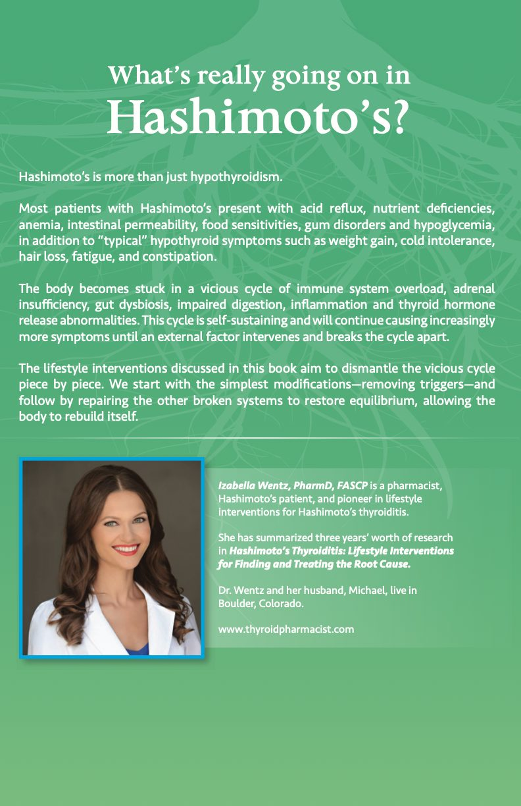
What’s really going on in Hashimoto’s?
Hashimoto’s is more than just hypothyroidism.
Most patients with Hashimoto’s present with acid reflux, nutrient deficiencies, anemia, intestinal permeability, food sensitivities, gum disorders and hypoglycemia, in addition to “typical” hypothyroid symptoms such as weight gain, cold intolerance, hair loss, fatigue, and constipation.
The body becomes stuck in a vicious cycle of immune system overload, adrenal insufficiency, gut dysbiosis, impaired digestion, inflammation and thyroid hormone release abnormalities. This cycle is self-sustaining and will continue causing increasingly more symptoms until an external factor intervenes and breaks the cycle apart.
The lifestyle interventions discussed in this book aim to dismantle the vicious cycle piece by piece. We start with the simplest modifications—removing triggers—and follow by repairing the other broken systems to restore equilibrium, allowing the body to rebuild itself.
Izabella Wentz, PharmD, FASCP is a pharmacist, Hashimoto’s patient, and pioneer in lifestyle interventions for Hashimoto’s thyroiditis.
She has summarized three years’ worth of research in Hashimoto’s Thyroiditis: Lifestyle Interventions for Finding and Treating the Root Cause.
Dr. Wentz and her husband, Michael, live in Boulder, Colorado.
www.thyroidpharmacist.com